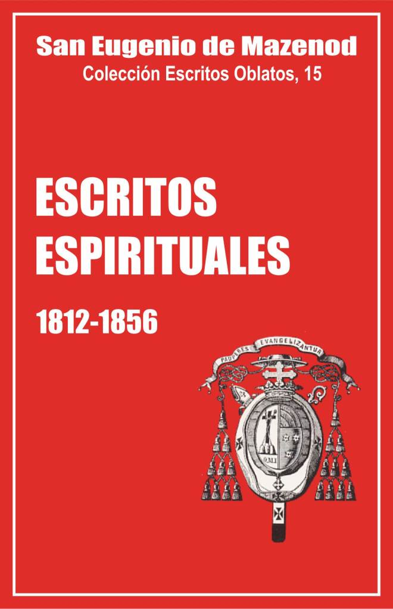

Palo Gordo
2019
Escritos Oblatos: - 01 - 02 - 03 - 04 - 05 - 06 - 07 - 08 - 09 - 10 - 11 - 12 - 13 - 14 - 15 - 16 - 17 - 18 - 19 - 20 - 21 - 22

San Eugenio de Mazenod
Colección Escritos Oblatos, 15
Versión española por los pp.
Félix Erviti, Acacio Vabuena
y Olegario Domínguez
Postulación general OMI
Roma 1994
Editado en Asunción, Paraguay, 1999
Palo Gordo
2019
1812 -- 1813-1815 -- 1816-1831 -- 1832-1856
102. Sobre la comunión frecuente [1]
Obligaciones que impone la frecuente participación eucarística.
1812 (?).
La participación frecuente en el sagrado Cuerpo y la preciosa Sangre de JC me impone la obligación:
1º de vivir en el recogimiento, quiero decir en recogimiento interior, enteramente ocupado del Esposo de mi alma que se digna hacer de ella su morada permanente.
2º de recordar con frecuencia los enormes pecados de mi vida pasada para seguir purificándome detestándolos cada vez más, y ofreciéndolos, ya abatidos por la penitencia, a JC para que los destruya del todo y los consuma definitivamente en el brasero ardiente de su divino amor cuya sede está en su corazón adorable.
3º evitar con cuidado escrupuloso cualquier clase de falta voluntaria por pequeña que parezca por el solo motivo de que contrista a mi Dios, el muy amado de mi corazón que ha hecho en mí y por mí tan grandes cosas.
4º no contentarme con cumplir los principales e imprescriptibles deberes de mi estado, sino abrazar con alegría y prontitud todas las prácticas de virtud y de penitencia que puedan ayudarme a adelantar en la perfección de la que estoy aún tan espantosamente lejos, tender en una palabra hacia esa perfección como hacia mi elemento, y persuadirme bien de que cuando una acción o una práctica cualquiera, por pequeña, fútil, baja, pueril o popular que parezca, pueda serme útil para avanzar siquiera un paso por ese bendito camino, no debo mirarla como menos digna de mí, sino al contrario aprovecharla con alegría como un medio que la divina y paternal Providencia de mi Dios me ofrece para salir de mi estado de tibieza y ayudarme a volar hacia él.
¡Cómo! Voy a recibir en mi corazón a ese Cordero inmaculado, a esa víctima que se ha inmolado por mí y que, en un exceso de amor quiso pagar de antemano con indecibles tormentos la muerte eterna que tantas veces he merecido, voy a recibirla para colmarla de injurias y desprecios y me juzgaría en regla con ella por cuanto le debo de honor, gloria, amor y gratitud porque evito darle el último golpe crucificándolo de nuevo. ¡Oh! mi amable Salvador, objeto adorable de las complacencias de vuestro Padre Celestial, vos, ante quien se postran en el abismo de su nada innumerables legiones de sublimes espíritus angélicos, vos…
103. [Propósitos como director en el seminario de San Sulpicio [2] ]
Eugenio seguirá en el seminario como director. Propósitos para que su ejemplo "diga más que sus palabras".
[enero, 1812].
Ya que parece ser la voluntad del Señor que yo siga todavía este año en el seminario y que me quede en él para ayudar a mantener en la casa el espíritu de piedad que los asiduos cuidados de nuestros Padres habían tratado de introducir, me someteré a lo que la Providencia parece exigir de mí; y para no volver infructuoso el ministerio al que me destina, me esforzaré por vivir de tal modo que mi ejemplo diga más que mis palabras y mis insinuaciones.
Para eso procuraré renovarme con la ayuda de Dios en el espíritu del sacerdocio y comenzaré por convencerme de que el sacerdocio es un estado de perfección, que exige de quienes han tenido la dicha de verse revestidos de él, una escrupulosa fidelidad a las menores mociones del Espíritu Santo, un horror radical al pecado, por ligero que pueda parecer, una gran pureza de corazón y de intención, buscando en todo solo a Dios, su gloria, la salvación de las almas y nuestro progreso en los caminos de la perfección.
No descuidaré ninguno de los medios que los directores de la vida espiritual sugieren para alcanzar ese fin, único fin al que debo aspirar.
Para eso tomaré la resolución más eficaz de cumplir todos mis deberes: 1. de sacerdote, y 2. de director, ya que debo efectuar esas funciones.
Como sacerdote, tengo deberes de piedad y deberes de estudio y debo cumplir igualmente esas diversas obligaciones con la misma exactitud.
Mis deberes de piedad consisten: 1. en la oración, 2. la santa misa, 3. el oficio divino, la lectura espiritual, el examen de conciencia y la plegaria, todo ello acompañado, precedido y seguido del santo ejercicio de la presencia de Dios.
1. Siendo demasiado consciente de que el gran fallo de mi oración viene de que no atiendo bastante a preparar el tema la víspera, en adelante pondré el mayor cuidado en cambiar de conducta al respecto. Mi propia experiencia ha debido demostrarme en eso lo que los padres de la vida espiritual nos inculcan con tanta frecuencia.
2. En cuanto me den la luz, me levantaré rindiendo a Dios los honores que le son debidos y como está señalado en mi reglamento particular. Comenzaré luego, mientras trajino en mi cuarto, a prepararme para el santo sacrificio. Pasaré después a la tribuna y esperaré a que den las 4, 45 para bajar a revestirme.
104. A la Sra. de Mazenod, en Aix [3]
Alegría de celebrar la Misa. A su regreso a Aix, Eugenio celebrará para su madre y la alimentará "con el pan sagrado, el único que puede dar la vida".
L.J.C.
París, 9 de enero de 1812.
Mi querida y buena mamá, contaba escribirle más largo de lo que voy a poder hacerlo, por medio del buen Emilio; pero vino esta mañana para avisarme que vendría mañana a recoger mis cartas. Y justamente estos días estoy más ocupado que de costumbre; lo que me obligará a decirle solo dos palabras para agradecerle sus oraciones durante la hermosa noche de Navidad. ¡Qué medio más excelente para reunirnos, aunque a tanta distancia! Debe usted pensar qué presente estuvo en mi corazón y con qué insistencia recé por una madre tan buena. Pero, no contento con esas primeras oraciones que cada día reitero en el santo Sacrificio, mi tercera Misa el día mismo de Navidad fue por usted. La segunda, la había ofrecido por nuestra buena mamá, pues era urgente acudir en su ayuda, en el supuesto de que todavía no gozara de la gloria. ¡Qué noche, qué día! ¡ Qué días los que siguieron a aquel primer día! ¡Qué días también los que se renuevan cada 24 horas! ¡Qué largo parece el tiempo entre misa y misa! ¿Por qué no se puede reiterar varias veces al día este admirable sacrificio? Llegará la hora, querida mamá, en que lo ofreceremos juntos. ¡Qué dicha! Tras haberme alimentado usted de su sustancia, de su leche, yo le ofreceré a mi vez un alimento preparado por mi ministerio para los hijos de Dios hambrientos del pan sagrado, el único que puede dar la vida.
105. A la Sra. de Mazenod, en Aix [4]
A su regreso a Aix, Eugenio estará exclusivamente al servicio de la Iglesia. Educación cristiana de Natalia.
París, 22 de abril de 1812.
¡Ay, qué harto estoy de las molestias que le causan sus asuntos! ¿No va a encontrar nunca el medio de salir de eso? Sin embargo, hay que tomar alguna resolución al respecto, pues es imposible que usted siga aguantando el fastidio y la fatiga, y yo no podré de ningún modo mezclarme nunca en ello, aunque me viera reducido a no poder comer más que pan moreno. Le he advertido de antemano sobre mis intenciones a ese respecto, que son simplemente resultado de las obligaciones impuestas por mis deberes de estado. Los sacerdotes de hoy no son como los abates de antaño; no somos sacerdotes más que para la Iglesia y por eso le debemos todos los instantes de nuestra vida. Así, todo el tiempo que no fuera empleado en la oración, el estudio o el ejercicio del santo ministerio, sería robado a Aquél a cuyo servicio nos hemos consagrado por entero, conociendo bien toda la extensión de las obligaciones que nos imponíamos. Por eso, no hay que imaginarse que a mi vuelta me dedique a hacer o recibir visitas, a cumplir eso que se llama las conveniencias del mundo, etc. etc. Nada de eso. Todo mi género de vida está previsto de antemano, y nada me hará cambiar, pues solo tomo resoluciones tras haberlas madurado ante Dios, tras haber reconocido que son buenas; luego todo queda dicho. Me llamarán salvaje, incluso grosero, si se quiere; todo me será igual con tal que sea un buen sacerdote. Los ejemplos de otros que me puedan aducir, lejos de doblegarme en mi propósito, no harán sino confirmarme más en él. Mi conciencia y Dios, ésos son mis jueces y la norma de mi conducta…
[…] Abrazo a mi buena hermanita. Mil veces me he propuesto escribirle, sin poderlo hacer nunca. Espero que ella no me lo tome a mal, sabiendo a qué atenerse respecto a mí; cuánto quiero a su niña y cuánto me consuelan sus "Jesusitos" [5]. Cuide bien a esta querida niñita; las mamás influyen mucho más de que se piensa en la felicidad eterna de sus hijos con esas primeras semillas que echan en sus corazones tan nuevos y con el ejemplo con que acompañan sus lecciones; tengo a la vista ejemplos conmovedores. Gozo de toda la dicha de ustedes a propósito de esa pequeña. Rezo por ella como por todos ustedes, todos los días de mi vida. La abrazo, querida mamá.
106. [Retiro] en Issy [6]
Eugenio no logró en la vacaciones estudiar el inglés y el español. Se esforzará por crecer en virtud. Estado de tibieza. Desea morir antes que ser un mal sacerdote. Humildad, estima del sacerdocio, vida ejemplar de sus maestros y condiscípulos.
Issy, junto a París, agosto de 1812.
Era mi propósito emplear el tiempo de estas vacaciones en el estudio del inglés y el español, pensando que esas dos lenguas podrían serme útiles en mi ministerio futuro; pero parece que no podrá lograrse ese proyecto. Por lo demás, no tendré que lamentar más que la primera de esas lenguas, porque creo poder aprender la otra con facilidad, cuando quiera dedicarme un poco a ella, por el gran parecido que tiene con el italiano.
Es preciso, pues, que emplee este tiempo en otra cosa útil; y lo mejor que puedo hacer es secundar el deseo que el Señor me inspira de pensar un poco en mi progreso en la piedad, no sea que, mientras muestro a los otros el camino, me extravíe yo miserablemente.
El medio mejor para lograr este fin es meditar profundamente la ley de Dios y todas las obligaciones que mi vocación me impone, y con frecuentes introspecciones examinar todos los puntos de mi conducta pasada y presente para ver hasta qué punto me he apartado de los deberes que tenía que cumplir. Es preciso que valientemente lleve la sonda hasta los más secretos repliegues de mi corazón, y que arranque, destruya y elimine sin compasión todo lo que me parezca no estar en orden. Ya es hora que responda a esas continuas inspiraciones de la gracia que están pidiendo y exigiendo lo que, a pesar de cierta buena voluntad y un vivísimo deseo interior, sigo siempre rehusando; me arrastro en una cobarde tibieza, mientras que el Señor me está pidiendo lo que le he prometido y lo que sin duda tiene derecho a exigir de cualquier sacerdote, y de mí más que de ningún otro. Por otra parte, como con estas vacaciones se termina el tiempo que debo pasar en esta santa casa, hace falta que concentre cuanto tengo de fuerza para recoger todas las gracias que me habían sido concedidas, la abundancia de buenos ejemplos y de santas instrucciones, en una palabra, todo el bien que debía haber cosechado y que desgraciadamente he disipado. Tal vez esté aún a tiempo de salvar algún residuo de esa dilapidación de la que soy culpable para mi gran desgracia.
¡Ay! demasiado tiene que llorar la Iglesia por el gran número de los sacerdotes que la afligen con su insensibilidad ante sus males, que languidecen ellos mismos y desvirtúan todas las llamas del amor divino que deberían difundir entre los fieles, ante quienes ellos son los órganos del Señor y los instrumentos de su misericordia. ¿Querría yo aumentar su número? Dios me guarde de semejante desgracia. Antes morir en el instante mismo en que estoy trazando estas palabras.
Pero, como es indudable, la experiencia me lo demuestra de sobra, que yo me apartaría insensiblemente de las buenas disposiciones que el Señor se complace en inspirarme, si mis resoluciones no estuvieran asentadas en un fundamento sólido, me persuadiré ante todo de que el edificio de mi salvación debe estar cimentado en la humildad, porque el Señor quiere construir sobre la nada; luego, me impregnaré de la estima que debo tener por la sublime dignidad a la que, aunque muy indigno, he sido elevado, y de las temibles obligaciones que mi carácter sacerdotal me impone.
Estos dos puntos serán como los dos goznes sobre los que deber girar todo lo demás: lo que yo soy, lo que Dios ha hecho por mí, ahí tengo tema para meditar no solo durante toda mi vida, sino durante toda la eternidad.
Cuanto mayor pecador he sido y sigo siendo, más esfuerzos debo hacer por amar y hacer que se ame a Dios, ya que, a pesar de esta profunda indignidad, Dios no ha cesado de colmarme de las mayores gracias que tuvo en su poder concederme, y yo no puedo agradecer tantos favores y tan gran misericordia más que haciendo todos los esfuerzos por amarle cuanto soy capaz; y en reparación de la gloria y el honor que le he sustraído por mi gran culpa, debo emplear cuanto tengo de fuerzas, de medios y de entendimiento para hacer que los otros le amen.
Un medio poderoso para perseverar en estas disposiciones será el recuerdo de todas las virtudes sacerdotales que he visto practicar con tanta perseverancia ante mis ojos durante los cuatro años que tuve la dicha de vivir en este seminario. El Sr. Emery, el Sr. Duclaux, ese santo Sr. Duclaux, y todos sus demás colaboradores, y la inmensa mayoría de sus alumnos, mis queridos condiscípulos, serán por toda mi vida como otros tantos apoyos, como otros tantos estímulos invisibles que me impedirán decaer y me empujarán a avanzar. Dios mío ¡cuántas virtudes! ¡Qué miserable me siento junto a todos esos santos eclesiásticos! Y ese Tharin, y ese Teysseyrre, y ese Gosselin, a quienes he sido asociado para dirigir este seminario, cuando nos quitaron a nuestros padres; todos son más jóvenes que yo por edad, pero ¡a qué distancia de ellos me encuentro por la virtud! Con todo, hemos sido educados juntos, hemos crecido a la sombra de las mismas alas tutelares, hemos recibido las mismas instrucciones, hemos compartido las mismas ventajas y los mismos ejemplos, pero, encima de que ellos eran más inocentes que yo y por tanto más aptos para recibir las impresiones de la gracia, cuánto mejor que yo se han aprovechado de la abundancia espiritual en la que vivíamos.
107. [Reglamento para el regreso a Aix [7]
Son muchos los deberes de un sacerdote, pero es también un deber dormir 6 horas al menos. Reglamento: levantarse rápido, oración, misa, estudio y breviario durante el día.
[Agosto-setiembre 1812].
Los deberes del sacerdote son tan numerosos; tiene tantas cosas que aprender, y tantas que hacer que el día no es suficientemente largo para ello; por eso sería deseable que un sacerdote no necesitara dormir, pero puesto que Dios ha querido imponerle, como a los demás hombres, la necesidad de reparar sus fuerzas con el descanso, debe someterse a esa voluntad del Señor con espíritu de penitencia, ofreciéndole ese estado de nulidad que ocupa tan gran parte de su vida con los sentimientos de un corazón persuadido de su incapacidad y que no ve otro mérito que el de cumplir ciegamente la voluntad del Dueño, de quien nunca será más que un servidor inútil, tanto si le sirve descansando como haciendo milagros.
Insisto en esta idea porque tengo que reprocharme el no haber dado hasta ahora, ni con mucho, tiempo suficiente al sueño, y creo deber recordar aquí la receta del doctor Leynech [R. Laennec, 1781-1826] que por gracia fijó en 7 horas el descanso que debía dar a mi cuerpo, y la amenaza que me hizo de volverme en poco tiempo incapaz de aplicación y absolutamente inhábil para el estudio si no me sometía a ese régimen indispensable.
Para moderar un poco, aunque con prudencia, esa dura sentencia a la que tan mal me he conformado hasta ahora, dormiré seis horas.
Apenas me despierten, haré la señal de la cruz ofreciendo a Dios mi corazón y sin vacilar ni por un instante, me tiraré de la cama para no empezar el día con un acto de pereza. Recordaré que la segunda campanada no encontraba nunca a san Vicente de Paúl en la misma postura que la primera, y que fue fiel a esa obediencia hasta el último día de su vida.
Es verdad que cuesta salir tan rápidamente de la cama, pero eso es precisamente lo que da mérito a esa acción.
Me vestiré con modestia, ocupándome en algún pensamiento santo o en el tema de mi oración, o en la consideración de los sentimientos que tenía Nuestro Señor al despertar, etc., o sintiendo confusión al ver que esos hábitos me recuerdan que he perdido la inocencia, etc.
Me pondré ante todo la sotana tras haberla besado con respeto agradeciendo al Señor la insigne gracia que me ha hecho al darme el privilegio de llevar la santa librea de su Iglesia. Tendré tanto amor por ese hábito distintivo de mi estado que nunca lo quitaré, ni siquiera para viajar, a no ser que el viaje sea demasiado largo y no haya más remedio.
Una vez vestido completamente, pasaré a mi oratorio para dedicarme al santo ejercicio de la oración, que comenzaré con la oración vocal sacada de las obras del Sr. Olier.
Convencido de que un sacerdote no puede santificarse más que por la oración y que de la oración depende el fruto de mi ministerio, emplearé diariamente al menos una hora en ese santo ejercicio.
Si por casualidad ocurriera que no me fuera posible hacerla completa por la mañana, la supliré fielmente durante el día.
Sin embargo, haré de suerte que la oración preceda inmediatamente a la santa misa; así por el invierno, cuando según la costumbre de las parroquias, no se abren las iglesias hasta poco antes de las seis, empezaré la oración a las cinco para pasar sin intervalo de la oración al altar, y entonces, tras haber rezado la oración vocal, recitaré maitines y laudes y leeré algunos capítulos de la Sagrada Escritura.
Al dirigirme a la iglesia para celebrar los sagrados Misterios, cuidaré mucho de mantenerme en el mayor recogimiento, de suerte que se pueda decir con verdad que mi oración no se ha interrumpido.
Llegado a la iglesia, me detendré ante el Santísimo para adorarlo profundamente y rendirle mis homenajes de amor, de gratitud, de devoción, de ofrecimiento, de sacrificio; haré, en una palabra, como la recapitulación de los pensamientos y de los primeros propósitos de la oración, pero todo esto muy brevemente porque debo estar suficientemente preparado para los santos Misterios por la oración y hacia el final de ésta tuve que ocuparme del Santo Sacrificio que JC va a ofrecer a su Padre por mi ministerio.
Vuelto a casa, rezaré Prima y leeré en su lugar el Martirologio, después leeré la Sagrada Escritura durante media hora.
Pasaré luego al estudio de la literatura hasta el almuerzo.
Antes de bajar a comer, rezaré Tercia.
Después de la comida, volveré a subir para ponerme a estudiar teología. Antes de empezar ese ejercicio, rezaré Sexta.
A las dos, Nona; a las cuatro y media, dejaré el estudio de la teología y de la historia eclesiástica para rezar Vísperas, a las que seguirá el examen particular.
A las cinco, cena; a las siete, Completas y luego visita al Santísimo.
Hasta las nueve, lectura recreativa e instructiva. En verano, Maitines y Laudes.
A las nueve, media hora de lectura espiritual en familia, seguida de la oración de la noche.
A las diez, retirarme para ir a dormir.
Cuidaré de rezar el rosario todos los días, pero tomaré para ello el tiempo que empleo por la calle yendo de un sitio a otro; empezaré por la mañana al volver de la iglesia después de misa.
108. A la Sra. de Mazenod, rue Papassaudy… en Aix [8]
Eugenio vivirá con su madre en Aix, pero seguirá un reglamento exigente para ocuparse solo de su instrucción y del bien espiritual del prójimo.
L.J.C
Issy, 24 de setiembre de 1912.
[…] Quiero antes de terminar, advertirle que, por estado, estoy obligado a tender a la perfección, y por consiguiente, a tomar todos los medios para alcanzarla; por eso, hay que hacer de suerte que no encuentre obstáculos para ello al vivir con usted; ya será bastante para alivio de esta naturaleza que tanto exige y que se rebusca en todo, el tener el consuelo de estar junto a una madre a la que uno ama tiernamente; hará falta, pues, que en lo demás se me deje seguir el reglamento que me voy a imponer según el conocimiento que tengo de mis deberes y obligaciones, tanto en mis relaciones con las personas de fuera, como en el empleo del tiempo, la hora de levantarme, la clase o calidad de mis comidas, y sobre todo es preciso que yo quede tan apartado de los negocios temporales como si no tuviésemos tierras ni casas; esta última condición es tan importante que yo renunciaría a todo antes que faltar a eso. Pasados los ocho o quince primeros días, mi tiempo ya no puede emplearse en otra cosa que en mi instrucción o en el bien espiritual del prójimo. Si encontrara obstáculos para esas dos cosas, estaría obligado en conciencia a huir incluso de la casa paterna, de la diócesis, de la patria y del imperio, a correr, en fin, hasta encontrar la facilidad de ejercer esos dos puntos capitales de mi vocación; he querido decirle una palabra sobre esto antes de llegar, para que no quede demasiado sorprendida cuando me vea adoptar un género de vida y seguir unos ejercicios que no son muy comunes en estos tiempos de relajamiento y de tibieza general; se me acaba el papel, la abrazo mil veces; dije la santa misa por los casados [9].
109. Reglamento hecho en mi retiro de diciembre 1812, en Aix [10]
Importancia de un reglamento. Deberes con Dios: espíritu de penitencia, oración, misa. oficio divino, presencia de Dios, jaculatorias, meditación, visita al Ssmo. examen de conciencia, confesión.
Diciembre de 1812.
Si vis aliquid proficere, noli esse nimis liber, sed sub disciplina cohibe omnes sensus tuos (Kempis, l. 1, c. 21).
Ne igitur hodie asperam ducas vitam, et cras mollem el delicatam, sed canonem unum retine, sicut etiam sancti fecerunt Patres qui ad qinquaginta et ultra annos, suum non mutaverunt canonem ac regulam (S. Efrén).
En todo tiempo se ha reconocido en la Iglesia y entre las personas que han querido llegar a la perfección, que para alcanzarla y mantenerse en ella, era preciso someterse a una regla fija e invariable que, controlando sin cesar los desórdenes de los sentidos y la inconstancia natural de la voluntad humana, sea como un Pedagogo exacto y riguroso que en su inexorable firmeza no permita nunca que bajo frívolos pretextos su discípulo se aparte de las reglas que una prudencia esclarecida le ha dictado.
La regla es como la brújula de las disposiciones del alma. De la mayor o menor fidelidad en conformarse a ella, es fácil deducir si predomina el fervor o la tibieza, y mediante ese monitor fiel nunca, por poco que se conserve de buena voluntad y de deseo de santificarse, nunca, repito, se darán grandes desviaciones, nunca se perderá enteramente de vista el objetivo único al que todos debemos tender.
Un reglamento de vida es para todo cristiano como el testigo y el garante de las santas resoluciones y de las promesas hechas al Señor durante el dichoso tiempo de un retiro, cuando el alma, más impresionada por los peligros a los que está continuamente expuesta en el mundo, y por la necesidad de proveer eficazmente a su salvación, a pesar de los esfuerzos de cuanto la rodea, y no menos aún por las excesivas misericordias de su Dios, juró, movida por el sentimiento profundo de su agradecimiento, serle eternamente fiel.
Pero esas promesas y esos juramentos no dejarían huella alguna si uno no cuidara de conservar el precioso recuerdo de ellos en un reglamento en el que se depositen para servir como de monumento al solemne pacto hecho entre el alma y su Dios. La experiencia lo ha comprobado de sobra; sin reglamento el fervor del más santo retiro es un fuego fatuo que no tiene más existencia que la del momento; brilla y al instante desaparece.
Pero, al contrario, si en la decisión en que estoy de servir a Dios toda la vida y en la forma que me ha parecido la más conforme a sus designios sobre mí, escribo las condiciones del caso, cada vez que eche la mirada a ese escrito, y debo hacerlo varias veces al año, podré decir con verdad: éstas eran mis disposiciones en aquel retiro, en el que, separado del mundo entero, a solas con Dios, al resplandor de la antorcha de su gracia, descendí a mi corazón, visité todos sus repliegues, sondeé todas sus inclinaciones: aquí está el fruto de las sólidas reflexiones que tuve oportunidad de hacer en aquellas profundas meditaciones, en aquellas consideraciones serias y detenidas en las que, libre de toda ilusión, de todo afecto extraño, de toda disipación de los sentidos y de todo atractivo mundano, reconocí cuál era mi verdadero, mi único interés. Entonces fue cuando juzgué santamente de las cosas. Todo fue pesado con la pesa del santuario; solas la razón, la religión y la piedad se pronunciaron entonces; las leyes que dictaron se sacaron del seno de la Sabiduría misma de Dios: que ellas sean, pues, irrefragables y que nada en el mundo sea capaz de hacerme descuidar la menor porción de las mismas.
De acuerdo con estas reflexiones, he aquí el reglamento que me he prescrito y que observaré toda la vida, con la ayuda de Dios, con las únicas modificaciones que me obligue a aportar, en cuanto al orden de los diversos ejercicios, la diferencia de situación o de las circunstancias en que me encuentre.
Primero, persuadido como estoy de que la vida de un sacerdote debe ser una vida con todos los días llenos ante el Señor, pondré todo el empeño en cumplir esta estricta e indispensable obligación lo más perfectamente que me sea posible. En consecuencia, evitaré con cuidado todo lo que pudiera distraerme de esta ocupación. Para lograrlo, me aislaré por completo del mundo, y procuraré divulgar esta determinación que he tomado para que nadie vea mal que deje de lado todo lo que se llama conveniencias de sociedad, etc.; en una palabra, no iré en busca de quienes componen esa sociedad más que cuando la gloria de Dios o la salvación de las almas me lo exijan, y mi puerta estará cerrada inexorablemente a todos aquellos para quienes no puedo ser de ninguna utilidad: Quid nobis cum alienis domibus? Illi potius ad nos veniant qui nos requirunt…Ministerium altaribus Christi, non obsequium hominibus deferendum recepimus (De libro aeneo…ex sancto Ambrosio).
Incluso si, más tarde, me diera cuenta de que, so pretexto de utilidad o de edificación, me hacen visitas más frecuentes o más prolongadas, reduciré a una hora diaria el tiempo en que puedo dar audiencia, fuera del caso de asuntos urgentes, etc.
En segundo lugar, como las obligaciones de un sacerdote son un conjunto de deberes para con Dios, cuya santidad debe reflejar ante los hombres, para con el prójimo, por cuya salvación debe trabajar constantemente, y para con la Iglesia, de la que es ministro, debe velar con sumo cuidado por ser fiel a todos los puntos de tan temible carga.
Por eso, es preciso que me convenza bien de la sublimidad de mi ministerio y de la santidad que exige de mí, y que esté bien persuadido de que solo la piedad y la piedad más colmada puede ayudarme a alcanzar mi fin. Sin la piedad, todo sería estéril en mí; la piedad, en cambio, dará vida a todas mis acciones, lo fecundará todo: Pietas…ad omnia utilis est (1 Tim 4, 8). San Ambrosio la mira con razón como el fundamento de todas las virtudes, cum pietas virtutum omnium fundamentum sit (Serm 18 in Ps. 118). Y san Pablo decía también escribiendo a Timoteo: Exerce autem teipsum ad pietatem (1 Tim 4, 7), convencido de que un ministro piadoso cumple puntualmente todos los demás deberes.
Pediré, pues, con insistencia esta gracia al Señor. Luego, sin criticar nunca a nadie (a no ser que mi deber me exija reprender, increpa, etc.), iré derecho por mi camino, sin importarme si mi conducta es una desaprobación tácita de lo que practican los tibios y sin temer ni los sarcasmos ni las murmuraciones que, de parte de ellos, pudiera atraer sobre mí la regularidad que voy a procurar conseguir.
Deberes para con Dios
Mis deberes para con Dios consisten principalmente en el amor, la adoración, la oración, la dependencia de su santa voluntad y la fidelidad en guardar sus mandamientos, etc.
Respecto a estos diversos artículos, no me doy otra norma que la de estar siempre persuadido de estar muy por debajo del punto al que tengo que llegar.
Tomaré por modelo de este culto que debo a Dios a su adorable Hijo Jesucristo, nuestro amable Salvador, para con quien trataré de tener la más tierna devoción y el más ardiente amor, teniendo siempre presente el recuerdo de sus beneficios en la mente y sobre todo muy adentro en el corazón. Y reconociéndome tan incapaz como indigno de amarle, le pediré esa gracia todos los días en el santo sacrificio y cien veces al día con esta jaculatoria: Jesús mío, dadme vuestro amor. ¡Ah! Lo tendría todo ganado si tuviera para con JC esta devoción que debe ser por excelencia la de un sacerdote.
Consideraré a Jesús, mi amor, en su encarnación, en su vida oculta, en su misión, en su pasión y su muerte, pero sobre todo en su Sacramento y en su Sacrificio. Mi mayor ocupación será amarle, mi mayor empeño, hacerle amar. Emplearé en ello todos mis medios, todo mi tiempo, todas mis fuerzas, y aun cuando, tras muchas penas, solo hubiera logrado que alguien hiciera un acto de amor para con un Señor tan bueno, me tendré con razón por muy bien pagado.
No cesaré de recomendar mi alma a ese buen Salvador para que él la preserve de todo pecado, y tanto insistiré en ello mientras él tiene a bien mostrarse accesible y, por decirlo así, dependiente de mí, que pueda fundadamente esperar que me sea favorable el día temible en que sea mi Juez.
Para tratar de obtener que el Señor atienda mis votos, uniré a la más exacta observancia de su Ley la práctica de la mortificación de suerte que ella se refleje en todas mis acciones y en todas las circunstancias de mi vida, recordando que la vida entera de Jesucristo, mi modelo, fue una cruz perpetua y un continuo martirio: Tota vita Christi crux fuit et martyrium (L II, c. 12) ¿Cómo, ante eso, podría yo buscar mis comodidades y descanso? Et tu, añade el autor de la Imitación, et tu quaeris requiem et gaudium. Por otra parte, como sigue diciendo el mismo autor, según todos los Padres de la vida espiritual, consta que cuanto más se cautiva la carne y más se la somete al espíritu por la penitencia, mayor efecto produce la gracia en las almas y más las fortalece con consuelos interiores: et quanto caro magis per affictionem atteritur, tanto spiritus amplius per internam gratiam roboratur.
Abrazaré, pues, con alegría esa penitencia saludable, y aunque me sea imposible proporcionarla al número y a la enormidad de mis crímenes (como hoy uno está expuesto a ver violados, leídos y divulgados por los agentes de la policía, los papeles más secretos, que deberían ser los más respetados, creo tener que añadir esta nota para esos Señores en este escrito que es solo para mí: es que, cuando hablo de mis crímenes, se ha de entender de las faltas graves que reconozco haber tenido la desgracia de cometer contra Dios en lo secreto de mi conciencia; así que, aunque con toda verdad pueda decir que soy ante Dios un grandísimo pecador, podría también jactarme ante aquellos que no entienden este lenguaje, si pensara como ellos, de ser más caballero que ellos, pues no solo nunca he robado ni matado ni hecho el menor mal ni el menor perjuicio a nadie en el mundo, no solo no he quitado la mujer de nadie, a lo que se limita el catecismo de los más honrados del mundo, sino que además siempre he creído y actuado conforme a este principio: que tanto la razón como la religión prescribe imperiosamente el abstenerse de querer gozar de lo que pertenece a otro y el jamás consentir hacer con nadie acciones que podrían ser tema de sus justos remordimientos: en una palabra, jamás he dado ningún escándalo de ninguna clase en ninguna época de mi vida. Apelo a todos los que me han conocido en todos los países donde he vivido). Volvamos a mí: aunque no sea posible que adecue mi penitencia al número y a la enormidad de mis pecados, haré de suerte que este espíritu de penitencia se imprima de tal modo en mi alma , que aproveche con alegría todas las ocasiones de practicarla. Debe extenderse a todo, al exterior como al interior. En lo interior, haciéndome renunciar a mi propio espíritu, sometiendo mi voluntad y mis gustos, manteniéndome continuamente en la humildad, con paciencia en las contradicciones y con alegría en los desprecios. En lo exterior, controlando mis sentidos y castigando mi cuerpo, ya con la privación de las cosas que más le gustarían, ya con el castigo de sus rebeliones, ya finalmente con la moderación, la sobriedad, la modestia y la vigilancia, no haciendo caso a sus pretendidas necesidades a no ser que lo exija la prudencia, en una palabra, reduciendo a este esclavo a la más absoluta servidumbre con una vida dura y con el trabajo.
Así que debo dormir poco, comer con sobriedad, trabajar mucho y sin quejas, debo además ser de una regularidad ejemplar en mi vestimenta y en mis efectos personales; nada de medias de seda ni ceñidores de seda, nunca cabellos rizados, atavío ridículo tan contrario al buen sentido como a los sagrados cánones; mis cabellos, al contrario, estarán siempre bien lisos, y a lo sumo les echaré de vez en cuando un poco de polvo para la limpieza, limpieza que procuraré guardar siempre, sin afectación no obstante, tanto en mi persona como a mi alrededor.
Debo aprender a soportar un poco de frío mientras no sea nocivo a mi salud y no me impida estudiar; lo mismo digo del calor. Debo también saber tragar un bocado malo y hábilmente soslayar uno bueno sin que nadie lo note; no temer demasiado una postura molesta o un dolor ocasional, que no debo descuidar ofrecer a Dios, quien sabe agradecer la intención que uno tendría de sufrir más y contentarse con poco cuando se le da con buena voluntad.
Y como estas ocasiones de sufrir por Dios en expiación de las propias faltas se presentan raras veces, hay que suplir con ayunos, brazaletes, cadenillas y con la disciplina; todo ello, con los sentimientos de la más profunda humildad, en unión con los sufrimientos, pasión y muerte de N.S.J.C. sin mirar todas estas prácticas, de las que han hecho uso todos los santos, más que como otros tantos medios para llegar a la perfección, y no como una prueba de que se ha alcanzado.
De estar libre para el número y calidad de los platos de mis comidas, escogeré los más comunes y los más ordinarios. Un trozo de carne cocida o asada, legumbres o huevos. La sopa y dos platos, en caso que uno solo no sea suficiente, como ya lo he experimentado sin el menor inconveniente, me parece un ordinario muy aceptable, añadiendo, según los días, algunas frutas a causa del ardor de mi sangre, tomadas con el mismo espíritu que el vino del que habla el apóstol san Pablo a su discípulo Timoteo: Noli adhuc aquam bibere, sed modico vino utere propter stomachum tuum (1 Tim 5, 23).
He bebido agua casi toda la vida, así que el vino no me es necesario, y menos todavía el licor. Estando con mi madre, me sería imposible seguir el régimen del que acabo de hablar; por lo menos, es preciso que no lo pierda de vista del todo; esto me estimulará a ser ingenioso para mortificar mi gusto en medio incluso de la abundancia.
Oración
Siendo la oración parte principal del culto de adoración debido a la soberana Majestad de Dios, debo ocuparme con especial cuidado en cumplir este deber con todas las condiciones requeridas para realizarlo. ¡Ay de mí, si, como se reprochaba a sí mismo san Agustín, me hiciera más criminal con eso mismo que debería hacerme más santo! Y ¿quién me justificará ante Dios, podría decir con ese santo doctor, si mis oraciones mismas sirven para condenarme?.
Misa
La misa es indiscutiblemente la más excelente de todas las oraciones que pueden ofrecerse a Dios en la tierra y en el mismo cielo; por eso tendré la más tierna devoción a este santo sacrificio y lo celebraré siempre con las disposiciones y los sentimientos de un corazón persuadido de la grandeza de la acción y de la horrible miseria del ministro encargado de realizarlo.
En cuanto al tiempo que debo emplear en el santo sacrificio, continuaré haciendo como he hecho desde que tengo la dicha de ser sacerdote, es decir, nunca emplearé menos de media hora y procuraré no pasar de eso, a no ser que estando solo con mi ayudante, pueda sin inconveniente ceder un poco más a mi devoción.
Y en este asunto dejaré gritar a quien sea sin hacer caso de lo que puedan decir o pensar los censores, aunque sean sacerdotes del Señor o doctores en Israel.
Observaré siempre las rúbricas con escrupulosa exactitud, recordando que no hay ninguna en el santo Sacrificio, por poco importante que parezca, que no sea preceptiva, y que por tanto no obligue bajo pena de pecado; y actuaré de tal modo que pueda rendirme testimonio de que no hay en el universo católico un solo sacerdote que diga la misa más conforme a las normas que yo.
Nunca olvidaré durante el Sacrificio, cuando N. S. esté en el altar, pedir con gemidos interiores un gran dolor por mis pecados pasados, la gracia de no cometer más en adelante, un amor a toda prueba y sobre todas las cosas a Dios y a su Hijo, mi adorable Salvador, y por último ser un sacerdote según su corazón, pues todo se encierra en esta sola expresión. Añadiré, como lo he hecho diariamente hasta ahora, con el mayor fervor que me sea posible, la petición de la gracia, tan poco merecida, de la perseverancia final, y, como es tan grande y tan terrible la pena debida a mis pecados, perseveraré pidiendo con insistencia descontar con el martirio o al menos con la muerte al servicio del prójimo, la deuda enorme que he contraído con la justicia divina [11].
Mientras no me demuestren que pueda haber en el mundo una acción que dé más gloria a Dios, y que sea más provechosa para la salvación de las almas, para la santificación del sacerdote y para el alivio de los hermanos que sufren en el purgatorio, diré la misa cada día y dos veces al día si es posible, y ojalá toda mi vida pudiera emplearse solo en este sublime ministerio. Convertiría más almas con mi asiduidad al altar que con todas las predicaciones que pudiera hacer. Dichoso el gran pontífice san León que ofrecía el santo Sacrificio hasta siete veces al día, sin que sufriesen por ello los asuntos de la Iglesia confiada a su solicitud.
Viéndome en la imposibilidad de satisfacer este deseo de mi corazón, a causa de las normas de la disciplina actual de la Iglesia, me limitaré a decir la santa misa todos los días, pero supliré con los deseos más vivos y más ardientes de mi alma esta impotencia que me impone la ley rigurosa de la Iglesia, uniéndome con fervor a todas las misas que se celebran en toda la cristiandad.
En esta perspectiva nunca dejaré escapar la ocasión de binar, aunque ello me cueste mucha molestia e incomodidad.
Pero, como no basta con decir la misa, sino que hay que decirla bien, pondré el mayor cuidado en llevar a ella, con la gracia de Dios, las disposiciones más perfectas. Para ello, viviré de un modo tan conforme a la Ley y hasta a los Consejos evangélicos, que todas las acciones de mi jornada puedan ser como otros tantos actos preparatorios o de acción de gracias; haciendo que siempre preceda la meditación como preparación próxima y que siga inmediatamente media hora de acción de gracias particular.
Esta acción de gracias no debe hacerse en la sacristía, sino al pie del altar y, si es posible, la haré revestido de sobrepelliz.
Cuidaré, después de quitarme las vestiduras sacerdotales, con el mismo recogimiento y el mismo espíritu interior con que las había tomado, de salir de la sacristía sin decir una palabra a nadie. Y si alguien no comprende, por mi compostura, que no quiero ser molestado, y tiene la indiscreción de dirigirme la palabra, contestaré muy lacónicamente, evitando así con una especie de escrúpulo, entablar una conversación que estaría del todo fuera de lugar y hasta sería escandalosa.
¿Por qué iba a tener problema en decir cortésmente que conversaría más a gusto y con más libertad después de mi acción de gracias?
Oficio divino
El Oficio divino es, después del sacrificio de nuestros altares, una de las funciones más importantes de mi ministerio. La Iglesia, al encargarme de este oficio, desea que varias veces al día su ministro se presente ante el trono de las Misericordias de su Dios para atraer sobre sus hijos las bendiciones celestiales y apartar de sus cabezas los flagelos que tan fuertemente provoca la multitud de los pecados que se cometen. Ella quiere que yo ejerza en su nombre y en nombre del pueblo cristiano y comparta aquí abajo el oficio de los espíritus bienaventurados en el cielo: Divinum officium, imitatio caelestis concentus (S. Buenav. De sex alis Seraph. c. 8), que inicie ya en esta vida ese concierto de alabanzas que sin cesar repetiré en la otra si, como debo esperar, tengo la dicha de alcanzarla.
Pondré, pues, todo mi cuidado en cumplir dignamente este santo y consolador ministerio, tanto en la manera como en el orden en que lo rece. Respecto a la manera, me daré cuenta de que mi obligación no consiste en proferir un vano sonido de palabras confusas; conozco bien los reproches que merecieron los judíos por haber desempeñado de ese modo este deber de religión. Este pueblo me honra con sus labios, dice el Señor, pero su corazón está lejos de mí. ¡Cuántos sacerdotes merecerían ese reproche! Yo mismo ¿no tengo nada que reformar en este asunto?
Las condiciones indispensables requeridas para rezar como se debe se hallan en esa oración preparatoria que una loable costumbre antepone normalmente al rezo de cada parte del oficio divino: Aperi, Domine, os meum…ut digne, attente ac devote recitare valeam hoc officium, etc., es decir, respetuosa, atenta y devotamente.
Respetuosamente, es decir, sin precipitación, en una postura modesta, en un lugar conveniente.
Atentamente, porque sin atención no hay verdadera oración, ya que la oración es un culto razonable. Rezar sin atención es realizar una acción puramente maquinal.
Devotamente, porque la oración es el homenaje del corazón más todavía que del espíritu, y porque las palabras de N.S.J.C. antes citadas prueban que es en el corazón donde está el mérito de la oración.
Será, pues, muy conveniente, por no decir indispensable, que me prepare siempre, aunque solo sea con una fervorosa elevación del corazón a Dios, para el rezo del oficio.
Pondré mucho cuidado en rechazar todas las distracciones que se presenten en cuanto me dé cuenta, y para evitar que se prolonguen a pesar mío, haré una pausa imperceptible al final de cada Salmo, mientras digo el Gloria Patri, para renovar la intención y concentrar la atención si momentáneamente se hubiera desviado. Fijaré la mente cuanto me sea posible en el sentido de los salmos que rece, de modo que siga al Salmista en los diversos sentimientos que le movían y que mi corazón produzca los mismos afectos que le animaban cuando compuso esos admirables cánticos: Si orat Psalmus orate, si gemit gemite, si gratulatur gaudete, si timet timete ( S. Agustín, in Ps. 30); pero cuando me dé cuenta de alguna distracción involuntaria, trataré de asumir la actitud de no repetir, como me ocurre a veces, contentándome entonces con humillarme ante el Señor y pedirle perdón desde el fondo del corazón y reanudando luego el rezo con nuevo fervor para reparar la negligencia pasada.
Esto en cuanto al modo de cumplir santamente esta importante y consoladora función. Nada más añadiré sino que sería deseable que hiciera esta oración de rodillas y con la cabeza descubierta, como leemos que siempre hacían el venerable Belarmino y varios otros santos.
En cuanto al orden, me acercaré en lo posible al espíritu de la Iglesia y a su antigua práctica, dividiendo el oficio y rezándolo en las horas para las que está indicado; si el venerable Belarmino, sobrecargado como estaba de tantos asuntos, se conformaba a esa edificante práctica, me parece que no me resultará imposible hacerlo, sobre todo cuando he sentido siempre ese atractivo e incluso lo he intentado sin inconveniente mientras estaba en el seminario.
Presencia de Dios. Jaculatorias
Pero, por santa y por excelente que sea esta oración, no basta para cumplir el precepto del Salvador que quiere que nuestra oración sea continua, oportet semper orare et nunquam deficere [Lc 18,l]. Estaría por tanto en la ilusión quien se persuadiera de haber cumplido del todo ese deber con haber rezado así como así su breviario, incluso con haber celebrado además los santos misterios; oportet semper orare et nunquam deficere. Esta oración continua no es imposible como algunos podrían pensar; hasta sería una impiedad el decirlo, ya que N. Señor, que la ha prescrito, no podría mandar algo impracticable.
Un modo sencillo y fácil de cumplir ese precepto es el ejercicio de la presencia de Dios y de las oraciones jaculatorias, añadiendo la importante e indispensable meditación que es como el arsenal que suministra la provisión para el día, in meditatione exardescet ignis [ Sal 38, 4]. Por medio de este santo ejercicio el alma fiel está continuamente en compañía de su amado, y si por algunos instantes se ve obligada a alejarse, le testimonia de algún modo, aun de lejos, que su mayor dicha sería no dejarle nunca, y para esto se sirve de las jaculatorias que son como otros tantos dardos de amor que uno lanza hacia Dios para atraer su gracia a nuestros corazones.
Así durante el día, sea que estudie, sea que coma, sea que camine, sea que esté solo o en compañía de otros, tendré sumo cuidado en mantenerme en la presencia de Dios, velando sobre mí para no hacer nunca nada que pueda contristar a mi Padre bueno, y para atestiguarle mi amor, suspiraré a menudo por él con aspiraciones cortas pero vivas, con anhelos secretos, con miradas amorosas a las imágenes que nos muestran lo que ha hecho por nosotros, sus tan ingratas criaturas.
Sería de desear que tuviera siempre a mi lado a un amigo fiel que me trajera el recuerdo del amado en el momento en que las ocupaciones me lo hicieran perder de vista. A falta de ese amigo, me serviré de otros medios, como, por ejemplo, levantar mi corazón a Dios cada vez que toca el reloj, o cada vez que llaman a la puerta o que pasa un coche, etc. Como esta costumbre me es ya familiar, solo tengo que continuar.
Otro medio para acostumbrarse a ponerse muy a menudo en presencia del Señor es el utilizado por el bueno y respetable Sr. Emery; tenía una cajita llena de guisantes y cada vez que pensaba en Dios pasaba uno de los guisantes a otra caja: después, cada tarde hacía el recuento de las veces que se había unido a Dios durante el día, y comparaba el número con el del día anterior y, si no había recordado a Dios al menos cada cuarto de hora, se imponía una penitencia. Esto es lo que hacía ese venerable anciano en medio de sus incontables ocupaciones.
Oración
Nada diré sobre la oración, pues habría que decir demasiado; conozco de sobra su importancia, y sé de sobra lo que de ella piensan los santos, y se me ha inculcado demasiado esa máxima que la experiencia ha consagrado, de que no hay de verdad buenos sacerdotes sin la oración, para que pueda olvidarla alguna vez o para que pueda sentirme tentado algún día de abandonar este santo ejercicio. La oración debe ser el pan cotidiano del sacerdote; ahí es donde encontrará fuerza, luz y consuelo en todas las penas que se cruzan en su vida; ahí es donde Dios, comunicándose a él por la unión íntima de sus inspiraciones y de su gracia, le dará abundantemente cuanto necesita para cumplir dignamente su ministerio y hacerlo útil y provechoso para su alma y la de sus hermanos; en una palabra, ahí es y solo ahí donde podrá aprender la ciencia de los santos y los caminos que ellos siguieron, para imitarlos y lograr los mismos resultados que ellos.
Lectura espiritual
Para proporcionar materia a ese ejercicio, hay también otro muy importante al que me impondré el deber de nunca faltar: es la lectura espiritual. Considero la lectura espiritual como un almacén donde uno se provee abundantemente de la materia prima que luego debe ser manipulada y elaborada en la oración, que saca de ella como el jugo más exquisito; esta idea no es rebuscada, expresa exactamente lo que pienso, pues estoy persuadido de que, a menos de que uno sea llevado por vías extraordinarias, se harán pocos progresos en la oración si se ignora lo que los santos han escrito sobre la vida espiritual; por otra parte los ejemplos de sus virtudes, que se leen en sus biografías, son especialmente apropiados para llevarnos a imitarlos, y casi únicamente en los libros ascéticos es donde podemos adquirir el gusto de la piedad, y si la lectura de tales libros no nos es familiar ¿cómo podríamos guiar a las almas que se nos confían? Uno seguirá su espíritu particular y no hará más que tonterías.
Visita al Santísimo
Un sacerdote que sabe que N.S.J.C., no contento con inmolarse místicamente cada día en nuestros altares por amor nuestro, ha querido llevar el exceso de su ternura para con sus hijos hasta quedarse habitualmente entre ellos, no necesita otro motivo para apresurarse a ir a rendirle todos los respetos que la gratitud le reclama. Qué viajes no se emprenderían, qué fatigas no se soportarían, qué obstáculos de todas clases no estaría uno dispuesto a superar para acudir al lugar, aunque estuviese en la extremidad de la tierra, donde constara con certeza que hubiera bajado nuestro amable Salvador.
Pues bien, porque por efecto de su excesiva e incomprensible bondad, ha querido ahorrarnos todos esos trabajos, eligiendo su morada entre nosotros, estableciendo en medio de nosotros el trono de su misericordia, donde nos aguarda para colmarnos de sus dones y de las más abundantes gracias, los cristianos, olvidando todo lo que deben a tan buen Padre por tanto amor, con una inconcebible demencia, se privan voluntariamente de las ayudas indispensables que encontrarían infaliblemente a los pies de los sagrados tabernáculos donde reside su tierno y generoso amigo. Qué terrible cuenta darán un día esos ingratos por ese apático descuido tan injurioso para N.S.J.C. como desastroso para ellos.
En cuanto a mí, a quien el Señor siempre ha dado la gracia de sentirme enternecido y conmovido ante el amor que nos muestra en su Sacramento, yo que he experimentado tan a menudo los efectos de sus promesas cuando en los tiempos de prueba y aflicción he acudido a su Misericordia, no imitaré la indiferencia de esos sacerdotes que, después de haber dicho la misa, si la dicen, no aparecen más en el templo del Dios vivo, que allí mora y allí los aguarda, si no es para atravesarlo corriendo cuando algún asunto los llama allí, contentándose entonces con arrodillarse un instante ante la Majestad suprema de Dios que parecen desconocer, mientras su corazón helado está tal vez muy lejos. Me gustará más tomar por modelo al santo sacerdote Nepociano, de quien san Jerónimo daba este testimonio: ubicumque eum quaereres, in ecclesia invenires; por lo menos, no dejaré pasar un solo día sin ir al pie de los santos altares para explayar mi corazón en el seno de aquel que me ama, lamentando muy sinceramente no poder pasar más tiempo donde, viviendo bajo el mismo techo que él, me era dado poder, sin perjuicio de los otros deberes que él me había impuesto, ir a pasar a su lado algunos instantes muchas veces a lo largo del día; tiempo feliz en que tenía el consuelo de ver desde mi cama, así como desde la mesa donde estudiaba, la lámpara que ardía en su santa presencia, cuya suerte más de una vez he envidiado.
Examen de conciencia
Para consolidar la obra de mi santificación será necesario: 1º, examinar dos veces al día la conducta que he tenido durante la jornada, confrontándola con lo que me prescriben la Ley de Dios, los preceptos de la Iglesia, los deberes propios de mi estado y este reglamento, y si, por efecto de la fragilidad humana o por negligencia, he sido infiel a alguno de estos puntos, por poco importante que parezca, me humillaré ante Dios y tomaré medidas para actuar mejor al día siguiente; y si, en cambio, veo que por la gracia de Dios todo ha ido bien, bendeciré al Señor a quien se debe toda la gloria, y me animaré a proseguir igual y con mayor fervor todavía, teniendo siempre presente a Dios y a Dios solo en todas mis acciones, renunciando a toda la gloria que pudiera redundar para mí, recordando esta sentencia de los Santos: que con frecuencia los hombres os alaban por una acción en la que Dios, severo escrutador de los corazones, solo encuentra materia de condena.
Uno de estos exámenes deberá dedicarse particularmente a perseguir el defecto dominante, al que habrá que declarar guerra sin cuartel hasta haberlo destruido por completo. Pasaré luego a la persecución de otro con el mismo encarnizamiento, y luego a otro, hasta que no quede ninguno. Habrá bastantes para que esté ocupado toda la vida.
Seguiré este método en mi examen. Creo que es del P. Surin:
Antes del examen: 1º Dar gracias a Dios por sus beneficios. Hay que darle también gracias por los males del alma y del cuerpo de que me ha librado, no solo de los que soy consciente sino también de los que me son desconocidos.
2º Pedirle la gracia de conocer y detestar el pecado.
Examen: 3º Examinar con cuidado la conciencia recorriendo con el pensamiento todas las horas del día, y considerando atentamente lo que he hecho, dicho o pensado o dejado de hacer en cada una de ellas.
Tras el examen: 4º Pedir a Dios el perdón de los pecados.
5º Proponer enmendarse con la gracia de Dios. Sería bueno también en este ejercicio ofrecer a Dios el poco bien que he podido hacer durante el día, así como la parte que me corresponde como miembro de la Iglesia, de todo el bien que se ha realizado en su seno. Para terminar, imponerme una penitencia.
Este ejercicio debería durar un cuarto de hora.
Sobre las acciones, hay que considerar:
1º qué perfección se requiere en cada acción para hacerla agradable a Dios y semejante a la de JC.
2º qué defectos se han notado en ella.
3º qué remedios hay que poner.
Es evidente que si se hace puntualmente cada día este examen, no puede uno menos de acabar extirpando la mayoría de los vicios. Se saca también otra gran ventaja de este método: se adquiere con él una gran facilidad para hacer bien los exámenes que preceden a las confesiones. Se cumple además, con esta saludable práctica, el consejo importante del Salvador en el que tan pocas personas quieren pensar: Vigilate quia nescitis qua hora Dominus vester venturus sit…Ideo et vos estote parati quia qua nescitis hora Filius hominis venturus est (Mt 24, 42-44).
Con este examen se arreglan diariamente, por decirlo así, las cuentas con el Padre de familia y uno está siempre listo para presentarlas al Soberano Dueño de la vida que puede, en cualquier instante, y en el momento en que uno menos lo piensa, sacarnos de este mundo para llamarnos a rendir cuentas con todo detalle ante su temible tribunal.
Por este examen uno ejerce sobre sí mismo ese juicio que, según dice el Apóstol, debe eximirnos de otro juicio infinitamente más terrible y más severo: Si nosmetipsos dijudicaremus, non utique judicaremur (1 Cor 11, 31).
Porque por la contrición a la que uno se excita, por las penitencias que uno se impone, y por los enérgicos propósitos de no volver a pecar que uno forma, se obtiene el perdón de las faltas, se logra disminuir su número y se descuentan de antemano, con satisfacciones voluntarias, los castigos incomparablemente más rigurosos que les estaban reservados en el purgatorio, ya que el Señor, como es sabido, no castiga dos veces la misma falta.
Por poco que se consideren con atención todas las ventajas que deben resultar del examen de conciencia hecho como es debido, uno no se sorprenderá de las expresiones que usa el autor de un excelente libro que todos los sacerdotes deberían meditar; con ellas termino este artículo:
"No hay palabras para expresar -dice ese autor- la utilidad de esta santa práctica. Es tal que habría que haber perdido el juicio, el deseo de la salvación y el temor de la condenación eterna, para no abrazarla de todo corazón" (Instr. a los sacerdotes, de D.A. de Molina, cartujo).
Confesión
La confesión no es solo útil a quienes han tenido la desgracia de ofender a Dios mortalmente. Para estos infelices, es de absoluta necesidad; pero este sacramento es tan beneficioso aun para un sacerdote que se abstiene constantemente de toda falta grave, es para él tan importante recurrir al uso frecuente del mismo, que casi me atrevería a afirmar que le es indispensable acudir a menudo a él, si quiere perseverar en la virtud y en la pureza de conciencia requerida para subir todos los días al santo Altar.
Sin entrar sobre esto en detalles que no condicen con este reglamento, me limitaré a recordar el ejemplo de los Santos, como san Felipe Neri, san Carlos Borromeo y tantos otros que se confesaban todos los días, y las ordenanzas sinodales de tantas diócesis diversas, que obligan a los sacerdotes, bajo pena de suspensión, a confesarse a lo menos cada ocho días, y las reglas de diversos Institutos que prescriben la confesión tres veces, o dos, o por lo menos una por semana, y finalmente la práctica de los buenos sacerdotes que he conocido desde que existo. A falta de todas esas respetables autoridades, una piedad bien entendida y hasta el simple buen sentido me diría bastante sobre este punto para que sin vacilar me decida a continuar siempre lo que hasta ahora he practicado con tanto provecho como consolación para mí. Me confesaré, pues, por lo menos cada ocho días.
Creo que el P. Surin o el P. Rigoleux dan las siguientes reglas para las personas que aspiran a gran perfección:
"El examen general y la acusación de las faltas en el tribunal de la penitencia debe tener como objeto:
1º Las faltas deliberadas contra los mandamientos de Dios y de la Iglesia, los deberes de estado, votos, reglas y constituciones.
2º Las faltas de pura flaqueza, cometidas por fragilidad o por sorpresa, realizadas, por decirlo así, con semideliberación.
3º Los primeros movimientos que producen alguna emoción considerable, sobre todo cuando vienen de un principio interior, es decir, del vicio o de la pasión, por ejemplo, del amor propio, de la ira, de la envidia, aun cuando incluso no se haya dado ningún consentimiento.
4º los sacramentos que no se reciben con exactitud, fervor, preparación y acción de gracias.
5º las resoluciones particulares que se han descuidado.
6º las inspiraciones de la gracia a las que uno no ha respondido con bastante fidelidad.
N. B. El examen no debe ser minucioso, y la acusación debe hacerse con gran claridad y precisión.
110. Resoluciones [12]
Modo de hacer los ejercicios de piedad. Comportamiento en el apostolado. Evitar el pecado, imitar a Jesucristo.
1812-1813.
Un momento de recogimiento antes de comenzar el oficio, decirlo con reflexión, saborearlo. Examen después de haberlo dicho. Decirlo de rodillas lo más que me sea posible. Leer en el breviario, cuanto se pueda.
San Felipe Neri, desde que fue sacerdote, decía cada día, cuando la rúbrica lo permitía, la oración Deus cui omne cor patet etc.
Visita de los hospitales y de los prisioneros, asilo de mendigos. Acceso fácil. Día fijo para confesar. Mucha caridad, dulzura y compasión en ese oficio. Predicación.
Director, deberes para con él. Retiro anual y mensual. Pensar con frecuencia en la muerte, cada hora, tras haber dicho el Cor Jesu. Hacer todas las acciones como si fueran a ser las últimas de la vida. Fijar un día cada mes para pensar en ella de modo especial. Decir la misa de viático.
Disciplina. Pan seco en el desayuno. Ayunos. Rezos como deben hacerse. Rosario. Examen particular, examen general. Oración. S. Escritura.
Retiro cada mes, en el que pasaré revista a todos mis diferentes deberes: misa, oficio, oración etc. Leer a Tronson sobre la misa, el oficio, la confesión, etc.
Rectificar, purificar, sobrenaturalizar lo más posible la elección de estado.
Evitar, no solo todo pecado mortal y todo pecado venial deliberado, sino también hacer lo posible por disminuir el número de faltas indeliberadas.
Prever, antes de emprender una acción, los peligros que en ella puede encontrar mi flaqueza, y tomar alguna resolución de precaución para conducirme con pureza de corazón, rectitud de intención, discreción, modestia, amabilidad, paciencia, etc.
Pronunciar alguna vez esta palabra que tan difícilmente sale de mi boca: yo tengo la culpa, me he equivocado.
Tomar a JC como modelo en su interior como en su exterior, en su vida oculta como en su vida pública. Consultar su espíritu, el modo en que él habría juzgado etc. para conformar el nuestro con el suyo y juzgar como él. No entretener pensamientos vanos e inútiles; no es amar a Dios ex tota mente, con todo el espíritu, el permitir al espíritu ocuparse en lo que no se refiere a Dios, para conformarnos a los sentimientos de su corazón, no amando más que lo que él amaría, es decir, la gloria de su Padre, etc.
111. De la mortificación [13]
Necesidad de la mortificación; cómo mortificarse.
[1812-1814].
Hay dos clases de mortificación: una que mira al cuerpo, otra que mira al espíritu; ambas a dos son muy necesarias al sacerdote de Jesucristo. Omnis enim qui in agone contendit ab omnibus se abstinet (1 Cor 9, 25). Y ¿quién es el que más ha de combatir en el circo de esta vida que el sacerdote que está obligado a ello no solo por un deber común a todos los cristianos, sino por su oficio peculiar y por la obligación de su ministerio? Debe no sólo combatir por sí mismo, sino por los otros e incluso por la Iglesia adversus principes, et potestates, adversus mundi rectores tenebrarum harum, contra spiritualia nequitiae in caelestibus (Ef 6, 12). Por eso, el mismo Apóstol que nos expone esta doctrina añade…castigo corpus meum et in servitutem redigo, ne forte cum aliis praedicaverim, ipse reprobus efficiar (1 Cor 9, 27).
Si uno quiere vivir la vida JC, debe, según el consejo del Apóstol, llevar siempre en sí la mortificación de JC. y esto no solo para domar las inclinaciones depravadas de la naturaleza corrompida, mortificando sus miembros, sino también ut adimpleat in corpore suo quae desunt passioni Christi (Col 1, 24).
Podrá incluir entre sus mortificaciones, no solo todo lo que haga para evitar el pecado, sino también todo lo que emprenda para practicar alguna virtud, ya al tener que cumplir algún deber de su ministerio ya al hacer alguna acción grata a Dios renunciando a sus comodidades, a su bienestar, a su gusto.
Eso es lo que Nuestro Señor llama renunciarse a sí mismo, eso es lo que exige de aquellos que quieren seguirle.
Aunque a menudo aquello de que uno se abstiene o lo que uno hace por Dios sea poca cosa, siempre la virtud que lo inspira tiene valor a los ojos de Dios.
Además, a ejemplo de los santos, hay que imponerse algunas mortificaciones corporales voluntarias porque Regnum caelorum vim patitur et violenti rapiunt illud (Mt 11, 12) y también para hacerse más conforme a Jesucristo, vir dolorum et sciens infirmitatem (Is 53, 3).
112. Sacerdotes que ayudan a misa [14]
Motivos de Eugenio para ayudar a misa a veces, ante la sorpresa de algunos sacerdotes. Ejemplos de algunos santos.
[1813…].
La sorpresa (acompañada de secreta desaprobación) que me han mostrado algunos sacerdotes por el hecho de que, movido por un sentimiento muy sencillo de la devoción más razonable, había ayudado algunas veces a misa, me ha inducido a recoger los ejemplos que los santos nos han dado al respecto.
Estoy persuadido de que no hay ni uno solo que no se haya estimado feliz cumpliendo ese honorable ministerio que a la luz del menor destello de fe se nos muestra tan por encima de nuestro mérito; cuanto más se aprecia la grandeza del misterio, tanto más feliz se siente uno al cooperar a su realización, y en la imposibilidad de actuar siempre en esa sublime obra en calidad de ministro principal, nada es más conforme a la fe, a la piedad y a la devoción hacia ese admirable sacrificio, que el querer tomar parte en él como ministro subalterno. Un sacerdote encargado de anunciar la palabra de Dios en los púlpitos cristianos, de explicar el sentido de las divinas Escrituras a los simples fieles, a los grandes de la tierra y a los sabios del mundo, no se rebaja dando el catecismo a los niños, aunque la Iglesia haya confiado especialmente ese cuidado a sus ministros inferiores como los diáconos; cómo temer, entonces, que comprometa su dignidad al ayudar a misa, es decir, al ejercer las funciones de un orden que ha recibido cuyo carácter no ha sido borrado por el sacerdocio, al realizar un acto de religión con el que los mismos ángeles se sentirían infinitamente honrados, y que es en efecto el más honroso después del que ejerce el sacerdote en la acción del sacrificio, ya que ayudando a la misa uno coopera muy de cerca a ese mismo sacrificio, es como el representante de todos los fieles que ofrecen la sagrada Víctima por manos del sacerdote, es el interlocutor de las sublimes plegarias que el sacerdote dirige al Altísimo, presenta la materia para el sacrificio y facilita en cierto modo su ejecución, etc.
Los Santos habían comprendido bien todas estas cosas y las sabían apreciar mejor que los fariseos de nuestros días. Así vemos a santo Tomás de Aquino y a san Buenaventura imponerse como una especie de deber ayudar a misa todos los días y a veces a más de una. Con todo, estos grandes doctores de la Iglesia tenían ideas bastante justas sobre el sacerdocio. San Felipe Neri estaba tan lejos de creer que esa función rebajara su dignidad, que en el reglamento para su Congregación, invita a todos los sacerdotes a ayudar a la misa después de haberla celebrado. San Lorenzo de Brindis, que fue, no solo uno de los mayores santos sino también uno de los más sabios y de los hombres más hábiles de su siglo, empleaba la mañana entera, durante toda una cuaresma que pasó en Loreto, ayudando a las misas que se decían tras la suya que celebraba muy de mañana; y de seguro este fervor no le llegó de repente, y lo que hizo en esa ocasión con más frecuencia y lo que el historiador de su vida destaca, apoyado en el testimonio del penitenciario de Loreto, es una prueba de que tenía la costumbre de hacerlo antes.
San Bruno ordenó a todos sus religiosos que se ayudaran unos a otros en la celebración, y es lo que aún se observa con edificación en esa fervorosa Orden.
Recojo las palabras de san Felipe Neri en sus Constituciones: "…In divinae Sacrificio Missae, non solum singuli quotidie clerici, laicique deserviunt, sed sacerdotes complures laude quidem digni sunt administri…". De ahí la costumbre establecida en la Congregación del Oratorio en todos los países católicos (menos en Francia) de que cada sacerdote ayude a una misa como acción de gracias de la que acaba de celebrar.
113. Al Sr. de Forbin-Janson…en Chambéry [15]
Eugenio, aun alegrándose de los trabajos apostólicos de Carlos, le exhorta vivamente a moderar su celo y a limitar su campo de actividad.
L. J. C.
Aix, 19 de febrero de 1813.
Recibo siempre tus cartas con un placer siempre nuevo, mi querido amigo. Lo único que me disgusta es que esperes al último momento para escribirlas porque eso acorta el tiempo de nuestra conversación. Bendigo al Señor por el bien que opera por tu ministerio y, a más de la alegría que todo cristiano debe sentir ante la noticia del crecimiento de la obra de Dios, experimento, personalmente, un consuelo especial por los varios éxitos de tu . Se los agradezco a Dios como si se hubiese servido de mí para su gloria y la salvación de nuestros hermanos; y me alegro de lo que haces como si lo hubiésemos hecho en común. Pero, querido amigo, ¿me harás caso una vez en la vida? Modera ese celo, para que sea más útil y de más duración. Piensa que soy yo quien te habla de este modo. No es ni tu hermano carnal, ni tu madre, ni algún sacerdote cansado, etc., personas que nunca han conocido o que ya no conocen lo que los verdaderos intereses del Padre de familia exigen de cada uno y sobre todo de algunos de sus servidores. Tú me conoces y sabes que, aunque te amo ciertamente como a mí mismo, me alegraría de tu muerte. Pesa estas palabras. Sí, me alegraría de tu muerte, si el ejemplo de tu dedicación fuera a dar más gloria a Dios y a ser más útil a la Iglesia que el ejercicio prolongado de tu ministerio. Solo puedo decir para tí lo que más o menos digo para mí, y éstos son mis sentimientos respecto a mí ¿Cómo ocurre, entonces, que lo que yo te digo no te haga más impresión que lo que otros te dicen? ¿Es que querrías ser juez en tu propia causa? ¿Cómo puedes, de buena fe, tranquilizarte con una decisión arrancada a personas que solo hace ocho días te conocen y solo se fijan en cierta apariencia de bien, casi diría en cierto brillo, sin pensar en las consecuencias que pueden ser irreparables? Te conjuro, no pierdas nunca de vista esta idea cuando yo trate de moderar tus santos excesos: que tu salud y hasta tu vida solo son consideradas por mí en mis consejos como cosa secundaria y que solo deben tomarse en cuenta en cuanto pueden contribuir a un bien mayor. Así, cuando ahora te digo que al ingresar en un seminario donde, como es razonable, debes querer dar buen ejemplo, no lo hagas de forma que te eches a perder, como lo hiciste ante mis ojos en París; que debes dar al sueño el tiempo necesario y no privar a tu estómago, que pide más alimento que el de otros muchos, de lo que necesita para alimentar un cuerpo tan activo como el tuyo; que se necesita aceite para lubricar esas ruedas que giran de continuo con horrible rapidez; que no hay que quedarse de rodillas horas enteras; que no hay que hablar sin interrupción, y otras mil cosas que tendría que decirte. Pues bien, cuando yo te hable así, no debes dar un salto atrás y rechazar a mil leguas mis avisos, sino que, al contrario, debes acogerlos bien y atenerte a ellos. Llegará tal vez un tiempo en que yo te diga: "¡Matémonos ahora, no valemos más que para eso. Vayamos adelante hasta la extinción!".
Mientras tanto, creo que harás una obra buena contándome fielmente cuanto hagas vivir, incluso el desprecio de las reprimendas que te hago, no en nombre de la amistad mundana, sino en nombre de la caridad que nos une y del bien y el mayor bien de la familia del Padre común.
Adiós. Redobla tu oración por mí. Te abrazo y te quiero en Nuestro Señor.
PD. No sé si recuerdas que he ofrecido varias veces el santo Sacrificio por ti, además de la parte diaria que tienes en lo que hago de bueno. Comprendes lo que esto quiere decir.
114. Instrucciones familiares en provenzal, dadas en 1813 en la Magdalena [ notas para la instruc. preliminar, 3 de marzo, miércoles de ceniza [16]
Los pobres deben también conocer la verdad. Dignidad de la persona humana.
3 de marzo de 1813.
Habrá durante este santo tiempo numerosas instrucciones para los ricos, para quienes han recibido una educación, etc. ¿No las habrá para los pobres y los ignorantes? La caridad del Pastor ha cuidado de ello ¡qué crimen sería no aprovecharlo!
Hay que llevarles a admitir que no entienden gran cosa de los discursos estudiados, sobre todo si se les habla en francés.
Sin embargo, se tiene que enseñar el Evangelio a todos los hombres, y se les debe enseñar de manera que se comprenda.
Los pobres, porción preciosa de la familia cristiana, no pueden quedar abandonados en su ignorancia.
Nuestro divino Salvador les daba tanta importancia que se encargaba personalmente de instruirlos y dio como prueba de la divinidad de su misión el hecho de que los pobres eran evangelizados, pauperes evangelizantur.
En efecto, como para obtener la vida eterna, para salvarse, se requiere el conocimiento de la verdad que él vino a traer a los hombres, era preciso que ésta se pusiera al alcance de todos; actitud muy diferente de la de los antiguos filósofos que solo enseñaban a un reducido número de adeptos, excluyendo a la masa, lo cual mostraba su carácter erróneo, porque la verdad debe ser conocida por todos, ya que todos tienen igual derecho a poseerla.
Nos pondremos, pues, al alcance del más sencillo entre los ignorantes. Como un padre de familia, etc., reuniremos a nuestros hijos para descubrirles un tesoro, etc., pero hará falta valor y constancia para adquirirlo, etc., hará falta despreciar los vanos discursos de los hombres, pues habrá algunos tan insensatos como los que vivían en tiempo de Noé. Se burlaban de su simplicidad viéndole construir el arca que le iba a salvar del naufragio a él y a toda su familia… ¿qué ocurrió?…
Los de nuestros días se reirán tal vez de los cuidados que pongáis por asegurar vuestra salvación, por salvar vuestra alma del naufragio que engullirá a tantos otros, pero cuando llegue el día de las venganzas, no será ya tiempo, etc., perecerán, etc.
Después de todo, ¿de qué se trata? Nada menos que de la salvación o la pérdida eterna de vuestras almas, es decir, del único negocio que merece vuestros cuidados. Del negocio en el que, sin embargo, tal vez nunca habéis pensado seriamente hasta ahora. Se trata de aprender lo que el Señor os pide para procuraros una dicha eterna, y lo que debéis evitar para no merecer una desdicha sin fin.
Quiera Dios que en la búsqueda de ese conocimiento indispensable hayáis puesto el empeño que sabéis poner en cualquier otro asunto, en vuestros miserables asuntos temporales, pero qué lejos estamos, etc. ¡Qué celo, qué ardor para procurarse algún beneficio temporal! ¡ Qué negligencia, etc. por todo lo que se refiere a la salvación!
Preguntad a la multitud afanosa que se agita en nuestras plazas públicas , preguntad a cada uno qué hace, adónde va, de qué se ocupa, etc. Uno os contestará que un proceso de cuyo éxito depende su fortuna lo lleva ante sus jueces para solicitar etc. Otro, que va a tratar un asunto importante, etc. Otro, que trabajos urgentes reclaman su presencia en los campos adonde va apresurado. Otro, que está barajando en su espíritu proyectos de fortuna, de intereses o de ambición que asegurarán, etc. Tal vez encontraréis a quienes se vean obligados a deciros que se abalanzan hacia el objeto de sus infames pasiones. Ni uno solo, no, ni uno solo podrá responderos que las verdades eternas ocupan su espíritu, que son el tema de sus meditaciones y de sus búsquedas. Desolatione desolata est terra, etc. (Jr 12, 11). ¡Qué ceguera, qué locura! Sin embargo, pasan los días, corren los años y la muerte llega.
Entonces la ilusión se disipa, pero ya no es tiempo de reparar la pérdida de una vida entera empleada en la penosa búsqueda de vanidades perecederas que hay que dejar. Es demasiado tarde para acumular un tesoro incorruptible de gloria y de felicidad para la eternidad.
Acudid, pues, quienesquiera que seáis, acudid asiduamente a unas instrucciones que van a desengañaros de tantos funestos errores y a aclararos cuáles son vuestros únicos intereses verdaderos. Venid sobre todo vosotros, pobres de Jesucristo; ojalá pudiera yo hacer llegar mi voz a las cuatro partes del mundo para despertar a tantos insensatos del letargo fatal que los conduce a su perdición. Comenzaremos por enseñaros lo que sois, cuál es vuestro noble origen, cuáles son los derechos que os otorga, cuáles son también las obligaciones que os impone, etc.
El hombre es criatura de Dios, etc.
Venid ahora a aprender de nosotros lo que sois a los ojos de la fe.
Pobres de Jesucristo, afligidos, miserables, dolientes, enfermos, cubiertos de llagas, etc., vosotros todos a quienes la miseria abruma, mis hermanos, mis queridos hermanos, mis respetables hermanos, escuchadme.
Sois los hijos de Dios, los hermanos de Jesucristo, los herederos de su Reino eterno, la porción escogida de su heredad; sois, en frase de san Pedro, el pueblo santo, sois reyes, sois sacerdotes, sois en cierta manera dioses, Dii estis et filii excelsi omnes.
Levantad, pues, vuestro espíritu, que vuestras almas abatidas se dilaten, dejad de reptar por la tierra: Dii estis et filii excelsi omnes (Sal 81, 6).
Elevaos hacia el cielo donde debe estar vuestro pensamiento más habitual, conversatio vestra in caelo (Fil 3, 20); que vuestros ojos traspasen de una vez los harapos que os cubren; hay dentro de vosotros un alma inmortal hecha a imagen de Dios que está destinada a poseerlo un día, un alma rescatada al precio de la sangre de Cristo, más preciosa a los ojos de Dios que todas las riquezas de la tierra y que todos los reinos del mundo, un alma de la que él es más celoso que del gobierno del universo entero.
Cristianos, conoced vuestra dignidad, os diré con san León, partícipes de la naturaleza divina, etc.
Vuestro Creador no os había puesto en la tierra para amontonar riquezas, ya que, como dice san Bernardo, esa clase de bienes pesan sobre quienes los poseen, hieren a quienes los aman y atormentan a quienes los pierden: possessa onerant, amata vulnerant, amissa cruciant.
Ni para los honores, la gloria o la fama, puesto que van acompañados de mucha turbación e inquietud, y se conceden sobre todo a quienes menos los merecen.
Ni para los placeres de los sentidos que generan tanta amargura y están más hechos para las bestias que para hombres razonables.
Solo Dios era digno de vuestra alma. Solo Dios podía satisfacer vuestro corazón. Y vosotros, huyendo sin cesar de vuestro único bien, prostituíais ese corazón que el os daba capaz de amarle, a la avaricia y al amor de los placeres; corríais tras criaturas perecederas que, cada una a su modo, os apartaban de vuestro fin, prometiéndoos la felicidad que inútilmente se busca fuera de Dios. La experiencia de vuestras crueles decepciones a este respecto no os había enseñado nada y no os había vuelto más clarividentes.
Así ocurre que, habiendo vivido 20, 30 o 40 años y más sin buscar a Dios, sin tener a Dios como fin de vuestros pensamientos y de vuestras acciones, habéis perdido la vida entera, no habéis merecido nada, y si tuvierais que comparecer hoy ante su temible tribunal, no tendríais ni siquiera una buena obra que presentarle en compensación de vuestras innumerables infidelidades.
Preguntemos al mundo. Responderá según los prejuicios, código insensato que sirve de regla a su vida, según el cual, etc. conforme al cual dictamina, etc. Artesanos ¿qué sois según el mundo? Una clase de personas dedicadas a pasar la vida en el penoso ejercicio de un trabajo oscuro que os coloca en dependencia y os somete a los caprichos de aquellos de quienes solicitáis el empleo.
Criados ¿qué sois según el mundo? Una clase de gente esclava de quienes os pagan, personas expuestas al desprecio, a la injusticia y a menudo incluso a los malos tratos de amos exigentes, brutales a veces, que creen comprar el derecho a ser injustos con vosotros por el mísero salario que os dan.
Y vosotros, labradores, campesinos ¿qué sois según el mundo? Por muy útiles que sean vuestros trabajos, os valoran sólo por el vigor de vuestros brazos y si a pesar suyo tienen en cuenta vuestros sudores, es únicamente porque estos al regar la tierra la fecundan.
¿Qué será de vosotros, pobres, mendigos, obligados por la injusticia de los hombres o por el rigor del destino a solicitar vuestra mezquina subsistencia, a mendigar, importunando, el pan que necesitáis para mantener vuestra existencia? El mundo os mira como el desecho de la sociedad, insoportable a sus ojos, que aparta de vosotros para no tener que apiadarse de vuestra situación que no quiere aliviar.
Ahí tenéis lo que piensa el mundo. Eso es lo que sois a sus ojos. Y, con todo, ese es el amo que os habéis escogido, a él es a quien hasta ahora habéis prostituido vuestros homenajes ¿Qué podéis esperar de él? El insulto y el desprecio, esa es la recompensa que os reserva; jamás obtendréis otras de él.
A la vista, etc., me he preguntado si los hombres sabían lo que eran, etc., y me he convencido de que había muy pocos que no estuviesen sobre esto en la más lamentable ignorancia… Unos, deslumbrados por el brillo de su espléndida fortuna, acostumbrados a los homenajes de la adulación, etc., se han mirado como los ídolos de la tierra, a quienes les era debido, etc. Me ha dado lástima su orgullo y, dejando a la muerte la tarea de enseñarles qué frágil es el trono que su loca vanidad se ha erigido, me he apartado, etc.
Fijando luego la mirada en otra clase de mortales que esperan todo su bienestar de su trabajo, les he visto emplear todos sus esfuerzos, etc. Absorbidas, por decirlo así, todas sus facultades por esa única idea, viven como si no tuvieran que procurarse otros bienes que los que buscan muy trabajosamente en las entrañas de la tierra que un día los tragará.
115. Instrucción familiar sobre la confesión, dada en provenzal el 4º domingo de cuaresma de 1813 [17]
Alegría al ver la concurrencia de fieles para oír la Palabra. Creación y caída del hombre. Redención. Sacramento de la penitencia y sus frutos. Misericordia de los confesores.
28 de marzo de 1813.
Cuando subimos por vez primera a este púlpito dedicado a la verdad, os manifestamos los temores que teníamos de que nuestra poca costumbre de la lengua provenzal fuese un obstáculo para el fruto de nuestras instrucciones. Con todo, animados por el deseo de seros útiles, pusimos toda nuestra confianza en el Señor y nuestra esperanza no quedó defraudada, ya que la experiencia nos prueba que la palabra santa que se os transmite a través de nuestro ministerio es acogida con avidez. Bendito sea Dios, hermanos; es tan grande la alegría que siento que no puedo menos de testimoniárosla. ¿Será para gloriarme de ello? Dios me libre; perezca para siempre un pensamiento tan injurioso para Dios, único autor de todo bien, como nocivo y pernicioso para el insensato que pudiera complacerse en él. Solo tengo derecho a vuestras oraciones, y lo único que merezco es ser señalado con el dedo como un miserable pecador. Pero, llamado por mi vocación a ser el servidor y el sacerdote de los pobres, a cuyo servicio desearía poder dedicar mi vida entera, no puedo quedar insensible al ver el interés de los pobres por escuchar mi voz; pero lo que lleva al colmo mi alegría es que esa afluencia prueba con claridad que hay todavía en nuestra ciudad un número considerable de verdaderos israelitas que no han doblado la rodilla ante Baal, cristianos que aman todavía su religión, que gustan de instruirse en ella y tienen el deseo de practicarla, porque es bien evidente que solo el amor de vuestra santa Ley os trae junto a nosotros, ya que, a imitación del Apóstol, no hemos venido a anunciaros el Evangelio de J.C. con los discursos elevados de una elocuencia y una sabiduría humana, no, no hemos empleado, al hablaros y predicaros, los discursos persuasivos del saber humano, sino la simple palabra de Dios, desprovista de todo adorno y puesta, en la medida que nos ha sido posible, al alcance de los más sencillos [18].
Seguid escuchándola, mis queridos hermanos, con fe y atención. Empiezo.
Después que Dios hubo creado este hermoso universo y todas las maravillas que encierra, considerando que esta naturaleza muda era incapaz de glorificar su santo nombre, quiso crear una criatura todavía más perfecta que pudiera ser como el intérprete de todas sus otras obras inanimadas o privadas de razón, y que pudiera rendirle con un homenaje voluntario la gloria y el honor debidos a su soberana Majestad.
Formó al hombre; le dotó de un alma razonable que hizo a su imagen; su mano bienhechora y generosa lo colmó de toda clase de dones; lo estableció rey de la tierra que sometió a sus leyes, lo destinó, en una palabra, a pasar días felices que debían renovarse sin cesar en la paz y en la felicidad.
Pero, para que en medio de esta soberana independencia y en las delicias de esta dominación general no olvidara que por encima de él tenía un dueño más poderoso a quien debía rendir homenaje, Dios lo sometió a la más leve de las privaciones, si es que podemos dar este nombre a la prohibición que le hizo de comer los frutos de un solo árbol en medio de la inmensa abundancia de una infinidad de otros.
Sin embargo ¡quién lo creería! El hombre ingrato y pérfido violó ese único mandato tan fácil de cumplir, y así se expuso voluntariamente al justo castigo que se le había anunciado y lo sufrió en efecto con toda su raza.
Como resultado de esa desobediencia, todos los hombres quedaron sujetos a la muerte, y si el Hijo de Dios, por un efecto de su inmensa caridad hacia los hombres, no se hubiera encarnado, todos habríamos sido condenados eternamente como los ángeles rebeldes.
No es éste el lugar de haceros ver la justicia de esa rigurosa condena. Apenas sería suficiente una instrucción entera para explicaros este dogma de nuestra fe. Bástenos ahora recordaros que N.S.J.C. expió ese pecado con su muerte y que la aplicación que se nos ha hecho de sus méritos por el bautismo, borra en nosotros esa mancha de suerte que ya no sea un obstáculo para la felicidad eterna a la que estábamos llamados y quedemos liberados del infierno que iba a ser nuestra herencia.
Parece, hermanos, que después de semejante exceso de amor, la caridad de nuestro Salvador debía quedar satisfecha, y que los hombres agradecidos, felices por haber escapado a una ruina inevitable, solo deberían ocuparse, por el resto de su vida, en mostrar al Señor con su fidelidad cuánto apreciaban la gracia que les había obtenido con su sangre.
Los primeros cristianos así lo entendían, y al ver cómo vivían se hubiera dicho que el Salvador había llevado demasiado lejos la precaución al instituir otro sacramento que tiene la virtud de borrar los pecados cometidos después del bautismo. Un crimen así parecía imposible. Pero no, queridos hermanos, nosotros que hemos quedado tan horriblemente degenerados del estado de nuestros Padres, nosotros que desde la más tierna edad hemos multiplicado tanto nuestros pecados que nos sería imposible recordar su número ¿qué habría sido de nosotros si el Señor previendo nuestro naufragio no nos hubiera dejado una tabla de salvación para salir del abismo de nuestra iniquidad? En una palabra ¿quién se salvaría en nuestros días si nuestro divino Maestro no hubiera establecido en su Iglesia el sacramento de la penitencia? ¿Quién se salvaría cuando, a pesar de este saludable sacramento, la mayor parte de los cristianos se condenan todavía? ¡Quién lo creería si no lo viéramos con nuestros propios ojos! ¡Oh, profunda malicia de los hombres, oh ingratitud que el infierno con todos sus tormentos jamás podría castigar suficientemente!
Tratemos, hermanos, de descubrir la raíz de semejante desorden para aportar un remedio rápido y eficaz.
El sacramento de la penitencia se ha vuelto inútil para dos clases de personas: para los que no se acercan a él y para los que se acercan sin las debidas disposiciones.
Los detalles en los que vamos a entrar llevarán a unos y otros, así espero, a mejores sentimientos. Los primeros aprenderán que obstinándose en no acercarse al sacramento de la penitencia, a más de privarse voluntariamente de todos los méritos que podrían acopiar para la eternidad, se exponen a un peligro inminente de perder sus almas porque el sacramento de la penitencia es el único medio para recibir la remisión de los pecados. Los segundos entenderán que sus confesiones, tal como las hacen, solo sirven para hacerlos más culpables y para cegarlos al borde del precipicio, porque quien se confiesa debe hacerlo como Dios manda.
Los pocos cristianos virtuosos que saben apreciar ya la excelencia del don que se les ha hecho en este sacramento y que procuran acercarse a él con buenas disposiciones, descubrirán acaso muchas imperfecciones que en él cometen, las cuales ponen obstáculo a una mayor abundancia de gracias que podrían obtener.
Como la materia es tan abundante, será el tema de dos instrucciones que me quedan por haceros.
Todo cristiano sabe que hay un sacramento de penitencia instituido por N.S.J.C. para perdonar los pecados cometidos después del bautismo. Y que los sacerdotes aprobados son los únicos ministros de ese sacramento, en virtud del poder que les fue dado por el Salvador cuando dijo a san Pedro: Te daré las llaves del Reino de los Cielos y esto otro a todos sus Apóstoles: todo lo que atéis en la tierra quedará atado en el cielo y todo lo que desatéis en la tierra quedará desatado en el cielo, y en otra parte: a quienes perdonéis los pecados, les quedan perdonados; a quienes se los retengáis les quedan retenidos.
Ahora bien, hermanos, de estas palabras sagradas hay que concluir con todos los Padres y conforme a la enseñanza infalible de la Iglesia, la necesidad de la confesión, ya que, para que el sacerdote ejerza ese juicio - atended bien a este razonamiento - para que perdone o retenga, para que desate o ate, es decir, para que imponga la satisfacción conveniente, tiene que conocer las faltas de los pecadores, pues solo en vista del número y la calidad de esas faltas podrá asentar un juicio seguro, emitir una sentencia equitativa e imponer una satisfacción proporcionada a los delitos, lo mismo que un juez no osará condenar o absolver sin haber escuchado sea la acusación sea a los testigos, etc.
¡Cómo siento no poder poneros ante los ojos la constante tradición y el montón de testimonios que os demostrarían la uniformidad y la perpetuidad de esta doctrina remontándonos desde nuestro tiempo hasta los Apóstoles! Pero, por consoladora que pudiera ser para vuestra fe esa imponente nube de testigos, tengo que abstenerme de presentárosla para limitarme, en un tema tan amplio, a las cosas más importantes.
Así pues, hermanos, después de haberos probado bien sólidamente, como acabo de hacerlo, por la Escritura la necesidad de la confesión, no añadiré más que la decisión del santo concilio de Trento que, apoyado en la palabra de Dios y en la tradición de todos los siglos, definió que el sacramento de la penitencia no es menos necesario a quienes han caído después del bautismo, que el bautismo a quienes aún no han sido regenerados.
No, hermanos míos, como veis, no hay otros medios para recobrar la gracia de Dios cuando se le ha ofendido, y aún debemos estimarnos muy afortunados con que el Señor nos haya dejado esta tabla para salvarnos del naufragio. ¿Y en qué pensáis entonces al alejaros de ella, a qué peligros no os exponéis? Cómo podéis vivir en un estado tan deplorable; enemigos de Dios, que os castigará tanto más severamente cuanto más tiempo lleva aguardándoos; enemigos de vosotros mismos, que os priváis de todos los méritos, de todas las gracias, de todos los consuelos que colmarían vuestras almas apenas hubierais destruido el pecado por la virtud del sacramento; aunque incluso estuvierais seguros de convertiros a la hora de la muerte, seríais todavía muy culpables, actuaríais como insensatos privándoos toda la vida de la amistad de Dios y de todas las ventajas que se siguen de esa admirable unión. Qué será en el estado de incertidumbre en que estáis acerca de esa tardía conversión; qué digo incertidumbre, cuando lo más probable es que muráis como habéis vivido. Si os cuesta tanto renunciar al pecado ahora que gozáis de toda la fuerza de vuestra razón, qué será cuando debilitados por la enfermedad no os quede más conocimiento que el preciso para ver el abismo que os habéis cavado vosotros mismos bajo los pies. Por otra parte ¿sabéis si vuestra muerte irá precedida de una enfermedad? ¿Habéis hecho un pacto con la muerte para que os permita la elección de vuestro fin? ¡Quién sabe! Puede ser que estéis destinados a morir de una enfermedad aguda, de un ataque cerebral; tal vez dejéis de vivir antes que termine este día. Cuántos ejemplos no os muestran la posibilidad de estos acontecimientos imprevistos ¿No se lamenta por todas partes la cantidad de muertes repentinas; esta ciudad no nos ha ofrecido gran número de esas espantosas catástrofes este mismo año? ¿Es que desearíais morir en el estado en que os encontráis? Ciertamente que no, porque el infierno ¡y qué infierno! sería vuestro horroroso destino por toda la eternidad. Convertíos, pues, volved a Dios, y tomad para ello el único medio que el Señor os ha dejado. Dad este primer paso, el único que debe costaros, llegad hasta nosotros. Venid a mostrar vuestras llagas a los únicos médicos que Dios ha establecido para curarlas; como sabéis, a los leprosos del Evangelio se les ordenó que se presentaran a los sacerdotes, y el Señor que había escuchado su ruego no quiso curarlos sino por el ministerio de aquellos a quienes había dado ese poder en la tierra. Así es también entre nosotros; es el Salvador quien cura, pues solo a Dios corresponde obrar ese prodigio; pero cura por sus ministros, y cura como Dios, pues observad que una palabra le basta para esa resurrección, como le bastó una palabra para crear el universo.
¿Qué es, entonces, lo que os retiene todavía en esos lazos del pecado? ¿Será la facilidad que creéis tener de romperlos cuando os plazca? Pero, fuera de que os he mostrado que no podríais prometeros prudentemente un cuarto de hora de vida y que la muerte puede sorprenderos cuando menos lo esperéis ¿quién os ha dicho que esa buena voluntad que estáis ahogando en este momento en que el Señor os la da, se os concederá de nuevo? Personalmente sé que cuanto más tardéis, menos esperanza os quedará de volver sinceramente a Dios. Las dificultades aumentarán continuamente y moriréis en vuestro pecado.
Pensad en ese pobre hombre que, yendo al mercado, ha perdido la bolsa; apenas se da cuenta, se entristece, pierde el apetito, nadie puede consolarle, daría algo de su sangre por recuperarla. Esa pérdida le parece irremediable. Se equivoca: el tiempo la va atenuando cada día, recupera poco a poco su anterior alegría, y termina por no pensar más en ello.
Así sucede con el pecado. Apenas uno lo ha cometido, se hace sentir el remordimiento, y apremia al pecador a volver a Dios, y el pecador no estaría lejos de ello, ya que entonces siente vivamente el exceso de su ingratitud, pero lo difiere, lo deja para más tarde; Pascua no está lejos, cumplirá entonces su deber. Ilusión, ilusión todo ello. En el intervalo, el remordimiento se embota, el pecado parece menos horrible, se acostumbra uno a su fealdad; llega Pascua y todavía no es el momento. Los crímenes se multiplican, pues como dice santo Tomás, el pecado que no ha sido borrado por la penitencia no tarda, como por su propio peso, en arrastrar a otro; uno se familiariza con ellos y cae en el endurecimiento que va seguido de la impenitencia y ésta del infierno eterno.
Cristianos, apelo a vosotros mismos. ¿no ha sido ese el proceso de vuestra triste experiencia? Tal vez hayáis llegado a tal punto de endurecimiento que la palabra de Dios resuene en vano en vuestros oídos por la obstinación que ponéis en cerrarle la entrada de vuestro corazón. Os asemejáis quizá a esas golondrinas que, habiéndose refugiado en un campanario, al primer toque que se deja oír salen asustadas sin saber qué rumbo tomar, pero luego, repuestas de su primer espanto, se van acercando insensiblemente a la torre, por fin vuelven a entrar en ella, y se acostumbran al ruido que tanto las había molestado al principio, se establecen allí de nuevo y hasta construyen allí su nido.
Así, las primeras instrucciones que oísteis, después de vuestro pecado, produjeron en vosotros una turbación saludable. Disteis algunos pasos para apartaros. ¡Quién sabe! Puede ser que llegarais entonces hasta a tomar la resolución de daros a Dios y de renunciar para siempre al pecado, pero llevados por la pasión os acostumbrasteis a las amenazas del Espíritu Santo y os volvisteis insensibles a ellas. Pero temblad, pecadores, pues esta palabra divina es la espada de doble filo que hiere y que mata cuando no cura.
Creo, hermanos míos, haberos dado razones más que suficientes para determinaros a no seguir resistiéndoos a un precepto cuya violación acarrearía vuestra perdición eterna.
Voy a emplear el poco tiempo que me queda para daros a conocer sucintamente las ventajas que resultan de una buena confesión a fin de que no creáis que deba costaros demasiado volver a Dios y devolverle un corazón que nunca hubierais debido sustraerle.
Os sucederá, espero, como al profeta Ezequiel. El Ángel del Señor le mostró un enorme volumen lleno de amenazas, lamentaciones y gemidos, y le mandó comerlo. Apenas el libro, amargo en apariencia, entró en la boca del profeta, salió de él un licor delicioso que lo llenó de fuerza.
Sí, a juzgar solo por las apariencias, la confesión que el Señor os presenta parece amarga, scriptae sunt in eo lamentationes et carmen et vae, pero acercaos el volumen a la boca, come de volumen istud, intentad, confesad vuestras faltas con un corazón arrepentido, y experimentaréis qué dulce es servir al Señor con una conciencia pura, et factum est in ore meo sicut mel dulce (Ez 2, 9 ; 3, 1 y 3).
La primera ventaja, realmente inapreciable, que el pecador arrepentido saca de una buena confesión, es el recuperar la gracia de Dios. Sería preciso conocer todo lo que vale para un alma la amistad de su Dios para tener una idea justa de ese precioso beneficio. Recordemos simplemente lo que él mismo dice en la Escritura, que el amor de la madre más tierna a su querido niñito no es todavía comparable al que El nos tiene a nosotros; que en su misericordia ha reservado tesoros inefables de gracias y de dicha para aquellos a quienes ama, que les prepara una morada eterna de gloria y de felicidad, en una palabra, que se requiere nada menos que su omnipotencia para satisfacer la pasión que tiene de hacer feliz al alma fiel. Comparad ese estado con los suplicios eternos que estaban reservados al pecador si hubiese persistido en su infidelidad.
Pero el Señor no espera a después de la muerte para hacer sentir al alma penitente la inmensidad de su misericordia. Desde esta vida la colma de los más señalados favores; a las pasiones de todas clases que tiranizaban el alma del pecador, suceden esa paz de la buena conciencia, esa alegría pura, ese amor casto que hacen a uno nadar en un mar de delicias interiores, anticipo sabroso de la dicha eterna, de la cual fluyen.
De hijo de maldición que era el pecador, vuelve a ser hijo de Dios, recobra todos sus derechos a la herencia eterna que le fue conquistada por la Sangre del Salvador. Los méritos que había podido acopiar antes de su pecado, y que no habrían contado para nada si hubiera muerto en enemistad con Dios, se le devuelven de nuevo. Su alma, vivificada por la gracia de la reconciliación ya no hace nada que no cuente para el cielo: un vaso de agua fresca, la menor de las obras hecha con fe y amor y con más razón la sumisión y la resignación ante todos los males que llueven de todas partes en este valle de lágrimas, merecen para esa alma grados de gloria infinitos en su duración, cuya recompensa será Dios mismo.
Ahí tenéis, hermanos, ahí tenéis un débil esbozo de los frutos preciosos que sacaréis de vuestra vuelta a Dios. ¿No tenemos razón en poneros continuamente ante los ojos, para vuestro propio provecho, vuestro indispensable deber, y en hacerlo a veces hasta con una vehemencia que justifican plenamente tanto el celo por vuestra salvación como la libertad de nuestro ministerio?
Pero, hermanos míos, solo en el púlpito amenazamos; en el sagrado tribunal cambiamos mucho de lenguaje, quizás entonces somos demasiado indulgentes. Nos sucede como a esos carreteros a los que se les atasca la carreta; hacen entonces todos los esfuerzos para sacarla de ese mal paso; vedlos empujar ora la rueda, ora el timón; y al no ser suficientes esos esfuerzos, arman su mano de un látigo y acompañando con gritos, golpean a brazo partido hasta que en un esfuerzo supremo la carreta vuelve a ponerse en marcha. Entonces, dejando el látigo, agarran la brida para moderar los primeros pasos que un ardor exagerado podría precipitar demasiado y llegan hasta a decir palabras tiernas a esos animales cuya obstinación les había obligado a ser severos.
Así mismo el predicador del Evangelio, al ver con dolor a los pecadores hundidos en el horrible cenagal de sus crímenes bregando allí sin querer salir, después de haber intentado en vano todo lo que su tierna caridad le inspiraba para hacerles volver al camino, y finalmente viendo su obstinación en querer perderse, hace resonar en sus oídos las más terribles verdades; se arman del látigo de la Palabra sagrada, y descargan sus golpes hasta que al fin esos pecadores con un generoso esfuerzo salen del cenagal y se liberan, etc.
Entonces es cuando, tendiendo los brazos hacia ellos, los ministros de Jesucristo apretándolos contra su corazón, se complacen en derramar el bálsamo sobre todas sus llagas para suavizarlas.
Sí, hermanos míos, venid y veréis con qué alegría os ayudaremos a llevar vuestro yugo que no os parecerá pesado más que en los primeros momentos de vuestra conversión, porque, cuando, una vez liberados del vicio, la luz haya ocupado el lugar de las profundas tinieblas que reinaban en vuestras almas, Dios os parecerá tan amable, llenará vuestros corazones de tan gran consolación y os revestirá de una fuerza tan grande que, como nuevos Sansones, arrancaréis con brazo vigoroso las puertas que os tenían cautivos y, cargados con esos preciosos despojos, volaréis hasta la cima de la montaña, desde donde insultaréis a vuestros enemigos que os parecerán entonces tan despreciables y tan odiosos como seductores os parecen hoy.
116. Al Sr. Carlos de Forbin-Janson…en Chambéry [19]
Éxito de la Cuaresma en la Magdalena. Después de Pascua Eugenio ejerció unos días el ministerio en Puy-Santa Reparada. A pesar de su intenso apostolado en las cárceles, en el seminario y entre los jóvenes, no hace la centésima parte del bien que hace Carlos. Espera a conocer mejor la voluntad de Dios.
L.J.C.
N.1 - Aix, 9 de abril [1813].
Mi muy querido amigo: No te voy a escribir el 9 de abril, sino el 22, es decir, inmediatamente después de regresar de mi gira apostólica en Puy-Santa Reparada. Me había propuesto escribirte desde ese lugar y, si no lo hice, no fue porque no pensé en ti, pues me era imposible dar un paso sin tener ante los ojos Villelaure, pero como no se puede escribir caminando, subiendo a las colinas en busca de enfermos, predicando, instruyendo, confesando, bautizando y haciendo los oficios de Semana Santa y de Pascua, he tenido que dejar para mi regreso lo que hubiera deseado hacer antes. Pero eso sí, apenas llegado, me armo de la pluma para apaciguar un poco tu furia, que no puedo menos de agradecerte. Nunca dejaré de reconocer, mi querido y buen Carlos, que tú haces más en 24 horas que yo en 8 días. Y sabes desde hace mucho tiempo que yo me daría por satisfecho con hacer la centésima parte del bien que tú harás siempre; nunca podré abarcar todo lo que tú abarcas. Y ciertamente tienes razón al decir que, ya que tú me escribes con frecuencia, con más motivo yo debo tener tiempo para hacer otro tanto. No es, pues, precisamente la falta de tiempo lo que me ha impedido escribirte, pero creo haberte indicado la verdadera causa de mi retraso y es absolutamente cierto. Por lo demás, dejemos esto, ya que hoy estoy bien decidido a escribirte mientras tenga papel.
Deseas que te cuente lo que hago. Te confesaré ante todo que la repugnancia que tengo a hablar de lo poco que hago es tanta como el consuelo que siento al enterarme de las pequeñas maravillas que Dios obra por tu ministerio. Por lo demás, lo que yo hago se reduce a muy pocas cosas. Todos los domingos de cuaresma he predicado en provenzal a las 6 de la mañana en la iglesia de la Magdalena, para la instrucción del pueblo. Como puedes imaginar, la curiosidad atraía a muchas otras personas que no eran campesinos; pero éstos y la clase baja, que yo tenía principalmente en vista, acudían con tanta diligencia que tengo motivo para esperar que Dios haya sido glorificado.
Cuando pienso en la gran facilidad que tenía para expresarme en una lengua de la que nunca había hecho mucho uso porque casi no he habitado en este país, estoy tentado a reconocer en ello una especie de prodigio. Con todo, debe cesar toda extrañeza, pues yo subía al púlpito al bajar del altar, y comprendes que no olvidaba rogar al Maestro presente que hablara él mismo por mi boca.
De hecho me sucedió el sábado por la tarde que, al reflexionar sobre lo que tenía que decir, no lograba proferir tres palabras seguidas en provenzal. Además, el domingo, iba a las cárceles para hacer una instrucción en francés a aquellos desgraciados, después de lo cual paso al confesionario para escuchar a los prisioneros que se presentan, hasta las 6 de la tarde. Antes y después de la instrucción se cantan cánticos. Termino haciéndoles la oración de la tarde. De allí corro a casa, donde está reunida la flor y nata de la piedad masculina de nuestra pobre ciudad. Después de algunos ejercicios, les doy una pequeña instrucción muy sencilla, a modo de conversación, que Dios se cuida de condimentar, y es todo.
Voy luego dos veces al mes al seminario y procuro, con la regularidad de mi conducta, no deshonrar el carácter del que el Señor en su infinita misericordia se ha dignado revestirme; y espero órdenes para lo que le plazca mandarme. Ya ves que no hay de qué admirarse, como todo el mundo hace aquí. Si se cree a grandes y pequeños, me estoy matando, etc. Infelizmente, un terrible catarro se ha apoderado de mí con saña sin querer soltar presa. El domingo de Pasión hice todos los ejercicios con fiebre, muy pequeña en verdad, pero eso me redujo el viernes de pasión a no poder en absoluto hacer el oficio en una iglesia donde tenía que hacerlo, por falta de voz; porque esta hermosa voz que tú conoces había desaparecido del todo y quedé reducido a hacer el pío-pío. Felizmente, obtuve de un vicario general el permiso de ofrecer el santo Sacrificio en casa. Allí pedí a Dios que me devolviera el uso de mi garganta para el día siguiente, porque había que salir para el Puy aquel día; cosa que nunca me habrían permitido en el estado en que estaba. El remedio fue eficaz y al día siguiente me fugué más que partí, prometiéndome cuidarme bien a mi regreso, teniendo a la vista lo que haría en los diez días de mi misión. Ahora voy a cumplir la palabra que me di, pues en Puy hablaba o gritaba todo el día y tosía toda la noche. No te digo más, porque esto es demasiado hablar de mí; tengo escrúpulo de ello, tanto que estoy a punto de romper mi carta. No lo haré, sin embargo, porque temería que vieras como una afectación el que no te dijera algo de mí, tras los reiterados ruegos que me has hecho, y que sintieras la tentación de castigarme dejando de darme detalles que me encantan y me edifican. Apresurémonos a hacer el bien; sabe Dios si podremos hacerlo por mucho tiempo. Es tan corta la vida. Ayer mismo fui llamado junto a una pobre mujer que había comido bien y unas horas más tarde estaba en la agonía. ¿Quién sabe cuánto tiempo vamos a vivir?…
117. Diario de las deliberaciones, leyes y costumbres de la Asociación de la Juventud Cristiana establecida en Aix bajo los auspicios de la Santísima Virgen, el 25 de abril de 1813 [20]
Napoleón y su gobierno quieren destruir la religión desmoralizando a la juventud; Eugenio intentará preservarla "inspirándole temprano el amor de la virtud, el respeto a la religión, el gusto por la piedad, el horror al vicio".
25 de abril de 1813.
No es difícil darse cuenta que el designio del impío Bonaparte y de su infame gobierno es el de destruir por completo la religión católica en los Estados que ha usurpado. Como el apego de la mayoría de los pueblos oprimidos a la fe de sus padres le parece un obstáculo para la rápida ejecución del execrable proyecto que concibió como medio para llevar a cabo su infernal política, parece haber quedado reducido a esperar el éxito del tiempo y de los medios que emplea, mientras tanto, para lograr sus fines.
El medio con el que más cuenta es la desmoralización de la juventud.
El éxito de sus medidas es espantoso. La superficie de Francia está ya cubierta de liceos, de escuelas militares y de otros establecimientos en los que la impiedad es fomentada, las malas costumbres son por lo menos toleradas y el materialismo es promovido y aplaudido.
Todas esas horribles escuelas se pueblan de jóvenes que la avaricia de los padres sacrifica al incentivo de una plaza gratuita o de una media beca y a la esperanza de un ascenso solo prometido a los adeptos. Los vacíos se llenan con víctimas infelices que el tirano arranca despiadadamente del seno de sus familias para forzarles a beber de esa copa envenenada en la que van a encontrar el germen de su inevitable corrupción. La obra está ya en gran parte consumada. Un estudiante de 15 años, un alumno de una escuela preparatoria, o de una escuela militar o de la escuela politécnica, un paje, etc., son todos impíos y depravados que casi no dejan ya esperanza de su retorno a las buenas costumbres a los buenos principios religiosos y políticos. Han sido educados para no reconocer más Dios que Napoleón. La voluntad de esta nueva Providencia que les promete impunidad para sus vicios y promoción para su ambición es la única regla de su conducta, el único móvil de todas sus acciones. Así se los ve a la menor señal de su Ídolo volar donde su voz los llama, dispuestos a cometer todos los crímenes que le plazca exigir de su sacrílega sumisión.
Este cuadro es espantoso, pero es verdadero, y podría oscurecerlo más sin temer ser tildado de exageración. Además de que está a la vista de todos y puede ser percibido por todo el mundo, tengo en mi haber mil pruebas de lo que afirmo.
El mal ha llegado al colmo y marchamos atropelladamente hacia una disolución total, si Dios no viene cuanto antes en nuestra ayuda, pues el ejemplo ha cundido entre los jóvenes, entre aquellos mismos que viven bajo la mirada de sus padres, y con demasiada frecuencia vemos que la furiosa impiedad del hijo contrasta espantosamente con los principios del padre, cuya impotente autoridad o culpable debilidad se ve obligada a ceder y a menudo hasta a ser connivente con sus desórdenes y su apostasía. Pero ¡cómo podríamos deplorar suficientemente el desdichado encuentro que se hace cada día más común con jóvenes padres educados en la Revolución que no son mejores que sus hijos educados por Bonaparte!
Triste espectador de este diluvio de males, ¿habrá que contentarse con gemir por ellos en silencio sin aportar ningún remedio? Ciertamente, no; y aunque hubiera de ser perseguido, aunque tuviera que fracasar en la santa empresa de oponer un dique a ese torrente de iniquidad, por lo menos no tendré que reprocharme el no haberlo intentado. Pero ¿qué medios emplear para llevar a bien tan gran empresa? Ningún otro sino el que emplea el mismo seductor. El cree que no podrá llegar a corromper a Francia más que pervirtiendo a su juventud, y a ella dirige todos sus esfuerzos. Pues bien, yo voy a trabajar también con la juventud; procuraré, intentaré preservarla de los males que la amenazan y que en parte ya la afectan, inspirándole temprano el amor de la virtud, el respeto a la religión, el gusto por la piedad y el horror al vicio.
Este medio, por excelente que sea, parecerá débil e ineficaz si se lo mira aisladamente, puesto en marcha por mí solo, de acuerdo, pero ¿qué efecto no produciría si se ejecutara al mismo tiempo en todos los lugares de nuestra desgraciada Francia?
La empresa es difícil, no me lo disimulo, e incluso no está exenta de peligro, ya que me propongo nada menos que oponerme con todo mi poder a las siniestras intenciones de un Gobierno suspicaz que persigue y destruye todo cuanto no lo secunda; pero yo nada temo, porque pongo en Dios toda mi confianza y no busco más que su gloria y la salvación de las almas que rescató por su Hijo, Nuestro Señor Jesucristo a quien solo se debe la gloria, el honor y el poder por los siglos de los siglos.
118. Al Señor Bloquetti [ Mazenod, en Palermo [21]
Anuncia a su padre su vocación al sacerdocio; alegría de poder "cooperar a la salvación de los hombres".
1 de mayo [1813].
Aniversario de la muerte de la duquesa de Cannizzaro, por la que acabo de ofrecer el santo Sacrificio.
Querido amigo, ya es hora de que busque un medio para hacerle llegar mis noticias. Sé que usted las ha tenido varias veces por otras personas. En efecto, era difícil que yo se las diese directamente a la distancia en que estaba; pero hoy tengo el consuelo de poderlo hacer y aprovecho ansiosamente la ocasión.
Recibí a su tiempo su carta del 6 de diciembre, desde entonces nada más se ha recibido [22]. Por ella me enteré, con muy viva satisfacción, de que usted y sus hermanos gozaban de perfecta salud. Quiero consolarme pensando que continúan lo mismo, pero le ruego que me lo repita tantas veces como pueda; una certeza positiva consuela en forma muy diferente que una vaga esperanza. No debe sorprenderse si yo no hago otro tanto. Con frecuencia me entero ya tarde de que hubiera podido escribirle; hay que estar en los lugares para asir las ocasiones a tiempo [23].
Cuántas cosas tendría que decirle si tuviera que entrar en detalles acerca de todo lo que le interesa, y ojalá solo tuviera que informarle de acontecimientos tan felices como la vocación de Eugenio, su elevación al sacerdocio, el gozo que ha sentido pisoteando todas las vanidades y todas las expectativas del mundo, la dicha que experimenta y que se renueva a diario, al ofrecer por medio de la Víctima santa a la Majestad Soberana de Dios los deseos de todos los suyos y al rezar continuamente por la santificación de ellos y por que todos esos seres queridos a quienes ama como a sí mismo, vivan, como trata de hacer él mismo, de manera que puedan encontrarse en el cielo, ya que es tan poco probable que puedan volver a verse en la tierra. ¡Dios mío, este es un tema de veras inagotable! ¿No hay motivo para bendecir eternamente la misericordia de Dios si uno piensa que, a pesar de tantas infidelidades y tantos pecados, ese Padre bueno, sacándolo como de la mano del abismo en el que tal vez hubiera caído, no contento con devolverle sus favores, lo eleva hasta esa sublime dignidad que lo capacita para cooperar a la redención de los hombres y para expiar sus propias ofensas con los esfuerzos que tiene ocasión de hacer por arrancar al infierno todas las víctimas que pueda? Los que han podido sentirse molestos por esa decisión, largamente madurada con la reflexión y tras suficientes pruebas, no conocen el don de Dios, y quién puede poner en duda que no se puede ser de veras feliz sino en el sitio que el Señor nos destina…
119. Al Señor abate de Forbin-Janson, vicario general del Sr. Obispo de Chambéry, en Chambér [24]
Eugenio ha formado en el seminario de Aix una asociación piadosa parecida a la del seminario de San Sulpicio. Gran éxito de esa asociación.
L.J.C.
N. 2 - 12 de mayo de 1813.
Bien, mi querido amigo. Eso es lo que se llama vengarse. Ni mis excusas, ni mi larga carta n. 1 han podido devolverme el derecho que tu amistad me había otorgado de que me escribirías con más frecuencia que yo a ti. Quieres absolutamente que te pague al contado y ad aequalitatem. Sea, porque languidezco al no tener ni una palabra tuya desde hace casi un siglo. Esta vez yo mismo voy a adelantarme. Te envío el reglamento que ha producido tan buenos efectos en nuestro seminario. Verás que está basado en el nuestro. Lo he insertado ahí por entero. He estimado útil añadir lo demás, y la experiencia prueba que he tenido razón. Nada más consolador que ver cómo marcha esta casa después de esa útil implantación; según la apreciación general, había caído en un relajamiento alarmante. No es que hubiera nada contra las costumbres, pero la piedad, y sobre todo el espíritu de piedad, al parecer, habían sido desterrados de la casa junto con aquellos que habían intentado inculcarlos. Desde que se estableció la Asociación, todo ha cambiado de aspecto.
Al principio, fueron objeto de burlas los convertidos. Lo repito, no había nada contra las costumbres. Todo el mal consistía en una extrema disipación, en un soberano olvido de todas las reglas, ningún espíritu de piedad. No pudo menos de notarse esa puntualidad, ese recogimiento, esa exactitud en las cosas más pequeñas, esa renovación del fervor, esa mayor frecuentación de los sacramentos, etc. A los que así se creía que aspiraban a la perfección se los llamaba los místicos. Se pensaba que eso duraría poco. Pero pronto, arrastrados por su perseverancia, por sus buenos ejemplos y, sin duda, por sus oraciones, todos se han acercado a ellos y hay porfía sobre quién les imitará mejor. Uno recorrería centenares de leguas para asistir a los recreos de esos queridos hijos; se diría que son ángeles. Solo se habla de Dios; se cantan himnos y esto por grupos de 25 o 30. Los días de paseo son como un retiro; aprovechan de la libertad que se les da para reunirse por grupos, hacer lecturas piadosas y rezar el oficio de la Santísima Virgen, que no es de regla. En una palabra, casi todo el día se emplea en prácticas de piedad; yo derramo lágrimas de alegría. Hay que ver cómo se realizan las reuniones: la humildad, la caridad con que se acusan y se reprenden, el celo que se despliega para corregirse y ayudar a los otros a mejorar, los sentimientos de gratitud de los que todos están rebosando para con el Señor que les ha procurado un medio de salvación tan eficaz. Por último, te diré que nunca salgo de esas pequeñas asambleas sin sentirme yo mismo penetrado del deseo de mi perfección por el ejemplo de estos ángeles que son un bálsamo para mí.
Vas a juzgar lo que son por el hecho que te voy a contar. Está prohibido hablar en la especie de vestíbulo que hay entre la puerta y el locutorio. Antes apenas se recordaba este punto de la regla. El otro día, la madre de uno de nuestros queridos colegas le hizo llamar. Era la primera vez que lo veía después de la muerte de su hermano. Considera la emoción de esta pobre madre y los sentimientos del joven. Ella se le acerca expresándole toda su ternura. Este nuevo san Luis Gonzaga, sin contestar una sola palabra, toma a su madre de la mano, la lleva al locutorio y aguarda a estar dentro para entregarse a todo lo que el corazón le inspiraba en aquel momento tan dulce y tan penoso al mismo tiempo. No conozco nada de más hermoso en las vidas de los santos que citamos más naturalmente como modelos; hay que ser perfectos para dominar a la naturaleza en semejante circunstancia.
He aquí lo que me escribía otro que hace poco ha sido enviado como profesor a un seminario menor: "En cuanto a mí, le sigo siempre unido como cuando estaba en… haciendo siempre, en cuanto puedo, las prácticas que usted tuvo la bondad de ofrecerme. El bien que estas prácticas me han procurado me obliga de nuevo a testimoniarle mi más sincero agradecimiento. Puede usted asegurar de mi parte a mis queridos hermanos que van a ver infinitamente mejor todavía la importancia del servicio que usted les ha brindado, cuando hayan salido del seminario mayor. No le pregunto si el fervor se mantiene; parecían demasiado enraizados el amor de Dios y de la salvación para apagarse tan pronto. Lamento estar tan alejado para conversar con ellos un poco de las cosas de Dios. ¡Estaba tan contento, mi corazón estaba tan encantado, cuando vivía con ellos! ¡Tuve que verme privado de ellos tan pronto, y en el momento en que menos lo pensaba! Le ruego que sea el intérprete de mis afectuosos sentimientos para con ellos; dígales que amen mucho a Dios…"
¡Ahí tienes lo que son estos queridos hijos! ¡Qué esperanza para el porvenir! He entrado en estos detalles para tu edificación y para provecho y estímulo de los que tú elijas. Debo advertirte además que no han consentido en pasarte el reglamento más que a condición de que haya comunión de oraciones entre ellos y los que tú vas a formar según su modelo. Todo esto se hizo en regla por deliberación. Ya tienes bastante sobre este punto. Vuelvo ahora a expresarte alguna queja sobre tu silencio en un momento en que sabes que tengo suma necesidad de tus noticias. ¿No sabes que eres tú el único que me las da? ¿Has visto a mi Padre? ¿cómo se encuentra? Háblame largo de él porque me trata como si no fuera su hijo. No me da señales de vida; ¡imagina mi pena! [25]…
120. Sr. Roze-Joannis, propietario, doctor en medicina, en Grans, por Salon [26]
Eugenio pasará unos días en St-Laurent con su madre y su tío Roze-Joannis.
L.J.C.
Aix, 28 de junio de 1813.
…Le cuidaremos luego con todas nuestras posibilidades en St. Laurent. El aire y las aguas y la dicha de hallarnos reunidos contribuirá a darnos buena salud. Por mi parte, no es la salud lo que voy a buscar en esa agradable temperatura; pero no he podido resistir al placer de formar parte de ese trío, sobre todo desde que usted ha expresado el deseo de que fuera así. Tal vez hubiese sido más perfecto ofrecer el sacrificio de esto, para seguir dedicándome a las pequeñas tareas del santo ministerio que estoy cumpliendo aquí con cierto consuelo a causa de las bendiciones que el Señor se complace en derramar sobre ellas; pero, como mi ausencia no va a ser de larga duración, he creído poder, sin falta y sin peligro para los buenos hijos que la Providencia parece haberme confiado, acceder a los deseos de mamá y de usted… [27]
121. Notas de retiro [28]
Penitencias por cada falta al reglamento. Sus faltas. Remedio contra el orgullo. Propósitos.
[diciembre, 1813].
Pienso haber reconocido que lo que más ha perjudicado a mi progreso en el curso de este año es una excesiva inconstancia en mis resoluciones y un desorden total en mis ejercicios ocasionado por mis relaciones con el prójimo y por la disipación que de ahí se ha seguido.
Si quiero progresar como debo este año, es indispensable que me arme de severidad contra mí mismo para que nada me aparte de la observancia exacta de mi reglamento particular. Pues todo lo que establece es necesario para mantenerme en el fervor.
Para no olvidar su contenido, lo volveré a leer cada primer viernes de mes, día que escojo para hacer en cuanto sea posible un retiro, al menos de medio día.
Me impondré una penitencia por cada falta inexcusable a los puntos de mi reglamento. Esta penitencia será proporcionada a la importancia del punto descuidado. Si es la meditación, por ejemplo, la penitencia no podrá ser menos que llevar el cilicio por tres horas al día siguiente. Si es la visita al Santísimo, una hora de cilicio al día siguiente; si es la lectura espiritual, el Miserere postrado rostro en tierra o con los brazos en cruz, si es la lectura de la Sagrada Escritura, dos horas de cilicio al día siguiente.
Es que no tengo otros medios para salir del deplorable estado de languidez en que he caído más que cuidar bien la observancia de mi reglamento. Por eso muy seriamente tomo el compromiso de ajustarme a él, y si esta promesa que me hago fuera todavía insuficiente y notara que empiezo otra vez a faltar, no vacilaré en obligarme a los principales puntos, como la meditación, la lectura de la Escritura, la visita al Santísimo, etc. con un voto formal.
Con este desorden los defectos dominantes han causado en mí grandes estragos; lo había notado ya antes de entrar en retiro. Trabajaré pues en hacerles una guerra implacable, porque estoy bien resuelto a trabajar más seriamente en mi perfección o mejor dicho en mi conversión que es todavía muy imperfecta.
El primero y más imperioso de todos es el orgullo y su nutrido cortejo: vanidad, amor propio, etc., excesiva propensión a hablar del bien que yo hago.
Luego, la sensibilidad de corazón que me hace amar con demasiada ternura a aquellos en quienes veo cualidades amables y sobre todo a aquellos por los que soy amado; digo aquellos y no aquellas, porque no tengo nada que corregir respecto a las mujeres con las cuales, en general, solo tengo relaciones muy distantes y acompañadas de muchas precauciones.
Después también una enorme negligencia, o para decirlo francamente, una verdadera pereza para cumplir mis deberes de piedad, un descuido habitual de orientar mi intención en las acciones y de examinarlas después de hechas.
Insuficiente pureza de intención; me mezclo yo de algún modo en todo lo que hago.
Remedio contra el orgullo:
1º En la meditación, recordaré mis pecados en general, y me preguntaré luego si hay ahí algo de que pueda enorgullecerme.
2º No hablaré del bien que hago, ni directa ni indirectamente, excepto cuando sea necesario para la gloria de Dios o para rechazar algún ataque; pero entonces no hablaré sino después de haber dirigido mi intención.
3º Hablaré bien gustosamente de aquellos cuya fama pudiera hacerme sombra, y asentiré con toda mi alma a los elogios que puedan hacer de ellos, aun cuando me parezcan exagerados
4º Aguantaré con paciencia, con resignación y si es posible hasta con alegría, las contradicciones que encuentre en el cumplimiento de mis planes y en las obras que Dios me inspire hacer. Redoblaré las oraciones, tanto por el éxito del asunto como por las personas que, aparentemente engañadas, me contraríen; sobre todo me abstendré absolutamente de murmurar, de quejarme de ellas y de vengarme poniéndolas en ridículo. Con todo, no temeré hacer valer mis razones ante aquellos que pueden acogerlas favorablemente.
5º Antes de iniciar una acción de cierta importancia, y antes de cada una si es posible, la ofreceré a Dios, renunciando por entero a mi propio espíritu y a la complacencia que pudiera mezclarse en ella.
6º Antes de salir de mi habitación, si estoy solo, me postraré a los pies de mi crucifijo para ofrecer a Dios todo lo que haga fuera de casa y pedir a mi Salvador no me deje de su mano para que no le ofenda, etc.; besaré también los pies del Crucifijo. Si hay gente, no haré más que esta última acción externa. Lo demás lo haré interiormente.
Algunas de mis relaciones con el prójimo son necesarias; otras pueden reducirse en parte, o por lo menos regularse.
En el año que acaba he estado demasiado a disposición del primero que llega; es entender mal la caridad, mi tiempo ha sido derrochado y es por mi culpa; hay que arreglar esto. Así que, a no ser que se tenga un asunto urgente que comunicarme, nunca estaré visible por la mañana para nadie. Solo podrán verme durante la comida o después, es decir de 4 a 6,30.
A l dar las 6,30, saldré para la iglesia a hacer mi visita. No hay nadie que no tenga la bondad de excusarme. Por lo demás, que se me disculpe o no, debe serme igual.
Como el jueves es un día de trastorno a causa de la congregación, aprovecharé los intervalos, sea para atender a las personas con quienes tengo asuntos, sea para escribir cartas, etc.
Por último, otra cosa que debo mencionar es que el próximo año es preciso que tome precauciones para no ser molestado durante mi retiro como lo he sido esta vez; demasiadas veces se han forzado las barreras que me separan del mundo durante estos pocos días; es para el bien, para el provecho del prójimo, magnífico; pero ¿no es justo que de los 365 días haya 10 para mí solo?
122. Reforma [29]
Resoluciones.
1813-1815.
1º Atenerme exactamente a la letra de mi reglamento.
2º Particularmente, levantarme bastante temprano para poder hacer la oración antes de la misa.
3º Mantenerme firme en recibir solo a hora fija, a no ser que se trate de asuntos urgentes o de extranjeros.
4º Comer solo dos platos en el almuerzo.
5º Ayunar no solo los viernes sino también los sábados.
6º Hacer que quiten el espejo que hay en mi cuarto.
7º Dormir sobre tablas el viernes; llevar cilicio ese día.
8º Rezar el oficio de rodillas, o sentado o de pie, nunca paseando.
9º Hacer el examen particular y la lectura del Nuevo Testamento después de desayunar.
10º Encargar a Mauro que me reprenda de mis defectos por la mañana en la oración.
Deberes para con el prójimo: superiores, iguales, inferiores, sacerdotes, hombres, mujeres y niños. Oración, buen ejemplo, asistencia en las necesidades espirituales y corporales.
Deberes para con la Iglesia: la más absoluta dedicación, amor filial. Sumisión ciega a todas sus decisiones. Adhesión inviolable a la fe, celo por la disciplina y por propagar su imperio espiritual que no es otro que el de Jesucristo.
123. Al Señor abate de Janson, vicario general de Chambéry, en Chambéry [30]
Eugenio da detalles sobre su grave enfermedad en 1814. En el delirio solo hablaba de ministerio. Convalecencia en l'Enclos.
L.J.C.
Aix, 23 de abril de 1814.
Probablemente mi buen amigo Carlos me cree muerto, pues ha renunciado a darme noticias suyas. Y no le falta razón para pensarlo si no ha recibido la cartita que le escribí desde la cama, cuando aún casi no tenía fuerza para sostener la pluma en la mano contra el parecer de los médicos y de todos los que me rodeaban. No hice caso de nadie y ni siquiera consulté a mis fuerzas, porque quería tranquilizarle acerca de mi estado.
Mi querido amigo, si supieras qué contento me dan cuando me dicen que en mi delirio, que duró todo el tiempo de mi enfermedad empezando por el día mismo en que tuve la dicha de recibir los últimos sacramentos, estaba hablando continuamente de Dios, predicando, etc., y hablando de ti. ¡Cómo!, decía yo, me retenéis aquí sin hacer nada cuando tengo tantas ocupaciones; todo está sufriendo por mi inacción; estoy deshonrando mi ministerio; en mi vida me atreveré ya a presentarme ante mi amigo Janson; qué pensáis que va a decir él, que nunca se escucha a sí mismo y se sacrifica por el bien de la Iglesia.
Ves que en el delirio te hacía elogios, mientras que estando sano te riño, querido amigo. Y con razón, porque temo para ti la desgracia que a mí me ha ocurrido. Mi enfermedad me costará acaso seis meses de inacción ¡Qué debilidad! ¡Qué incapacidad para aplicarme a cualquier cosa! ¡Qué interminable convalecencia! Y luego, las precauciones indispensables para no recaer. Ah, no caigas enfermo, te lo suplico. Yo contaba como tú, y con más razón que tú, con mi fuerte complexión; lo que no impidió que el 19 de marzo, fiesta de nuestro santo Patrono, me encontrara en las últimas, y sin la intercesión de ese santo en quien siempre he tenido la mayor confianza y sin las incontables novenas, comuniones y misas que se han hecho y dicho por mí, habría muerto infaliblemente. Con todo, aquí me tienes fuera de peligro y hoy, 24, por vez primera puse el pie en la calle. Me propongo ir, dentro de 8 o 10 días, a una finca que tenemos a las puertas de la ciudad para respirar los aires del campo. Es el consejo del médico. Si me vieras, te jactarías bien de tu gordura. Estoy que doy miedo, pero, gracias a Dios, el pecho, este mueble tan necesario para nosotros, está en forma. Tengo la dicha de decir la misa desde el 20, fiesta de san José en nuestro breviario de Fréjus. Estaba todavía muy débil, pero todo ha ido de maravilla. Solo las genuflexiones me cuestan un poco. Mañana ofreceré el santo Sacrificio por ti…
Adiós, mi buen amigo. Escríbeme y cuídate. No te digo que reces por mí: es asunto convenido entre nosotros. Pero no olvides inculcar a cuantos encuentres - entiendo a todos los buenos cristianos - que nosotros estamos obligados a dar a Dios las más fervorosas acciones de gracias por nosotros y por los ingratos que no pensarán absolutamente en ello.
124. Diario de las deliberaciones, leyes y costumbres de la Asociación de la Juventud Cristiana [31]
Conducta admirable de los congregantes cuando la enfermedad de Eugenio.
[mayo de 1814].
Interrupción ocasionada por la enfermedad del Sr. Director. Detalles de lo que se ha hecho durante esa enfermedad.
Desde la sesión de ese día [6 de marzo] no ha habido ninguna otra hasta el 15 de mayo. Esta larga interrupción ha sido ocasionada por la muy peligrosa enfermedad que llevó al Sr. Director a las puertas de la tumba. Se metió en la cama el 10 de marzo, después de estar con fiebre unos días; el 14 recibió el santo Viático y la Extremaunción.
Como es él el que redacta estas actas ¿podría negarse a consignar aquí los testimonios del tierno interés que le han manifestado en esa circunstancia estos queridos hijos? ¡Ah! están profundamente grabados en su corazón, y jamás se borrará de su memoria lo que han hecho por él. El afecto que siempre va a conservar para con ellos, las oraciones que no cesará de hacer por la salvación de ellos, y todos los cuidados que seguirá prodigándoles para facilitarles los medios de alcanzarla, les serán una prueba de su agradecimiento. ¡Queridos hijos! Permitid también que deje constancia en este registro, que ha de servir para instrucción de quienes tengan la dicha de seguir vuestras huellas, de los sentimientos de amor, de estima, de gratitud y de admiración que me habéis inspirado por vuestra conducta conmigo. ¿Cómo no iba a tener para vosotros un corazón de padre cuando vosotros habéis probado que me amabais como si fueseis mis hijos? Es verdad que yo os he amado el primero, pero ¿no es un mérito el que hayáis sabido apreciar a vuestra edad un sentimiento que iba dirigido principalmente a vuestras almas a cuya salvación habría querido contribuir al precio de toda mi sangre?
En cuanto obtuve que me administraran los sacramentos que creía iban a ser los últimos que recibiría en mi vida, se comunicó la noticia al colegio. En seguida todos los congregantes pidieron espontáneamente dejar las clases y se trasladaron precipitadamente a la iglesia de san Juan desde donde se me iba a llevar el santo Viático. Les dieron cirios, el prefecto y el viceprefecto tomaron los faroles, y al partir el cortejo, se colocaron de dos en dos inmediatamente antes de los señores sacerdotes. Toda la ciudad me ha repetido que se leía en las caras lo que estaba pasando en sus corazones en aquel momento en que se veían en peligro de perder al mejor y más querido de los amigos. Atribuyo a su recogimiento y al espectáculo conmovedor que entonces estaban dando de su piedad para con Dios y de su afecto para conmigo, tanto como al interés de mis conciudadanos, aquella extraordinaria afluencia que se dio cuando me administraron.
El estado en que me vieron y la dificultad que sentí para decir unas palabras antes de recibir el cuerpo de N.S. Jesucristo los sumió en la mayor pena; los volvió aún más sensibles a mi situación el hecho de que en las pocas palabras que había podido pronunciar me había referido a ellos, pero su inquietud llegó al colmo cuando les informaron que yo había perdido el conocimiento dos o tres horas después de haber recibido los Sacramentos.
Entonces fue cuando desplegaron esos sentimientos de fe y de confianza en Dios que pido al Señor les conserve siempre. No se contentaron con venir varias veces al día a mi puerta para tener noticias mías, que eran cada día más alarmantes; comprendieron sin dificultad que había que pedir a Dios lo que los hombres ya no presumían obtener con su arte. Se dirigían en efecto al Supremo Moderador de todas las cosas y apoyándose en la poderosa intercesión de la Santísima Virgen, del gran San José y de otros santos a los que más devoción tenían, comenzaron esas oraciones que, unidas a las otras que caritativamente se hicieron por mí, me arrancaron de los brazos de la muerte de la que casi había llegado a ser presa.
¿Cómo habría dejado de conmoverse la bondad divina del fervor, la confianza y la perseverancia con la que estos jóvenes rogaban al Señor que les devolviera a su padre? Todos los que eran testigos de ello derramaban lágrimas y no podían menos de unirse a ellos en este ejercicio de caridad y de piedad verdaderamente filial. ¿Y por qué no añadir una circunstancia que aumenta el mérito de su acción? Estábamos en el mes de marzo, cuando el frío se hace sentir con más intensidad; queridos hijos, ¡ojalá os fuera dado leer en mi corazón mientras escribo estas líneas! Pues bien, para que la obra de misericordia que querían hacer por mí no perjudicara sus estudios, se adelantaban a la aurora y acudían muy de mañana a pesar de la escarcha a la iglesia donde a diario asistían al Sacrificio ofrecido a su intención a costa de los ahorrillos destinados a sus pequeños gustos. Por la tarde, al salir de la clase, se reunían de nuevo en la iglesia de la Magdalena para hacer en común novenas que se habían vuelto en cierto modo públicas.
¡Ah! con razón se hablaba en toda la ciudad de una conducta tan elogiable y surgió la más sincera estima hacia aquellos que así habían merecido la aprobación de todas las personas honradas. Pero esta primera recompensa no será, lo espero confiadamente, más que el preludio de otra más duradera que el Señor, justo remunerador de las virtudes, les reserva en el cielo.
Finalmente, como el Señor atendió los deseos de esta amada juventud, estuve pronto en situación de ir en persona a dar gracias a Dios a los pies de aquellos mismos altares donde había sido invocado por mí con tanto fervor.
Reunión en la iglesia de Santa Magdalena para asistir a una misa de acción de gracias por el restablecimiento de la salud del Sr. Director.
El 3 de mayo, día de la invención de la Santa Cruz, convoqué a todos los congregantes en la iglesia de Santa Magdalena para asistir a la misa que yo debía decir por ellos en el altar de la Cruz.( Decía la s. misa en casa desde el 20 de abril).
Antes de iniciar el Sacrificio, les dirigí unas palabras que me fueron dictadas por mi corazón y fueron comprendidas por los de ellos, y que nos excitaron a todos por igual a cumplir lo más santamente posible, durante los santos Misterios, los actos de amor y de agradecimiento que debíamos a Dios padre de misericordia que nunca es sordo a la oración de quienes ponen en él toda su confianza: non est oblitus clamorem pauperum (Sal 9, 13).
125. Al Señor abate de Forbin-Janson, vicario general de Cambéry, en Roma. Lista de correos. Italia [32]
Pesar por no haber podido ir a Roma con Carlos. Que le procure reliquias y le obtenga del Papa la aprobación de la congregación de la juventud e indulgencias. Fin y actividades de la asociación. Proyectos de Carlos. Que ante el Papa y los cardinales hable de los jesuitas y de los obispos nombrados por Napoleón. Recuerdo de don Bartolo.
L.J.C.
[junio, 1814].
Envidio tu suerte, mi querido Carlos, aunque sin tenerte envidia. Pero confieso que me hubiera resultado muy grato compartirla. Dios no me ha concedido esa gracia, pues como tal habría mirado la posibilidad de visitar tantos santos lugares y de encontrarme en medio de tal cantidad de preciosos recuerdos. No hay más que decir. Solo hacías falta tú para lanzarme a ir. Estoy de vuelta de mi peregrinación. No sé qué partido tomará nuestro tercer compañero. Te acusará tal vez de inconstancia y hará su viaje solo. Yo, por enfadado que esté porque has salido sin mí, te disculpo, porque entiendo que la ocasión era seductora [33]. Y sin reprocharte nada, te voy a hacer mis encargos y, para no olvidarlos, empiezo por ellos.
Tendrás la bondad de conseguirme una verdadera reliquia de san Felipe Neri, que es uno de los patronos de mi pequeña congregación, y otra de san Luis Gonzaga, que es otro patrono; pero las quiero auténticas. Y como el Señor parece querer bendecir los cuidados que le brindo, sea acrecentando el número, sea aumentando la piedad de esta pobre juventud abandonada, querría que tú presentases al Papa una súplica para que la apruebe y le conceda ciertas indulgencias, que indicaré, quedando tú con libertad para añadir algo a mis pedidos, al redactar la súplica en la forma acostumbrada, si lo juzgas oportuno. Sabes cuál es mi intención al formar esta asociación: es hacer cristianos dignos de llevar este nombre, instruir a jóvenes que, sin mi ayuda, nunca hubieran sabido más que la letra de sus catecismos, separarlos de toda compañía peligrosa y retenerlos con el atractivo de las diversiones de su edad. Les he hecho un reglamento que es una pequeña obra maestra, y lo observan con una puntualidad admirable. Desde que su número aumentó, hemos adoptado una nueva forma; hacen falta pruebas, etc. y no ingresa quien quiere. Si no tuviera cuidado, estos hijos me tomarían todo el tiempo. Parece que no pueden vivir sin mí, y estoy palpando el bien que el Señor les hace por mi ministerio. Tengo una hermosa finca a las puertas de la ciudad. He levantado allí una capilla para nuestros ejercicios espirituales. En la huerta tienen todo el espacio necesario para jugar al marro, a los bolos, etc. Se reúnen allí todos los domingos y los jueves. El domingo, al dar las 7, empezamos con una pequeña lectura para dar tiempo a que se reúnan. Luego se dicen los Maitines de la Santísima Virgen. Después doy una instrucción de alrededor de una hora, más o menos según los días. A la instrucción sigue el rezo de Laudes, mientras me revisto para decir la santa misa. Después de la misa, las horas menores de la Santísima Virgen que terminan nuestros ejercicios de la mañana. Se desayuna antes de volver a la ciudad, donde llegamos de ordinario a tiempo para la misa mayor. Por la tarde, después de Vísperas, una hora de catequesis per i bisognosi. Sin embargo, todos asisten. El resto del tiempo hasta el oscurecer se dedica al juego. El cambio de la mayoría de los jóvenes que acuden a mí (es lo que los distingue de los otros jóvenes de la ciudad: va con el Sr. de Mazenod) ha sido tan llamativo que los padres cristianos desearían todos que me encargase de sus hijos. Pero hacen falta otras condiciones, a más de su buen deseo. Precisamente para cimentar más el bien que se está operando en esta congregación, desearía obtener del Sumo Pontífice indulgencias, aprobaciones y aliento. Comprendes el efecto que esto produciría…
Ahora vuelvo a ti. He gozado de verdad por toda la dicha que has experimentado en tu viaje. No es poca generosidad de mi parte. Si hubiera estado con vosotros, habría explicado un poco las cosas al santo obispo de Nocera [34]. No es tiempo todavía para que vayas al otro mundo. Cuando se trata de solicitar de un superior, y sobre todo de un superior como el Vicario de Jesucristo, una decisión tan importante como la que esperabas de él, hay que poner mucha sencillez en la exposición de los hechos, etc. Si hubiera pensado llegar a tiempo, habría escrito al obispo de Nocera sobre este asunto. ¿Cómo no hablaste de los jesuitas [suprimidos en 1773 y restablecidos en 1814] en tu entrevista con el Sumo Pontífice? ¿Cómo no insististe en la necesidad de pronunciarse sobre todos los atentados que se han permitido contra la disciplina de la Iglesia y los derechos de la Santa Sede, apoyándose en las pretendidas libertades que cada cual se permite interpretar según las inspiraciones de su miedo, de su ambición o de su avaricia. Insiste sobre eso cuando estés en Roma, ante todos los cardenales [35]. Recuérdales bien cuán a menudo han prevalecido en estos últimos tiempos los ejemplos escandalosos que quedaron impunes bajo los reinados de Enrique IV y Luis XIV. Aquí me martillan sin cesar los oídos con cierto Sr. de Cosnac, nombrado arzobispo de Aix por Luis XIV durante sus peleas con la corte de Roma, que administró la diócesis y que luego recibió sus bulas para esta misma diócesis cuando se hizo el arreglo. Diles claramente que el momento es oportuno para hacer triunfar los verdaderos principios. En la Iglesia no hay más lugar para una aristocracia episcopal que para una democracia presbiteral. Que todo esté sometido a la cabeza, según la institución de Nuestro Señor Jesucristo. Las componendas enervan la disciplina; uno se prevale del silencio, cuando el deber hubiera sido hablar. Que se socaven, si no se las puede destruir de golpe, esas detestables pretendidas libertades, peligrosa guarida en la que se han refugiado en todo tiempo la impiedad, el cisma constitucional, la insubordinación y la rebeldía de nuestros bonapartistas. En ese antro tenebroso, se acaba por no ser católico más que de nombre; al menos se usa a menudo un lenguaje heterodoxo. Las personas de esta clase sueltan aquí juicios de todos los colores. No delante de mí, porque me temen, no sé por qué, o mejor dicho, lo sé de sobra. Tanto es así que el obispo de Metz, según me cuentan de París, me mira como a su más temible adversario, no solo en Aix, lo que podría tener algún fundamento, sino también en París, lo que es absolutamente falso. Por lo demás, solo combato sus principios porque no son conformes a la verdad ni a las santas tradiciones de nuestros Padres. No acabaría nunca sobre este tema, porque es una de las llagas actuales de la Iglesia, que hay que curar con hierro y fuego, si los remedios más suaves no van a obrar con eficacia. Por mi parte, estoy bien decidido a defender con tanto celo y pasión la disciplina de la Iglesia como el dogma mismo.
Has hecho bien en no hablar de mí al Papa. ¿A qué serviría? No pido nada a nadie sino que me ayuden con sinceras oraciones a conseguir mi salvación. Este sentimiento está tan grabado en mi corazón que no he querido que se llevaran mis recuerdos al Sr. duque de Berry, con quien he pasado dos horas diarias durante todo el tiempo que estuvo en Palermo. Dame siempre detalles tan interesantes como en tu carta del 10 de mayo. Cómo me gusta ver al jefe de la Iglesia emplear esa noble firmeza contra culpables que no tienen excusa. Es buena señal; es preciso que todo vuelva al orden.
Infórmate si hay todavía en Roma algún Padre de la Fe. Si lo encuentras, háblale de mi querido y santo maestro el P. Bartolomé Zinelli, muerto en Roma en olor de santidad en 1802. Haz que te lleven a su tumba para rezar allí en mi nombre, con todo el fervor de que seas capaz, para obtener de Dios por su intercesión todas las gracias que tantas veces pidió para mí mientras estaba en la tierra. Aunque tengo buen número de cartas suyas, llenas del espíritu de Dios que siempre le animó, y aunque poseo varias cosas que vienen de él, si pudieras obtenerme algunas de sus reliquias, me harías un regalo inapreciable. A ese santo sacerdote es a quien debo la pequeña brizna de piedad que tan mal cultivo. Sin él, yo nunca hubiera conocido a Dios. ¡Oh, qué feliz eres pisando la tierra de los santos! ¡Cuánto siento no estar contigo! ¿No has sentido nunca el vacío que deja la ausencia de un amigo como yo? Pues bien, de no estar tú ahí, ese viaje a Italia habría perdido para mí la mitad de sus encantos.
Adiós, querido amigo. ¡Que el amor de Jesucristo esté siempre en nuestros corazones!
Antes de terminar, te recomendaré de nuevo que emplees todo nuestro crédito ante los cardenales para que la Santa Sede no ceda, para que no consienta nunca que se confirmen los nombramientos de los obispos en las sedes que yo diría que en cierto modo han usurpado. Que la Iglesia romana se persuada bien de que esas personas y sus adictos son los enemigos de todos sus derechos y sus prerrogativas. Se han pronunciado tan fuertemente sobre eso, que es un verdadero escándalo. Cuando se le dijo al alma condenada del Sr. Jauffret que el Papa y los cardenales se habían pronunciado abiertamente sobre las administraciones, etc., él respondió repetidas veces, y creo que incluso ante toda la Universidad: "Oh, oh, si consultáis al Papa y a los cardenales…¿no tienen interés en pronunciarse en contra?" etc. Semejante proposición, repetida por su eco, es cuando menos propensa al cisma y a la herejía escandalosa, etc. Por lo demás, sus acciones aquí están muy en baja, y yo he contribuido algo a esta buena obra. Con todo, sé que los nombrados se están moviendo en París para ser confirmados. Me queda todavía sitio para pedirte que ofrezcas mi corazón con el tuyo a san Pedro y a todos los demás santos de que está llena la Ciudad Santa. Ruega que yo ame a Nuestro Señor tanto como deseo amarlo. Eso es lo que más me atrae. Te abrazo de todo corazón.
126. Al Señor Presidente de Mazenod, en Palermo… [36]
Grave enfermedad. El Señor le ha conservado la vida gracias a las oraciones de los habitantes de Aix, por cuya salvación deberá él ahora trabajar.
L.J.C.
Aix, 17 de junio de 1814.
… Hace tanto tiempo que no he recibido cartas de usted que no recuerdo la fecha. Me parece que la última estaba fechada en diciembre de 1812. Tal vez me equivoque, pero no puedo verificarlo, ya que le escribo desde el Enclos donde estoy desde hace un mes. Me encuentro aquí muy bien y me quedaré hasta bien entrado el invierno. El aire es excelente, y se está tan cerca de la ciudad que es absolutamente como si se estuviese en ella. Aquí me he restablecido por entero de una enfermedad que me había llevado a las puertas de la tumba; no me he recobrado de ella más que gracias a las innumerables y muy fervorosas oraciones que de todos los rincones de la ciudad se han elevado a Dios por mí. Es prodigioso el interés que se me ha demostrado; me confunde y humilla cada vez que me acuerdo, y nunca podré corresponder a él a no ser con la más completa dedicación a la salvación y a la edificación de todos mis queridos compatriotas. Su solicitud por mí era tanto más generosa cuanto que yo no estaba al servicio de ellos cuando contraje el mal que me hubiera llevado infaliblemente sin el efecto inesperado de las oraciones que, si no eran públicas, aunque lo eran en cierta medida, eran generales. Fue en los cuarteles donde estaban amontonados 2000 prisioneros austríacos, donde contraje la que llaman enfermedad de las cárceles. El día de san José por la mañana estaba en las últimas y, como si mi santo patrono hubiera querido expresarme el efecto de su poderosa protección, que invocaban por todas partes, aquella misma tarde empecé a mejorar con sorprendente rapidez [37]. Al día siguiente o al otro día estaba ya fuera de peligro. Quedé, sin embargo, privado de la alegría de decir la santa misa hasta el 20 de abril en que reanudé el cumplimiento de ese consolador ministerio en casa. Ahora he vuelto a tomar todos mis otros servicios de celo, y me encuentro tan bien y hasta mejor que antes de la enfermedad…
127. Al Sr. abate de Forbin-Janson, vicario general de Chambéry,… Roma, lista de correos [38]
Eugenio se queja de que Carlos quiera ir a China, habiendo tanta necesidad en Francia. Él trabajará por la salvación de las almas "en el rincón" de su provincia. Desea que el amigo le mande reglamentos de las asociaciones juveniles de los jesuitas y los oratorianos. Firmeza contra los galicanos. Defensa de la Iglesia romana.
L.J.C.
Aix, 19 de julio de 1814.
No me atrevo ya a confiar que estés todavía en Roma, mi muy querido y buen amigo, ya que en la última carta que de ti recibí me indicas que saldrás después del pontifical de San Pedro. Aventuro, sin embargo, este mezzo foglio, con la esperanza de que hayas cambiado de opinión, lo cual no sería un fenómeno en mi amigo Carlos. Era preciso que me hubieses acostumbrado a esa inconcebible inestabilidad de proyectos, para que yo no haya caído de las nubes al enterarme por ti mismo que esos dos largos años que debías pasar en Roma para perfeccionarte, etc. quedaran reducidos de golpe a quince días o tres semanas. ¿Adónde irás? ¿Vas a emprender el vuelo hacia China desde los pies del Sumo Pontífice? Querido amigo ¿lo has pensado bien? ¿Es eso lo que Dios pide de ti? ¿ No tienes que reprocharte el haber trasmitido tus propios prejuicios al espíritu de los superiores, que probablemente nunca habrían decidido que tú debieras, en este momento al menos, alejarte de Francia? Pobre Francia, si todos aquellos que pueden persuadirse a sí mismos de no ambicionar otra cosa que la gloria del Soberano Dueño y la salvación de las almas tan alejadas del verdadero camino, la abandonan, se verá entonces entregada a los intrigantes de toda laya que acosan a nuestros príncipes para devastar cada uno una porción de la herencia del Señor. Contemplo desde lejos ese desgarrador espectáculo, pues cada vez más fiel al sistema que plugo a Dios inspirarme, yo me escondo en el último rincón de mi provincia para quedar por siempre ignorado. Pero no por eso dejo de conocer las intrigas de quienes no están, como nosotros, por encima de los honores, el interés, etc. Si hubiera previsto entrar en estos detalles, habría tomado una hoja entera; pero ¿para qué emplear tiempo escribiendo lo que no va a ser leído? Desearía que hubieses recibido mi última carta. Te pedía que me obtuvieras una aprobación para mi congregación de jóvenes. Te encargaba que me pidieras algunas indulgencias, etc. Ahora pido algo más. A todo lo ya indicado querría que añadieses que solicito todos los mismos privilegios, indulgencias, etc. y aprobaciones que los Sumos Pontífices han otorgado a las congregaciones establecidas en las casas de los jesuitas y los oratorianos. Y entonces me procurarías los reglamentos de esas congregaciones. No he esperado eso para hacer uno para mi juventud, pero me gustaría mucho conocer los otros.
Quería otras mil cosas de ti, pero tu precipitada salida desconcierta mis proyectos. Quería la mejor vida de s. Felipe Neri; quería la vida del b. Leonardo da Porto Maurizio, quería su Discorso mistico, o no sé qué otra cosa que escribió para los confesores. Quería otra obrita italiana , cuyo título no recuerdo bien, que fue escrita, creo, para los jóvenes misioneros Istruzione per gli novelli confessori; y qué sé yo cuántas cosas más quería. Necesitaría ocho días para pensar en ello. Obbligato [agradecido] por los hermosos recuerdos y por la reliquia delle carceri [de la cárcel mamertina, sin duda]. No olvides la de san Felipe y acuérdate de pedir celebrar la misa con el cáliz que él utilizaba. Una reliquia de san Luis Gonzaga me vendría bien a mí y también a mis jóvenes.
Tu carta de Roma me ha causado un verdadero placer. Todos aquellos a los que la he leído, comparten mis sentimientos. No pudiendo estar contigo en Roma, me hubiera consolado un poco ( un poco, digo, pues tú eres la causa de que tal vez yo no vaya jamás a esa patria común) acompañándote en espíritu en tus visitas y tus piadosas peregrinaciones, pero tú vas demasiado de prisa. El solo pensar en tus carreras aceleradas me fatiga. Así tú has terminado antes de que yo empezara. Aunque te parezca cargante, si estás todavía a tiempo, actúa con presteza ante quien convenga para que la Santa Sede no afloje. Debe dar una lección a la cristiandad, castigando ejemplarmente a todos esos rebeldes que se han ayudado para humillarla, a todos esos galicanos ignorantes que, viendo esclavizada a la Iglesia romana, no solo no han hecho nada para liberarla y para consolarla, sino que se han unido al cruel opresor, han hecho en cierto modo liga con él para despojarla de las prerrogativas que tenía de su divino Fundador; en una palabra, viendo o creyendo ver abatido el león, han soltado la coz del asno. Que se persuadan bien de que no hay que no hay que tener miramientos a causa de la opinión pública; está a favor de la justicia. Hay deseos de ver a los verdaderos príncipes recobrar su vigor y se desea a la vez ver humillados a todos esos obsecuentes ambiciosos. Dilo y repítelo hasta más no poder. Si otros dicen lo contrario, es porque consultan sus propios intereses, es porque están pagados para engañar…
128. Al Sr. abate de Janson, vicario general de Chambéry… [39]
Propone a Carlos dos sacerdotes para la sociedad de la Misión de Francia. Él no puede entrar en ella por sus ocupaciones y por tener que atender a sus parientes que van a regresar de Sicilia. Se ve atraído a la vida claustral y echa de menos un amigo.
L.J.C.
Aix, [12 de sept. de 1814].
Paso la vida escribiendo, siempre vuelvo a comenzar. Aquellos con quienes me gustaría entretenerme más, son justamente los que dejo siempre para el final, esperando tener un poco más de tiempo. Y luego es precisamente con ellos, con quienes tengo que abreviar.
Recibí tu carta en Marsella, adonde me habían llevado asuntos urgentes. De vuelta en Aix, veo que ya no te encontraré en Chambéry. Con todo, me arriesgo a mandarte dos líneas para que no estés preocupado. ¿Cómo no has pasado por aquí al volver de Roma? Más valen para entenderse cuatro palabras directas que cien cartas. Tal vez hubieras encontrado algunos misioneros en Marsella. Conozco uno, no de los más jóvenes, pero que ha hecho mucho. Hubieras conversado con él. Acaso te hubiese convenido. Te lo mandaré, si se decide a ir a París. Hay un sacerdote más joven que tiene la misma afición. No le falta cierta facilidad, pero carece de fondo; tiene un género dulzón que habría que corregir. Quizás otros se habrían presentado.
¿Y tú? me dirás. Pues yo no pienso en ello por el momento. Aparte de que me falta todo para trabajar con éxito, sobre todo con sacerdotes, preveo que pronto voy a ser incomodado. Mi padre y mis tíos están a punto de regresar. A su llegada, tienen necesidad indispensable de mí. Luego tendré que colocarlos. Después, quedaré libre, si es que eso es posible, pues desde ahora y desde hace tiempo soy el servidor [de todos] y estoy a disposición del primero que llega. Aparentemente esa es la voluntad de Dios. [Siento poco] gusto por este oficio; no sé si no me hará cambiar de vocación. Suspiro a veces por la soledad; y las Órdenes religiosas que se limitan a la santificación de los individuos que siguen su Regla sin ocuparse de los otros más que con la oración, empiezan a ofrecerme algunos atractivos [40]. No me repugnaría pasar así el resto de mis días; cierto que entonces sería un poco diferente de lo que era. ¡Quién sabe! Tal vez termine ahí. Cuando no tenga a la vista las necesidades extremas de mis pobres pecadores, no sentiré tanta pena por no ayudarles. Bien puede suceder, por otra parte, que me persuada de que les seré más útil de lo que les soy en realidad. Mientras tanto, sin embargo, mi tiempo y mis cuidados son para ellos.
Esta mañana de nuevo, inmediatamente antes de subir al altar, hubo que confesar. Apenas dejé los hábitos sacerdotales, hubo que confesar otra vez. Ayer, a la una, no había dicho Prima, porque quedé hasta esa hora en el tribunal. Por la mañana, casi no había hecho acción de gracias, porque había que estar con una numerosa juventud que había pasado dos horas y tres cuartos en ejercicios piadosos. Es para no aguantar; siempre todo para los otros, nada para sí. En medio de todo ese ajetreo, estoy solo. Tú eres mi único amigo - quiero decir, con toda la fuerza del término - porque no carezco de esos amigos buenos y virtuosos sin duda, pero a los que faltan tantas otras cosas. Pero ¿para qué sirven? ¿Son capaces de suavizar una pena? ¿Se puede hablar con ellos del bien mismo que se desea hacer?¿Para qué? Uno no sacaría más que elogios o desaliento. Por lo demás, aunque tristemente, sigo mi camino, poniendo únicamente mi confianza en Dios. Amémosle cada vez más. Adiós.
PD. No he encontrado en tu carta el trozo de sotana del Santo Padre. No he tenido noticias sobre lo demás. Y nunca he oído hablar de esos libros que habías comprado para mí cuando estabas en París; libros que yo había pagado y que tú habías remitido al P. Charles [de la Retraite, en Aix] quien simplemente los ha guardado. Infórmate en París.
129. [ A su padre, en Palermo] [41]
Eugenio se ha hecho sacerdote solo para reparar sus pecados y dedicarse al servicio de la Iglesia perseguida y a la salvación de las almas.
L.J.C.
Aix, 7 de diciembre de 1814.
… Pero aquí, no sé bien cómo, se presenta un pensamiento que debo comunicarle; lo había olvidado hasta ahora, pero me causó pena en su tiempo. Cuando la Sra. de Vérac pasó por Marsella, me mostró la copia de la carta que usted había escrito al Sr. de Blacas, al final de la cual había unas notas para su instrucción particular. Tengo copia de esas piezas. En esas notas había unas palabras que me concernían y de ellas se habría podido colegir que yo había ingresado en el estado eclesiástico solo con miras bien bajas y muy indignas de mi carácter. A la verdad, nunca hubo una vocación más desinteresada que la mía. No es por haber tenido tan poco éxito como mi madre para lograr la restitución de su fortuna, por lo que he abandonado el mundo; habría tenido con algunos matrimonios ventajosos el modo de consolarme de una pérdida que después de todo no era muy considerable. La idea de que mi hermana se pudiera casar más ventajosamente, etc., ni siquiera entró en mi cabeza tampoco. No hubo en mí ni el menor atisbo de hacer un sacrificio para procurarle esa ventaja. No he renunciado a ningún derecho, ni he hecho ninguna promesa, ni nada absolutamente que haya merecido los elogios que Vintimille y su hermana han hecho a este respecto, los cuales eran otras tantas injurias atroces que he saboreado en secreto. Yo me he consagrado al servicio de la Iglesia porque era perseguida, porque estaba abandonada, porque, de 25 años acá, no podía ya confiar el ministerio divino, que anteriormente era solicitado por lo que había de más alto, más que a pobres artesanos y a míseros campesinos, porque, viéndonos marchar atropelladamente hacia un cisma que yo juzgaba inevitable, temía que se encontraran pocas almas generosas que supieran sacrificar sus comodidades y su misma vida por conservar la integridad de la fe, y me parecía que Dios me iba a dar suficientes fuerzas para atreverme a desafiar todos los peligros. Yo estaba tan persuadido de que no tardaríamos en experimentar una cruel persecución, que al salir para el seminario de París, metí en mi baúl trajes laicos completos, pensando que me vería precisado a usarlos siendo sacerdote. Estos son los motivos que me han determinado , no hay otros, ni siquiera podría haberlos dado el carácter con que la bondad de Dios se complació en favorecerme…
No saldré de la sala capitular sin haberle dicho que no me ha parecido serio lo que usted me indicó acerca de mi tío y de mí a propósito precisamente de la canonjía [42]. El es la persona de la diócesis con más derecho a esa plaza, y yo soy la última en que se va a pensar. Todo apoya la primera parte de mi aserto. No diría lo que siento si dijera otro tanto de lo que se refiere a mí. Pero así tiene que ser en un país, o mejor dicho en una ciudad, donde el nacimiento, la dedicación, el desinterés y varias cosas más no cuentan para nada. Algunas veces me digo que si tuviera otros principios y si, en lugar de verme invariable- mente decidido por razón de conciencia a no pedir nunca nada, absolutamente nada, para mí, creyera poder, como tantos otros, hacer gestiones que me hicieran llegar adonde muchos otros no osarían ni siquiera aspirar, iba a ver a muchas personas que me cansan un poco, echarse vientre en tierra a mis pies, etc. Pero, como le he dicho, no he entrado en el estado eclesiástico más que para tratar de reparar mis pecados haciendo algo de bien, trabajando por la salvación de las almas. Si hubiera deseado honores, no habría venido a buscarlos en la Iglesia, sobre todo en un momento en que solo se le prometían patíbulos… [43]
130. Retiro hecho en el semin. de Aix, en diciembre de 1814 [44]
Necesidad de retiro. Mucha actividad y poca oración. Faltas al reglamento. Día 1º: fin del hombre, pureza de intención. Tendencia a la perfección, recuerdo del Viernes Santo. Día 2º: el pecado. Alegría espiritual durante su enfermedad. Día 3º: la muerte del mal y del buen sacerdote. El infierno. Día 4º: la penitencia. Misericordia de Dios. Día 5º: guía espiritual. Día 6º: Virtudes de JC.: humildad, pobreza…Día 7º: Imitación de JC en su vida pública.
Diciembre de 1814.
¡Qué necesidad tenía de este retiro! Me parece que había olvidado esta máxima del autor de la Imitación.
Es para mí evidente que trabajando por los demás me he olvidado demasiado de mí mismo. Este retiro se orientará especialmente a reparar el daño que de ello ha resultado para mí alma y a tomar medidas prudentes para evitar este abuso en el futuro. Los prisioneros de guerra, la enfermedad que me han contagiado, la fundación y promoción de la congregación de la juventud, todo ha contribuido este año a lanzarme hacia fuera, y las preocupaciones que esas diversas obras han traído necesariamente consigo, las dificultades que ha habido que superar, los obstáculos, y las oposiciones que ha sido preciso combatir han sido causa de que haya perdido por entero el espíritu interior y así he actuado muy a menudo como hombre y como hombre muy imperfecto. En lugar de confiar únicamente en la oración para el éxito del bien que deseaba realizar, cuántas veces no he recurrido a otras armas. Mi amor propio herido cuando he encontrado obstáculos me ha llevado a cometer muchas faltas, ya murmurando, ya ridiculizando, ya mostrando desprecio hacia aquellos que sin duda estaban equivocados al no secundarme, pero después de todo merecían respeto por razón de su carácter.
Es preciso que en adelante confíe más todavía en la fuerza de la oración que en la actividad que intento poner para lograr el éxito de las obras que me están confiadas o que Dios me inspire realizar. Sería locura no moverse nada, hasta pienso, al considerar cómo han actuado los Santos, que hay que entregarse mucho, pero sería todavía menos prudente en no poner el principal capital en la oración, en la intercesión de los santos, de los justos, de los ángeles y sobre todo de la Santísima Virgen. Sería un desorden perder la paz del alma y responder de modo puramente humano cuando las cosas no van según mis deseos, etc.
Máxima importante. Hacer siempre cuanto dependa de mí para el éxito en las empresas que juzgo buenas, pero cuando no tenga nada que reprocharme, cuando haya movido a Dios y a los hombres, cuando me haya servido de todos los medios que la fe y mi espíritu y mi posición me proporcionan, si el éxito no responde a mis expectativas, entrar en mi interior lo antes posible y no perder ni una onza de esa paz preciosa que es el mayor de los bienes. San Ignacio decía que un cuarto de hora de oración le bastaba para consolarse hasta de la destrucción de su Compañía.
En este retiro tendré también que ordenar el empleo de mis jornadas. Reconozco que me he dejado llevar demasiado fácilmente a invertir el orden que me había fijado. Es cosa buena, nadie lo duda, el estar siempre dispuesto a servir al prójimo, pero este año ese servicio ha sido una verdadera esclavitud, y mucho es por mi culpa. La complacencia llevada demasiado lejos degenera en debilidad, y las consecuencias son funestas en extremo, ya que acaban llevando a la pérdida del tiempo.
Tengo que fijarme una regla de conducta con mis jóvenes. Trabajar en la virtud de la mansedumbre, en la mortificación de la lengua cuando estoy contrariado, en la humildad, el amor propio, etc. perseguirlo precisamente cuando se disfraza, recuperarme con la oración, el oficio, la misa, la preparación, la acción de gracias, la lectura de la Sagrada Escritura, la lectura espiritual, el examen, en una palabra, escudriñarlo todo, porque necesito reforma en todo.
Primer día: fin del hombre
Primera meditación : ¿Para qué fin ha sido creado el hombre? Primer punto: para servir a Dios. Segundo punto: para salvarse.
He meditado sobre el fin del hombre. Medianamente. Me detuve más en estos pensamientos: que Dios no me había creado, ni siquiera había podido crearme más que para él, que me había formado según sus designios para emplearme en lo que sabía que iba a contribuir a su gloria y a procurar mi salvación. Y que por mi parte, hasta la época de mi conversión, mi única ocupación ha sido la de destruir su obra, y esto lo había logrado demasiado bien. He contrariado, pues, todos sus designios, por mi culpa, hasta he hecho que la realización de algunos se volviera ya imposible. Si doy fe a las palabras de mis Maestros, yo poseía muchos talentos y, si lo hubiera querido, me hubiera hecho una persona muy distinguida; no lo he querido, y nunca seré más que un hombre mediocre. Quiera Dios perdonarme las consecuencias de esa falta tan prolongada como mi juventud y que durará en sus efectos más que mi vida. Desde mi conversión, ha habido, es verdad, algún cambio, pero no tengo por qué sentirme tranquilo sobre mis acciones: oh, qué lejos estoy de poner en ellas la pureza de intención que Dios exige. No estoy todavía, ni mucho menos, sumergido en Dios. Me encuentro sin cesar allí donde no debiera estar para nada. Robo a mi Dueño, pero ¡ay! mis rapiñas, lejos de enriquecerme me empobrecen; el oro al pasar por mis manos se vuelve humo; no, peor todavía, no me queda más que fango.
He ahí tal vez de qué se compone mi tesoro. Esas buenas obras, esas obras brillantes por las que me alaban los hombres, ensalzándome hasta las nubes, esas obras que, realizadas únicamente por Dios, etc. serían en efecto muy meritorias, serían moneda de buena ley para cambiarla en expiación, en destrucción de mis numerosos y enormes pecados; esas obras, por el mero hecho de que de una u otra forma yo quiero atribuirme una parte de la gloria, se reducen acaso a nada, y aun eso suponiendo que hayan comenzado con la intención que conviene, y que el amor propio no sea el principal motor de la acción, pues si no actuara por Él y para Él, esas obras, cualesquiera que fueran sus apariencias, no serían más que pecados. Oh, Dios mío, a quien solo pertenece el honor y la gloria, no permitáis ese desorden. Soy el último de vuestros esclavos, lo digo convencido, nada me es debido sino el oprobio, no quiero actuar ya más que para vos, únicamente por vos. Sería demasiado enemigo de mí mismo si pensara de otro modo. Voy a prestar una atención especial a no decir nunca nada que pueda hacer que me estimen, que pueda exponerme a querer atribuirme algo de esa gloria que os pertenece.
Tengo que atesorar para la eternidad, tal vez mientras se me cree rico, no tengo todavía nada; es hora de que me dé prisa. La muerte puede sorprenderme en esta desnudez absoluta, y entonces ¿qué será de mí? ¡Qué desgraciado soy! ¿Puedo ignorar cuán inclinada está la balanza del lado de los pecados? ¿no pondré nunca contrapeso en el lado opuesto?
Los elogios de las mujeres o los del pueblo no me impresionan en absoluto, incluso me cansan. La razón es que los brindan indistintamente y sin discernimiento.
También soy poco sensible a los de los libertinos, etc., porque son superficiales, poco sentidos, etc. Esto bien podría ser en mí un efecto del orgullo. Es preciso que me esfuerce por ser tan indiferente a los elogios de personas profundamente estimables como a los de las mujercillas, etc. Habría andado mucho camino si llegara a eso.
Segunda meditación : de los motivos que nos obligan a tender a nuestro fin último, y de los medios que pueden ayudarnos para lograrlo.
Primer punto: de los motivos que nos obligan a tender a nuestro fin último. Segundo punto: de los medios que pueden ayudarnos a lograrlo.
Va en ello mi felicidad, mi gloria, es para mí una especie de necesidad, dice el P. Neveu.
He buscado la felicidad fuera de Dios y por demasiado tiempo, para mi desgracia. ¡Cuántas veces en mi vida pasada mi corazón desgarrado, atormentado, se lanzaba hacia su Dios de quien se había apartado! ¿Puedo olvidar aquellas lágrimas amargas que la vista de la Cruz hizo brotar de mis ojos un Viernes Santo? ¡Ay! salían del corazón y nada pudo detener su curso, eran demasiado abundantes para que pudiera ocultarlas a quienes como yo asistían a aquella ceremonia emocionante. Yo estaba en estado de pecado mortal y eso era precisamente lo que ocasionaba mi dolor. Pude entonces, como en alguna otra ocasión todavía, percibir la diferencia. Jamás mi alma quedó más satisfecha, jamás sintió más felicidad; y es que en medio de aquel torrente de lágrimas, a pesar de mi dolor, o más bien a través de mi dolor, mi alma se lanzaba hacia su fin último, hacia Dios, su único bien cuya pérdida sentía vivamente ¿Para qué decir más? ¿Podré expresar algún día lo que entonces experimenté? El solo recuerdo me llena el corazón de dulce satisfacción. He buscado, pues, la felicidad fuera de Dios y no he encontrado fuera de él más que aflicción y pesadumbre. Feliz, mil veces feliz de que ese Padre bondadoso, a pesar de mi indignidad, haya desplegado en mí la inmensa riqueza de sus misericordias. Al menos, que yo repare el tiempo perdido redoblando mi amor para con él. Que todas mis acciones, pensamientos, etc. vayan dirigidas a este fin. Qué ocupación mas gloriosa que obrar en todo y por todo únicamente por Dios, amarle sobre todas las cosas, y amarle tanto más cuanto más he tardado en amarle. ¡Ah! esto es comenzar ya aquí abajo la vida bienaventurada del cielo. Esa es la verdadera manera de glorificarle como él desea. Ay de aquellos que prefieren glorificar Su Justicia dándole ocasión de ejercerla sobre ellos. Qué insensatos son: se niegan a glorificar su misericordia con gran beneficio de ellos, y Dios que no tiene necesidad de ellos, tras haber agotado todos los recursos de su caridad, los entregará a su Justicia. Ay ¿quién es el hombre para que ose permitirse sustraerse al poder del Eterno? No, no, o será nuestro Juez o nuestro Padre. ¡Elijamos!
Dios lo ha hecho todo para conducirnos a él, nuestro fin último; el hombre lo hace todo para prostituirlo todo, desviándolo todo para fines culpables. Este pensamiento me llevaría demasiado lejos, fue el tema de mi meditación.
No solo consideré lo que fuera de mí había sido hecho para conducirme a él, sino que también reflexioné sobre el hecho de que directa y personalmente me había concedido ese fin. Generosidad inmensa de un lado, abuso increíble del otro.
Retuve este pensamiento del P. Neveu: no hay ni una criatura que, tomada en sí misma, no brinde al hombre una razón para conocer a Dios, un motivo para amarle y un medio para servirle. El pecado original ha turbado ese hermoso orden, lo ha trastornado. Para restablecerlo, hay que cercenar absolutamente todo lo que nos impide tender a nuestro fin, todo lo que es criminal. Hay que desprender nuestro corazón de lo que puede apartarnos de nuestro fin, es decir de todo lo que es peligroso, por agradable que sea.
Por último, hay que abrazar todo lo que nos conduce a nuestro fin, por molesto que pueda ser.
Y acerca de las cosas indiferentes en sí mismas como el reposo y la salud, añade el P. Neveu, debemos servirnos de ellas para nuestra salvación porque son medios, y un medio solo es bueno en la medida en que sirve para alcanzar el fin. Ahí está la síntesis de toda la prudencia cristiana y esa debe ser la norma de nuestra conducta.
Tercera meditación: el fin del estado eclesiástico.
Primer punto: ¿cuál es el fin del estado eclesiástico? Segundo punto: medios que pueden ayudar a alcanzarlo.
¡Qué abundancia de reflexiones! Yo sacerdote, yo que por tanto tiempo, durante varios años, he sido conscientemente, voluntariamente, obstinadamente esclavo del demonio y enemigo de Dios, he aquí que ahora soy ministro de ese mismo Dios, depositario de sus gracias, coadjutor de Jesucristo, mediador entre Dios y los hombres. ¿Quién es el que ha obrado este prodigio, objeto de mi perpetua sorpresa y de mi confusión? Es también la infinita misericordia de mi Dios. ¡Ah! Aquí es donde tengo que proclamar que se ha servido de un poco de barro, peor todavía, de vil excremento, para realizar una obra grande. He repasado en mi meditación todos los títulos que hubieran debido excluirme para siempre del sublime sacerdocio; he reconocido que no hay un hombre que mereciera menos que yo este honor, este inapreciable favor. Mi lugar no estaba en el santuario, y menos aún podía esperar subir un día al altar. Fuera de la Iglesia, con los perros, en la última fila de los penitentes, he ahí hasta dónde podía extenderse mi ambición.
Soy sacerdote, pero ¿me estoy engañando? ¿No soy yo el que ha vivido en el pecado mortal y el que ha perseverado en ese horrible estado sin pensar en salir, o para hablar con más verdad, sin querer verdaderamente salir de él, y esto por cuánto tiempo? ¡Ay, sí, ese soy yo! Este espantoso recuerdo me estará siempre presente tanto como el de los beneficios, las misericordias, la ternura y la predilección de mi Dios para con un monstruo de ingratitud ( y como he indicado en otro lugar, nunca he sido ingrato más que para con Dios). Pero, ya que soy sacerdote, siento, oh sí, siento todo lo que ese nombre significa y no podría pronunciarlo sin emoción. Ya que soy sacerdote, es preciso que mi único cuidado sea el de honrar mi carácter. El mío es un estado de perfección ¿Lo he comprendido bien? Sí, pero ¿he sacado las consecuencias prácticas? Débilmente ¿Por qué? Porque soy un cobarde, un tibio, porque no hago más y hasta hago menos que aquellos que no tienen ninguna falta que expiar. Pero todo el mundo protesta que hago demasiado. Es que nadie conoce bien la amplitud de los deberes de mi estado. Una vez más, es un estado de perfección; no basta hacer lo indispensable, con eso indispensable cantidad de almas se van a perder, y si haciendo más de lo indispensable yo hubiera podido salvarlas ¿a quién pedirá Dios cuenta de esa pérdida? ¡A mí! ¿Lo he comprendido de veras?
Pero para trabajar por la salvación de las almas, hace falta que yo sea santo, muy santo: 1º porque sin eso sería inútil intentar la conversión de nadie ¿Cómo dar lo que no se tiene? Hay que dar de la sobreabundancia; 2º una virtud mediocre no aguantaría en medio del mundo, incluso viviendo como yo lo hago. Es de absoluta necesidad que el brillo de las virtudes de un sacerdote sea tan vivo que disipe todos los vapores que se levantan a su alrededor, que atraviese las nubes más espesas. ¿No es eso lo que me he dicho al entrar en el estado eclesiástico, al acercarme a ese sacerdocio que yo hubiera debido mirar solo de lejos, de muy lejos? No lo olvidemos, pues. Sirvámonos de todos los medios que Dios nos proporciona para alcanzar ese fin del sacerdocio, la perfección.
(La consideración de este día versa sobre la oración mental)
[Lectura que hacer…]
Día 2º: Del pecado o de los pecados que impiden alcanzar el fin último
Cuarta meditación: del pecado en sus efectos, o del castigo de los ángeles
Primer punto: el pecado de los ángeles. Segundo punto: el pecado de los sacerdotes comparado con el de los ángeles.
Los ángeles se apartaron de su fin poniendo la complacencia en sí mismos. Fueron condenados. ¿Qué es, entonces, el pecado, puesto que uno solo ha producido efectos tan espantosos? Hubo tal vez millares de ángeles precipitados a las llamas eternas. Si Dios hubiese tenido misericordia con ellos, qué gloria para su nombre por las adoraciones y las alabanzas que no hubiesen cesado de tributar a Su soberana Majestad por toda la eternidad. ¿Qué es, pues, el pecado, ya que Dios es más glorificado por el suplicio de los culpables de lo que hubiera sido por su arrepentimiento? Como el Hijo de Dios no quiso expiarlo (este favor incomprensible estaba reservado para el hombre), nada podía borrarlo, tenía que ser castigado ¡y cómo! ¿cuándo veremos esto con buenos ojos?
Si Dios no ha perdonado a los Ángeles, qué no debemos temer nosotros mismos de su Justicia con nuestros millones de pecados, cometidos a pesar de la gracia del Salvador, en medio de los torrentes de sangre que vertió para salvarnos; y después del ejemplo de la severidad para con los ángeles culpables de un solo pecado.
Los pecados del sacerdote, nota el P. Neveu, encierran toda la materia del pecado de los ángeles: 1º Pecados cometidos con pleno conocimiento y a pesar de las luces del espíritu, etc. 2º Pecados acompañados de la más negra ingratitud a causa de los beneficios recibidos, etc. 3º Pecados escandalosos, que arrastran a los demás, etc. 4º Por último, obstinación en el pecado, endurecimiento que se da comúnmente entre los sacerdotes pecadores, resultado casi inevitable de su posición que, etc.
¿Me tranquilizaré, entonces, pensando que puedo preciarme de que desde que soy sacerdote y aun antes, me he abstenido cuidadosamente, por la gracia de Dios, de todo pecado mortal? Así lo creo, así lo espero, tengo esa dulce confianza, pero ¿estoy bien seguro de que el gran Escrutador de los corazones piensa como yo? Esta reflexión me aterra, pues podría ocurrir que, creyéndome justo, no lo fuera ante Dios; Dios mío, no puedo aguantar esta idea. Preservadme de semejante desgracia que temo mil veces más que la muerte.
Escudriñemos, busquemos en mi corazón, pesemos, escrutemos, podemos, purifiquemos, santifiquemos y divinicemos todo.
Quinta meditación : de nuestros propios pecados.
Primer punto: la multitud y la calidad de nuestros pecados. 2º punto: gravedad de nuestros pecados.
El fin de esta meditación es adentrarnos en nosotros mismos, conocernos a fondo y ver qué es lo que con más facilidad puede extraviarnos.
Como esta meditación es una especie de examen, he anotado en el examen el resultado de mis reflexiones. Después de haberme presentado como un criminal a los pies de su divina Majestad, he pasado en repaso mis pensamientos, mis palabras, mis deseos, mis repugnancias, mis inclinaciones, en una palabra, todo lo que hago a lo largo del día y de toda la vida.
Mis deberes para con Dios, para con el prójimo y para conmigo mismo. El bien omitido o hecho con negligencia o mal, etc.
Cuántas miserias, cuántas imperfecciones, cuánta futilidad, cuántas cosas que corregir, purificar y rectificar.
Las reflexiones del P. Neveu en esta meditación me han servido, aunque, en toda mi lamentable conducta durante el año, no he descubierto más que mi estado de languidez, de miseria y de extrema enfermedad y no precisamente la muerte, pero todo lo que dice puede más o menos aplicarse a mi posición, porque no es necesario haber cometido el pecado mortal para sentir horror de la infidelidad de una criatura que sirve a su Creador mucho peor que se sirve a un Príncipe de la tierra y que le ultraja sin cesar, si no con el más execrable de los crímenes, el pecado mortal, por lo menos con infinidad de ofensas menores que deben volver su alma muy desagradable a Dios. Por otra parte, la vida pasada, ay, la vida pasada proporcionaría alimento eterno a la vergüenza e incluso a la desesperación, si el Señor no fuera el más misericordioso y el mejor de los padres.
Sexta meditación: de los obstáculos que nos apartan de nuestro fin o del pecado venial.
Primer punto: el pecado venial considerado en sí mismo; segundo punto: el pecado venial considerado en sus efectos.
Cuánto necesito considerar que el menor pecado venial es un mal mayor que todos los males del mundo porque, por ligero que se lo suponga, es siempre una ofensa a Dios, un mal para Dios, un desprecio de la soberana Majestad de Dios, una ingratitud para con su infinita bondad, un indigno abuso de su Omnipotencia, una resistencia a su santísima Voluntad, una disminución de su gloria. Por tanto, valdría más que fuera destruido el universo entero que cometer el más leve pecado, etc.
Para evaluar el efecto que debe producir en Dios, basta que examine el efecto que produce en mí, mísera criatura llena de imperfecciones y defectos, muy poco digna de ser amada, etc., no digo ya un ultraje premeditado de una persona a la que he testimoniado interés, a cuyo bien he tratado de contribuir, a quien amo en una palabra, sino una simple desatención que me muestra cierta indiferencia, etc. Siento enfriarse mi corazón hacia ella y disminuir mi interés, y gracias si no medito el medio de castigarla con algún reproche o con una indiferencia igual a la que ella me ha mostrado.
Los efectos del pecado venial se han hecho sentir demasiado este año. A excepción de 3 o 4 circunstancias en las que plugo a Dios no tratarme con rigor, ¿qué es lo que he experimentado? A menudo, una especie de lasitud espiritual, de hastío, de torpor que me demostraba que mi pobre alma estaba enferma, que desfallecía. ¿Cómo hacía las oraciones? ¿no he llamado inútilmente a la puerta del Esposo? ¿Qué luces he sacado, qué dulzura y qué consolaciones he sentido? ¿Qué facilidades he hallado para cumplir mis deberes, etc.? ¿Era justo, podía pretender que el Señor me tratara de otro modo que como a un servidor arisco, insolente, desatento, etc.? Puesto que conozco la causa de esas frialdades del Esposo ¿por qué no ponerles remedio? Parece que este amable Salvador solo haya querido favorecerme extraordinariamente, este año mismo, en ciertas circunstancias, para excitarme a servirle mejor engolosinándome con esos divinos consuelos. Misa del 20 de abril ¿podré olvidarte mientras viva? ¿Podría causarme mayor impresión el ver la resurrección de un muerto? Y la comunión del Jueves Santo, durante mi convalecencia, y esas otras comuniones hechas también en la cama con tal abundancia de gracias, en que el amor, la gratitud y la compunción llenaban tan deliciosamente mi alma. Y aquella lectura que se me hizo el día de Ramos de la Pasión de nuestro bueno, excelente, excesivamente excelente Maestro ¿no ha dejado huellas en mi corazón? Era, era y será eternamente un reproche por haberme privado por mi culpa de la continuación de esos favores, de esas inefables delicias. Oh, alma mía, vuelve al fervor. Que este retiro, al descubrirte tus miserias, te excite a ponerles remedio; no salgas de esta soledad sin haber tomado medidas seguras para que tus resoluciones perseveren, para que el impulso que Dios dará sin duda a tu corazón no se afloje al primer contacto con el mundo, en medio del cual, no obstante, es preciso que vivas para edificarlo, santificarlo y salvarlo sin perjudicarte a ti mismo. Va en ello tu interés eterno, va en ello tu felicidad también aquí abajo, porque sabes que nada cuesta, que todo parece fácil a un alma visitada por los consuelos de su divino Esposo, y que jamás esa luz brillará y ese fuego caldeará y abrasará a un corazón empañado, a un corazón obstruido por los vapores del pecado venial, por esa multitud de pequeños reptiles que chupan toda la substancia del alma, si puedo hablar así, y que la secan y hasta la exponen a perecer.
(La consideración del día 2º es sobre el oficio divino) [ Lecturas…]
Tercer día: males a que se exponen los que se apartan de su fin
Séptima meditación: de la muerte.
Primer punto: la muerte mirada en relación a esta vida. Segundo punto: la muerte mirada en relación a la otra vida.
Primer preludio. Imaginarse en el lecho de muerte y que se me hace la recomendación del alma.
Segundo preludio: pedir a Dios la gracia de percibir tan claramente las consecuencias de este momento del que depende la eternidad, que tome medidas para prepararme.
Si hubiera muerto en marzo pasado cuando la enfermedad me llevó a las puertas de la tumba, yo no contaría ya para nada. Ni uno solo de esos hombres que me hablan, que me muestran estima y hasta afecto, ni uno solo pensaría en mí. Aun entre mis más íntimos, para que profiriesen de nuevo mi nombre, haría falta que un suceso externo les trajera a la mente la idea de mi existencia. Y estamos en diciembre, es decir, solo a los nueve meses de que hubiera dejado de existir... Oh, no hacía falta tanto para borrar hasta la menor huella de mi existencia. Al tercer día de mi entierro, y acaso digo demasiado, habría sido olvidado. Hubiese sido ya el día mismo a no ser por el interés extraordinario que mi enfermedad había inspirado al público; a causa de esa memorable circunstancia digo al tercer día. Habrían hecho locuras el día de mi entierro y, mientras ni yo mismo sé lo que hubiese sido de mi alma, habrían considerado mi cuerpo como el de un santo, pero pronto la podredumbre y los gusanos harían justicia a este montón de lodo, instrumento de tantos pecados, y aun antes de que éste hubiese sido enteramente roído por los gusanos, y de que la horrible hediondez salida de esa cloaca abominable se hubiese extinguido, ya se habría bailado sobre mi tumba. Pues bien ¿qué me dice el corazón ante estas reflexiones justas e indudables? ¿Soporta la idea de ese olvido general, se hace al pensamiento de que aquellos a quienes más quiere lo olvidarán como los demás, con pocos días de diferencia? Sí, sí, corazón demasiado sensible, demasiado amante, serás completamente olvidado por aquellos mismos a quienes amas tan tiernamente. Esto es cierto.
Hace falta, dice el P. Neveu, sacar del pensamiento de la muerte estas conclusiones: que es preciso absolutamente separarse de las cosas a las que no podemos estar apegados sin pecado o sin gran peligro de pecado, porque es razonable entregar a Dios, mereciendo mucho, lo que habrá que entregarle a la muerte sin mérito alguno.
Examinándome atentamente, me parece que no descubro en mí esa clase de apegos. Con todo, creo que tengo que vigilar sobre mi corazón demasiado amante, demasiado tierno, demasiado afectuoso, demasiado sensible, aunque no frente a objetos ilícitos: tengo incluso excesivo alejamiento de las personas del otro sexo como para hacer grandes reflexiones acerca de mis relaciones indispensables, frías y serias con ellas; pero a quienes amo demasiado es a mis amigos, a cuya amistad y ternura me parece que doy demasiado valor.
La segunda conclusión del P. Neveu es que hay que desprenderse incluso de las cosas que se pueden poseer sin desorden. Esto se hace con más mérito y con mayor facilidad. Habría, además, otro inconveniente en esperar a la muerte para despegarse, y es que esto nos ocuparía demasiado el corazón y la mente y nos quitaría tal vez el tiempo y el pensamiento de prepararnos a la muerte como es debido. El medio para morir un día sin angustia es morir todos los días despojándonos cada día de algo. Quotidie morior [ 1 Co, 15, 31].
Segundo punto: la muerte es un pasaje a una eternidad feliz si estamos en gracia, infinitamente desgraciada si estamos en pecado. El árbol se queda donde cae. No morimos dos veces. El negocio más importante que tenemos, el único negocio es el de morir bien. Y ya que nuestra eternidad depende del momento de la muerte, hay que poner todo nuestro empeño para ser hallados en buen estado de gracia en aquel momento. Esta gracia no puedo merecerla, pero debo confiar que el Señor me la concederá. Si comienzo a ser fiel a estas gracias primeras que me ayudarán a llevar una vida cristiana y fervorosa, no debo esperar menos de los méritos y de la muerte de mi Salvador por mí.
Estas reflexiones están sacadas del P. Neveu; hoy no tengo tiempo para escribir las que yo he podido añadir en mi meditación.
Octava meditación: De las diferentes disposiciones de un sacerdote flojo o desordenado y de un sacerdote fervoroso y regular, cuando hay que morir y presentarse ante Dios para el juicio particular.
Primer punto: disposiciones de un sacerdote flojo y desordenado a la hora de la muerte. Segundo punto: disposiciones de un sacerdote regular y fervoroso a la hora de la muerte.
Dejemos de lado en esta meditación, así lo deseo en serio, lo que solo se refiere al sacerdote evidentemente desordenado; aunque pudiera ser útil considerarlo para evitar caer en su deplorable estado. No insistamos en la desesperación de ese sacerdote moribundo en el momento de dar cuenta de una infinidad de sacrilegios, abominaciones, etc. Aunque con todo la desesperación podría muy bien ser de temer hasta para el sacerdote flojo; sus remordimientos, su espanto, su confusión podría precipitarlo en ese abismo final. Consideremos por lo menos esos remordimientos, ese espanto, esa turbación que le esperan en el lecho de muerte. Cómo no va a verse entregado a esos diversos sentimientos, cuando ya no puede engañarse acerca de sus obligaciones, sus deberes. Entonces ya no podrá acudir a esas decisiones relajadas de una conciencia cegada por el amor propio, la pereza, el respeto humano, etc. No, esos límites que uno había puesto tan arriesgadamente entre el deber estricto y lo que uno podría dispensarse de hacer, entre el precepto y el consejo, esos límites desaparecerán y el desgraciado se hallará perdido, extraviado en el inmenso espacio del deber. Conocerá entonces que un sacerdote tiene más obligaciones que las que había querido convencerse que tenía, y verá que su ignorancia era voluntaria, culpable, que las razones que le habían seducido estaban fundadas en motivos fútiles, que él estaba de mala fe, que se engañaba a sí mismo. Se había obcecado hasta el punto de creer que él era simplemente imperfecto, y he aquí que a la luz de la antorcha bendita que le hace ver la puerta de la eternidad pronta a abrirse para tragarlo, descubre que era culpable y muy culpable. Comprende que esas gracias extraordinarias que le reprochaban su tibieza, no le eran dadas para que las despreciara; la parábola que ha leído varias veces sin entenderla, se aplica por sí misma ante sus ojos; era el talento que no había que enterrar ni mucho menos despreciar. ¿Qué responderá a ese Amo temible que quiere recoger donde no ha sembrado? Esas gracias hubieran bastado acaso para convertir a una ciudad entera, y no han hecho de él un buen sacerdote, ni siquiera un buen cristiano.
Y esos medios de salvación descuidados. Esos sacramentos recibidos y administrados. Qué partido habían sacado de ellos los santos, y vosotros ¿qué uso habéis hecho de ellos? Esa palabra sagrada que habéis predicado ¿cuántas hermosas verdades habéis anunciado durante vuestro ministerio? Instabais a los pecadores a volver a Dios, etc. Erais inagotables en los consejos que a nadie negabais sobre cómo debe uno acercarse a los sacramentos para que le sean de provecho, etc. A la hora de la muerte recordaréis haber hablado bien, dado buenos consejos, etc. Pero ¿cómo os excusaréis de no haber practicado lo que sabéis decir tan bien a los otros?…
Pero ese sacrificio que ofrecíais cada día. Ah, comprenderéis que, llamados a tratar en la intimidad con vuestro Salvador de los intereses de vuestra alma, podíais habérosle hecho un Juez, me atrevo a decirlo, poco temible, pero que, por haber abusado de un favor tan insigne, por haber traspasado diariamente su corazón que os abría para abrigaros, alimentaros y vivificaros, por haber ultrajado cruelmente con vuestra indiferencia, con vuestro culto puramente maquinal a ese Esposo a quien el amor sometía a vuestro poder, a ese Dios anonadado por vosotros, etc. ya no puede ser para vosotros más que el Dios terrible, el Dios severo, el Dios ante quien deben temblar los cielos, la tierra, el universo entero.
Misa sin preparación, sin devoción, sin atención, sin respeto, con los sentidos disipados, con un corazón preocupado y quizá no bastante puro. Una misa así celebrada, cien misas, mil misas, tantas misas como días en la vida, oh, a la hora de la muerte, es más que motivo de turbación, de remordimiento, de miedo. No hace falta tanto para sumir en la desesperación. Es que entonces ya no cabrá la ilusión, uno juzgará como Dios juzga el bien que no ha hecho o no ha procurado. Meditemos esta sentencia de san Gregorio: prout crescunt dona augentur rationes donorum y esta reflexión del P. Neveu: un sacerdote debe hacer todo el bien que puede; su deber en esto no tiene más límite que su poder. Según esta regla seremos juzgados.
Ministros infieles y prevaricadores, no estáis puestos más que para extender el reino de J.C., para procurar su gloria que consiste en darlo a conocer y a amar, y ¿creéis haber hecho bastante cuando queda un alma por salvar? En la muerte, en la muerte, pensaréis de forma muy diversa; todas esas almas que han perecido por falta de las ayudas que vosotros les debíais, vendrán como otros tantos espectros horribles a reprocharos su perdición. ¿Qué replicar? Pues bien, alma mía, si no hubieras estado en delirio durante mi enfermedad, ¿estás bien segura de que ninguna de esas pavorosas reflexiones se te hubiesen presentado a ti? ¿Podías prometerte aparecer sin temor y sin remordimiento ante tu juez? Ese momento de tu tránsito ¿te habría colmado de alegría o te habría espantado de horror? Yo moría víctima de la caridad, es lo que hubiera dicho el público, pero ese público no era tu juez. ¿Qué habría pronunciado el escrutador de los corazones? Aquel celo que me había llevado a las puertas del sepulcro ¿era realmente puro, realmente desinteresado? Me gustaba estar persuadido de ello cuando gozaba de salud, pero allí, en el momento de la gran manifestación ¿habría superado la prueba? ¿No me había atribuido, por mi dedicación, nada de la gloria que correspondía a Dios? Esos elogios que no merecía el esclavo que solo actúa porque tal es la voluntad de su Amo, que solo actúa en nombre de su Amo, que solo actúa con la ayuda de su Amo, con la fuerza y con la gracia de su Amo, esos elogios ¿no habían lisonjeado tu orgullo, aun cuando los rehusaras? El perfume de ese incienso peligroso ¿no había satisfecho un poco tu amor propio? ¿No habías hecho nada para suscitar esos aplausos? No lo sé en este momento; pero en la muerte lo hubiésemos sabido.
Aquí me detengo, porque no puedo escribirlo todo, pero estoy muy tentado a creer que la mayor gracia que el Señor me ha hecho fue la de darme tiempo para hacer todavía penitencia, para hacer este retiro, y que me ha tratado como a un niño mimado poniéndome, durante mi enfermedad, en la imposibilidad de conocer el peligro de morir en que estaba. Aprovechemos, alma mía, aprovechemos el tiempo; estoy muy lejos de ser el que quisiera ser a la hora de la muerte. En cuanto a mis obligaciones, no es al público, ni siquiera al cuerpo eclesiástico, a quien hay que consultar; es a tu modelo, el Príncipe de los Pastores, y a los santos que más se le han acercado. Dios mío, hacedme la gracia de no perderlos nunca de vista y de ajustar mi conducta únicamente a la suya; arreglemos eso en este retiro. Cuando sea así, podrá venir la muerte, magnífico, tendré entonces la muerte de un sacerdote en regla que puede esperar con confianza en la misericordia de su Salvador.
Pongámonos cuanto antes a la obra. Empecemos, pues hasta ahora no he hecho nada que valga.
Novena meditación: del infierno
Primer punto: cualidades de las penas del infierno. Segundo punto: reflexiones sobre el tema.
Primer preludio: representarme una cueva subterránea llena de fuego. Los condenados que allí están sumergidos, penetrados por ese fuego. Oír sus gritos, sus alaridos y sus blasfemias.
Segundo preludio: pedir a Dios que me haga concebir tan vivamente la magnitud de esas penas, que tome una enérgica resolución de hacerlo todo para evitarlas. [Lecturas].
Cuarto día: del retorno del alma a Dios por la penitencia
Décima meditación: de la necesidad de hacer penitencia para volver a Dios
El tema de la meditación: parábola del padre de familia que manda cortar la higuera que no da frutos. Lc. 13.
Primer preludio: repasar mentalmente la parábola.
Segundo preludio: pedir a Dios penetrar su sentido y aprovecharse de ella.
( He debido comprender bien la obligación que tengo de tender continuamente a Dios como a mi fin último. He considerado los obstáculos que me han apartado de él hasta ahora, y he conocido la desgracia y los funestos resultados de mis desvíos. Después de esto, debería sentirme movido por el deseo de volver sinceramente a Dios, y no puedo hacerlo más que por la penitencia; esta será la tarea de este cuarto día).
Yo era un árbol dañado por el pecado original. El Padre de familia habría podido hacerlo cortar y echar al fuego. Prefirió trasplantarlo en tierra buena para que diera buenos frutos. Ese ha sido el efecto del bautismo. Cuántos otros árboles dañados como yo no han sido tratados así. El infierno es alimentado en parte con esa leña rechazada. ¿Qué título tenía yo para quedar exceptuado? El turco, el pagano, cualquier infiel me aguardan en el juicio. Me toca a mí portarme de forma que no tengan motivo de reprocharme que, en mi lugar, favorecidos como yo, habrían aprovechado mejor un favor tan señalado.
¡Cómo! ¿no podrían ya ahora citarme ante el tribunal de Dios? Trasplantado en la tierra de bendición regada por la sangre de Jesucristo, abonada con su propia substancia, etc. ¿qué fruto he producido? Dios mío ¿habría sido estéril? ¿no habría dado más que hojas? Estéril, ¡ojalá!; pero la sentencia contra el árbol del Evangelio se dio porque no había producido nada. Ojalá, una vez más, hubiera sido yo estéril; así al menos habría sido condenado solo por no hacer el bien. Pero trasplantado en esta tierra fecunda, en medio de esas plantas frondosas, cargadas de frutos de santidad, podrirse en la viña, producir frutos corrompidos, contagiosos, pestilentes, ay, es el colmo del horror, de la abominación. Con todo, eso es cuanto yo he sabido hacer. ¿He sido cortado, echado al fuego?… No, ¡quién lo creería! He sido trasplantado de nuevo a la parcela más preciosa, más escogida, aquella en la que más se hace sentir la benigna influencia del Sol de justicia, y esto aun antes de que yo hubiera dado ningún fruto, con la sola esperanza de darlo en el futuro; sí, mientras que aquellos que como yo no habían producido ningún fruto, incluso aquellos que eran menos culpables porque habían recibido menos cuidados, han quedado olvidados y aguardan en su estado de muerte que el hacha, cortando la única raíz que los sostiene todavía en esta tierra cuya influencia benéfica ya no sienten, los precipite a las llamas; yo, por no sé qué predilección puramente gratuita de parte del Padre de familia, he sido favorecido hasta este punto.
Bien. ¿Habré desagraviado por lo menos esta vez al Padre de familia de su larga espera, de sus esperanzas talmente y tantas veces defraudadas? ¡Ay! no. El árbol aún no produce nada, o cuando más, si produce algo, son frutos salvajes. La plaga mortal que lo minaba está destruida, así espero, pero parece que ha agotado sus fuerzas expeliendo fuera ese veneno, etc. Produce gran número de hojas, tiene hermosa corteza, pero los frutos no valen aún gran cosa. Mucha apariencia, poca realidad, belleza externa, sustancia viciada todavía.
¿Qué dirá, pues, el Padre de familia cuando visite de nuevo su campo, cuando examine sus frutos? Desgraciado de mí esta vez si no han cambiado de sustancia cui multum datum est, multum quaeritur ab illo. Poderosos intercesores que habéis detenido el brazo del Padre de familia, mis santos patronos, ángel de mi guarda, y vos, Virgen Santa, seguid protegiéndome, obtened del Soberano Mediador que por la virtud de sus méritos, me vuelva fecundo en buenas obras, por lo menos ahora que, admitido en el santuario, mi culpable esterilidad perjudicaría no solo a mi alma, sino a toda la Iglesia, etc.
Undécima meditación: la penitencia no es solo necesaria para los grandes pecadores, sino también para las almas tibias.
Primer punto: del peligro en que está un alma tibia si no hace penitencia. Segundo punto: las señales de la tibieza.
Primer preludio: imaginaos que Nuestro Señor os dice estas palabras del Apocalipsis: ¡Ojalá fueras frío o caliente! pero, porque eres tibio, voy a vomitarte de mi boca [ Ap. 3, 16].
Segundo preludio: pedid a Dios comprender la fuerza de estas palabras, para salir cuanto antes de ese estado.
Este dicho parece inconcebible, pero está lleno de verdad. Me he detenido en mi meditación pesando las razones que deben convencerme de la exactitud de esa proposición. Sería demasiado largo mencionarlas aquí. Citaré simplemente las que alega el P. Neveu: 1º es un estado de ceguera causado por las pasiones, la disipación, por la multiplicación de pecados veniales, por la sustracción de las luces del cielo. Esta ceguera es causa de que uno se forme una falsa conciencia, a cuyo abrigo el alma se mantiene, por años enteros, en pecados considerables que la pasión le oculta o le disimula. Ella vive tranquila en medio de todos los defectos, excusando lo que Dios juzgará con mucha severidad. 2º Las almas que Dios destina a un estado elevado no deben limitarse a una virtud mediocre. Es lo que N.S. dio a entender a los Apóstoles cuando discutían sobre quién era mayor. Si uno se opone a los designios de Dios, los planes de misericordia se truecan en justicia y rigor. 3º El estado de tibieza en cierto modo no tiene remedio: 1) porque los pecados que comete un alma tibia escapan fácilmente a la reflexión de una conciencia poco delicada. Así, no conociendo la magnitud de su mal, se esfuerza poco por ponerle remedio. Mientras que un gran pecador reconoce fácilmente sus desórdenes y éstos le impresionan más. 2) porque la tibieza vuelve inútiles todos los remedios. Las verdades, a fuerza de ser repetidas, no causan efecto en el alma tibia.
En cuanto a los signos de la tibieza, estos son los efectos que produce en el alma: 1º una gran facilidad para omitir los ejercicios espirituales y los deberes de piedad. El menor pretexto es para un alma tibia razón poderosa para excusarse; 2º una disipación continua, en que el espíritu casi nunca está atento a sí mismo ni a Dios y solo se ocupa de bagatelas; 3º un hábito de actuar sin ningún espíritu interior, sino por rutina, costumbre, etc.; 4º pereza para adquirir las virtudes propias de su estado; 5º hastío de las cosas espirituales; 6º insensibilidad de conciencia para todas las cosas pequeñas.
Sobre este extremo debe versar la reforma. A excepción del último punto, todo lo demás me es aplicable. ¡Extraña cobardía la mía! Nadie ha tenido tal vez con más frecuencia deseos de perfección, nadie ha quedado tan cautivado por los encantos de ese feliz estado, y nadie sin duda ha sido tan infiel a las resoluciones relacionadas con ello. ¿Sucederá esta vez como tantas otras? Sí, si no tomo mejores precauciones para perseverar en mis buenos propósitos. La experiencia del daño que he sentido me volverá, así espero, más atento. Hay que convenir también que se abusa de mi facilidad para ponerme al servicio de los otros. Creo que es esta disipación de las actividades , etc. lo que perjudica al espíritu interior. La prueba está en que cuando puedo pasar un día aislado, solo conmigo mismo, todo va mejor. Me será, pues, necesario ordenar muy severamente en adelante mis relaciones con los otros y prever cómo debo arreglarme, cuando mi deber exija que le sirva, para no dejar que se me evapore el espíritu. Esto es cierto, ahí está la causa principal. Ese prójimo a quien debo amar, a quien quiero servir en el alma y en el cuerpo, me disipa, me desajusta; cuando vuelvo de junto a él, no sirvo para nada; no debería ser así. ¿Cómo hacían los santos? Impregnémonos de su manera de obrar y pongámosla en práctica, porque, ya que debo vivir en medio del mundo y mi posición me obliga a tratar con tantas personas grandes y pequeñas, es del todo vital para mí que esa clase de ministerio quede bien regulada y me haga avanzar en la perfección en vez de alejarme de ella.
Duodécima meditación: de la misericordia y bondad de Dios en buscar al pecador y recibirlo a la penitencia, para servir de motivo a la contrición o penitencia perfecta.
Primer punto: de la bondad de Dios en buscar al alma pecadora. Segundo punto: la bondad de Dios en recibir al pecador, expresada en la parábola del hijo pródigo.
Nada podrá dar nunca una idea tan grande de la excelencia de mi alma como la conducta de Dios para con ella. Si el hombre no conoce todo su valor, solo debe echar la culpa a su ignorancia. Que haya sido formada por Dios mismo, ya es mucho; pero que, tras haber merecido su desgracia, ese mismo Dios que habría debido castigarla, no crea rebajar demasiado su Majestad soberana anonadándose en cierto modo para salvarla, ahí está lo que a mis ojos es lo más incomprensible, ahí está lo que me da sobre mi alma una idea infinitamente más grande de lo que puedo expresar. Y eso no es todo aún, pues no contento con haber saldado con su encarnación la deuda de los hombres, se reduce, cosa prodigiosa, se reduce a sí mismo a instar y suplicar a los hombres para que se aprovechen de sus favores, para que se apliquen sus méritos. Habría tema para meditar mil años; la eternidad no será suficiente para captar la hondura de este misterio de bondad… y para agradecerlo dignamente al Señor.
Y es esta alma por la que el Hijo de Dios ha hecho y sigue haciendo cada día cosas tan por encima de nuestros conceptos, la que nosotros exponemos a perderse a pesar de todas esas ayudas; es esta alma la que sacrifican los mundanos por un placer de un instante, por una palabra lisonjera, por un vano respeto humano; es esta alma la que yo he tenido tan poco en cuenta en la vida pasada, la que he vendido, entregado, prostituido por nada, esta alma la que aún hoy, cuando, iluminado por la luz de la fe, etc. debería apreciarla más, estoy tan lejos, pero tan lejos, de apreciar en su justo valor, la que afeo, la que empobrezco, la que hiero, la que extenúo con mis numerosas infidelidades ¡qué locura!.
¡Oh alma mía, oh alma mía! ¿me eres extraña? ¿no eres mía? Si hubieras quedado bajo el anatema ¿no sería yo quien hubiera sido condenado? ¡Ay! ¿Por qué lo que hizo por ti el divino Salvador no excita mi celo, mi estima, mi atención? Vuelvo a ese pensamiento, mi Salvador me da la medida de lo que ella vale con lo que ha hecho por ella. El es quien la ha rescatado, él es quien primero la busca, y aunque la perdición de todos los hombres no disminuyera en nada ni su gloria, ni su grandeza, ni su felicidad inefable, sigue así y todo buscando mi alma con tanta solicitud como si no pudiera ser feliz sin ella, y esa solicitud no le induce a actuar como Dueño, como podría hacerlo; no es con la fuerza, sino con la dulzura, con la justicia y con la condescendencia como él quiere recuperarla, y aunque continuamente sea rechazado, continuamente vuelve a la carga hasta que haya hecho de ella la conquista de su amor.
¿No es así como el adorable, el amabilísimo Salvador ha obrado conmigo?
Verdadero hijo pródigo, etc.
(La consideración de este día es sobre la preparación a la misa)
[Lecturas…]
Quinto día: del guía que nos vuelve al buen camino
Decimotercera meditación: del Reino de J.C. y de la obligación que tienen los sacerdotes de servirle imitándole.
Primer punto: parábola de san Ignacio para comprometer a todos en el seguimiento e imitación de J.C. Segundo punto: de la obligación especial que tienen los sacerdotes de seguir y de imitar a Jesucristo.
Después de haber conocido en la primera semana cuál es nuestro fin último, y después de haber visto y llorado nuestros extravíos, hemos debido concebir un gran deseo de entrar en el camino de la salvación. Pero para esto nos hace falta un guía. Y es ese guía el que san Ignacio nos brinda en la segunda semana, donde nos propone para imitación las virtudes y la vida de J.C y sobre todo en esta primera meditación del Reino de J.C. nos le propone bajo la imagen de un Rey que incita a sus súbditos a seguirle al combate.
La parábola de san Ignacio es admirable y se aplica maravillosamente a cualquier situación. Yo he sido llamado como los demás a combatir bajo ese gran Rey contra sus enemigos que son también los míos. Fui enrolado en su milicia desde mi nacimiento en el momento de mi bautismo, pero apenas tuve uso de razón, seducido por el enemigo, me lancé a sus filas. Pronto se me hizo volver a mi deber, pero mi estadía entre los rebeldes, acostumbrándome a la rebeldía, me había dado el gusto por la independencia y, por más que viviera en el campo del Rey y que me alimentase en su mesa, mantenía sin embargo culpables relaciones con el enemigo. Esta infidelidad me arrastró pronto a una defección abierta, y de nuevo deserté de las banderas de mi Príncipe para ir a combatir en las filas enemigas. Allí me señalé demasiado; poco faltó para que rivalizase con los más hábiles; a excepción de una sola, todas las maniobras de ellos me eran familiares; y aun esa, por la cual, gracias a Dios, había conservado una especie de repugnancia, la habría aprendido sin duda al final, si el Señor que ya entonces tenía sus designios sobre mí no me hubiera preservado de esa última desgracia. Ese Príncipe generoso me espiaba para salvarme; me capturó en un desfiladero, en el momento en que yo menos pensaba en él, y atándome más con los lazos de su amor, que con los de su justicia, me devolvió a su campo. Ya otra vez había huido de él, ciego e insensato como era. Pero esta vez fue para siempre, sí ¡para siempre, para siempre! Perezca para siempre el recuerdo de mi rebeldía, o más bien ojalá no lo olvide en mi vida, pues nada es más capaz de ligarme a mi Rey que el pensamiento de mi felonía y el de su clemencia. ¡Ah! yo me habría considerado feliz si, al perdonarme mi crimen, me hubiese confinado entre los esclavos encargados de los empleos más bajos de su ejército, pero no, prodigio de bondad, me elevó al más alto rango de su milicia, me confió un mando superior. ¡Ah! Ahora me toca a mí, sostenido por su gracia, no defraudar su esperanza. Sí, mi Rey, me parece que ardo en el deseo de señalarme con algún brillante hecho de armas, que todo mi anhelo es el de lavar con mi sangre la vergüenza de mis defecciones pasadas y el de probaros, si hace falta, combatiendo por vos, que vuestra magnanimidad ha sabido triunfar de un ingrato y de su perfidia.
Dejando a un lado toda metáfora, yo he sido pecador, gran pecador, y soy sacerdote. Exceptuando el haber mancillado mi cuerpo con las mujeres, desgracia de la que la bondad de Dios me ha preservado como por milagro, he seguido en todo las máximas de un mundo corrompido. El mal ha sido hecho, el bien ¡ay! queda aún por hacer. Lo que he hecho hasta ahora no vale la pena mencionarlo. El público se engaña, estoy muy por debajo de mis obligaciones. Tengo que pagar doble y luego, cuando comparo mi conducta a la de mi modelo, Dios mío ¡ qué lejos estoy todavía! Orgullo, cólera, búsqueda de mí mismo ,etc. ¡Cómo puedo decir: Vivo ego, jam non ego, vivit enim in me Christus [Ga 2, 20]! Aquí no cabe medianía, si quiero parecerme a Jesucristo en su gloria, es preciso que antes me asemeje a él en sus humillaciones y en sus sufrimientos, que me asemeje a Jesús crucificado; tratemos, pues, de conformar en todo mi conducta con ese divino modelo, a fin de poder dirigir a los fieles estas palabras de san Pablo: imitatores mei estote sicut et ego Christi [ 1 Co 4, 16). Si estas palabras no se me pueden aplicar, debo renunciar a reinar con Jesucristo en su gloria.
Decimocuarta meditación: de la humildad de J.C. en la encarnación.
(Después de haber formado en general el propósito de seguir e imitar al Salvador, hay que ver en particular en qué quiere él que le imite y cuáles son los medios que juzga más aptos para reparar la gloria de su Padre, que es el objetivo de su encarnación y al que yo me debí comprometer en la meditación precedente. Es lo que vamos a ver en los ejemplos de su vida oculta. Ahora bien, aunque no haya misterio alguno de la vida del Salvador que no pueda darnos ejemplos de todas las virtudes, parece sin embargo que en cada misterio hay una virtud particular que resplandece. La humildad aparece especialmente en la encarnación, la pobreza en el nacimiento, la mortificación en la circuncisión, el abandono a la voluntad de su Padre en la huida a Egipto, la obediencia en la sumisión a María y a José durante los 30 años de su vida oculta. Estas son las cinco virtudes opuestas a los cinco obstáculos que impiden el restablecimiento de la gloria de Dios y de su Reino en el corazón del hombre, es decir, al orgullo o deseo excesivo de gloria, a la avaricia o deseo insaciable de riquezas, a la sensualidad o amor desordenado de placeres, a la ambición o excesivo interés por la elevación o la grandeza, y por último, al espíritu de independencia que hace que se quiera seguir siempre la propia voluntad; estas son, digo, las cinco virtudes directamente opuestas a estos cinco vicios; ellas serán objeto de las siguientes meditaciones). Esta advertencia es del P. Neveu.
Primer punto: la humillación del Salvador en la encarnación. Segundo punto: la gloria del hombre en el anonadamiento después de la encarnación.
Las consideraciones de esta meditación me han impresionado. La primera, que Jesucristo se anonadó verdaderamente por la encarnación: Exinanivit semetipsum y que solo el Hombre-Dios pudo en verdad humillarse. Dios no lo podía, por serle esenciales la gloria, la majestad y la grandeza. El hombre no lo podía tampoco, porque no podría ponerse más bajo de lo que debe estar. Pero, como en el Hombre-Dios todas las debilidades del hombre convienen a Dios, el Todopoderoso se ha hecho débil, el Eterno se ha hecho niño de un día, etc.
Otra reflexión: que nada nos hace ver tan bien qué valor tiene la gloria de Dios y qué atentado es violarla, como el ver a un Hombre-Dios humillarse para repararla.
En tercer lugar, que como Jesucristo, que es la eterna Sabiduría, ha escogido las humillaciones y el anonadamiento para reparar la gloria de su Padre, acaece necesariamente que ese sea el medio más apto para glorificar a Dios.
Esta última consideración sobre todo me ha impresionado. Confieso para mi vergüenza que nunca la había hecho; me gusta, me satisface, y espero con la gracia de Dios sacar de ella consecuencias infinitamente útiles para mí. No hay réplica posible, hay que conformar a ella la conducta. Alma mía ¿qué es lo que ocurre en ti en este momento? Temes expresarlo porque quieres ser sincera. La conclusión más natural sería tomar la resolución de amar de tal modo las humillaciones, cuyo pleno valor nos ha dado a conocer J.C. nuestro divino modelo, que las desees, las busques y que te alegres cuando lleguen. A eso, en efecto, hay que llegar, pero no te alarmes sin motivo, no es necesario llegar ahí de un solo golpe. Empecemos entrando en ese camino corto hacia el cielo; demos primero en él un primer paso, aseguremos nuestro andar, miremos bien el objetivo, consideremos las huellas que ha dejado marcadas el Gran Modelo, apoyémonos en su brazo, y pronto avanzaremos; y, quién sabe, tal vez hasta correremos por este camino.
El primer paso, la entrada en este camino, consiste en no rechazar las humillaciones, en no rehuirlas y aceptarlas con resignación cuando nos llegan, cuando Dios nos las envía para probarnos, para hacer que nos acostumbremos a este sólido alimento.
La verdadera grandeza está, pues, en las humillaciones. La gloria de la criatura será siempre la gloria del Creador; ahora bien, como J.C. escogió las humillaciones precisamente para dar gloria a Dios, es cierto que es por las humillaciones, etc. Además, siendo N. S. el principio de toda la gloria de un cristiano, no podemos ser verdaderamente grandes más que acercándonos a él e intentando asemejarnos a él.
¡Cómo! ¿estimaremos nosotros indigno de un hombre lo que el Hombre-Dios juzgó digno de él? ¡Qué falta hace falta que se medite esta verdad! ¡Qué apropiada es para hacernos superar las propensiones del todo contrarias de nuestra naturaleza corrompida! Sí, Dios mío, yo haré de ella el tema frecuente de mis reflexiones, y vuestra gracia me la hará comprender.
Decimoquinta meditación: de la pobreza de J.C. en su nacimiento.
Primer punto: de la pobreza de J.C. en el pesebre. Segundo punto: cómo deben los eclesiásticos imitar la pobreza de J.C.
Primer preludio: considerar al Niño Jesús en el pesebre de Belén: un Dios niño sobre pajas.
Segundo preludio: pedir la gracia de aprovecharnos de ese ejemplo para la reforma de nuestras costumbres.
Sería demasiado para el Hijo de Dios hecho hombre nacer en el taller de un carpintero…Es el dueño de los corazones y no se sirve de su poder para inspirar sentimientos de compasión hacia su santa Madre que lo llevaba. Ella se ve obligada a refugiarse en un establo y jamás hubo un niño más pobre que el Hijo de Dios. Es todopoderoso, nació, pues, pobre porque quiso. Es infinitamente sabio, no puede ser, pues, que lo que él ha escogido no sea lo mejor. Por tanto, la pobreza es preferible a las riquezas.
Excelente razonamiento del que un cristiano no podrá nunca zafarse. La pobreza es preferible a las riquezas. Así pues, si uno es rico, tiene que estar desprendido de las riquezas, tiene que despojarse de ellas con alegría, reducirse, a pesar de la opulencia, a la pobreza interior, saber en medio de la abundancia privarse de más que lo superfluo; así, si uno es pobre, ha de guardarse mucho de desear hacerse rico, y someterse con resignación e incluso con gusto a las privaciones que son consecuencia de la pobreza. Esta es la doctrina del Salvador y ¿qué hombre osaría quejarse de ella cuando J.C. mismo quiso practicarla?
Y esto que es verdad para todos los cristianos ¿no lo es con mayor razón para un eclesiástico?
Concluyamos, concluyamos de lo general a lo particular. Yo debo, pues, estar despegado de los bienes, del bienestar y de las comodidades de la vida. Debo, sin que nadie lo sospeche, soportar por lo menos algunas veces lo que aguantan los pobres, algo de aquellas privaciones que tocaron en suerte al Salvador, y no aprovecharme de las riquezas, las comodidades, etc. más que para aliviar la miseria de los pobres. Estar desasido, sobre todo de corazón, de esas cosas que J.C. ha despreciado, imitar a san Carlos, mi patrono, que practicaba la pobreza y hasta la miseria en la ropa interior. Rogar al Señor que me ilumine para saber si no exige todavía algo más, et c.
(Consideración de este día: el reglamento del día y las acciones del cristiano). [Lecturas…]
Sexto día: continuación de las virtudes de la vida oculta de J.C.
Decimosexta meditación: de la mortificación de J.C. en la circuncisión.
Primer punto: el ejemplo de mortificación que nos da el Salvador en su circuncisión. Segundo punto: la mortificación del Salvador debe ser el motivo y el modelo de la nuestra.
La verdadera mortificación incluye dos cosas: el dolor del cuerpo y el malestar del espíritu. Hay que mortificar el cuerpo haciéndole sufrir. Hay que mortificar el espíritu haciéndose violencia.
Esas condiciones se dan en la circuncisión de N. S., que es muy dolorosa para el cuerpo y muy humillante para el espíritu.
El no sufrió en su cuerpo más que porque había tomado en sí mismo la semejanza del pecado. Pero yo debo hacer sufrir a mi cuerpo porque demasiadas veces ha sido instrumento del pecado, porque yo he impreso en él la marca del pecado. Tertuliano dice que un pecador es un hombre nacido para la penitencia. ¿Qué penitencia es la que yo he hecho hasta ahora? No vale la pena tomarla en cuenta. Pero es preciso que cambie de opinión al respecto, y ya que el Director, a quien debo someterme por obediencia, no quiere por buenas razones que yo haga ciertas cosas muy aptas para domar este cuerpo al que hay que tratar como a un esclavo rebelde, siempre dispuesto a traicionar a su dueño, al que habría que dar pan y palo, como dice un antiguo proverbio, hace falta que yo supla eso de alguna manera, reprimiendo sus gustos, rehusándole muchas cosas permitidas, exigiéndole un servicio asiduo, no concediéndole ni demasiado sueño, ni demasiado alimento, ni demasiadas comodidades, ni demasiados regalos, nada de estas dos últimas cosas si es posible, mortificando los ojos, la lengua, el gusto, etc. Todo esto puede hacerse y por consiguiente debo hacerlo, y con la gracia de Dios actuaré de modo que no falte a ello, esperando poder hacer algo mejor en adelante.
Pero eso no es todo. La mortificación del espíritu y del corazón no deben olvidarse. En medio de los incontables peligros que rodean a un sacerdote, si no ejerce sobre sí una continua vigilancia, corre el riesgo de perderse. El Reino del cielo solo es para quienes se hacen violencia, violenti rapiunt illud [Mt 11, 12]. Hay que trabajar en ello a cada instante del día. Ahogar constantemente esas pasiones que quisieran renacer de sus cenizas, calmar los primeros movimientos de un corazón susceptible de diversos afectos desordenados, combatir sobre todo ese amor propio, eterno enemigo de todas nuestras acciones a las que corrompe, vicia y vuelve inútiles para la salvación y con frecuencia hasta condenables. Hay que tener constantemente en vilo a esta alma perezosa para alcanzar los bienes eternos, cuando sus inclinaciones corrompidas la arrastrarían hacia el abismo. Hace falta, ¡oh, cómo no haría falta! la gracia de Dios que, ayudando a la voluntad, la iluminará acerca de lo que debe hacer a este respecto, y le dará la fuerza de practicarlo. Vamos, vamos, pongámonos, con esa confianza, cuanto antes a la obra.
Decimoséptima meditación: de la huida de J.C. a Egipto o del perfecto abandono a la Providencia.
Primer punto: ejemplo que N. S. nos da de ese perfecto abandono en el misterio de la huida a Egipto. Segundo punto: los motivos que nos llevan a imitar el ejemplo de Jesús en ese perfecto abandono.
Si nuestra fe fuera más viva, diríamos con más confianza estas palabras que tenemos tantas veces en la boca y, es de temer, tan raramente en el corazón: Padre nuestro que estás en el cielo. Esta frase consoladora que no deberíamos pronunciar más que con el sentimiento más tierno de amor y de gratitud, es el fundamento de todas nuestras esperanzas, el mayor motivo que podemos tener para abandonarnos sin inquietud a todas las disposiciones de la Providencia. Puesto que Dios es nuestro Padre, a él le toca proveer a todas nuestras necesidades y velar sobre los peligros que nos amenazan, etc.
Nuestro adorable Salvador, que era también el Hijo (no por mera adopción como nosotros, sino por generación divina y eterna) nos ha dado el ejemplo de las consecuencias que debemos sacar de esa sublime prerrogativa. Toda su vida ha sido para nosotros un modelo de ese abandono filial a la voluntad de su Padre. Pero su huida a Egipto nos ofrece sobre ello rasgos más impresionantes que cualquier otra circunstancia de su vida. Huye de niño para refugiarse en un país desconocido y entregado a la más absurda idolatría, etc. Su salida precipitada no le da tiempo para proveerse de lo que sería necesario en un trayecto tan largo etc. La orden del Señor le es conocida, se somete, porque como él mismo dijo, él solamente había venido para cumplir la Voluntad de su Padre, no para mandar, sino para obedecer en todo.
Esa huida precipitada, mirada solo con ojos humanos, era contraria a las luces de la razón; era una prueba aparente de debilidad. ¿Por qué no actuaba como dueño, bien para llevar a Herodes a sus pies, bien para destruir ese instrumento de que el infierno se servía para perseguirlo, etc.? Pero Dios ordena y su Hijo obedece, etc. dejando en sus manos el honor, la vida, el descanso, etc. Y no olvidemos una cosa: que ese abandono en Jesús era muy voluntario; aunque era niño, gozaba ya , y eso desde el primer instante de su concepción, de todas las facultades de su alma, la cual recibió desde el primer instante de su unión con el Verbo, la plenitud de gracia, etc., consecuencia necesaria de esa unión hipostática, etc.
¿He tomado como modelo en ese abandono total, absoluto, a este divino Maestro, que solo obró de esa forma para darme ejemplo de lo que yo debía hacer?. Ni mucho menos. No me inquieto mucho, a la verdad, por lo que ha ocurrido, pero no actúo en los asuntos que me han confiado y que deseo vivamente ver triunfar, con ese abandono; pongo en ellos demasiado de lo mío, tengo demasiado miedo a fracasar, rezo, sí, algo, pero no bastante, no como si contara con la oración como fundamento, etc.
Sin embargo, nada es más razonable que abandonarme por entero a Dios tanto en mis necesidades como en mis empresas. El conoce mis necesidades, es mi Padre y un Padre todopoderoso, Scit Pater vester caelestis quia his indigetis [Mt 6, 32]. El lo dirige todo en el universo; el menor insecto solo se mueve por su voluntad; él mismo ha dicho que mis cabellos están contados; qué motivo de confianza para todo aquello que concierne a mi salvación, incluso para las cosas que solo se relacionan indirectamente con ella, pero que acontecen según su voluntad. Sí, hasta para las necesidades de la vida, para el éxito de los negocios, para todo, en una palabra; su ternura proveerá si mi confianza es sin límites, Nemo tam Pater.
Esta confianza, este abandono es también un deber porque da gloria a Dios, porque, siendo la gloria una estima acompañada de amor y de alabanza, no podemos mostrar a Dios esa estima, ese amor y esa alabanza de un modo mejor que abandonándonos a él enteramente y con perfecta sumisión a su voluntad. Esta es la gracia que os pido, Dios mío. Siento que, independiente-mente de estas razones determinantes y perentorias, hay una que no debo olvidar: y es que sin este abandono, nunca poseeré mi alma en paz.
Decimoctava meditación: de la obediencia de Jesús en su vida oculta.
Primer punto: de la obediencia perfecta que rinde a su Padre. Segundo punto: de la obediencia que Jesús rinde a su Madre y a José.
¡Oh, qué diferentes son los juicios de Dios de los de los hombres! El Salvador pasa 33 años en la tierra. De esos 33, solo 3 se dedican a la predicación y a las obras exteriores, etc., y 30 se dedican ¿a qué? al retiro, a la oración, al trabajo manual, a la obediencia, a la dependencia. Pero, Salvador mío, ¿por qué, teniendo tan escaso tiempo que consagrar a los hombres, parecéis sustraerles todavía la mayor parte? No era para instruiros, no era para perfeccionaros. La plenitud de la ciencia, de la sabiduría y de la santidad residía en vos. ¿Por qué, pues, dejar que el mundo languideciera esperando a su guía, al que debía enseñarle toda la verdad, mostrarle el camino del cielo, romper las cadenas que lo tenían cautivo, etc. ? Esa era la voluntad de su Padre, Jesús daba más gloria a Dios en el taller del carpintero que le hubiera dado llenando Judea con el brillo de sus milagros. Tiene que ser así, porque Jesús lo pensó y porque Dios, su Padre, lo quiso. Meditad sobre este misterio, porque en realidad es un misterio y bien incomprensible, del cual, con todo, podemos sacar algunas verdades prácticas para animarnos y consolarnos.
1º Que nuestra perfección no consiste solo en hacer cosas grandes por Dios, sino, sobre todo, en cumplir su Voluntad; así, cuando por su voluntad estamos en la imposibilidad de hacer ciertas obras, etc., esta impotencia misma, convenientemente orientada, puede ser a los ojos de Dios de mayor valor que esas obras brillantes, etc., que largas oraciones, etc.
2º Que la vida oculta es para muchas personas más meritoria y medio más seguro de glorificar a Dios que la vida apostólica. Ahí uno muere más a sí mismo, la humildad está más segura, y el amor propio, que se alimenta tan fácilmente a la luz del día, está como enterrado, etc.
¡Qué fuente de enseñanzas! Qué obligados estamos al Salvador por habernos dado este conocimiento con la preferencia que él otorgó a esta vida oculta, santificada por su ejemplo.
Así, alma mía, tienes que reprocharte el no haber imitado a tu divino Maestro en tu conducta, te has entregado a las obras exteriores antes de haberte probado suficientemente en la oscuridad del retiro, practicando la humildad y la abnegación; por eso tu ministerio es con frecuencia infructuoso, y por eso el amor propio está tan vivo en ti, y tus obras resultan tan imperfectas, etc. Procuremos poner remedio en parte a este desorden, no entregándome a lo de fuera en tal forma que pierda la soledad interior, y volviendo al retiro en cuanto mi ministerio deje de ser necesario para el prójimo, etc.
Que la obediencia del Salvador, no solo a su Padre celestial, sino también a María y a José me sirva de norma para someterme de buen grado no solo a los acontecimientos, sino también a las voluntades de los otros incluso cuando son contrarias a las mías. No es suficiente someterse a los superiores; la perfección estaría en someterse a los iguales y a los inferiores. En esta obediencia voluntaria, no habría que contentarse con no murmurar o con no diferir la pronta ejecución, haría falta también que la voluntad se sometiera interiormente.
No debo olvidar que lo que más pena me daba durante mi enfermedad era encontrarme en una situación en que actuaba por mi propia voluntad, de modo que no sabía si mis obras, que no tenían el mérito de la obediencia, eran gratas a Dios.
La consideración de este día: sobre la elección. [ Lecturas…]
Séptimo día: de la obligación de declararse abiertamente por J.C. y de imitarlo en su vida pública
Decimonona meditación: de las dos banderas, o de la obligación de declararse abiertamente por J.C.
(Fue en esta meditación cuando Dios inspiró a san Ignacio el proyecto de instituir una orden con el nombre de Compañía de Jesús, cuyo fin era combatir bajo la bandera de J.C. y declarar la guerra a sus enemigos. Esta meditación se pone aquí con razón porque, después de haber concebido el deseo de imitar las virtudes de la vida oculta de Jesús, a su ejemplo, hay que salir del retiro para hacer profesión pública de seguirle, declarándose sin miedo por el partido de la virtud y llevando a los otros a hacer lo mismo) P. Neveu.
Sí, yo he visto en toda su pompa a ese formidable tirano, lo he visto rodeado de sus numerosos satélites y, demasiado débil para resistir a los incentivos que supo presentar a mi inexperiencia, me situé como tantos otros en torno a su trono para engrosar su cortejo. Terminé finalmente por preguntarme adónde desembocarían esas promesas que yo veía prodigadas y raramente cumplidas. Me consulté a mí mismo para saber si era feliz, y llevé más lejos mi pesquisa y comprendí que con Lucifer toda dicha, suponiendo que pudiera dársela a los insensatos a quienes engañaba, debía cesar con el corto espacio de la vida. Entonces fue cuando lamenté mi funesto extravío y, calmado por la reflexión el delirio que me había oscurecido la razón, reconocí que no había cesado de ser desgraciado bajo su imperio. Yo era joven no obstante, pero experimenté por mí mismo que el atractivo de la virtud es más poderoso todavía que los encantos del vicio, aun en la edad del ímpetu de las pasiones, cuando uno no se obstina en rechazarla sin escucharla y sin fijar en ella su mirada atenta.
Pero ¡qué pocos son suficientemente sabios para escuchar sus lecciones¡ Dios mío, bendito seáis por haberme iluminado sobre el peligro que corría. Ojalá nunca me hubiese apartado de ese estandarte de la Cruz del que fluyen la verdadera alegría y la verdadera felicidad; pocas personas, es cierto, marchan en pos de él. Es que, asustados por la apariencia, los míseros mortales se imaginan que esas espinas que la coronan punzan a quienes se acercan, que la lanza los desgarra, etc. ¡Error fatal! ¡Quién me dará, oh Dios mío, desengañar de eso a todos los hombres! ¡Lástima que no puedo darles a conocer lo que me ha enseñado mi propia experiencia! Junto a Lucifer, las apariencias prometían la alegría, la dicha, etc. Los primeros que cayeron en la trampa parecen querer multiplicar el número de los engañados y todos gritan aturdiéndose mutuamente: "somos felices", "la dicha es nuestra", pero en realidad no hay más que penas, espinas y culebras bajo esas guirnaldas de rosas, bajo esas vestiduras de púrpura, etc., mientras que con el amable Jesús es todo lo contrario.
Ya que hay guerra abierta entre esos dos bandos, Señor, yo me alisto en el vuestro, quiero, Señor, combatir por vos hasta la muerte. Nada me parece temible. Si vos estáis conmigo, vuestra gracia cuyos efectos he experimentado tan frecuentemente, es para mí una garantía de victoria. Pero, Señor, explorad mi corazón para arrancar de él todo lo que no es vuestro. Mi permanencia en la corte del Tirano ha podido dejarme y de hecho me ha dejado con mil manchas, mil imperfecciones que solo a vos corresponde destruir etc.
Vigésima meditación: de los tres grados de humildad
( Después de haber decidido seguir el estandarte de J.C., san Ignacio propuso tres grados de perfección que él llama grados de humildad. Entiende con eso la sumisión de la voluntad del hombre a la de Dios en la que consiste la humildad esencial). P. Neveu.
Primer punto: el primer grado de humildad o de perfección consiste en someternos de tal modo a la voluntad de Dios que prefiramos perder los bienes, la salud y la vida misma, a violar uno solo de sus mandamientos y perder su gracia.
La razón, nuestro provecho y el ejemplo de los mártires nos dicen bastante sobre esto. Me parece, Dios mío, si no me engaño, que esa es la disposición de mi corazón, que mi voluntad no vacila. Y ¿qué sería de mí, Dios mío, si no fuera así? Derramad sin cesar en mí la abundancia de vuestras gracias, para que me reafirme cada vez más en esa indispensable resolución. Cuando pienso que hubo un tiempo en el que, sin estar amenazado de ningún mal y únicamente para satisfacerme, os he ofendido y ofendido gravemente, no concluyo solo que debo temblar en el peligro, no: porque mi apoyo más firme es vuestra gracia, como lo he experimentado ya tantas veces, sino que concluyo también que ese recuerdo de mi malicia debe excitarme a un horror más grande de mí mismo, a un dolor más vivo por haber preferido a vos lo que es basura, y a una resolución firme e invariable de querer lavar con mi sangre, si hiciera falta, tan negra ingratitud.
Segundo punto: el segundo grado de humildad o de perfección consiste en someterse tan perfectamente a la voluntad de Dios que uno quiera perder los bienes, la salud, el honor y la vida antes que desagradar a Dios en la menor cosa y que cometer deliberadamente un solo pecado venial.
Siento no poder decir con la misma seguridad en este punto lo que he dicho en el anterior. A veces quisiera convencerme de que esas son en efecto las disposiciones de mi alma, pero mi imperfección habitual no me permite creerlo. Sin embargo ¿hay algo más razonable, algo a lo que deba tender con mayor empeño? Me parece, cuando entro dentro de mí mismo, que de veras querría sacrificarlo todo antes que ofender a mi Señor en la menor cosa; me digo que, cuanto más le he ofendido en el pasado, tanto más la gratitud me exige la más escrupulosa atención para no hacer nada que pueda disgustar a quien, pudiendo castigar mis crímenes con suplicios eternos, me ha otorgado un generoso perdón y me ha dado tiempo y gracia para reparar mis faltas. Cuento en esos momentos con su ayuda y lo que parecería imposible a mi flaqueza me parece fácil, fácil por su virtud todopoderosa. Pero luego, cuando veo que al primer choque quedo derribado, etc., ya no sé qué pensar de mí mismo, porque ¿puedo jactarme de que en medio de todas mis miserias no hay varias faltas veniales enteramente deliberadas? ¿No es esto creíble en una vida tan tibia, tan floja como la mía? Al menos es muy cierto que con frecuencia he actuado contra la inspiración secreta de la gracia con el vano pretexto de que la acción que intentaba no era pecado, prefiriendo así mis débiles luces y mis prejuicios mismos a las claridades del Espíritu Santo. Pero ¿por qué parecer ponerlo en duda? No, indudablemente he cometido muchas faltas por lo menos con deliberación práctica, si así puedo expresarme, es decir, no he hecho precisamente este razonamiento: aunque tal cosa sea un pecado venial, quiero permitírmela, pero he hecho, dicho o pensado inconsideradamente cosas que eran verdaderamente faltas sin querer poner en mis actuaciones esa circunspección, cuya sola omisión era una infidelidad. Pues bien ¿debo desanimarme por eso? No, por cierto; lo que no se ha dado en el pasado, podrá muy bien darse en el futuro; no espero menos de las bondades infinitas de mi Dios y del propósito que él me inspira en este retiro.
Tercer punto: el tercer grado de humildad o de perfección consiste en estar en la disposición de que, aun cuando no se ofendiera a Dios más con el disfrute de las riquezas, de los placeres y de los honores que en el estado opuesto, sin embargo, por un deseo sincero de imitar a J.C., se prefiere la pobreza a las riquezas, los sufrimientos al placer y la humillación a la gloria, de suerte que, si por una orden de la Providencia uno se ve obligado a vivir en un estado de grandeza y de abundancia de bienes, se mantenga siempre la inclinación secreta y continua que lleva al estado de humildad de pobreza. Esto es lo que se llama tener el espíritu de Jesucristo. P. Neveu.
No, no es una ilusión, este último grado no asusta a mi debilidad. Los dos primeros puntos ni siquiera me parecen difíciles. Confieso que el último exigiría aún bastante trabajo para que yo lo adoptara en toda su extensión, para que pasara a hacer de él la norma de mi conducta. No desear la gloria, pase, pero amar la humillación es difícil. No desesperemos de nada; con la gracia se llega a todo. Es preciso que comience estableciéndome bien en el amor de la pobreza y de los sufrimientos y que avance hasta despreciar la gloria. Luego, así espero, Dios me dará llegar hasta a amar las humillaciones, pero es una labor de larga duración; los santos han trabajado en ello toda su vida.
Vigesimoprimera meditación: de las tres clases o tipos de personas que desean su salvación y de sus diferentes disposiciones.
Primer punto: de la falsa persuasión de los que se imaginan querer seguir a Jesucristo y obrar su salvación sin tomar los medios. Segundo punto: esta falsa persuasión es la fuente del desorden y la perdición de la mayoría de los cristianos [45].
131. La santa misa [46]
Devoción de san Felipe Neri en la celebración de la misa.
[1814-1815].
San Felipe Neri la celebraba con una devoción extraordinaria. Algunas veces perdía enteramente sus fuerzas; tenía que distraerse antes de empezar, temblaba hasta el punto de remover la habitación donde celebraba. Cuando llegaba al ofertorio, se redoblaba su alegría y, aunque era todavía joven, su brazo temblaba de tal modo que tenía que apoyar el codo en el altar para poder echar el vino en el cáliz. Ponía siempre buena cantidad, y procuraba escoger las hostias más grandes a fin de conservar por más tiempo en el pecho a su divino Salvador. Se vio con frecuencia que después de la consagración el cáliz estaba lleno de sangre. En la elevación, a veces le era imposible retirar los brazos, de forma que se quedaba bastante tiempo con los brazos en alto para hacer que el pueblo adorara a Nuestro Señor Jesucristo, a menudo se levantaba sobre la punta de los pies y varias veces se alzaba a dos pies del suelo.
En el momento de la santa comunión, saboreaba el cuerpo de Nuestro Señor como un manjar delicioso, y no podía hacerlo de modo que evitara ser visto.
Cuando consumía la preciosa sangre, chupaba el cáliz con tal afecto que se hubiese dicho que no podía despegar de él sus labios; así había ido consumiendo gradualmente el dorado de la copa y hasta desgastando la plata; se veían las huellas de sus dientes bien claramente marcadas.
El ardor y el afecto que ponía en esa acción no podía menos de ser percibida por los asistentes; esto le apenaba y por eso nunca quería permitir que se oyera misa cerca del altar donde él la decía y había advertido al ayudante que no se presentara para las abluciones hasta que él le diera la señal.
Terminó por no celebrar más la misa en la iglesia; la celebraba en una capilla doméstica, donde podía dar libre curso a su tierna devoción. Los asistentes y el acólito se retiraban al Agnus Dei después de haber apagado las velas y encendido una lámpara; se cerraban las ventanas y la puerta, para que no pudieran oírse los suspiros, gritos de alegría, etc. Se colgaba encima de la puerta una tablilla con estas palabras: silencio, el Padre dice la misa. Dos horas después volvía el ayudante y llamaba a la puerta; si san Felipe respondía, entraba, encendía las velas y abría las ventanas, y el santo continuaba la misa quejándose de que el tiempo hubiese pasado tan de prisa. Cuando no respondía, el ayudante se retiraba y volvía, en ocasiones varias veces, sin poder entrar; al fin, cuando se le dejaba entrar, encontraba al santo como si estuviera en trance de expirar.
Cuando daba la santa comunión, entraba en arrebatos de alegría, que eran sin duda muy aptos para encender el fuego del amor divino en el corazón de quienes recibían a Nuestro Señor de sus manos.
Gran Santo, obtenedme una partecita de vuestro amor a Jesucristo, para que ese divino Maestro no tenga ya que sufrir por mis tibiezas y las lastimosas disposiciones con las que le recibo tantas veces. Dios de amor, dadme vuestro amor por la intercesión de vuestro siervo Felipe.
132. Al Sr. Presidente de Mazenod, en Palermo [47]
Vuelve Napoleón, ayudado por el ejército. Ya no hay honor ni religión. Eugenio ofrece sus servicios como capellán a las fuerzas realistas.
L.J.C.
Aix, 26 de marzo de 1815.
…Por horrible que fuese mi opinión sobre la especie humana, nunca habría osado suponer que su depravación llegara al punto en que la vemos. ¡Qué nación la nuestra! Junto con la fe, ha perdido todo sentimiento de honor, de honradez, etc. Unos traicionan abiertamente la más sagrada de las causas; no se sirven de sus juramentos sino para mejor engañar a un príncipe demasiado generoso que había colmado de gracias y de favores a esos pérfidos; los otros casi estarían tentados de quedar como tranquilos espectadores de una lucha en la que apenas parecen interesarse, aunque de ella depende su bienestar. El egoísmo lo ha agostado todo, ya no hay honor nacional así como no hay religión. ¡Oh, pueblo execrable! Con todo, vamos a ser justos; se trata más del crimen del ejército que del de la nación. Hay buen comportamiento en estas partes y en varias otras provincias.
Solo me queda tiempo para asegurarle que estamos bien, y que yo soy el hombre más tranquilo y que menos se alarma. Mi confianza en la Providencia es sin límites. He escrito al Sr. Duque de Angulema ofreciéndole mis servicios para su ejército. No tengo todavía respuesta y quizá nunca la tendré; pero habré cumplido con mi deber que me obligaba a ese acto de adhesión. Ya que no puedo servir a mi Rey con la espada, debo servirle con todos los medios que me ofrece mi ministerio.
Adiós. Los abrazo a todos de todo corazón. Dentro de un mes, habremos derrotado y castigado a todos nuestros enemigos, que lo son también del honor, del bien público y de la religión.
133. A León Julio de Saboulin, congregante [48]
Debemos alabar a Dios en nombre de todo lo creado. Consejos para vacaciones.
Aix, 9 de setiembre de 1815.
Tienes razón, mi querido amigo; para el cristiano todo está animado en la naturaleza; su alma atenta escucha el lenguaje mudo hasta de las criaturas inanimadas, y con gusto se encarga de saldar la deuda de gratitud que ellas son incapaces de pagar al dueño común de toda la naturaleza.
Aprovecha bien el poco tiempo que vas a pasar en el campo para recrearte y fortalecer tu cuerpo, para que te secunde bien en los trabajos a los que pronto te vas a dedicar con nuevo ardor. No estudies en vacaciones sino a modo de recreación. Cada cosa en su tiempo. Ahora es preciso que aflojes el arco para que dispare más lejos cuando tengas que utilizarlo. El consejo que te doy no es difícil de seguir, pero aunque te cueste seguirlo, pienso que deberías hacer ese esfuerzo.
Adiós, muy querido amigo, te abrazo, así como a tus hermanos, de todo corazón, pues os quiero mucho a todos.
Nuestros congregantes agradecen tu recuerdo; os saludan. Todo va bien, como de costumbre , gracias a Dios que nos protege. Reza por nosotros como nosotros rezamos por ti, y vuelve pronto sano y santo. Sabes que soy de por vida tu mejor amigo.
Eugenio de Mazenod
134. [ Al Presidente de Mazenod, en Palermo [49]
Eugenio intenta convertir a La Poire y ya no insiste en el regreso de los Mazenod; habría ido a verlos a Palermo si el ministerio le dejara más libre. El clero se recluta entre las clases pobres.
Aix, 15 de setiembre de 1815.
Lo que dice de La Poire [ marqués de Périer, amigo de infancia del presidente] es muy justo. Por eso, no fue por razón de afecto por lo que le pedí a usted una carta para él, sino a causa de la situación de los negocios de usted relacionados con él; lo que usted me indica para él es suficiente; se lo voy a comunicar. Se le conoce como egoísta en supremo grado ; yo le compadezco, tanto más porque piensa poco en su salvación. Esto me apena sobre todo porque verosímilmente será sorprendido por la muerte, a la que tiene un miedo horroroso y a la vez muy ridículo. Lo veo raras veces porque estoy demasiado ocupado para verlo a menudo. Pero, para bien de su alma, le obsequio, cada vez que lo encuentro, con la historia de alguna muerte repentina; esto con la intención de inducirlo a volver sinceramente a Dios, que terminará por cansarse de sus resistencias.
… Con razón piensa usted que, después de lo que ha ocurrido, voy a cambiar un poco mi modo de hablar sobre el tema de su regreso… Sin embargo, es duro tener que tomar partido a expensas del corazón y de los más entrañables afectos; que tenga que renunciar a ver a un padre y a unos parientes como ustedes, porque el Rey no tiene a bien recompensar la virtud, o sus Ministros no quieren informarle cuando esa virtud está en desgracia. De haber estado menos encadenado por los lazos que me he creado aquí, de no haber temido que mi ausencia perjudicara el bien que he empezado a hacer entre la juventud, no habría rechazado la invitación que se me hizo de ir a Roma. Puede usted creer que de Roma a Nápoles solo hubiera habido un paso para mí, y de un salto me hubiera encontrado en sus brazos. Pero, aparte de los gastos, que debía tener en cuenta, me hubiera juzgado responsable de las consecuencias de mi ausencia para más de cien jóvenes que viven practicando todas las virtudes en medio de una ciudad que no se precia de piadosa, pero necesitan todavía ser sostenidos por mí, a quien nadie, según creo, estaría en grado de remplazar. Estaré algún día más libre; así al menos lo espero.
No pienso ya en hacerme mandar libros de Palermo; me cuestan menos en Turín. El obispo de Vannes, Fernando de Bausset, sobrino del obispo de Fréjus, acaba de llegar a nuestra ciudad; se rumorea que podría llegar a ser arzobispo de Aix. Pero ¿cuándo se interesarán por la religión? Parece que se cree que para eso siempre se está a tiempo. ¡Qué clero es el que se está formando! Ni un hombre de nota; nos vemos reducidos a lo que hay de más pobre, de más miserable y de más vil en la sociedad. Hay que esperar que con sus virtudes suplan lo que les falta en otros campos, pero mucho se va a necesitar.
135. Resumen del reglamento de vida de los congregantes de la juventud cristiana [de Aix]
Necesidad de un reglamento. Normas generales: deberes para con Dios y para con el prójimo, devociones. Reglamento del día, ejercicios de piedad, estudio, etc.
1816.
La vida cristiana consiste principalmente en evitar el mal y practicar el bien, pero nunca se llegará a ese doble fin tan deseable, si no se reglamentan las acciones del día, de modo que nada se deje al azar o al capricho.
Necesidad de un reglamento
La experiencia demuestra que se corre el riesgo de no perseverar mucho tiempo en la práctica de la virtud, si no se sujeta la voluntad bajo una regla uniforme para todos los días de la vida, con las modificaciones que la edad y las diferentes circunstancias en que uno puede encontrarse deben necesariamente aportar. El fervor, se sabe, no es siempre igual; el cansancio del espíritu y la indisposición misma del cuerpo, que fácilmente se deja inducir a la pereza, llevarían con demasiada frecuencia a un funesto relajamiento; ocurriría que pasarían días enteros sin que se pensara en hacer nada por Dios, y pronto todos los días se parecerían a esos. Para evitar esta desgracia, hay que someterse a una norma prudente que ponga freno a los extravíos del espíritu y que dé estabilidad a la voluntad inconstante; hay que partir del principio de que del buen empleo de los días depende el buen empleo de la vida y que del buen empleo de la vida depende la eternidad. Para emplear bien el día, hay que tratar de establecer tal equilibrio entre los diversos deberes que se han de cumplir, que no se dé nada a unos en detrimento de los otros.
Deber de los congregantes
Los deberes de los congregantes de la juventud cristiana se limitan principalmente a la piedad y al estudio. En la piedad se comprende todo lo que deben a Dios y al prójimo. El estudio es el deber de estado de la mayoría de ellos; unos pocos pueden tener deberes sociales que cumplir.
Reglas generales
Desconfianza de sí mismos. Confianza en Dios
Antes de mostrarles el modo de colocar, de encuadrar, si podemos usar esta palabra, la práctica de esas diversas obligaciones en el curso de la jornada, hay que recordarles que deben estar prevenidos contra los ataques del amor propio que querría persuadirlos de que son capaces de actuar bien por sí mismos, mientras que deben poner toda su confianza en Dios que los asistirá poderosamente mientras sean humildes, pero los castigaría vergonzosamente de su orgullo si fueran tan insensatos que contaran y se fiaran únicamente de sus propias fuerzas. Apoyados en el brazo poderoso de Dios, tendrán la más plena confianza de salir bien en el gran asunto de su salvación, alentados por estas palabras consoladoras del apóstol san Pedro, que podemos hacer segura nuestra vocación con nuestras buenas obras. Pero, a fin de encontrar menos obstáculos en el cumplimiento de sus buenos propósitos, recordarán y pondrán en práctica los diversos artículos del reglamento general de la congregación y especialmente, para conformarse a lo que se prescribe a este respecto, tomarán como ley inviolable el apartarse de todas las ocasiones de pecado.
Huida de las ocasiones peligrosas
Por consiguiente huirán como de la peste de toda compañía peligrosa; nunca irán, bajo ningún pretexto, al teatro, escuela de impiedad y de libertinaje que han aprendido a temer por la experiencia ajena; tampoco se permitirán bailar, convencidos de que el baile es un pasatiempo peligroso que no puede ser tolerado en el cristianismo.
Frecuentación de los sacramentos. Amor a Dios. Horror del pecado. Para fortalecerse frente a los diversos combates que acaso deberán reñir a este respecto, pondrán sumo cuidado en frecuentar los sacramentos; por medio de ellos justamente se mantendrán en gracia de Dios y crecerán y avanzarán en la virtud; por eso se confesarán cada quince días y comulgarán cuantas veces se lo permita su director de conciencia.
Amarán a Dios sobre todas las cosas, tendrán para con su divino Hijo Nuestro Señor J.C. el más tierno agradecimiento por todos los beneficios de que los ha colmado y por todas las gracias que no deja de derramar a diario sobre ellos. Y para probar a Dios que esos sentimientos están profundamente grabados en su corazón, tendrán siempre grandísimo horror al pecado mortal y si alguna vez, cosa que ocurrirá con demasiada frecuencia, sintieran la tentación de cometerlo, recurrirán en seguida al Señor pidiéndole con ardor la fuerza de resistir al enemigo de su salvación y protestando al mismo tiempo, con toda la sinceridad de su alma, querer antes morir que consentir nunca ofender a un dueño tan bueno que va a ser un día un juez tan terrible. Su amor a Dios y el amor de la salvación de sus almas los llevarán a hacer más todavía, porque serán muy vigilantes consigo mismos para evitar cometer deliberadamente el menor pecado venial. Demasiados son ya los que escapan a la debilidad humana en un primer movimiento; por otra parte, las consecuencias de los pecados veniales voluntariamente cometidos son, de ordinario, muy funestas, y este temor saludable es un segundo motivo que los llevará a hacer todos los esfuerzos para abstenerse de cometerlos. Sin embargo si, por desgracia, les ocurriera ofender a Dios, se guardarán de caer en el desaliento; esta falta sería peor que la primera; al contrario, profundamente humillados por su caída, no esperarán al día siguiente para pedir perdón a Dios; nada les parecerá más urgente que ir a depositar sus faltas y su arrepentimiento a los pies del ministro de la reconciliación y, después de haber sacado del sacramento nuevas fuerzas por la aplicación de la sangre y de los méritos de J.C., volverán a empezar, con renovado ardor y con más precauciones, a servir a Dios y a vivir como buenos cristianos.
Devoción a la Santísima Virgen
Para eso buscarán ayuda en el inmenso deseo que la Santísima Virgen tiene de cooperar a su salvación, pero no esperarán a haber tenido deplorables caídas para ponerse bajo su poderosa protección. Desde el momento en que han ingresado en la congregación, han tomado a la santa Madre de Dios como abogada y patrona; la devoción que le tienen será su salvaguarda. En ella, después de Dios, debe poner el congregante toda su confianza, y la garantía de que esa esperanza no puede ser defraudada nos la dan todos los personajes virtuosos que han vivido en la Iglesia.
Devoción a los santos ángeles custodios y al santo patrono.
Profesarán también una tierna devoción a sus santos ángeles custodios y a sus santos patronos, a quienes invocarán frecuentemente durante el día; y se impondrán como ley no olvidar nunca, en sus oraciones, a las benditas almas del purgatorio; así es como se operará, con gran provecho común, esa admirable comunión que hace la fuerza y la consolación de todos los miembros de la Iglesia.
Respeto a las iglesias y a los sacerdotes.
El respeto que tengan para Dios, se extenderá, como es razonable, a los lugares que él santifica con su presencia sensible y a las personas que le están especialmente consagradas.
Deberes con los padres.
Amarán y respetarán a sus padres, serán deferentes con sus iguales, atentos con sus inferiores y vivirán en paz con todos.
Caridad con los pobres. Amor del prójimo. Conversaciones peligrosas Tendrán entrañas de caridad para la miseria de los pobres y se estimarán felices de poder aliviar, en sus necesidades, a esos miembros dolientes de J.C. No hablarán del prójimo más que para decir bien de él y nunca tolerarán que se perjudique su fama en presencia de ellos; si no tienen bastante autoridad para impedir el desorden, mostrarán con su actitud seria y su profundo silencio que lo desaprueban; si pueden retirarse sin inconvenientes, lo harán. Usarán las mismas precauciones ante cualquier conversación que se tenga en su presencia contra la religión o contra las buenas costumbres, con la diferencia de que, aunque haya algún inconveniente en retirarse, no dudarán en tomar este partido, por ser infinitamente mayor, en ese caso, el peligro de seducción: hay casos como este del que hablamos, en que uno debe su salvación únicamente a la huida.
Libros malos. Confesor.
Nunca se permitirán leer ningún libro que hiera la fe o las costumbres. El nombre solo de novela será un título excluyente que cerrará la entrada de su biblioteca a cualquier libro contaminado de eso; hay tan pocos de ese género que pueda uno permitirse leer, que uno puede, sin vacilar, tomar como norma general no ojear ninguno de ellos. Para no estar expuestos a dejarse engañar en materia tan importante, se abstendrán siempre de leer cualquier libro sea religioso sea profano sin haber obtenido permiso de su director de conciencia. Supongo que ese director es un hombre instruido; pues, si no lo fuera habría que poner la confianza en otra parte, ya que, para la dirección de las almas, la instrucción es cualidad tan esencial como la santidad. En el caso en que tengan que hacer esta elección, se persuadirán bien de que es decisiva para su salvación. Rezarán mucho y con mucho fervor para obtener de Dios hacerlo bien. Consultarán a personas prudentes e ilustradas, y concluirán por fin dando la preferencia a aquél que el Señor les muestre ser el más apto para ayudarles a practicar la virtud y a adelantar en el camino de la perfección. Una vez hecha la elección, la mantendrán y no cambiarán más, a no ser que tengan para ello muy fuertes razones.
Puestas estas reglas generales, he aquí el reglamento particular del día.
Reglamento del día.
Levantarse.
Los congregantes, conociendo el valor del tiempo y el peligro de la pereza, saltarán rápidamente de la cama en cuanto haya llegado la hora de levantarse, y si les cuesta un poco ser fieles a este punto de su reglamento, más importante de lo que piensan, procurarán ofrecer esa pequeña mortificación a Dios, al mismo tiempo que le entregan sus corazones y sus primeros pensamientos haciendo la señal de la cruz. La hora de levantarse y el tiempo que debe darse al sueño no están fijados, porque dependen de las circunstancias particulares de la salud de cada uno, pero se puede decir en general que es bueno acostarse pronto y levantarse temprano; y que sería difícil excusar de pereza al que se quedara más de ocho horas en la cama. Se vestirán con modestia, entreteniéndose interiormente con buenos pensamientos; la lectura espiritual que habrán hecho la víspera podrá proporcionarles algunos.
Oración de la mañana.
Lo primero que harán después de haberse vestido será ofrecer a Dios el homenaje de su adoración, de su agradecimiento y de su amor con la oración vocal que se llama oración de la mañana ; esta se hará de rodillas al pie del crucifijo, que todo congregante debe tener junto a su cama; esa oración no debe ser muy larga, pero debe ser fervorosa, pues de ella depende en gran parte el resto del día. En esa oración se deben ofrecer también a Dios todas las acciones del día a fin de hacerlas meritorias para el cielo. Se debe también formar la intención de ganar todas las indulgencias que sea posible, incluso aquellas de las que no se tiene conocimiento, y, en la medida posible, a modo de sufragio por las benditas almas del purgatorio. Para lograr hacer la oración común como es debido, importa penetrarse bien de la presencia de Dios y de la propia miseria, y sería oportuno decir de corazón y de boca estas palabras del patriarca Abraham: "Hablaré a mi Dios, aunque solo soy polvo y ceniza…" Loquar ad Dominum meum cum sim pulvis et cinis.
Meditación.
Inmediatamente después de la oración, sería de la más alta importancia que los congregantes hicieran al menos un cuarto de hora de meditación. Esta meditación, aunque al principio solo fuera un simple lectura meditada, es el medio con el que se acostumbrarán poco a poco a entrar en sí mismos y a reflexionar sobre las grandes verdades del cristianismo, a regular desde la mañana todo el comportamiento que se ha de tener durante el día, a prever las ocasiones de pecado que pueden surgir y a prevenirse con las buenas resoluciones que se toman. Se dedicarán luego a sus ocupaciones ordinarias, que comenzarán siempre con una breve invocación al Espíritu Santo, para lograr, con su asistencia, cumplir mejor su tarea.
Misa.
Sería de desear que los congregantes estuviesen tan imbuidos de respeto y amor hacia el santo sacrificio de la misa, y que estuviesen tan convencidos de su excelencia, que está por encima de toda expresión, de las ventajas incalculables que los fieles sacan asistiendo a él y de la severa cuenta que se habrá de dar a Dios si por negligencia o sin razón suficiente se dispensa uno de él, que ninguno de ellos dejara pasar un solo día sin oír la misa; por lo menos no tendrían que dispensarse nunca de cumplir este consolador deber de religión los días de asueto entre semana. Se sabe que la mejor manera de oír la misa es seguir en todo las oraciones y las acciones del sacerdote que ofrece el santo sacrificio.
Lectura espiritual.
Harán cada día al menos un cuarto de hora de lectura espiritual en algún libro piadoso. Durante las vacaciones la harán por media hora. La lectura espiritual es un alimento diario necesario para mantenerse en el temor del Señor; este ejercicio es además muy útil para adquirir el conocimiento de los propios deberes y para aprender a caminar por las sendas de la salvación. Cada uno preguntará a su confesor cuál es el libro que juzgue convenirle más. Antes de iniciar esa lectura, invocarán las luces del Espíritu Santo con el Veni sancte, se encomendarán brevemente a la Santísima Virgen, a sus santos ángeles y a sus santos patronos, y luego leerán despacio y con atención, reflexionando sobre lo que han leído y aplicándoselo; cuanto más se reflexione, más fruto se saca de este ejercicio. Al terminar, rogarán de nuevo al Señor que grabe profundamente en sus corazones las verdades que acaba de enseñarles y las buenas inspiraciones que les ha procurado, para que ellos las pongan en práctica y saquen provecho de ellas.
La devoción que los congregantes se precian de profesar hacia la Santísima Virgen sería pura especulación si no dieran algunos testimonios externos de ella, ya procurando imitar sus virtudes, ya dirigiéndole algunas oraciones.
Rosario
La oración particular que se han impuesto es la más recomendada por la Iglesia a los fieles que quieren honrar a la Santísima Virgen y a cura recitación han concedido muy grandes indulgencias los Sumos Pontífices, el santo Rosario. Harán de suerte que lo recen completo durante la semana, y para llegar a eso sin dificultad dirán cada día dos decenas durante los seis primeros días de la semana. El séptimo día dirán una decena más. Realmente lo menos que se puede hacer es rendir ese pequeño homenaje, por otra parte tan fácil, a la santa Madre de Dios, que es también la nuestra, a quien hacemos profesión de honrar y de amar en la Asociación que se inició y que crece bajo sus auspicios. Se sabe que hay que pedir con confianza a María todo lo que se quiere obtener de Dios.
Visita al santísimo Sacramento
Se considerarán obligados a no dejar que pase el día sin ir a hacer una visita al Santísimo Sacramento; sería de desear que emplearan en esa visita al menos un cuarto de hora, pero aunque solo durara cinco minutos, siempre sería de infinito provecho. Habría que estar completamente sin fe para dudar de este aserto; bastará recordar que Nuestro Señor solo permanece entre nosotros para recibir nuestros homenajes y derramar sobre nosotros sus beneficios. El tabernáculo es como el trono de la misericordia desde donde vierte a manos llenas las gracias más preciosas sobre quienes tienen suficiente amor para acudir a sus pies a testimoniarle su agradecimiento, y suficiente confianza para exponerle sus penas y aguardar el alivio de ellas de su infinita bondad. Venite ad me omnes qui laboratis et onerati estis et ego reficiam vos. Antes de salir de la iglesia donde hayan visitado a Nuestro Señor, no olvidarán dirigir algunas oraciones a la Santísima Virgen, pues nunca hay que separar a la Madre del Hijo si uno tiene interés en ver escuchadas sus oraciones.
Este ejercicio debe hacerse en lo posible después del almuerzo o al atardecer, ya que el resto del día se dedica al estudio o al trabajo.
Estudio
Es indiscutible que uno se santifica por el cumplimiento de sus deberes; ahora bien, en este momento el estudio es el deber común de la mayoría de los congregantes; le dedicarán, pues, el tiempo necesario cuidando de aceptar con espíritu de penitencia el aburrimiento y las dificultades que podrían encontrarse en el cumplimiento de esa importante y muy importante obligación. Estudiarán de buena gana, con exactitud y atención, pensando que Dios, que les ha impuesto esa tarea, está presente y ve cómo la cumplen.
Recreo
Cuidarán, sin embargo, de entremezclar todos esos diversos ejercicios con alguna honesta diversión, de modo que no se dejen absorber por el amor al estudio de forma que descuiden dar al espíritu y aun al cuerpo el descanso necesario que se llama recreo.
Música. Dibujo. Baile
Si aprenden música, se contentarán con saber lo que es preciso para su entretenimiento; este gusto es peligroso si se entrega uno a él con demasiado ardor, lleva consigo demasiados cuidados y expone a muchos inconvenientes. El dibujo será siempre preferible; es un talento más útil, más conveniente y su gusto es más duradero, es amigo de la soledad y del recogimiento; mientras que la música lleva de ordinario a la disipación, y da ocasión a otros mil desórdenes de los que es inútil hablar aquí pero que dejan a menudo lamentaciones tardías acompañadas de muchos pesares. Del baile solo aprenderán lo que es absolutamente indispensable conocer para presentarse bien.
Presencia de Dios. Oraciones jaculatorias
Por último, durante todo el día recordarán lo que dice el reglamento general sobre el ejercicio de la presencia de Dios y sobre las cortas y fervientes oraciones llamadas jaculatorias que allí se recomiendan mucho. En esas oraciones jaculatorias deberán renovar con frecuencia la intención que formularon por la mañana de hacer todas sus acciones para agradar a Dios, ya que esta primera intención ha podido ser revocada por una intención contraria, y lo ha sido en efecto por el menor pecado venial que hayan tenido la desgracia de cometer.
Oración de la noche. Examen de conciencia. Descanso
Procurarán no acostarse demasiado tarde para estar dispuestos a madrugar al día siguiente. Antes de acostarse, nunca se dispensarán de hacer la oración de la noche y emplearán unos momentos en examinarse sobre el modo como han pasado el día y especialmente sobre la mayor o menor exactitud con que han cumplido su reglamento. Se humillarán profundamente ante el Señor por las faltas que descubran haber tenido la desgracia de cometer. Pedirán perdón a Dios por haber sido infieles a las inspiraciones de su gracia y tomarán la resolución firme y sincera de portarse mejor al día siguiente. Darán gracias también a Dios por los favores que les ha otorgado durante el día. Se acostarán luego, observando al desvestirse la misma modestia que por la mañana; al ir a entrar en la cama besarán tiernamente los pies del crucifijo, harán sobre sí mismos y sobre la cama la señal de la cruz con agua bendita, y encomendarán su alma a Dios penetrándose del pensamiento de que el sueño es imagen de la muerte y de que esa noche podría ser la última de su vida. Una vez acostados, cruzarán los brazos sobre el pecho y se dormirán tranquilamente, teniendo en los labios y más aún en el corazón los santos nombres de Jesús y de María. Si acaso se despertaran por la noche, deberán inmediatamente levantar los corazones a Dios, y si no se duermen en seguida, habrán de ocuparse de algún buen pensamiento, por ejemplo, el de que en ese mismo instante buen número de almas son precipitadas en el infierno por haber sido sorprendidas por la muerte tras haber pecado.
Observando fielmente este reglamento, los días de los congregantes estarán llenos ante el Señor, sus acciones serán un sacrificio ininterrumpido de alabanza y honor para Dios, una oración continua que atraerá sobre sus almas las bendiciones, los consuelos y las recompensas celestiales.
Recuerdo
El que ha compuesto este reglamento con el fin de procurarles estos preciosos beneficios, suplica a los congregantes, sus hijos queridos en Jesucristo, que no lo olviden nunca en sus oraciones, y pidan insistentemente a Dios que se digne perdonarle sus pecados; por su parte, él no se cansa de ofrecer continuamente al Señor ruegos muy apremiantes para obtener la perseverancia de ellos, y cada día los menciona en el santo Sacrificio, con el mayor fervor que le es posible, a fin de atraer sobre aquellos a quienes tan tiernamente quiere en Nuestro Señor, toda clase de gracias, no solo de rore caeli, sino también de pinguedine terrae. Amén.
136. A Francisco de Cannizzaro, en Londres [51]
Eugenio no olvida a su amigo de Palermo. Siente no haberle inspirado las actitudes religiosas que él vivía pero ahogaba en sí mismo. Peligro de las riquezas. Amistad.
Julio de 1816.
Ahora me mandan de Palermo tu dirección en respuesta a mi petición de noticias acerca de ti. Es una broma que han querido gastarme por la constancia de mi amistad. Porque, me dicen, es quizá un poco exagerado ocuparse con tanta frecuencia de alguien que nunca pensó en mí desde que dejó de verme. Agarro la ocasión por los pelos y ya que, gracias a la atención de los amigos que me quedan en Sicilia, sé que vives en Londres, ahí voy a buscarte con toda sencillez, corriendo el riesgo de que ya no me conozcas. Yo he cambiado un poco a la verdad […] gracias a Dios, pero con todo, prácticamente, para ti sigo siendo el mismo, es decir, el mejor amigo que en la vida has tenido, y en efecto mis sentimientos han tenido que ser de un temple bien noble para resistir a una prueba tan fuerte como es la del olvido más completo y menos merecido; por lo demás, amigo mío, si hoy te escribo, no es para elogiarme a mí ni para hacerte a ti reproches. No soy consciente de haberte causado pena nunca y no sería conveniente que cambiara de sistema en el momento en que puedo hacerte recordar nuestra antigua amistad y darte a conocer lo que ella me ha inspirado para contigo desde que la religión y la piedad me han enseñado a regular los afectos de mi corazón y a amar solo por Dios a aquellos mismos que me son más queridos.
Pues bien, si quieres que te lo diga: hace cerca de diez años que cada día, sí, cada día, imploro a tu favor la misericordia de Dios para que te ilumine, te bendiga y te perdone; lástima que nunca hayas conocido bien a ese Señor lleno de bondad que no ha cesado de colmarte de sus beneficios; ojalá me hubiera aprovechado del tiempo en que tenía tanto poder sobre tu espíritu como tenías tú sobre mi corazón, para darte a conocer lo que yo sabía acerca de sus perfecciones infinitas, contarte algunas de las maravillas que la gracia había operado en mi favor aunque ciertamente lo merecía muy poco, e inspirarte hacia la religión el mismo respeto y apego que yo sentía en el fondo del corazón, aunque lo ahogaba con excesiva frecuencia; quién sabe, tal vez hoy tú tendrías menos reproches que hacerte y yo un consuelo más: el de haber contribuido a procurarte una felicidad más duradera que todos los placeres que te rodean y que tendrás que dejar; pero, por desgracia, a los 17 o 18 años uno no escucha siempre la razón.
Tal vez te extrañe que no te haya hablado todavía de tu brillante fortuna; no es que no me alegre, con tal que ella no sea un obstáculo para tu salvación eterna, pues tú sabes que no hay en el mundo quien te quiera más que yo. La confidencia que acabo de hacerte te lo prueba bastante, si acaso hubieras podido dudarlo; pero es que he aprendido en ese libro admirable que encierra toda la ciencia, que las riquezas son a menudo más nocivas que útiles. Me gustaría mucho, no obstante, que me dieras abundantes detalles sobre tu posición actual y sobre tus vicisitudes pasadas. Mal amigo, ¿por qué me has privado del consuelo de oír de tu boca el relato? Te lo perdono con tal que en el futuro me trates algo mejor. ¿Es católica tu mujer? ¿Lo son tus hijos? Y tú ¿lo sigues siendo? Dios mío ¿qué he dicho? Perdona, querido amigo, mi solicitud; háblame sin rodeos. Escribámonos de vez en cuando. Tú no eres ya un niño, y si no eres insensible, mis cartas causarán siempre alguna impresión en ti. Cuanto más las releas en los momentos de calma, más volverás a encontrar en ellas a tu Eugenio y, si lo sigues queriendo, lo que ha llegado a ser por la gracia de Dios; no desesperes, mejorarás. Si no me engaño tienes 32 años, pues yo tengo 34, y creo que te estoy escribiendo más o menos en la fecha de tu nacimiento ¿no es en el mes de julio?
137. Al Presidente de Mazenod, en Palermo [52]
Eugenio está muy ocupado, pero trabaja por la gloria de Dios. Importancia de expiar los propios pecados por la penitencia. Consejos a su padre, que se confesó tras la enfermedad.
Aix, 8 de julio de 1816.
[…] Al presente, no puedo hacer otra cosa sino trabajar, y es del todo contra mi gusto. Pero, ya que Dios lo exige, tengo que conformarme. Empiezo de ordinario a las 5 de la mañana y termino a las 10 de la noche, a veces a las 11. ¡Soy feliz cuando se me deja tiempo para decir mi oficio, como es debido! No puede ser de otra manera ; después de todo ¿qué importa? Con tal que Dios sea glorificado y se haga el bien, no podemos desear más. Para eso solo estamos en la tierra. ¡Qué dicha servir a un dueño que os lleva cuenta de todo! ¡Qué locura anhelar otra cosa que agradarle! ¡Cuándo podremos hacer juntos estas consoladoras reflexiones y animarnos a hacerlo todo por él , a consagrarle todo lo que nos queda de vida, de espíritu, de salud! […]
Por nuestros pecados hemos contraído una gran deuda que se trata de saldar con la penitencia y con una perseverante buena conducta en público; esta buena conducta pública puede sustituir la reparación que la Iglesia tendrá derecho a exigir. No hay que temer parecer lo que uno ha llegado a ser por la gracia de Dios. Ningún miramiento con las máximas del mundo que son casi siempre opuestas a las de J.C. La complacencia en este punto nos hace cometer con frecuencia faltas muy graves.
Encomiende bien a la persona de la que me habló, a quien Dios ha hecho la gracia de conocerse a tiempo para emplear el resto de sus días expiando sus faltas; que no deje pasar un solo día sin sondear el abismo del que la sacó la bondad de Dios como por milagro, que se ponga un reglamento que le obligue a ocuparse mucho de su salvación. Que medite cada día en algunas grandes verdades, que dirija bien su intención en sus acciones habituales, incluso en las más comunes; que ofrezca sus numerosas penas, sus sufrimientos y sus aflicciones en unión con los méritos del Salvador para expiar sus pecados; que no se deje abatir a la vista de lo poco que le queda por dar a Dios, en comparación de lo que ha dado al demonio. Este pensamiento debe llevarla a hacer cuanto de ella dependa para reparar sus faltas, pero no debe desalentarla. Si el enemigo la atacara por ese lado, que recuerde la consoladora parábola del obrero que recibió su recompensa aunque fue a trabajar a la viña del señor solo a la hora undécima. Que rece varias veces al día, que lea aunque solo sea por media hora algún libro bueno y alternativamente la vida de algún santo; nada es más beneficioso. Que se examine por la noche sobre el empleo del día y que se reproche su infidelidad si ha pasado más de un cuarto de hora sin elevar su alma a Dios con alguna breve aspiración. Pero, sobre todo, conjúrela, en mi nombre, a que se confiese con frecuencia, con mucha frecuencia. Que me perdone la comparación: un recipiente muy sucio, en el que las heces se han depositado por mucho tiempo y se han incrustado en las paredes, después de ser lavado, debe ser enjuagado repetidas veces; y luego ¿no tiene ella mucha necesidad de una gran gracia? Cada vez que reciba el sacramento de la penitencia, recibirá un aumento de gracia santificante, y en el estado de aridez en que se halla su alma, haría falta que esa fuente manara de continuo. Con semejante ayuda, se puede hacer mucho camino. Me complazco con la idea de esa conversión; Dios no podía haberme dado un consuelo mayor, pero me falta todavía gozar de la dicha de ver los frutos con mis propios ojos. No deje de decir a esa querida persona que la ayudo con todo mi poder a dar gracias al Señor por el favor insigne que le ha concedido; pido la misma gracia para su hermano.
138. Al abate Carlos de Forbin-Janson, en París [53]
Eugenio abrumado de trabajo y de preocupaciones apostólicas; echa a perder su salud.
[julio-agosto de 1816].
Tan lejos estoy de quererme excusar, mi querido amigo, que te escribo de rodillas porque realmente siento que te he ofendido. Si hubiera podido responderte inmediatamente después de recibir tu buena, atenta y conmovedora carta del 22 de junio, te habría escrito en los mismos términos; hasta te habría sacado alguna ventaja, pero entiendo que la prolongación de mi silencio ha inficionado y debilitado mi causa ante cualquier tribunal que no sea el de tu corazón. Por lo menos, no creas que tus últimos reproches me han apenado. De antemano sabía que los merecía y no pasaba día sin que me los hiciera yo mismo varias veces. Pero lo que parece más chocante en mi conducta es precisamente el mejor argumento que tengo a mi favor. Si se tratara del ser más extraño a mi corazón, de alguien que me fuera indiferente, me habría apresurado a responder para no parecer grosero, etc. Contigo, no me he preocupado. Subsistiendo las mismas razones que me habían impedido escribirte, no me he creído obligado a buscar algún truco para llegar por fin a lo que siempre quería hacer y nunca hacía. La misma jugada le he hecho, por la misma razón, a mi padre, que echa pestes por su lado. La clave está en que no puedo dar abasto a mi tarea. La carga es tan pesada que me hace temblar de vez en cuando, por miedo de que termine aplastándome del todo. No te escribía, porque lo dejaba para un tiempo, que creía cercano, en que tendría una hora para mí, de la que disponer a voluntad; pero ese momento no llegaba nunca. Hoy he tomado mis precauciones. A pesar de ello, en el intervalo de esta miserable página que acabo de escribir, he tenido que atender a varias personas y escribir tres cartas. Si te dijera lo que habitualmente tengo que hacer, te asustarías. Y lo que me mata es que el pensar que tengo que hacer en el día veinte cosas más de las que puedo, me produce en todas mis acciones una agitación interior involuntaria, que me requema la sangre. Creo que esa es una de las causas principales de la alteración de mi salud. Figúrate que me veo reducido a tomar salep. Pero estoy hablando demasiado de mi miserable persona.
Hablemos más bien de vosotros que habéis realizado tantas cosas hermosas por la gloria de Dios. Nada de lo que me anuncias ha llegado. No tengo tu relación ni la del Sr. Rauzan. Todo lo que sé, lo sé por la voz pública y por una carta que el Sr. Lieutard remitió a uno de nuestros amigos.
139. Retiro anual hecho en Bonneveine [54]
Cansancio. Las ocupaciones apostólicas de Eugenio le impiden pensar en sí mismo. Confianza en Dios, a pesar de la poca virtud. El bien que ha iniciado podrá dar mucho fruto si él corresponde mejor. Importancia de cumplir la voluntad de Dios antes que seguir el propio gusto. De su propia santidad depende la de otros. Demasiada agitación daña el ministerio y la salud. Más oración, humildad, mansedumbre y paciencia. Otros ejercicios espirituales.
[julio-agosto de 1816].
La divina Providencia, conociendo mis necesidades espirituales, ha permitido que un leve exceso de cansancio corporal haya alterado mi salud y que la caridad de mis hermanos se haya alarmado indebidamente y haya exigido que viniera a esta soledad a tomar un poco de descanso.
El médico ha creído así atender a mi salud, y Dios, en su bondad y en su misericordia, me preparaba un medio de salvación. Voy a tratar de aprovecharlo para examinar seriamente mi interior, ya que mis ocupaciones obligadas me impiden, en realidad no me dejan tiempo, cuando estoy en la ciudad o en misión, para pensar en mí. Y ¿qué sucede? Que cada día me vuelvo más miserable y que, como nunca he tenido muchas virtudes, no me quedan más que unos harapos.
Este pensamiento es doloroso, pues, como estoy destinado a ocuparme constantemente de la salvación del prójimo, mi situación me pone de continuo en relación con todo el mundo, y si no tengo el talento, o mejor dicho si Dios no me da la gracia de crecer en virtudes en medio de ese torbellino de asuntos y de santificarme al vuelo, soy digno de lástima y mis asuntos van realmente mal.
He releído, en el silencio de esta especie de retiro improvisado, no solo lo arriba escrito [ retiro de 1812] que me ha recordado los buenos sentimientos que el Señor no ha cesado de darme y que yo nunca he aprovechado debidamente; sino que también he leído los propósitos que había tomado en mis diferentes retiros, y especialmente los tomados en Amiens cuando me preparaba al sacerdocio, y los tomados en Aix en los retiros siguientes. He leído también las resoluciones del Sr. Emery y algunas obras aptas para hacerme entrar realmente en mí mismo.
Observo, primero, que, en medio de mi extrema pobreza, porque me veo como realmente soy, es decir, absolutamente desprovisto de virtudes, y solo dotado del deseo y la voluntad de adquirirlas, observo, no sin sorpresa, que no por ello me siento turbado. Tengo gran confianza en la bondad de Dios: Tu Domine singulariter in spe constituisti me, (Sal 4) y espero con cierta seguridad que él me dará la gracia de progresar, pues es cierto que no valgo gran cosa. Y el examen, del que dejaré algunos trazos por escrito para mi instrucción, me convencerá de ello cada vez que eche una ojeada sobre ese papel. Pero no puedo quitarme de la cabeza, y menos todavía del corazón, que, deseando procurar la gloria de Dios y la salvación de las almas que él rescató con su sangre, con todos los medios a mi alcance, aunque eso me costara sacrificar la vida, no puedo creer que este bondadoso Señor no me disculpe de nada, sobre todo cuando pienso que mis faltas provienen precisamente de que estoy ocupado, me parece que por su voluntad, en las obras de su gloria y de la salvación del prójimo.
¿Será todo esto una ilusión? ¿Será temeridad? No lo sé. Escribo lo que pienso, sin ostentación, sin afectación, pero con la voluntad de trabajar con todas mis fuerzas por corregirme y por obrar mejor en el futuro. Dios sabe que necesito esta confianza para actuar; por eso justamente parece que él me la da.
En mi retiro de Amiens, al profundizar el proceder de Dios conmigo, había sacado la conclusión de que me pedía grandes cosas; y habiéndome convencido de antemano de que era un gran pecador, no había podido hacer más que anonadarme en su presencia, humillarme profundamente y luego decir: Ecce adsum, estimándome muy feliz de que el buen Maestro quisiera así brindarme el medio de descontar algo mis grandes pecados. Tengo que releer con frecuencia lo que escribí en Amiens, lamentando no haber proseguido como había empezado. Y, como siento que saco gran provecho de este método, nunca en mis retiros dejaré de poner por escrito a lo menos algunos de los buenos pensamientos que Dios me da y las resoluciones que tomo en esas felices ocasiones.
He reconocido hoy que no me había equivocado y que ya se ha hecho algún bien por mi ministerio. Un bien que podría estimar muy grande, si considero menos lo que es en la actualidad que lo que puede producir después, si mis infidelidades no le ponen obstáculo.
La fundación de la juventud y la de las misiones han debido ser realizadas por mí porque Dios me había situado en una posición apta para ello. Pero cuánto mejor habrían resultado si yo hubiera puesto menos de lo mío, si hubiera sido más dócil a la voz interior de Dios, si trabajara más en mi propia perfección, al menos sirviéndome de todo lo que me distrae quizá, vista mi ligereza y mi disipación, para avanzar en vez de retroceder. A esto es preciso que llegue con la gracia de Dios.
Debo ante todo convencerme bien de que hago la voluntad de Dios al entregarme al servicio del prójimo y al ocuparme de los asuntos externos de nuestra casa, etc. y luego, obrar lo mejor que pueda, sin preocuparme por que al trabajar de ese modo no puedo hacer otras cosas que quizá me atraerían más y me parecerían más útiles para mi propia santificación. Si, por ejemplo, en el momento en que mi atractivo me llevara a contemplar las misericordias de J.C. en su sacramento, se me llama para confesar, debo dejar sin quejas y sin pesar a N. S. para cumplir el deber de caridad que su voluntad me impone. Así también, si por cansancio del cuerpo y de la mente, quiero buscar algún descanso en una buena lectura o en la oración, etc. y los asuntos de la casa me obligan a hacer diligencias pesadas o visitas molestas, persuadido de que hay que dar siempre la preferencia a lo que Dios exige sobre lo que uno desearía, etc., no vacilaré y haré eso de tan buen talante que, en el supuesto de poder elegir, preferiría lo que exige el servicio que Dios me ha confiado a aquello que me gustaría más. Mejor todavía, trataré de llegar a amar más lo que es más conforme a la voluntad del Señor, que es lo único que ha de regular no solo mis acciones sino también mi afectos.
Si logro esto, todo está logrado. Pero he estado muy lejos de ello hasta el presente, por no haber reflexionado bastante y por haberme dejado guiar demasiado por el ardor natural que me hace llevar con impaciencia la ocupación o, si se quiere, el retraso que me impone cuando tendría otra cosa que hacer que miro a veces como más importante, y esto ocurre 50 veces al día.
He aquí las reflexiones que la gracia de Dios me ha proporcionado hoy al regresar de Mazargues después de la misa.
Vuelvo de Mazargues donde he predicado. He dicho a esas buenas personas una cosa que me aplico a mí mismo, y es que hay que ir a Dios por la consideración de sus beneficios. Somos muy ingratos, por cierto, si todo lo que Dios ha hecho por nosotros no nos conmueve.
Hasta ahora he podido mirarme como una persona privada que debe pensar en su salvación y hacer todo lo posible por alcanzarla. Está bien, pero, etc.
Ahora debo hacer una reflexión de capital importancia, y es que mi posición ha cambiado. Antes, si yo era flojo o tibio, era ciertamente una gran desgracia para mí, pero era fácil poner remedio y las secuelas no eran funestas para otros. Hoy, si no soy fervoroso y santo, se resentirán las obras que el Señor me ha confiado, el bien languidecerá y yo seré responsable de todas las consecuencias de ese desorden. Estímulo poderoso para renovarme en el espíritu de mi vocación y tomar las medidas eficaces para hacerme santo.
Me veo obligado a reconocer que la multiplicidad de ocupaciones que me abruman, ha causado un perjuicio infinito al cumplimiento de las resoluciones que había tomado por inspiración de Dios.
Esta agitación continua en la que me hallo trae un perjuicio increíble a mi vida interior; y el modo en que cumplo mis empleos daña visiblemente mi salud.
Hay que arreglar pues todo eso. Mi sangre está tan agitada que siento que mi vehemencia se ha duplicado, lo que me hace faltar a menudo a la caridad, etc.
No poseo mi alma en paz. El menor obstáculo, la menor contrariedad me subleva. Rechazo, con modos meramente humanos, las oposiciones que debería superar y vencer solo con la paciencia.
Doy gusto a la naturaleza, quejándome de mis sobrecargas, etc. Todo eso no sirve de nada. Es que yo soy del todo carnal, humano e imperfecto.
Arreglemos ante todo el interior; luego arreglaremos lo externo, y tomaremos buenas resoluciones para mis relaciones con el prójimo.
1. Para el interior
Oración
Tengo que persuadirme realmente de que Dios se sirve de los hombres para sus obras, pero no tiene necesidad de ellos. Así promoveré mucho más las cosas cuya dirección se digna confiarme, viviendo infinitamente más en dependencia de él y poniendo menos preocupación por el éxito. Un poco más de oración, y mucho menos de preocupación y de tensión.
De acuerdo a esta reflexión, tomo la resolución de arreglarme para hacer más oración de la que hecho hasta ahora. Ahí es donde debo habituarme a tratar mis asuntos y los de nuestra comunidad, de la juventud, etc.
A más de la oración de la mañana, en común con todos los otros, robaré algunos instantes durante la tarde para continuar ese ejercicio ante el Santísimo Sacramento si es posible.
Humildad, mansedumbre, paciencia
Puesto que Dios, para darme el medio de expiar mis pecados, pone en mis manos los más queridos intereses de su gloria, no descuidaré nada, por supuesto, para cumplir bien mi tarea; pero, para lograrlo con más seguridad, me convenceré bien de que solo puedo estropear sus obras, y las estropeo en efecto, con mi orgullo, mis impaciencias y mis inquietudes. Meditaré, pues, con frecuencia sobre la humildad. No es que me atribuya nada de lo que hago, pero a pesar de eso no soy bastante humilde.
De ahí provienen acaso, tanto como de mi vehemencia natural, esos movimientos interiores de impaciencia, que incluso se manifiestan fuera a menudo y que escandalizan a los que son testigos.
Trabajaré, pues, también por esta hermosa virtud de la mansedumbre. Me animaré con el pensamiento de que ya había progresado algo en ese campo, pero desde que las ocasiones se han hecho más frecuentes y más difíciles, casi he vuelto a mi estado natural. Esperemos que con la ayuda de la gracia tenga más suerte en el futuro.
Misa, preparación, acción de gracias
Siempre por la misma causa, el aumento de ocupaciones que son, hay que confesarlo, superiores a mis fuerzas, me he descuidado extrañamente en cuanto a la preparación y la acción de gracias para la misa. Urge poner remedio. El perjuicio es incalculable y me resiento de ello. Raramente siento ahora, durante el santo Sacrificio, ciertos consuelos espirituales que hacían mis delicias un tiempo en que vivía más recogido; en cambio, tengo que combatir de continuo distracciones, preocupaciones, etc. Volviendo a prepararme como lo hacía antes, obviaré este grave inconveniente. El ejemplo de los santos me brindará amplia materia de reflexión al respecto. Examinaré, mejor dicho, todo está examinado. Me distraigo con demasiada facilidad después de la misa, soy demasiado complaciente para atender a los indiscretos que vienen a molestarme cuando bajo del altar.
Visita al Santísimo Sacramento
Quién me hubiera dicho, Dios mío, que alguna cosa en el mundo iba a ser capaz de distraerme de los deberes que me era tan grato rendiros, que mi negligencia haya llegado a tanto que ahora tenga que reprocharme seriamente el presentarme ante vos en vuestro sacramento con poco respeto, por lo menos con poca diligencia y con una frialdad insultante, yo a quien habíais dado tantas luces y tanto atractivo por este misterio. Un millón de gracias os sean dadas por haberme dado a conocer mi falta y mi ingratitud.
¿Cómo no he vuelto antes a mis primeros sentimientos? Cada vez que he cumplido mi deber lo mejor posible ¿no he experimentado lo que erais para mí y lo que nunca habríais dejado de ser si no hubiera desmerecido a vuestros ojos? ¡Qué miserable excusa la de los asuntos! Eso precisamente me habría debido llevar a vuestros pies. Volveré, Señor, volveré y ojalá pueda hacer ahí mi constante morada.
Oficio divino
Y el Oficio divino ¿por qué lo rezo habitualmente tan mal? Estoy faltando así a mi deber, cumplo muy imperfectamente mi obligación; de ahí que la santa ocupación que debería hacer mis delicias me parece a menudo una carga. ¡Qué locura, dilapidar así los inmensos tesoros que Dios me pone en las manos, estar manejando a cada instante perlas y piedras preciosas y quedarme solo con fango en las manos! La tierra es árida, estéril, el dulce rocío cae, y, por falta de atención, cae sin fecundar esta tierra que pronto va a producir solo zarzas. ¿Que asunto debe pasar antes que la oración?
Confesión, examen
Finalmente, para terminar lo referente a mi examen particular, creo que un medio muy poderoso para corregirme tanto de las faltas que acabo de reprocharme, como de las otras que voy a examinar en cuanto a mi vida pública y relaciones con los demás, es el prepararme mejor a la confesión. El defecto que observo es el no examinarme con bastante cuidado; paso demasiado a la ligera sobre cosas que de seguro habrían hecho lamentarse mucho a los santos; no descubro lo que no aparece al primer vistazo pero se advertiría sin duda con un examen más detenido. Esto viene también de la omisión de mis exámenes diarios, que es preciso que ponga de nuevo en vigor. Estos exámenes debo hacerlos al menos dos veces al día, pero tres veces sería mejor: a mediodía, en la visita al Santísimo y en la oración de la noche.
Interferencias en los ejercicios
Como además habitualmente se me interrumpe, y con mucha frecuencia me es imposible, a pesar de la mejor voluntad, hacer ciertos ejercicios en el tiempo prescrito y hasta a veces me veo obligado, con gran pesar, a eximirme de ellos, es indispensable que encuentre un medio para suplirlos y obviar este inconveniente. No hay otro, a lo que creo, que el de obrar siempre en perfecta dependencia de la voluntad de Dios, con perfecta libertad de espíritu, uniéndome a Dios por un movimiento interior de adhesión a lo que le plazca ordenar en ese momento, persuadido de que eso y no otra cosa es lo que él quiere que haga.
Si actúo con estos sentimientos, la acción que me interrumpe y me contraría será más meritoria que aquella que yo hubiera preferido hacer.
Regla esencial: elevar el corazón a Dios antes, durante y después de la acción, obrar siempre con espíritu de fe.
Cuidado del cuerpo
Hay demasiada conexión entre el alma y el cuerpo para que no importe sobremanera regular los hábitos de éste de modo que no perjudique las operaciones del alma con su decaimiento, etc. Es mejor regularlo de una manera prudente, para estar en condiciones de gobernarlo y de mantenerlo siempre en dependencia del alma, de forma que pueda secundarla, etc., que el forzar demasiado a este asnillo hasta dejarlo derrengado de forma que se eche por tierra y ya no sea capaz de andar. Yo he experimentado este inconveniente. Es fastidioso sin duda que las fuerzas del cuerpo no correspondan a la actividad del alma, pero así es y eso por la voluntad de Dios. Es preciso, pues, aceptar este orden de cosas y sacar el mejor partido posible del asno, no negándole lo que le es absolutamente necesario para que preste su servicio.
Descanso
Hace falta, pues, que duerma y que coma, y que descanse cuando está rendido. A mí me ha ido mal por no haber comprendido bastante pronto todo esto. Estoy todavía a tiempo de atender a ello; el mal no es irremediable, pero sería locura diferirlo más.
Ocurra lo que ocurra, dormiré el tiempo necesario para no estar estropeado por la mañana al levantarme, como me sucede habitualmente. Tengo que reprocharme excesos en este campo desde el primer año de mi seminario. Reconozco que sería culpable no cambiando de sistema, ya que mi salud, que era inalterable, ha sufrido ya mucho. El ejemplo de los santos me ha seducido, pero al parecer Dios no me pide a mí la misma cosa, ya que parece advertírmelo por la disminución de mis fuerzas y la alteración de mi salud.
Creo que hará falta que llegue a dormir siete horas. Es duro, lo reconozco. Pero ¿qué puedo hacer si Dios y los médicos lo exigen?
Comida
He estado jugando hasta ahora a echar a perder mi estómago; y lo había logrado bastante bien. Creía que el ayuno habitual, mientras trabajaba como lo hago, no me haría daño; me he equivocado. Y luego, esas comidas hechas en un abrir y cerrar de ojos, todo eso no sirve de nada. Hay que dar su tiempo a cada cosa. Esa manera de obrar es un verdadero desorden.
Si duermo y como, estoy convencido de que mi pecho no seguirá sufriendo. No hay cosa que no deba hacer para cuidar este mueble indispensable para un misionero.
Basta sobre este punto ya demasiado largo, pero hay que prestarle atención.
140. Cuestiones que resolver [55]
¿Debe continuar las obras exteriores y ocuparse más de la confesión de mujeres?
1816-1817.
Primera cuestión
Cuando estoy en la soledad y puedo seguir ejercicios regulares, pensar en Dios, rezar, estudiar, ocuparme solo de mi salvación, estoy mucho más contento, mi conciencia está más en paz, me gusta el servicio de Dios y le ofendo menos que cuando, entregado al ministerio exterior, estoy casi del todo dedicado al prójimo para confesar, predicar, responder a consultas, prever, atender a los asuntos, incluso temporales, concernientes a las obras fundadas para la gloria de Dios y la salvación de las almas; todas estas cosas me absorben hasta el punto de no tener tiempo para comer ni para dormir. Esto me induce a una distracción continua que se acerca mucho a la disipación. En ese estado, casi nunca tengo gusto sensible en la devoción, y no puedo fijar mi espíritu en la meditación. Las distracciones me persiguen hasta en el altar; mientras que en cambio, cuando solo me ocupo de mí, la devoción me inunda el alma de dicha hasta el punto de derramar lágrimas ora de compunción, ora de amor, etc.
¿Debo abandonar todas las obras exteriores para no ocuparme ya más que de mi propia salvación?
Segunda cuestión
Hay muy pocos buenos confesores en…
¿Me obliga la caridad a no negarme a las mujeres que vienen a confesarse conmigo? Hasta ahora me he limitado estrictamente; solo estoy disponible para ellas en el confesionario cinco horas semanales, el sábado por la mañana. Este tiempo lo dedico todo a aquellas a las que ya suelo confesar. Nadie más se presenta. ¿Debo asignar dos días por semana para facilitar el acceso a las que quieran presentarse? Siento una repugnancia extraordinaria para confesar a las mujeres, y esta repugnancia no se basa en el temor de ofender a Dios, porque sobre esto no siento molestia en absoluto; pero es que siento emplear el tiempo en este ministerio, cuando siempre tengo muchas más cosas que hacer que las que puedo llevar a cabo.
141. Al Señor Alcalde de Aix [56]
Eugenio no espera la gratitud de los hombres sino solo la recompensa del cielo.
Enero de 1817.
Un momento de reflexión ha bastado para suavizar y hasta para curar por entero la llaga. La idea de esperar el agradecimiento de los hombres era demasiado imperfecta. Cuanto más satisfecho hubiera quedado mi corazón por recibir esa clase de compensación, más se habría disminuido con ese consuelo humano el mérito de mis acciones y tal vez se habría reducido la recompensa que espero en el cielo. Por el contrario, espero que esa recompensa a la que únicamente aspiro se acrecentará en proporción a la ingratitud de los hombres. Esta es mi más dulce consolación en medio de los sinsabores que experimento y que, a mi parecer, se me debían haber ahorrado. Después de todo, mi querido amigo, quédate convencido de que lo que me ocurre de vuestra parte no disminuye en nada la estima que te es debida ni el afecto especial que te he demostrado; pero era conforme al carácter de franqueza que todo el mundo me reconoce el abrirte mi corazón en esta circunstancia… Espero que no lo tomes a mal… Estoy dispuesto a darte en cualquier ocasión pruebas inequívocas de mi constante amistad.
142. A la Señora Roux [-Bonnnecorse]…en Marsella [57]
Que haga algunos trabajos de costura para la Misión con espíritu de fe, como si trabajara para la túnica del Señor.
L.S.J.C.
Aix, 16 de mayo de 1817.
Señora:
Iba a salir para Mouries, cuando recibí la carta que me hizo el honor de escribirme; rogué a su señora madre que le presentara mis excusas por mi retraso en contestar, y dejaba para mi regreso a Aix el expresarle mi gratitud y mandarle las medidas que usted me pide.
El cordón pequeño es la medida de la altura completa, y el largo la medida de la circunferencia. Por más que usted se proclame tan poco hábil, yo querría que usted trabajase al menos un poco en esa obra con la misma santa alegría y la misma diligencia que habría puesto si hubiese vivido cuando N.S.J.C. estaba en la tierra y se le hubiese permitido trabajar en la túnica o en el manto con que debía vestirse. ¡Oh, qué admirablemente sirve el espíritu de fe para animar y vivificar todas nuestras acciones! Con su ayuda todo se vuelve grande, hasta unas puntadas de aguja, y se otorgan recompensas eternas a esas pequeñas cosas como a las acciones más heroicas.
Acepte, Señora, etc.
Eugenio de Mazenod, sacerdote misionero
143. Al abate Fortunato de Mazenod, en Palermo [58]
Eugenio ayudará a su tío en el obispado de Marsella y le traza un proyecto ejemplar.
[París,] 17 de noviembre de 1817.
Sí, sí, queridísimo tío, yo cargo con toda la responsabilidad y pido al Señor que no me trate con más rigor por la cuenta personal que debo rendirle que la que su justicia me va a exigir por esta nueva responsabilidad. Querría que usted pudiera empezar mañana a ejercer ese gran ministerio porque así sus méritos empezarían antes ¡Ojalá hubiera muchos obispos como lo va a ser usted! Pero, aunque en general las elecciones sean buenas, no todos serán de la clase de usted. Tomaremos como patronos y modelos a san Carlos y a san Francisco de Sales; nuestra casa será un seminario por la regularidad; y su vida será el ejemplo de sus sacerdotes. Todos los instantes del día se emplearán en el bien, en la dirección y santificación de su grey. Horror al fasto, amor de la sencillez, economía para tener más con que ayudar en sus necesidades a los pobres…y todo lo demás que pueda inspirarle su buen espíritu y su excelente corazón. ¡Qué maravillas no obrará esa admirable conducta! El diablo ya ha medido y pesado la extensión y el alcance de todo ese bien; por eso ha querido poner obstáculos y ha suscitado dificultades que, espero, serán pronto disipadas.
144. [Notas de retiro [59]
A pesar de las contradicciones, Eugenio debe hacer el bien según la voluntad de Dios, mientras atiende a su propio progreso en la vida espiritual. Propósitos.
1817.
Si quiero hacer algún bien, debo mirarme como un hombre enviado por Dios a la tierra para hacer en ella todo el bien que me sea posible hacer durante el tiempo que se me ha asignado, tras el cual la muerte me devolverá a aquel que me ha enviado, quien me juzgará severamente por mis obras. ¡Ay de mí si quedo convencido de no haber cumplido mi tarea!
Penetrado de este pensamiento, tengo que darme prisa a actuar teniendo siempre solo a Dios en la intención, y preocupándome muy poco de las contradicciones de los hombres que, lejos de desalentarme, deben al contrario excitarme más a proseguir mi carrera, ya que esas contradicciones han sido predichas y son el sello de las obras de Dios.
Así, lejos de creer que hago demasiado porque algunos me censuran y falsean las cosas llamando exceso de celo lo que no es más que el simple cumplimiento de un deber, reconoceré que estoy muy por debajo de mis obligaciones y haré más si me es posible.
Pero no debo olvidar que para trabajar con provecho por la salvación de los otros, es preciso que me aplique muy seriamente a perfeccionarme yo mismo y que tenga cuidado de no disiparme al dedicarme al servicio del prójimo. Me fijaré como norma irrevocable de conducta que ninguna cosa en el mundo pueda perjudicar habitualmente mi propio progreso en la vida espiritual.
Para esto, es preciso que establezca algunos puntos principales, que serán como las bases para el resto de mi vida.
1º Vivir en gran dependencia de Dios y seguir en todo lo que pueda la regla de la casa para dar ejemplo y sujetar mi voluntad.
2º Como mis ocupaciones exteriores me apartan con frecuencia y me ponen en la imposibilidad de seguir esa regla en todos los puntos, debo obligarme especialmente a no dispensarme nunca, bajo ningún pretexto, de ciertos puntos esenciales de esa regla. Así, levantarme a la hora de la comunidad, hacer oración, preparación y acción de gracias de la misa. Adorar al Santísimo por lo menos durante un cuarto de hora por la tarde; estudiar al menos una hora al día, etc., leer la Sagrada Escritura.
Para esto es preciso no perder el tiempo y emplear bien el que me dejan los asuntos.
Nunca lo lograré si no me hago invisible durante ciertas horas del día.
Levantarme a las 5 o a las 4, 30.
La oración termina a las 6; de 6 a 10 debería ser invisible.
Durante la semana en que digo la última misa, entrar en la iglesia a las 10, prepararme, etc.
Habría que dejar todas las audiencias para después del almuerzo. Entonces, leer la S. Escritura hasta las 7, la teología hasta las 8, contestar o escribir hasta las 10.
Hacer todas las acciones delante de Dios sin perder un instante su santa presencia, cuidar mucho de ofrecerle todas las molestias que el servicio del prójimo me ocasiona.
Pero, a imitación de los santos, amar las mortificación y el espíritu de mortificación. Guiarme en esto por el parecer de mi director, sin caer en ningún extremo por exceso o por defecto.
El domingo, todo para la Congregación. Si hay un momento, lectura de la S. Escritura.
145. Retiro [en Aix] en mayo de 1818 [60]
Necesidad de retiro en medio de excesivas ocupaciones. Deseo de santidad al hacer los votos de religión. El servicio del prójimo no exime de los deberes para con Dios. Más gusto por la oración que por la acción. Pedirá al Director hacer más penitencia. Necesidad de mortificar la voluntad propia, la vivacidad natural y los afectos del corazón. Mortificaciones corporales. Resoluciones.
Mayo de 1818.
Ya era tiempo de que pensara en librarme de este cúmulo innumerable de ocupaciones de todas clases que me abruman espiritual y corporalmente para venir al retiro a ocuparme seriamente del asunto de mi salvación repasando exactamente todas mis acciones para juzgarlas severamente según las medidas del santuario antes que tenga que dar cuenta de ellas al Juez Soberano. La necesidad era urgente pues mi espíritu es tan limitado y mi corazón está tan vacío de Dios que los cuidados externos de mi ministerio, que me lanzan a una continua dependencia de los otros, me preocupan tanto que he llegado al punto de no tener nada de aquel espíritu interior que antes constituía mi consuelo y mi dicha, aunque nunca lo he poseído más que imperfectamente a causa de mis infidelidades y de mi constante imperfección. Ya no actúo más que como una máquina en todo lo que me atañe personalmente. Parece que ya no soy capaz de pensar en cuanto tengo que ocuparme de mí mismo. Si es así ¿qué bien puedo hacer a los otros? De este modo se mezclan mil imperfecciones en mis relaciones habituales con el prójimo que tal vez me hacen perder todo el mérito de una vida que está del todo consagrada a su servicio.
Este estado me da justo motivo para alarmarme; hace tiempo que lo sé sin haber podido aún poner remedio. Hoy, con la ayuda de Dios, voy a trabajar con empeño en poner tal orden en mis acciones que cada cosa vuelva a ocupar su sitio a fin de que la caridad con el prójimo no me haga faltar a la que me debo a mí mismo, con mayor razón cuando el mejor medio para ser de veras útil al prójimo será sin duda trabajar mucho sobre mí mismo.
Mi estado me causa horror. Parece que no amo a Dios más que por capricho. Por lo demás, rezo mal, medito mal, me preparo mal para la misa, la digo mal y hago mal la acción de gracias; siento en todo una especie de repugnancia para recogerme por más que haya hecho la experiencia de que, tras haber superado esa primera dificultad, disfruto de la presencia de Dios. Todos estos desórdenes provienen, según pienso, de que estoy demasiado entregado a las obras exteriores y también de que no pongo bastante cuidado en hacerlas con gran pureza de corazón.
Acabo de releer las reflexiones que había hecho en julio de 1816. He quedado yo mismo sorprendido de su exactitud, y me atrevo a decir que hasta edificado de los sentimientos que encierran; pero aunque yo no valiese entonces gran cosa, valgo todavía menos ahora.
Los asuntos y los estorbos, lejos de disminuir no han hecho más que aumentar desde entonces y, por no haber releído los buenos propósitos que la gracia me había inspirado, no los he puesto en práctica. Por eso echo de menos en mí esa dulce seguridad que está tan bien expresada en aquellas reflexiones que he releído dos veces con verdadero placer.
El estado en que he caído es extraordinario y exige un remedio rápido. Es una apatía absoluta para todo lo que me concierne directamente; parece que cuando tengo que pasar del servicio del prójimo a la consideración de mí mismo, parece, digo, que ya no tengo fuerzas, que estoy completamente agotado, seco, incapaz hasta de pensar.
Me arrepiento de esta fatal disposición aun en este momento, nunca he sentido tantas dificultades ni se me ha hecho tan costoso recogerme, entrar en mí mismo, pensar en las verdades eternas, etc.
Con todo, desde hace algún tiempo, el pensamiento de la muerte se me ha hecho más familiar que nunca; pero no lo profundizo, no saco de ello ninguna consecuencia práctica. A la verdad, casi puedo decir que no tengo tiempo para ello. Por eso es preciso regular de modo definitivo, firme y eficaz las acciones principales de las que nunca más debo dispensarme bajo ningún pretexto. Así, por ejemplo, ¿por qué voy a seguir aguantando que, ahora uno, luego otro, me hagan emplear todo el tiempo de mi oración en confesarlos, etc.?
¡Oh, Dios mío! ¿quién puede poner en duda que sois vos el dueño de los corazones? ¡Cómo! ¡hoy me siento tan diferente de lo que era ayer! y eso sin que haya hecho ningún esfuerzo, sin ninguna tensión de espíritu, etc. El pensamiento que me ha ocupado, que me ha encantado todo el tiempo de mi acción de gracias es que tengo que ser santo, y, cosa sorprendente, esto me parecía tan fácil que no ponía en duda que así iba a ser; una ojeada a los santos de nuestros días como al beato Leonardo de Puerto Mauricio y al beato Alfonso de Ligorio parecía animarme y fortalecerme. Los medios que había que tomar para lograrlo, lejos de asustarme, me confirmaban en esta confianza, tan fáciles como eran. La visión de la perfección religiosa, la observancia de los consejos evangélicos se han mostrado a mi espíritu exentas de las dificultades que había encontrado en ellas hasta ahora. Me preguntaba por qué no añadiría a los votos de castidad y de obediencia que hice anteriormente, el de pobreza, y revisando las diversas obligaciones que este voto me impondría, no hay ninguna ante la cual me echara atrás.
He sentido la necesidad de llevar una vida todavía más mortificada y he deseado ardientemente hacerlo. Una sola cosa me apenaba y era el temor de que se opusieran y de que mi director se prevaliera del voto de obediencia que le he hecho para poner obstáculos a lo que me parece evidentemente la voluntad de Dios. He buscado seriamente los medios de sustraerme a los cuidados demasiado solícitos que la caridad ha inspirado a varias personas que acaso temen demasiado que recaiga en la enfermedad. Me he indignado de que se hiciera tanto caso de mí cuando sé de sobra que no valgo para nada y que el poco bien que he hecho, lo he hecho solo porque el Dios bondadoso me empujaba por la espalda.
Y todos estos sentimientos no han sido pasajeros; los conservo y los adopto de nuevo al darme cuenta de ellos mientras los escribo. ¿Qué es, entonces, todo esto? ¿No será que he estado contristando al Espíritu Santo hasta ahora por no responder a lo que él quiere de mí? Que nunca más sea así: hablad, Señor, que vuestro servidor escucha: mostradme, os suplico, el camino que debo seguir, iluminadme con vuestra luz, dadme inteligencia para que conozca vuestra voluntad y marche por los caminos de vuestros mandamientos. Este atractivo que siempre me ha llevado hacia una perfección de la que no veo ejemplos en mi entorno, en un país que ya no sabe qué es perfección, que se asusta de todo, etc. este atractivo que me hace encontrar tanto encanto en el relato de lo que han hecho los santos, que me da unos deseos tan vivos de imitarlos, que me hace sentirme estrechado, que me hace experimentar tanta desazón por no poder hacer todo lo que el Señor me inspira, este atractivo merece que lo considere, que me ponga a examinarlo de cerca, que, en una palabra, lo siga sin detenerme más.
Mirándolo bien, las luces que Dios me da hoy no prueban que me equivocara ayer, al contrario. Lo uno confirma lo otro.
¡Dios me libre de querer renunciar a servir al prójimo! Lejos de ello, querría, si fuera posible, hacer todavía más de lo que he hecho hasta ahora, ya que indudablemente el Señor es glorificado con ello, precisamente como mejor le place serlo, pero seré mucho más precavido, y al atender al prójimo, no me olvidaré ya a mí mismo, como lo he hecho; no me persuadiré tan fácilmente de que el ejercicio de la caridad para con él puede reemplazarlo todo, sirviéndome de meditación, de preparación, de acción de gracias, de visita al Santísimo, de rezo, etc. Es un exceso que me ha llevado al estado en que me reconocía ayer. No será dificultoso el reformarlo. Dios sabe que si me entrego a las obras exteriores es más por deber que por gusto; es para obedecer a lo que creo que el Señor me exige; tan verdad es esto que lo hago siempre con extrema repugnancia de la parte inferior. Si siguiera mi gusto, solo me ocuparía de mí, contentándome con rezar por los demás. Pasaría la vida estudiando y rezando. Pero ¿quién soy yo para tener una voluntad propia a este respecto? Al Padre de familia es a quien toca señalar el tipo de trabajo que le gusta que hagan sus obreros. Ellos se sienten siempre muy honrados y muy felices por verse elegidos para cultivar su viña.
Lo esencial es combinar las cosas de modo que nada quede perjudicado, y que al servir al prójimo no me olvide a mí mismo hasta caer en la tibieza.
Para obviar este inconveniente nada mejor que prescribirme lo que escribí en mis resoluciones de Bonneveine en 1816. Conformaré a ellas totalmente mi conducta y para tenerlas siempre presentes las releeré cada mes en el retiro de un día que de nuevo me propongo observar con toda exactitud.
Únicamente, como observo que mi salud se ha fortalecido desde Semana Santa, que el pecho ya no me duele, etc. pediré con insistencia a mi Director me permita seguir el atractivo que me impulsa con fuerza a llevar una vida penitente. Creo que sería ir contra el Espíritu de Dios querer oponerme a ello por más tiempo, so pretexto de que mi salud necesita cuidados.
Debo hacer penitencia porque soy un muy gran pecador, debo hacer penitencia para atraer sobre mí y sobre quienes están bajo mi dirección las bendiciones del Señor, para mantenerme en el espíritu de compunción, etc., para dar a los otros ejemplo de mortificación y para ofrecer a Dios una débil compensación por la pena debida a los pecados de aquellos a los que he reconciliado sin exigir de ellos una satisfacción proporcionada a sus crímenes. Por último, a más de otras mil razones, para reducir mi cuerpo a esa feliz servidumbre que debe someterlo al espíritu, etc.
Esta penitencia debe consistir primero en la mortificación interior de la voluntad, obligándola a conformarse en todo al beneplácito de Dios, por más que pueda costar a esta rebelde que busca a menudo la ocasión de sustraerse a él. Así, cuando algún accidente imprevisto, o incluso si se quiere la malicia de los hombres, ponga algún obstáculo a mis buenos proyectos o calumnie mis intenciones, etc., mi voluntad viendo en esos obstáculos y esas persecuciones la permisión de Dios, tras haber puesto todo lo que la prudencia y la sabiduría exijan para salir bien, esta voluntad se someterá mansamente y se tranquilizará sin que yo me permita la menor queja ni la menor recriminación [61].
Estaré en guardia contra mi vivacidad natural, y haré cuanto dependa de mí para ahogar la indignación que me inspiran ciertos procedimientos que hieren mi delicadeza o que repugnan a la equidad natural de la que el Señor me ha dado un sentido exquisito. La mortificación será así más meritoria.
Si debo velar sobre los sentimientos que emanan de un principio que no es malo, con mayor razón debo reprimir los que tienen su fuente en el orgullo o en cualquier otra pasión mal apagada; así, cuando me muestren indiferencia, cuando me nieguen las consideraciones que, hablando según el mundo, podría creer que me son debidas, cuando incluso se llegara a despreciar mi persona, etc., es esencial, indispensable que lo soporte con mansedumbre. Sería incluso de desear que me alegrara de ello. No es suficiente no guardar rencor, perdonar sin dificultad, olvidar las ofensas, incluso atender amablemente a los que más me han ultrajado, disposiciones en que habitualmente me hallo y que he mostrado en los momentos de prueba; sino que hay que llegar aun a reprimir ese primer movimiento suscitado por el orgullo; no hay que ceder ni por un instante a la indignación que esos procederes despiertan en el fondo de mi corazón, ni al desprecio que inspiran hacia aquellos que así actúan.
Debo también regular y controlar más los afectos de mi corazón demasiado sensible y demasiado amante; por lo menos tendría que llegar a mostrar menos los sentimientos que me inspira la amistad bien conocida de unas pocas personas que merecen realmente ser correspondidas. Solo hablo aquí de hombres, pues en cuanto a las mujeres, la reserva que me prescribe la santidad de mi estado y las reglas de la más estricta modestia que no soy consciente de haber violado nunca, no me dejan ninguna inquietud y por tanto no me piden establezca nada a este respecto, a no ser seguir actuando siempre con las mismas precauciones y la misma pureza de intención y de acción con que lo he hecho hasta ahora.
No es lo mismo con los hombres; me expansiono demasiado fácilmente con aquellos que me aman, a los que a mi vez no puedo dejar de amar y, aunque propiamente hablando, no amo más que a aquellos que son virtuosos y en proporción de las virtudes que poseen, sin embargo, no puedo ocultarme que este sentimiento, aunque basado en la virtud, es demasiado humano en mí, demasiado conforme a este atractivo natural que siempre me ha llevado a amar mucho a aquellos por quienes creo ser amado, a sentirme satisfecho inspirando y viendo compartir este sentimiento cuyo instinto poseo en sumo grado.
Y aunque este afecto esté, como es debido, subordinado al amor que debo a Dios ¿no es sustraer a ese soberano Dueño de los corazones, que me ha dado el mío con este temple únicamente para que le ame más, una parte de ese amor perfecto que solo a él le es debido?
Lo que me tranquiliza es que estoy seguro de que Dios es el lazo principal de esa unión, ya que lo que más me consuela en mis amistades es ver que mis amigos son virtuosos, y mi mayor alegría es verlos hacer alguna hermosa acción; además, el solo pensamiento de que puedan desmentirse y desviarse lo más mínimo del buen camino que siguen, sería capaz de afligirme profundamente. Después, es cierto que me alegro también de verlos triunfar en sus empresas y granjearse la estima y las alabanzas de los hombres de bien, etc. .
Hay que añadir que la mayoría deben su éxito a mi empeño y su amor de la virtud a mi solicitud. Pero es igual, creo tener que reprocharme lo que tendría que reprocharse un padre que ama demasiado a sus hijos, si se examina bien, pues a los más jóvenes de mis amigos me parece que esa es la clase de amor que les tengo.
Sería sin duda más perfecto no amar absolutamente más que a Dios; pero para llegar a eso, creo que no tendría que vivir más con los hombres.
Creo que debo contentarme con velar sobre mí mismo para no amar más que por Dios y en dependencia de Dios a aquellos que son dignos de ser amados a causa de sus virtudes y de sus buenas cualidades, poniendo suma atención en que nada humano eche a perder un sentimiento que, mantenido en sus justos límites, puede muy bien ser aprobado por la piedad, por la más escrupulosa piedad.
Lo esencial es no conceder nada a los sentidos ni a la naturaleza; así debo abstenerme absolutamente de toda familiaridad, permitiendo raras veces que se me abrace, sin poner no obstante en esta reserva excesiva afectación para con nadie, ya que hay tantos que tienen acceso a mí.
Basta con esto; incluso he dicho demasiado acerca de ello.
En cuanto a las mortificaciones corporales, habría que obtener permiso para ayunar de vez en cuando además del viernes, para tomar la disciplina como lo hacía antes, para llevar una cadenilla de hierro porque he notado que el cilicio me cansa y sobre todo me caldea enormemente la sangre cuando lo llevo todo el día, y es muy incómodo quitarlo en el curso de la jornada.
Pero lo que me gustaría mucho hacer sería dormir sobre un jergón siempre vestido con mi santa sotana. Siempre he sentido gran repugnancia a despojarme de ella para acostarme ¿Por qué no haría lo que está prescrito en tantas órdenes religiosas?
Creo que la observancia rigurosa de nuestra Regla para las comidas podría contarse entre las mortificaciones corporales. No comer nunca fuera de las horas, comer solo pan seco para desayunar, contentarse con la comida frugal de la comunidad, cuidar de no corregir nunca los descuidos del cocinero cuando la sopa o las legumbres estén insípidas por falta de sal, etc. y seguir dando el ejemplo, que deseo sea seguido, de no permitirse nunca comer fuera de casa, a no ser que sea en casa del Arzobispo por obediencia.
146. Resumen de las resoluciones tomadas…en el retiro de Bonneveine…en julio de 1816 [62]
Resumen de las resoluciones tomadas.
[Mayo de 1818].
En mi vida privada
Oración
Aplicarme más a la oración. No suprimirla nunca, diferirla muy difícilmente, abreviarla raras veces.
Al contrario, hacer lo posible por añadir a la de la mañana una especial después de mediodía ante el santísimo Sacramento.
Preparar ambas oraciones, e insistir mucho en la humildad, en el espíritu de fe y en la interioridad en todas mis acciones, en la mansedumbre, en la caridad y la tolerancia con el prójimo; en la paciencia en las contradicciones, en la perfecta dependencia de Dios; en el ejemplo de los santos, cosa que tanto me impresiona y me lleva tan poderosamente a Dios; en el ejemplo que yo mismo estoy obligado a dar a los demás; en la cuenta que Dios me pedirá de la regularidad y del fervor que no haya procurado con mi ejemplo; en la desconfianza de mi mismo, de mis virtudes - no tengo ninguna - y de mis luces - son tan cortas - ; en la confianza en Dios, que debe ser sin límites; en el abandono a su dirección y a su espíritu; en el amor a la vida oculta; en los medios que debo tomar para realizar mi salvación trabajando en la de los otros; en la pureza de corazón, la libertad de espíritu y el desprendimiento de las criaturas.
Misa
Seguir diciendo la misa todos los días, pero reformar rápidamente el abuso que se ha deslizado en mis preparaciones y acciones de gracias.
Con demasiada frecuencia me creo obligado a dispensarme de ellas o a reducirlas por caridad hacia el prójimo. Si fuera una vez de paso, bien, pero es demasiado frecuente para que se pueda tolerar por más tiempo. A no ser en un caso imprevisto y extraordinario, no me dispensaré de ninguna de esas dos acciones importantes de las que depende de ordinario el fruto que se debe sacar del santo sacrificio.
El prójimo tenga paciencia, si quiere, pero no tiene derecho a exigir que yo le sirva con tanto detrimento para mi alma.
Haré la acción de gracias ante el Santísimo, revestido de sobrepelliz.
Estaré muy atento a no dejarme detener en la sacristía. Debe imponerse la práctica de que no se me hable, a no ser en un caso urgente, antes de que haya hecho la acción de gracias; atenerme a mi reglamento en este punto como en muchos otros. Se acabará por aceptarlo y por quedar edificados de ello.
Visitas al Santísimo Sacramento
Mis necesidades han aumentado en proporción a mis obligaciones. ¿a quién acudiré para desempeñar como es debido mis cargos? A nadie más que al divino Maestro que me los ha impuesto; así, a más de la visita de regla a la que seré muy fiel, adelantándola si preveo no poder hacerla con la comunidad, me presentaré con frecuencia a los pies de J.C., aunque solo sea por unos instantes, pero nunca estaré en su presencia sin un respeto muy grande, aun exterior, de suerte que cuando no haya nadie en la iglesia, al llegar y al salir, me postraré rostro en tierra; y trataré de llevar a los otros a esa práctica tan razonable, etc.
Oficio divino
Seré más regular para el oficio y lo diré mejor. Haré lo posible por rezar Maitines y Laudes la víspera y ante el Santísimo. No lo empezaré nunca sin haberme recogido un instante para dirigir mi intención y fijar mi espíritu. Lo diré más reposadamente, y sobre todo más en forma de oración. Pondré en mi breviario la hoja del Ordo para no exponerme a omitir alguna parte de lo que está prescrito.
Después de terminar cada parte, quedaré un momento en silencio y, en ambiente de recogimiento, ofreceré a Dios esa plegaria; examinaré brevemente en qué he faltado, me humillaré de ello y pediré perdón, proponiéndome hacerlo mejor. Estaré atento a rezar el oficio en las horas apropiadas.
Confesión
Me confesaré al menos cada ocho días, y me prepararé, reloj en mano, por 20 minutos cuando más y no menos de un cuarto de hora. En cuanto al modo, me atendré al reglamento.
Examen de conciencia
Un poco más de fidelidad a mis exámenes de conciencia. No es posible que sin eso estén en regla mis cuentas. El primero, antes de comer, el segundo en la visita al Santísimo, el tercero, por la noche; todos según el método de mi reglamento.
Acciones en general
En todas mis acciones en general, menos precipitación, más espíritu interior, menos ansiedad.
Penitencia
¿Estoy reducido a no hacer ninguna más? Hagamos todavía un intento ante mi Director, por lo menos acostarme sobre tablas el viernes.
Retiro
Un día al mes, a más del de cada año; es decir, en ese día, que será el primero libre del mes, emplearé en la meditación, en los exámenes y en la oración todo el tiempo que me dejen disponible los deberes de mi cargo.
En la vida de comunidad
Ejercicios de comunidad
Como todos los asuntos exteriores vienen a recaer sobre mí, a menudo se me interrumpe y me hallo en la imposibilidad de seguir siempre en el tiempo fijado los ejercicios de la comunidad. Es preciso que ponga cuidado especial para no ausentarme de esos ejercicios más que cuando es imposible evitarlo. Abreviar las conversaciones, apresurar, despedir. Examinarme cada día para ver si no hay en ello falta o negligencia mía. Grandes esfuerzos para que las infracciones de estas reglas sean las menos posibles. Muy lejos de buscar las ocasiones, huirlas con gran cuidado.
Silencio
Guardar silencio en los tiempos y lugares, obligarme a dar ejemplo. No romperlo sino por necesidad.
Con mis hermanos
Mansedumbre
Respetar infinitamente a mis hermanos. Hablarles con mucha mansedumbre y consideración.
Tolerancia
Reprimir absoluta y totalmente esos primeros movimientos de impaciencia, esas pequeñas brusquedades ocasionadas, es cierto, muy a menudo por culpa de los otros, pero que, a pesar de eso, han de ser corregidas con gran cuidado. Aguantar con caridad los defectos ajenos.
Firmeza
Con todo, encargarme de reprenderlos cuando hace falta y es oportuno. Tengo que reprocharme mi debilidad en este punto; los miramientos que he guardado hasta ahora no son según Dios; son demasiado humanos e inspirados por una prudencia del todo natural o al menos no bastante sobrenatural. ¿Por qué temer disgustar a alguien? Hay que obrar por Dios y según Dios. Ocurra lo que ocurra.
Con los congregantes
Resistir más a sus atenciones, ser siempre amigable y bueno con ellos. Con esos modales es como les he ganado para Dios, pero evitar la excesiva familiaridad.
Reñirlos raras veces y nunca tratarlos con brusquedad. Rezar mucho por ellos. Ofrecer a Dios el bien que hacen. Reflexionar a menudo sobre cómo comportarse con ellos y sobre el estado en que se encuentran.
Rezar cada día por ellos y por la casa:
Custodi nos Domine ut pupillam oculi, etc. Visita quaesumus Domine
Dignare me laudare te Virgo Sacrata, etc. Defende, et Deus qui in cruce moriens
Angele Dei, Gloria Patri.
Estas oraciones las haré en la acción de gracias de la misa.
Mi exactitud en cuanto al reglamento de la casa debe llegar hasta el escrúpulo cuando pueda observarlo, es la ley, la penitencia que Dios me impone.
Esto debo extenderlo a los cuidados de mi cuerpo, ya que se requiere a fin de que el mismo sea apto para el trabajo.
Estaré, pues, siempre acostado a las 10. Tomaré mis comidas como todo el mundo. Como se me molesta continuamente, es del todo necesario que haya ciertas horas en el día en que nadie pueda verme.
Para eso casi no veo más que de 3 a 6,30, la hora de la lectura espiritual, Pero ¡ay! ¿no me veré obligado a salir con frecuencia a esas horas?
En mis relaciones con el prójimo, fuera de la comunidad
Estas relaciones deben estar siempre subordinadas a los deberes que tengo que cumplir como jefe de la casa de la Misión y encargado de la juventud.
Soy en primer lugar el servidor de mis hermanos y de mis hijos y luego el de todo el mundo.
Así, no me dejaré ya guiar por esa extrema repugnancia que siento a ponerme en el confesionario, sobre todo cuidaré más de que no aparezca tanto. También las mujeres necesitan confesarse y que se las ayude a procurar su salvación. Atenerme a los días prefijados, pero esos días acudir con la misma alegría que a los otros ejercicios, porque tal es la voluntad de Dios.
Acaso sería más perfecto acoger a todas las que se presenten.
La congregación de la juventud podría sufrir si no me ocupo bastante de su administración. Consagraré a esa ocupación todo el tiempo que los jueves me dejen libre las confesiones de los congregantes.
El lunes me ocuparé de las misiones.
El martes, de los intereses temporales de la casa, sea con el ecónomo, sea con las personas de fuera.
El miércoles por la mañana, confesiones de mujeres.
El jueves, confesiones e instrucción de la juventud.
El viernes, correspondencia.
El sábado por la mañana, confesión de mujeres. Por la tarde, confesión de los jóvenes.
El domingo por la mañana, confesiones, congregaciones, servicio de la iglesia.
Con mi madre, menos rigor, más amabilidad en todo lo que pueda hacer para no afligirla sin que se perjudique el orden, la regularidad, el espíritu de mortificación. Tengo que tratar de quitarle la idea de que quiero matarme.
Suplemento a estas reglas que apruebo en mayo de 1818
Cada día
Además de lo que se dice en la página de al lado, excepto los días que estén dedicados a la congregación o a las confesiones, me volveré invisible toda la mañana, situándome en el cuarto alto de la casa donde estoy en este retiro, desde la misa hasta el examen particular. Haré otro tanto después de mediodía a lo menos durante dos horas. Intentaré observar el silencio durante todo ese tiempo.
Misa 6 horas
S. Escritura 7
Prima y Tercia 7,30
Desayuno
Sexta y Nona 8
Teología 8,15
Lectura, notas etc 10
Audiencias en mi cuarto 11
Examen particular 11, 45
Rosario 2
Vísperas y completas 2,15
Correspondencia y asuntos
de la Congreg. o la casa 2,30
Lectura, notas, teología etc. 4
Maitines y Laudes 6
Adoración 6,30
Lectura espir. con la comun. 7
Cuando tenga que salir, trataré de hacerlo después de mediodía.
Cada semana:
Ayuno el viernes - confesión dos veces - disciplina el viernes.
Cada mes:
Retiro el primer día libre del mes.
Cada año:
Retiro de 8 o 10 días. Retiro de un día después y antes de cada misión
147. Diario… de la Asociación de la Juventud cristiana de Aix [63]
Ultraje recibido en Aix a causa del bien que hace a la juventud.
23 de junio de 1818.
Aquí empieza una laguna [de 28 meses] que va hasta el 18 de junio de 1818, día en que tomé la resolución de reanudar un trabajo que mis obligaciones me habían obligado a interrumpir, a pesar de mi buena voluntad…Yo había encargado a un congregante de anotar los sucesos principales para que yo pudiera en el primer momento libre redactarlos y trascribirlos, pero esas notas se tomaron solo muy imperfectamente, de forma que hoy, 23 de junio de 1818, no tengo casi ningún documento de todo lo que ocurrió en los dos años y medio que anteceden, y con todo es el tiempo más fecundo en acontecimientos interesantes. La congregación ha tomado, por decirlo así una forma nueva, por lo menos su reglamento y su administración se han perfeccionado mucho con ayuda de la experiencia y de los nuevos medios que he tenido para hacer el bien. Los obstáculos y las contradicciones han crecido también proporcionalmente, pero el Señor siempre infinitamente misericordioso no ha encogido su brazo sobre quienes no tenían más objetivo en todas sus actuaciones que la mayor gloria de él, la edificación de la Iglesia y la salvación de las almas que él rescató con su sangre, y los obstáculos y las contradicciones solo han servido para afianzar más una obra que él protege y que, según parece, no habría debido encontrar otros adversarios que los impíos y los malos cristianos. Mi paciencia, no obstante, ha sido puesta a prueba cruelmente, y me ha sido precisa nada menos que la convicción del bien que se está haciendo en la congregación por una acción sensible y cotidiana de la gracia, y la certeza del destrozo que habría causado el enemigo de nuestras almas en ese rebaño escogido si yo lo hubiese abandonado, para que no renunciara a volver a aparecer, o al menos a intentar hacer el menor bien en una ciudad por la que me he sacrificado y en la que se me ha saciado de amargura. Que sepan los congregantes que el único ultraje que he recibido en mi vida fue con ocasión de ellos y por haberles querido hacer bien, y que nunca he tenido disgustos más que con relación a ellos. Pero que sepan también, para edificación, que perdoné inmediatamente el ultraje y que sigo soportando todavía los sinsabores con paciencia y resignación con vistas a agradar a Dios y como expiación por las faltas que cometo a diario al no cumplir con bastante perfección la tarea que me ha impuesto para con ellos. Por no abandonarles, pues, he proseguido mi ministerio entre ellos a pesar de los obstáculos que se me han puesto y las persecuciones que se me han suscitado por esa causa, y siento demasiado consuelo en poderles decir que en provecho de ellos he sacrificado los ofrecimientos más ventajosos y halagüeños [64], para no hacerles aquí la confidencia con la esperanza de que ellos me resarcirán con su perseverancia en el servicio de Dios y su apego a la congregación…
148. Retiro de un día, durante el retiro de la comunidad [65]
Preparación a la oblación. El fervor y la santidad de su comunidad y de los fieles dependen de su propia santidad. La voluntad de Dios es clara. Eugenio no puede renunciar a atender a los otros para vivir en soledad. Temor de la muerte. Devoción al S. Sacramento. Examen de conciencia. Propósitos: presencia de Dios, oración, mortificación.
30 de octubre de 1818.
En vísperas de contraer un gran compromiso para el resto de mis días, vuelvo a entrar en mí mismo para humillarme ante Dios del poco progreso que he hecho en las sendas de la perfección, para gemir amargamente por la dificultad que siento para salir del estado habitual de tibieza en que he caído desde que, obligado por mi deber a ocuparme mucho de los otros, me he olvidado casi por entero de mí mismo.
El pensamiento que más me preocupa es el de la muerte y de la terrible cuenta que tendré que dar a Dios por tantas gracias que él se ha dignado darme y de las que yo he abusado y abuso cada día.
No sin espanto considero las obligaciones enormes que el Señor me ha impuesto al confiarme un ministerio tan extenso y tan importante.
¡Cómo! de mi fidelidad a corresponder a las gracias de Dios, ya que este auxilio es siempre proporcionado a las necesidades, depende quizá la salvación de una infinidad de almas. Si soy fervoroso, la comunidad al frente de la que estoy, lo será más y poblaciones enteras se beneficiarán de ese incremento de celo y de amor. Si en cambio soy flojo, la comunidad padecerá un detrimento notable y los pueblos serán víctimas de ello, y mientras que yo debía atraer sobre los unos y los otros infinidad de gracias de perfección o de conversión, el día del juicio se alzarán todos contra mí para pedirme cuenta de los tesoros de que los he privado por mi culpa.
Confieso que este pensamiento es tan espantoso que yo habría sido tentado de sucumbir al desaliento y renunciar a trabajar por la salvación de los otros. Pero me he convencido de que este partido no era el más seguro, pues como el Señor me ha manifestado su voluntad ya por la voz de los superiores, ya por los éxitos con que, a pesar de tantos obstáculos y oposiciones, ha coronado todas las obras que me había confiado, no podría escapar a la condenación que temo retirándome del combate, volviendo a la apacible soledad por la que suspiro.
¿Qué tengo que hacer entonces? Es preciso que continúe renunciando del todo a mis gustos que me llevarían a vivir en el retiro, dedicado principalmente al estudio y a las otras ocupaciones de la vida solitaria; que me consagre de nuevo y para siempre al servicio del prójimo, pero que me olvide menos de mí mismo, que vele más por mi vida interior, que no me deje absorber del todo por las obras del celo exterior, es decir, en una palabra, que trabaje a la vez por la salvación de los otros y por mi propia santificación.
Me lo he preguntado a menudo, ¿de dónde viene que no me corrijo, que no me vuelvo mejor? Dios mío, la falta es solo mía, pues vuestra gracia no cesa de prevenirme y de estimularme y me acompaña siempre. Haced, Señor, que yo sea más dócil a seguir sus impulsos, más atento a escuchar sus inspiraciones y más fiel a poner en práctica las resoluciones que me dicta. Virgen María, mi Madre querida, si os invocara más a menudo, no tendría tanto que lamentarme de mí. Ayudadme, Madre, con vuestra poderosa intercesión a cumplir todos los deberes que vuestro Hijo me ha impuesto, de un modo muy distinto de como lo he hecho hasta ahora, para que con vuestra ayuda encuentre mi recompensa en cumplirlos como es debido y, tras haberlos cumplido, una recompensa todavía mayor en el cielo adonde os suplico me atraigáis cuando sea menos indigno de entrar.
Me he preguntado hoy qué es lo que me producía mayor pena interior:
1º Me parece que hay en mi conciencia cierta oscuridad que podría causarme turbación en la hora de la muerte. Me confieso a menudo. Me parece que me acuso de cuanto tengo que reprocharme, y con todo se diría que temo que todas mis faltas, infidelidades, etc. quedan en mi corazón formando una especie de fango que me está siempre pesando encima.
2º No puedo entender por qué temo la muerte; si es simplemente el horror natural que inspira el pensamiento de nuestra destrucción, o si es el temor de que el juicio de Dios no me sea favorable. ¡Cuántas veces he salido confundido de la habitación de los enfermos a los que visitaba! Esa perfecta resignación, esa apacible serenidad con que veían acercarse su fin, incluso esos santos deseos que les hacían encontrar demasiado largos los escasos instantes que les quedaban por vivir, todo eso me asombraba y me humillaba a la par.
¿Qué es, entonces, lo que me apega a la vida? No lo sé. Es verdad que soy demasiado afectivo con las criaturas, demasiado sensible al amor que me tienen, que las amo demasiado en respuesta a los sentimientos que me muestran; a pesar de ello, reconozco que no es eso lo que me hace temer la muerte hasta el punto que evito pensar con profundidad en ella.
¿Qué es, entonces? No lo sé, lo repito. Siempre es verdad que no amo bastante a Dios, pues si lo amara más, sufriría por no poder poseerlo. Tampoco elevo con bastante frecuencia mi pensamiento al cielo. Me detengo ordinariamente a contemplar y trato de demostrar cierto amor a Jesucristo que permanece entre nosotros en su Sacramento, y no salgo de esta esfera, no me elevo más arriba; él está ahí, esto basta a mi flaqueza, no me atrevo a decir que a mi amor, porque, aunque querría amarlo de veras, no lo amo tanto, lo amo poco. Soy tan rastrero que no me hago ninguna idea del cielo ni de Dios. Me detengo siempre en Jesucristo que está ahí, y me preocupo poco de buscarlo en otra parte, ni siquiera en el seno de su Padre. Ahí es donde estoy. Dios mío, iluminadme más. Con todo, no quiero dejar de amar, bendecir, dar gracias y entrevistar a Jesucristo que en su Sacramento mora en medio de nosotros. Lo demás vendrá por añadidura, si Dios quiere, pero eso me es preciso, conozco mis necesidades, esta por lo menos.
Pero dejemos estas ideas para otro momento. Hoy quiero escudriñar hasta en los últimos repliegues de mi corazón para rebuscar todos mis pecados, confesados o no, quiero acusarlos de nuevo con sentimientos de un verdadero pesar de haberlos cometido. En una palabra, hacer la acusación de mis faltas como si tuviera que morir esta noche, y todo lo demás como consecuencia. Señor, iluminadme en esta búsqueda, pero sobre todo hacedme sentir mi ingratitud, las secuelas funestas de mi ceguera y de mi cobardía, convertidme, sí, Señor, convertidme y concededme la gracia, que merezco tan poco, de perseverar hasta la muerte en vuestro amor, y de poseeros eternamente en el cielo.
Haré una búsqueda exacta de todas mis faltas, las acusaré con humildad y confusión, pediré a Dios que me llene del pesar de haber cometido tantos pecados a pesar de sus infinitas bondades para conmigo, detestaré mi ingratitud, pero luego hace falta que no me quede ahí. Pondré el mayor cuidado en evitar recaer en las mismas faltas. Para alcanzarlo:
1º Me renovaré en la práctica del ejercicio de la presencia de Dios que he olvidado muchas veces. Los negocios no son una excusa valedera.
2º Me daré más a la oración, no tolerando más que se me interrumpa sea para las confesiones, sea para otra cosa. Prepararé el tema con atención y estaré sobre aviso en cuanto a las distracciones, etc.
3º Habiendo reconocido que mi corazón se reprocha siempre su demasiada sensibilidad para el amor que me demuestran los hombres que más derechos tienen a mi afecto y a mi gratitud, me vigilaré mucho para no conceder nada de excesivo a la naturaleza, incluso para contrariarla y combatirla en la tendencia que la lleva siempre a manifestar con signos externos la sensibilidad de mi alma demasiado amante. Me costará enormemente tener que contristar así a quienes me aman y contener la expresión de los sentimientos que me animan, de los que incluso estaría a veces tentado de enorgullecerme, pero el sacrificio será así más meritorio y Dios se encargará de compensarme por ello.
4º Pondré como regla que nunca se me interrumpa durante la acción de gracias, como ha sucedido con demasiada frecuencia hasta ahora.
5º Me impondré como regla invariable ir a visitar al Smo. Sacramento después de mediodía o por la noche, independientemente de la visita de regla.
149. Fórmula de oblación [66]
Votos de castidad, obediencia y perseverancia de los Misioneros de Provenza.
Aix, 1º de noviembre de 1818.
En nombre de Nuestro Señor Jesucristo, en presencia de la Santísima Trinidad, de la Santa Virgen María, de todos los Ángeles y todos los Santos y de todos mis hermanos aquí reunidos, yo, Carlos José Eugenio de Mazenod, profeso, prometo a Dios y hago voto de castidad y obediencia perpetuas; juro igualmente y hago voto de perseverar hasta la muerte en el santo instituto y sociedad de los Misioneros llamados de Provenza. Así Dios me ayude.
Eugenio de Mazenod, sacerdote misionero.
150. Pobreza evangélica [67]
Sentido de la pobreza evangélica según s. Clemente de Alejandría. Exigencias de la pobreza religiosa; ejemplos de algunos santos.
[1818-1821].
Es más esencial de lo que muchas personas quieren creer, el tener sobre todo ideas justas y razonables, el examinar con cierta atención las proposiciones que presentan varios sentidos y el reflexionar sobre un pasaje para conocer cuál pudo ser la intención del autor, sobre todo cuando se trata de un precepto que observar o de un consejo que seguir, a fin de no caer en el inconveniente contra el que nos pone en guardia san Pablo, de seguir más bien la letra que mata, que el espíritu que vivifica. El desprecio o el deseo de las riquezas ha sido a menudo tema de mis conversaciones con algunas personas conocidas y siempre mis opiniones al respecto han sido no digo diferentes sino enteramente opuestas a las de ellos. La única razón que me objetaban sin cesar eran varios textos del Evangelio, que yo sostenía debían ser entendidos en un sentido distinto del que presentan ante todo a la mente. Recuerdo haberles citado, como prueba de mi postura de que es preciso a menudo elevarse por encima de la letra (por supuesto, cuando la Iglesia o la tradición lo autorizan), el pasaje del Evangelio donde se dice que uno tiene que odiar a su padre, pues ciertamente JC. no quiere ordenarnos odiar a nuestro padre; por tanto hay que buscar otro sentido.
Pero, como con frecuencia ocurre que las mejores razones hacen poca impresión cuando no se apoyan en alguna autoridad respetable, lo cual no debería suceder, encuentro muy apropiada esta misma materia tratada por el abate Fleury en su 8º discurso sobre la Historia eclesiástica y yo me apoyo en ella para convencer a quienes no quieran rehusarse a la evidencia.
"Este sería el lugar, dice (P. XIII, t. XX) de tratar a fondo la materia de la pobreza evangélica, y en esta búsqueda no podríamos seguir un guía mejor que s. Clemente de Alejandría, instruido por los discípulos de los Apóstoles. Hizo un tratado sobre testa cuestión ¿Qué rico se salvará? donde razona de este modo (combf. auct. bíbl.P.P. p. 163): La riqueza es de suyo indiferente, como la fuerza y la belleza del cuerpo, son instrumentos de los que se puede usar bien o mal y categorías de bien. Los bienes temporales, cuya abundancia constituye la riqueza, son la materia necesaria de muchas obras buenas mandadas por JC. Si él ordenara a todos los fieles que las dejaran, se contradeciría; y en efecto no se lo ordenó a Zaqueo (Lc 19, 5) pues vio bien que guardara la mitad. Por el contrario la extrema pobreza es un mal en sí más que un bien: es un obstáculo para la virtud y una fuente de tentaciones violentas, de injusticia, de corrupción, de desvergüenza, de cobardía, de desaliento y de desesperación. Por eso la Escritura dice: No me des riquezas ni pobreza (Prov 30,8). No hay que tomar, pues, crudamente el precepto de vender todos los bienes, lo mismo que el de odiar al propio padre. ¿Cómo podría mandarnos odiarlo positivamente, él que nos ordena amar hasta a nuestros enemigos? Quiere solo darnos a entender con esa expresión tan fuerte que no debemos preferir a Dios las personas que nos son más queridas, y que las abandonemos si es preciso, para adherirnos a él. Así, al ordenarnos renunciar a las riquezas, nos obliga solo a combatir las pasiones que ellas naturalmente excitan: el orgullo, el desprecio de los pobres, el amor de los placeres sensuales, el deseo de enriquecernos sin fin (que degenera en avaricia) y otras semejantes. Un rico que usa bien de sus riquezas y está siempre dispuesto a perderlas como Job, sin quejarse, es un verdadero pobre de espíritu. Tales son las máximas de ese gran Doctor del siglo II de la Iglesia, muy por encima de los sofismas de la escolástica moderna".
Estas ideas de s. Clemente sobre la pobreza y las riquezas, adoptadas por Fleury, han sido siempre las mías. Siempre he creído que el anatema lanzado por JC. a los ricos no debía entenderse más que de aquellos que no poseen las riquezas, sino que son poseídos por ellas, que hacen de su dinero un ídolo en el que ponen todas sus esperanzas y que solo se sirven de él para abusar, frustrando al pobre de los socorros que tiene derecho a exigir y empleando en usos criminales lo que debería derramarse en el seno de la indigencia o…
Pobreza
Un religioso no debe guardar nada sin permiso de su superior.
S. Ignacio llamaba a la santa pobreza el baluarte de la religión. S. Francisco de Asís, según el testimonio de s. Buenaventura, la llamaba ora su madre, ora su dueña y su reina; la llevaba tan profundamente grabada en su corazón que cuando era invitado a alguna comida, antes iba a mendigar unos trozos de pan y los ponía en la mesa para sazonar con ellos su refección; tenía costumbre de decir que sin el condimento de la pobreza todo alimento le resultaba insípido. Se cree que los santos Apóstoles hicieron voto de pobreza y que a su ejemplo los primeros fieles hicieron lo mismo; vendían sus bienes y llevaban el importe a los Apóstoles a fin de que todo estuviera en común.
En general, la pobreza es una virtud que lleva al hombre al desprecio de las riquezas y de todos los bienes temporales como cosas vanas y vacías comparadas con los bienes sobrenaturales y eternos. La pobreza así considerada conviene a todo cristiano ya que el Evangelio prohíbe apegarse afectivamente y de hecho a las riquezas, de tal suerte que quienes las poseen, si las prefieren a la observancia de los mandamientos, quedan excluidos del Reino de los Cielos. Pero la pobreza religiosa va más allá, pues no solo desprecia los bienes transitorios sino que también los abandona privándose incluso de la esperanza de tenerlos en el futuro y haciéndose inhábil para adquirir cualquier dominio y propiedad con un voto especial. De este modo se libera de los impedimentos y obstáculos para la salvación, como el viajero que para caminar más aprisa deja la carga que solo serviría para retardar su marcha.
Pero ¿por qué pide el sabio a Dios el estado intermedio entre la pobreza y las riquezas? Respondo que ésa era una petición adecuada a los hombres de aquel tiempo, todavía carnales y terrenos bajo la ley del temor; pero bajo la ley de gracia no temamos pedir la santa pobreza. Así pues, el primer medio para adquirir la santa pobreza religiosa, es una oración continua y fervorosa. El segundo es considerar atentamente a nuestro Señor JC. como modelo y recompensa de la pobreza. Primero, como nuestro modelo en su nacimiento, en su vida y en su muerte. El establo de Belén ¿podía ser más pobre, desprovisto, carente de todo mueble?… En su vida el trabajo de sus manos proveía a su subsistencia y cuando, los tres últimos años de su vida, estaba dedicado a la predicación, le sustentaban las limosnas de los fieles. ¿No dijo él a aquel joven que quería seguirlo, para que no lo indujera a ir en pos de él la esperanza de una ganancia temporal: las zorras tienen sus madrigueras y las aves del cielo sus nidos, pero el Hijo del hombre no tiene donde reclinar la cabeza? Jesucristo empezó su primera predicación en el monte de las bienaventuranzas por la pobreza: "Bienaventurados los pobres de espíritu porque de ellos es el Reino de los Cielos". Dice es y no será para mostrar que les pertenece ya, pues han pagado el precio con el abandono de todo, como aquel que comprando una mercancía paga el precio mientras esta queda en la tienda del vendedor. [ Estas últimas 5 líneas están escritas en italiano].
Por razón de la santa pobreza. s. Luis Gonzaga no quiso prestar una hoja de papel a uno de sus compañeros, sin haber pedido previamente permiso al superior; ya para practicar mejor la pobreza y la obediencia no se contentaba con un permiso general, sino que lo pedía cada vez que lo exigía la necesidad.
Rinaldo, abad del convento de Santo Domingo en Bolonia, enterado de que un hermano converso había tomado sin permiso un trozo de paño de lana para remendar su hábito, lo interpeló en pleno capítulo, lo reprendió severamente y después de imponerle una dura penitencia, como a un culpable de hurto, quemó el trozo robado. También a causa de la santa pobreza santa Teresa revisaba de vez en cuando su celda para ver si había algo superfluo y desprenderse de ello. Añade que cada vez que guardaba en la celda algo no necesario, eso le ocasionaba muchas distracciones en la oración.
151. A Adolfo Tavernier, en La Bégude [68]
Esclavitud del P. de Mazenod en Aix; una visita que ejercita su paciencia. Amor a la naturaleza.
Aix, 12 de octubre de 1819.
Mi querido Adolfo: tú puedes ensalzar a placer la libertad de la vida en el campo. Yo podría decir mucho más sobre la esclavitud de la ciudad. Goza tranquilamente de los encantos de tu porción, pero déjame lamentar todo lo que tiene de duro la que a mí me ha tocado. Por eso, no te esperes esas risueñas imágenes que llenan tu imaginación y que fluyen, por decirlo así, de tu pluma; yo no tengo para ofrecerte más que algo sombrío y aburrido, así que más valdría que guardara silencio ¿Para qué entristecer a la gente? Ayer, por ejemplo, estaba releyendo tu cartita y te iba a contestar cuando el aburrimiento en persona vino a meterse en mi casa, revestido con todos los atavíos; se sentó en mi pobre canapé como en su trono y haciendo el gracioso a su modo, se halló ahí tan bien que no rebulló hasta las nueve. Bendita sea esa campana que vino, ¡ay! demasiado tarde, a liberarme de sus terribles golpes. Si al menos se me hubiera permitido dejar que la causa produjera sus efectos naturales, me habría dormido con el más profundo sueño a los pies mismos de ese trono en que estaba consternado. Pero no: mi triste tarea consistía en hacer violencia a la naturaleza y entretener al personaje que me estaba matando. Pues bien, Adolfo mío, ¿no vale esto tanto como el murmullo de tus arroyos, la espléndida belleza de tus astros, tus campos, tus árboles y tus pájaros, e incluso la más hermosa noche bajo tu amable luna? Tenías que haberme visto con tu carta en la mano en forma de súplica, echándole de cuando en cuando una ojeada como para pedir que por favor se tuvieran en cuenta sus justas reclamaciones. "Petición denegada", respondía sin piedad el bárbaro, "a propósito, abogado, hábleme de lo que me gusta".
Pero dejemos esta tediosa majestad para volver a tu carta. ¿Sabes que estoy molesto porque me ha gustado? no me perdono el haberla encontrado encantadora; me guardaré bien de decir que como las otras. Y mira, ahora me reprocho estos tres renglones que no tienen sentido común. En efecto ¿hay algo más risueño que los campos, más rico que la naturaleza, sobre todo cuando el alma tan religiosa como sensible descubre en ellos, bajo cada hoja y sobre el ala de cada átomo, el gran nombre del Eterno? Y el cristiano, que va más lejos, sale de esa especie de arrobo para dejarse llevar a todos los transportes del amor y del agradecimiento , pensando que ese Dios Todopoderoso que ha creado todas esas maravillas, jugando ludens in orbe terrarum, se ha acercado al hombre, al hombre que se siente confundido y perdido en la sola contemplación de la menor de sus obras, para conversar con él, instruirlo, dirigirlo, unirse a él en la intimidad del amor más incomprensible, fundirlo en cierto modo en su ser y llevarlo para compartir su gloria. ¡Oh Dios! ¡Oh Dios! Y la mayor parte de los hombres viven sin pensar en ello. Adolfo, Adolfo mío, bendigamos al Señor por habernos dado un corazón capaz de comprenderlo y sobre todo de sentirlo.
Adiós, querido Adolfo, te amo en Dios con toda mi alma.
Saludos para tu madre y tus hermanas.
152. Al Sr. Presidente de Mazenod… Marsella [69]
Amor de Eugenio a su padre enfermo. La comunidad de N.D. du Laus hace una novena por su curación.
L.J.C.
Nª Sª de Laus, 28 de julio [de 1820].
Estoy impaciente, mi querido y buen papá, por poder volver a Provenza para ir a abrazarle cuanto antes a Marsella. Solo con retraso me enteré de lo enfermo que había estado, y las noticias que últimamente me han dado de su estado anunciaban una próxima curación…
He ofrecido esta mañana el s. Sacrificio para obtener de Dios, por la protección de la Santísima Virgen, su pronto restablecimiento. Vamos a continuar rezando durante nueve días por esa intención, y el día noveno yo diré también la Misa por usted. Yo desearía que usted se uniera a nosotros y que se preparara para hacer sus devociones el mismo día que yo celebre la Misa. Si no está todavía para ir a la Iglesia, el Sr. Bonnefoy [ párroco de S. Teodoro en Marsella y amigo del presidente], que comprende el valor de esa unión de oraciones y que sabe que el espíritu de la Iglesia es que los enfermos participen a menudo en la divina Eucaristía para ayudarse a soportar sus males y a volverlos más meritorios, el Sr. Bonnefoy le llevará con gusto la comunión a casa. El ritual autoriza a hacerlo cada ocho días; por tanto, ninguna dificultad por parte de las normas de la Iglesia. Tengo mucha confianza de que obtendremos por ese medio lo que vamos a pedir todos con insistencia y fervor…
Si está cansado, no se preocupe por contestarme. Me basta tener noticias suyas, y mis corresponsales de Aix tendrán la bondad de hacer que no me falten. A falta de mi tío, absorbido por su grey, mamá me las ha dado, así como la Sra. de Régusse y nuestros Señores [los Misioneros de Provenza]…
153. Al Sr. conde Félix de Albertas, en Gemenos [70]
Aliento y consejos a Félix que se reconoce muy imperfecto. Debe contar con la gracia de JC. y tomar los medios que le permitan realizar su salvación.
L.J.C.
Aix, 14 de setiembre de 1820.
Mi querido Félix: Una frase de su penúltima carta me ha causado mucha pena. No puedo soportar la idea de que usted no sea perfectamente feliz y querría hacer todo lo posible por disipar sus penas y sus perplejidades.
De estar junto a usted, mi amistad, casi iba a decir mi ternura, le prodigaría tantos cuidados que la turbación y las perplejidades de que me habla dejarían lugar a la calma más absoluta. Nada razonable podría impedirlo. Usted quiere sinceramente lograr su salvación; trata de tomar rectamente los medios que le parecen más aptos para lograrla; no cuenta con sus propias fuerzas, sino que pone su confianza en Dios a quien ama como a un padre bondadoso; ¿cómo, después de eso, estar angustiado? En cierto modo, es injuriar la gracia de Jesucristo que le ha prevenido tan amorosamente. Si se me permitiera hablar, no temería asegurarle que de un tiempo acá, lo que sin duda usted no ha advertido, ha efectuado muy reales progresos en la virtud. No necesitaría más pruebas que esas mismas inquietudes que yo quisiera disipar, pues ellas solo nacen en usted del conocimiento más exacto que ha adquirido de sus obligaciones, y ese conocimiento que le muestra sus imperfecciones es un efecto de la luz sobrenatural que el Señor solo comunica en proporción a los esfuerzos que se hacen para acercarse a él.
Animo, mi querido amigo; siga sirviendo a Dios con amor y agradecimiento; este camino es el más corto, va derecho a la meta.
… No se olvide de comprar la vida de JC. por el P. de Ligny. No conozco casi ninguno de los libros que tiene en su catálogo. Todo lo que es obsceno debe ser quemado, y yo acostumbro dar el mismo castigo a todas las novelas aptas para despertar las pasiones. Adiós, querido y muy querido amigo. Le abrazo de todo corazón.
Eugenio
154. A la Sra. Roux, nacida Bonnecorse, Marsella [71]
El P. de Mazenod lamenta que haya un grupo que se opone a la fundación de sus misioneros en Marsella. No hará nada por defenderse, está ya acostumbrado "a los ultrajes y a las injusticias de los hombres".
L.S.J.C.
Aix, 23 de octubre de 1820.
He recibido, señora, con el más vivo agradecimiento, la carta que me ha hecho el honor de escribirme. Desde las primeras líneas, me he dado cuenta de su buen corazón y de la solicitud cristiana que muestra por nuestra casa; se lo agradezco desde lo profundo del corazón, pero a la vez que la ruego que me siga informando de todo lo que se relaciona con el asunto en cuestión, la prevengo de que no haré uso de lo que ha tenido la bondad de comunicarme. Lo abandono todo a la Providencia, no solo mi obra que es la suya, sino también mi propia persona. Hagan lo que quieran. Creo que las cosas están demasiado adelantadas para que se pueda retroceder. Es sin duda más que ridículo que cuatro mujeres se hayan constituido las intérpretes de una ciudad entera. Pero es más inconcebible todavía la conducta de aquellos que debían juzgar sin apasionamiento. El buen Dios saca su gloria hasta de las estupideces de los hombres. Tal vez él habría inspirado a quienes tenían derecho a hablar que expresaran con más fuerza su opinión de acuerdo con la del Sr. Nicolas [72], si verdaderamente nuestra extinción fuera a ser nociva. Comoquiera que sea, me callaré como he hecho hasta ahora, a no ser que me pidan mi opinión. Entonces la daré a conocer como he hecho en Marsella a los pocos que me han hablado de este asunto. Pero siempre será sin entrar en acción, sin hacer la menor gestión encaminada a alejar a esos Señores y a conservarnos a nosotros. No será con los colores con que se me ha pintado en París, y no dudo de que se me vaya a juzgar muy severamente, pero eso me preocupa poco. Empiezo a acostumbrarme a los ultrajes y a las injusticias de los hombres. Con tal de no hacer nada que pueda disgustar a Dios, esa es mi única ambición.
He celebrado también hoy la santa misa por usted, no me olvide nunca en sus oraciones y dígnese aceptar el homenaje de mi respeto
Eugenio de Mazenod
155. Notas de retiro [73]
Reflexiones sobre la observancia de las Reglas, el temor de la muerte, la responsabilidad de la salvación de las almas, el espíritu de pobreza, etc.
[final de octubre] 1821.
Reflexiones. Belleza del oficio salmodiado. Pensamientos que me ha proporcionado, sublimidad del fin de nuestro Instituto. Con ocasión de los actos de humildad, reflexión sobre la excelencia de esos actos, sobre la sabiduría de los santos que dieron ejemplo de ello y sobre el fruto que se puede sacar. Dicha de vivir en la Sociedad. Explicación de la reserva que he mostrado a veces al prescribir la observancia o al insistir en ella. Disculparme del temor fuera de lugar de que me puedan decir que es fácil para mí exigir aquello de lo que estoy exento por mi puesto. Manifestación de mis verdaderos sentimientos. En la adoración, ofrece a aquel de mis hermanos que se encomendaba a mis oraciones, reza al Señor que le dé la fuerza para vencer las tentaciones que el demonio saca de su carácter para apartarlo de su deber. En la oración, repugnancia por la muerte, causada por la visión de mis infidelidades, desorden en mis cuentas con relación a los talentos que el Señor me había confiado. Espantosa responsabilidad por todo el bien que no he hecho o que no se hizo por mi culpa. Todo lo que se ha hecho, por consolador que sea este pensamiento, no me salvará del reproche de no haber hecho más. Nada deploraré tanto, o tal vez sea eso lo único que deplore, como a mi familia espiritual. No espero llegar nunca a amarla menos; sin embargo, la amo demasiado. Pensar más a menudo en la muerte. Me parece que está muy cerca de mí, aunque me siento joven, fuerte y sano, pero los años pasan tan aprisa que creo tocar la edad de la decrepitud, suponiendo que no muera ya antes. Con todo, me parece que lo que más me retiene es el bien de la Sociedad, si, como se dice, mi existencia puede contribuir a ello. En la misa, pensamiento sobre san Pedro: no sé cómo: él no tenía una moneda para dar a un pobre. Doy gracias a Dios por haberme dado este espíritu de desprendimiento de las riquezas; desprecio el dinero, nunca lo uso para mí. Sin embargo, debo prever las necesidades que los otros podrán tener en adelante, proveer a ellas sin apego. En la entrevista, estima de las Reglas, hallándolas eminentemente aptas para hacernos llegar a nuestro fin. Esperaba que el Padre me recordara mis obligaciones, lo poco que se me ha delineado, me ha dado alegría; yo había pensado en ello seriamente por mi parte. Resolución de no omitir ya nada para hacerlas observar y de tomar algunos medios para dispensarme lo menos posible de ellas. Deseo de mi corazón de verme exento de la servidumbre de mis relaciones con el mundo. Dicha que siento estos días de retiro, viviendo solo con mis hermanos en la práctica de la obediencia. Examen para la confesión. Tuve la idea de formular el deseo, como san Pedro en el Tabor, de que esto continuara siempre, pero la he rechazado con las palabras de san… con ocasión de ese deseo temerario del príncipe de los Apóstoles: Descende, labora, etc.
Hermoso retiro el de 1821. [Este final fue escrito más tarde] ¿Por qué no he escrito nada? Solo hallo estas pocas líneas aquí trazadas. Cuando pienso en todo lo que allí pasó, siento mucho no haber conservado el recuerdo. ¡Qué bien experimentaría leyéndolo hoy que tanta necesidad tengo de animarme!
156. Retiro hecho en mayo de 1824 en nuestra casa de Aix [74]
Alegría de hallar un tiempo de soledad en medio de un "torbellino de asuntos". Oración para conocerse mejor y detestar sus pecados. Meditación sobre la santidad del sacerdote, la gravedad de sus pecados, etc. Influencia del b. Leonardo de P. Mauricio en la opción de Eugenio por la vida misionera. Oposición a la reforma de la diócesis de Marsella. Amor a la Congregación. Propósito: seguir la Regla, aunque no viva en una casa del Instituto.
Mayo de 1824.
¡Alabado sea Dios, a él bendición y gratitud! He podido por fin sustraerme al yugo que pesa sobre mí, he podido sacudir las cadenas que me oprimen, a las que tengo que besar; se me permite retirarme por ocho días a nuestra querida casa de Aix [ estaba entonces en Marsella como vicario general de su tío] para ocuparme únicamente del asunto de mi salvación. Ojalá me aproveche de este dulce respiro que la divina Providencia me brinda para entrar en mí mismo, para sondear mi corazón y para buscar y descubrir en mi alma todo el daño y el destrozo que en ella ha hecho la disipación ocasionada por los asuntos múltiples que sin cesar se suceden. Dios mío, si no hemos sido creados más que para poseeros y no tenemos en realidad más tarea que la de realizar nuestra salvación, ¿por qué hace falta que vengan cada día y a cada instante tantos objetos diversos a apartarnos de la aplicación que deberíamos poner en ello? ¡Cuántas veces me he visto tentado de abandonarlo todo para ocuparme solo de mi alma! Pero no, se me dice que la salvo siguiendo ocupándome de los otros.
Si se supiera, no obstante, lo débil que soy, lo imperfecto que soy y el fondo de corrupción y de pecado que hay en mí ¿podrían exponerme a tanto peligro, podrían prescribirme otros deberes que el de trabajar en mi propia santificación? Necesito la soledad, necesito la regularidad, necesito el ejemplo. Fuera de eso, me vuelvo insulso, y mi espíritu insípido no sirve en absoluto para la vida eterna. Dios quiera también que el estado en que me pone este torbellino de asuntos que preocupan, que agitan, que absorben, no sea precisamente el que siempre he temido y del que parece que no he podido preservarme en estos últimos tiempos. Quiera Dios, quiera Dios que no sea peor todavía mereciendo que el Señor no solo haya empezado a vomitarme de su boca, sino me haya alejado implacablemente de su vista.
Dulce esperanza que siempre has hecho mi felicidad, tú que me eras tan querida porque me hacías ver en Dios una perfección encantadora que me llevaba a amarlo con un delicioso abandono, tú, virtud que he predicado tantas veces a mis hermanos para animarlos a servir a Dios, impulsándolos a amarle más todavía que a temerle, dulce esperanza ¿me habrás abandonado? ¿Qué va a ser de mí si no sostienes mi fe, si no temperas lo que ella me enseña sobre los rigores de la Justicia de mi Dios? Vuelve, vuelve a mí y sé siempre mi fiel compañera en el examen exacto que voy a hacer de mis innumerables infidelidades, en las reflexiones a las que voy a dedicarme durante este retiro sobre los sagrados deberes de mi estado, sobre las temibles funciones que se me han confiado, sobre la tremenda cuenta que el Juez Supremo me va a pedir de mi administración. Señor, haced que luzca sobre mí un rayo de vuestra luz celestial para que pueda conocerme tal como soy a vuestros ojos; inspirad a mi alma los sentimientos de los que debe estar imbuida a la vista de sus pecados; dadme, os lo suplico, por los méritos infinitos de vuestra Pasión, por vuestra preciosa Sangre derramada por mí, por la intercesión de vuestra Santísima Madre, dadme el espíritu de compunción que me convierta y me cambie; que vuestra gracia haga revivir en mí los dones, no digo las virtudes, que me habíais otorgado y que yo no he hecho producir como servidor fiel; que salga de este retiro lleno de nuevo vigor, firmemente resuelto no solo a hacer el bien, sino todo el bien que me sea permitido hacer. Oh Dios mío, acordaos de vuestras misericordias, pues sois mi Dios, Deus meus es tu y yo soy vuestro pobre servidor, quia ego servus tuus (Sal 115, 16).
¡Cosa notable! En este retiro no me he aplicado a la consideración de las verdades eternas que son el tema acostumbrado, la ocupación habitual de los retiros ordinarios. El Espíritu de Dios me ha centrado en la consideración de mí mismo. No he salido de las reflexiones, o más bien del sentimiento que me procuraba este tema, pues he realizado pocos actos externos, pero he experimentado constantemente la voluntad de renovarme por entero y he repetido varias veces en mi interior esta oración: Spiritum rectum innova in visceribus meis (Sal 50, 12).
Me explico por qué no me he sentido llevado a meditar sobre las grandes verdades. He entrado en el retiro persuadido de antemano de la reforma que había que hacer en mi interior. Este pensamiento dominaba en mi espíritu, mi corazón lo había adoptado y se inclinaba a él con toda la fuerza de sus afectos y de su voluntad, no necesitaba en ningún modo convencerme de él, ni intentando considerar mi fin último ni queriendo fijar mi atención y suscitar mis propósitos con la idea de la muerte, el temor del juicio, etc. La gracia de mi Dios había preparado mi alma, yo estaba ya, por decirlo así, en la conclusión al entrar en la soledad. Sea lo que sea, he aquí lo que ha pasado: a la verdad, esos grandes temas hacia los cuales el Espíritu de Dios no me llevaba en esta circunstancia, no me han sido del todo extraños durante el retiro; al coincidir mi retiro con el que estaba dando en nuestra iglesia el buen Padre Enfantin, yo asistía a sus instrucciones, pero solo allí me ocupé de eso. Mis lecturas versaron sobre la dignidad y la santidad del sacerdocio, sobre la gravedad de los pecados en los sacerdotes, sobre el peligro de pecar y de perderse si uno es infiel a la gracia o negligente en la práctica de las virtudes que deben adornar constantemente el alma de un sacerdote, y sobre todo de un sacerdote que debe ser el modelo, el apoyo y sostén de aquellos que la Providencia ha confiado a su dirección, de un sacerdote a quien Dios ha hecho la gracia de comprender que las virtudes comunes son insuficientes para obrar las maravillas que deben acompañar a las obras de su ministerio, y que ha tratado de acercarse a los consejos para cumplir mejor los preceptos.
El beato Ligorio y el beato Leonardo de Puerto Mauricio han hecho todo el gasto de estas preciosas lecturas; he repasado con consolación los principales rasgos de la vida de este último, recordando que hace unos ocho o nueve años esa misma lectura me hacía derramar abundantes lágrimas, y quizás me había comunicado, sin que me diera cuenta, el espíritu que me llevó poco tiempo después, como unos tres años, a seguir la misma carrera, o por lo menos a ejercer el mismo ministerio que él; ¡ojalá no me haya apartado de ello por los deberes de un género nuevo que me acaban de imponer! Solo veo en esto una ventaja, y es que al ponerme a cumplirlos lo mejor posible, he aprendido, o mejor dicho, he tenido ocasión de concebir mayor horror al mundo, al que por cierto ya detestaba mucho; ha sido tan injusto, tan atroz para conmigo, y cuando digo el mundo, incluyo a personas de todas clases; tendría que haber perdido del todo la razón para atribuir algún valor a su estima y a sus favores.
Sin embargo, dentro de dos días voy a encontrarme de nuevo en contacto con él. Tengo que volver a mi puesto. Será, así lo espero, para seguir cumpliendo mi deber, para procurar con todos los esfuerzos de mi celo devolver un poco de vida a una diócesis muerta aunque tenga cierta apariencia de salud; nuevos gritos se van a levantar sin duda, nunca se reforma sin molestar, sin herir a mucha gente; no importa; tengamos la vista puesta solo en Dios, en el honor de su Iglesia y la salvación de las almas que nos son confiadas; consultemos solo la Sabiduría divina, despreciemos la sabiduría humana y Dios nos ayudará. Pero hace falta mucha virtud para sacrificar el propio descanso al deber, para afrontar el odio y la persecución de los hombres precisamente por hacer bien a los hombres. Esa virtud no se adquiere ni se conserva más que por la unión con Dios, con el rezo y la oración, etc. caminando siempre delante de Dios con la mirada fija en el cielo y en sus recompensas que no son otras que el mismo Dios. ¡Señor, dadme la gracia de imbuirme cada vez más de estos pensamientos!.
Antes de salir de mi retiro tengo que fijar mis ideas sobre la regla particular que he de seguir mientras por mis pecados quede retenido en Marsella. El pensar que dentro de dos días tengo que volver a mi exilio me consterna y solo con gran dificultad me resigno a ello, pero, puesto que es preciso, trataré de combinar las cosas de forma que el cumplimiento de un deber no perjudique el cumplimiento de otro. Vicario General de Marsella por necesidad y a la fuerza, no por eso dejo de ser el jefe, o mejor dicho el padre de esta Sociedad cuyos miembros son modelos de todas las virtudes; me debo ante todo y sobre todo a esta familia por la que el Señor me ha dado tanto amor, la cual es para mí constantemente y tan justamente objeto de admiración. Bien puedo decir de estos queridos hijos como la madre de los Macabeos que ignoro cómo se han formado en mi seno. ¡Ay! todos tienen sin comparación más virtudes que yo y con razón podría decir que no soy digno de desatar los cordones de sus zapatos. ¡Qué feliz me siento de ser uno de ellos! ¡Qué acciones de gracias debo a Dios por habérmelos dado! Siempre, pues, viviré en la unión espiritual más íntima con ellos, y aguardando que podamos formar en Marsella una casa regular que nos procure parte de las ventajas que se dan abundantemente en nuestra querida casa de Aix, observaré mientras me sea posible la Regla en privado, conformándome en lo que se pueda incluso a las horas de los ejercicios. Así me levantaré a las 5 de la mañana, o a más tardar a las 5,30 cuando me haya acostado demasiado tarde, cosa que procuraré evitar.
Según que me haya levantado a las 5 o a las 5,30, haré tres cuartos de hora o media hora de oración. La santa misa seguirá inmediatamente a la oración. Tras la acción de gracias de la misa, leeré durante media hora la Sagrada Escritura. Para unirme a la hora del oficio de mis hermanos, según la hora que sea cuando acabe la media hora de lectura de la S. Escritura, dire las horas menores antes o después del desayuno. No esperaré a las 11,30 para rezar sexta y nona porque con demasiada frecuencia me expondría a diferirlas, ya que es la hora de los asuntos del secretariado; por eso no las separaré de prima y tercia que rezaré a las ocho.
Después del desayuno me pondré al trabajo que empezará siempre con una hora de estudio de la teología.
Cuando no haya algo de mucho apremio en los asuntos del obispado, prolongaré ese estudio de una hora; en otro caso, me ocuparé de los asuntos relacionados con el deber de mi cargo.
Durante las horas dedicadas al despacho, trataré de despachar las cartas y de adelantar la correspondencia al menos cuanto lo permita la afluencia de las personas que se relacionan con nosotros en esos momentos.
Inmediatamente antes de la comida, haré el ejercicio del examen particular tal como lo hacemos en nuestras casas, salvo que no empezaré leyendo el Nuevo Testamento, ya que esa lectura se hace en la mesa del obispo durante la comida.
Terminaré el examen con nuestras letanías usuales. Si alguno de los nuestros estuviera en el obispado en ese momento, se dispondrá que haga el examen al mismo tiempo que yo y conmigo.
Después de comer, cuando mi tío no tenga necesidad de mí, me retiraré lo antes posible, a no ser que deberes de conveniencia me retengan en el salón.
Si tengo algunos asuntos fuera, saldré para gestionarlos. En ese caso llevaré conmigo el breviario para rezar vísperas y completas en la iglesia donde entre para hacer la adoración.
157. [Examen de conciencia [75]
Examen de sus deberes de cristiano, religioso y Oblato de M.I. cuya "vocación apostólica" y el suplir a las Ordenes destruidas por la Revolución, obligan a gran perfección.
[octubre] 1926.
Mi examen debe abarcar: 1º Mis deberes generales de cristiano; 2º Mis deberes de simple religioso; 3º Mis deberes de superior, ya con relación a mí, ya con relación a los sujetos que están bajo mi obediencia; 4º Mis deberes de sacerdote; 5º Mis deberes como vicario general de la diócesis.
El examen de mis deberes generales de cristiano debe extenderse a todos los mandamientos de Dios y de la Iglesia, a los pecados capitales, a las malas inclinaciones de la naturaleza, a los defectos dominantes y a los afectos del corazón. Sobre todos estos puntos hay que remontarse un poco más allá del momento presente para descubrir la raíz de los vicios y la fuente de todos los desarreglos del espíritu.
El examen de mis deberes de simple religioso debe abarcar la correspondencia a la gracia insigne de la vocación, considerando la marcha de la gracia y tomando nota de la serie ininterrumpida de infidelidades, de resistencias y de ingratitud. Aunque desde hace tres años estoy reducido por necesidad a no trabajar en las misiones, echaré un vistazo a los años que precedieron para descubrir las faltas que he cometido en el ejercicio de ese ministerio propio de mi vocación. Examinaré luego cómo he cumplido mis votos, e insistiré en la obediencia que debo a las Reglas a las que tengo que someterme en todo lo que sea compatible con mis otros deberes que nunca deben servirme de pretexto para eximirme de ellas.
Hay una consideración que he de guardarme mucho de olvidar, y es la obligación indispensable de tender a la perfección. Esta consideración me llevará a reconocer un montón de pecados de omisión, pues ¿a qué santidad no obliga la vocación apostólica, quiero decir la que me compromete a trabajar sin tregua en la santificación de las almas con los medios empleados por los Apóstoles? Estamos fundados especialmente para convertir las almas y Dios nos ha mostrado, desde hace tantos años que anunciamos sus misericordias a los pecadores, que sabe obrar milagros por nuestro ministerio. Es el sello de su aprobación.
Otra reflexión tomada también del fin de nuestro Instituto me ayudará a descubrir muchas omisiones, para mi gran vergüenza. Es que estamos llamados a suplir en cuanto esté en nosotros a las diversas Órdenes religiosas que fueron destruidas por la Revolución. Entonces ¿a qué perfección somos llamados? A la perfección propia de cada Orden suprimida. No es posible abrazar la perfección de modo más extenso. Este es el fin del Instituto. ¡Qué tema de confusión para mí el haberlo comprendido tan mal. ¡Qué materia para mi examen!
158. [Nota sobre la enfermedad del P. Suzanne [76]
Dolor del P. de Mazenod; amistad que le unía al enfermo.
[Finales de enero de 1829].
Fueron otras tantas palabras que clavaron la espada tan adentro que me sorprende el no haber muerto. Nunca como ahora había tenido una idea de las angustias de la Santísima Virgen al pie de la Cruz. Muero cien veces al día; mi dolor es excesivo, no puedo expresarlo. Cuando estoy a su lado mi corazón está desgarrado; pero trato de dominarme y le hablo de Dios. El sigue afectuosamente todo lo que le digo, pero cuando estoy lejos de él me siento desolado. Su imagen me está siempre presente: lo que él vale, lo que era para mí, lo que yo he sido para él. El recuerdo de trece años está presente en mi espíritu. Estoy en continua agonía; moriría si no me aliviara de cuando en cuando con una explosión de sollozos y con abundantes lágrimas. No creo que ninguno de mis hijos me quiera como él. Se diría que se ha dedicado a modelar su espíritu y su corazón sobre el mío, o por decir mejor, eso sucedió del todo naturalmente. Nunca hubo mayor conformidad de pensamientos, de sentimientos, de opiniones, de gustos y de manera de ver. ¿No me ha dicho veinte veces que su confianza en mí no tenía límites, que no quería que hubiera en él el menor pensamiento, el menor sentimiento o deseo que no me fuera conocido? El recuerdo de tanta unión ¿no es para arrancarme lágrimas y sumirme en el dolor más amargo? ¡Dios mío! separáis dos corazones hechos para estar siempre unidos. Sin embargo, será por poco tiempo.
159. [Reflexiones con ocasión de la muerte del P. Suzanne [77]
Afecto del P. de Mazenod al P. Suzanne. Dolor por su muerte.
9 de marzo de 1829.
Imagen preciosa para un padre desolado e inconsolable. Fue besada dos veces con dulce embeleso por nuestro queridísimo P. Suzanne unos instantes antes de su santa muerte (31 de enero de 1829).
La celestial sonrisa que se dibujaba en su rostro, cuando inmediatamente después me miró como para darme las gracias, expresaba enérgicamente todo lo que este hombre bienaventurado quería expresar de amor y de confianza en su buena Madre, nuestra gran patrona, María.
¡Hijo mío, tus rasgos igual que tus virtudes están grabados en mi alma con caracteres imborrables! Te querré ausente, como te quería cuando eras la delicia de mi vida. ¡Qué digo, ausente! ¿ No estás continuamente vivo en mi corazón, presente en mi pensamiento?
Amadísimo hijo ¿quién me consolará de tu pérdida? ¿El recuerdo de lo que fuiste para mí? ¡Ay, ya no te tengo más! ¿El pensamiento de la felicidad eterna de que gozas? Llámame, pues, a tu lado, para que yo la comparta.
Este a quien llamaste "tu todo" después de Dios
Carlos José Eugenio de Mazenod, O.M.I.
160. [Al Sr. Antonio Garnier, superior general de San Sulpicio, París [78]
Recomendación del abate Riccardi. Grave enfermedad del P. de Mazenod, que no ha celebrado la misa por unos meses.
Grans por Salon, 26 de julio de 1829.
Mi muy querido y respetable amigo:
Aunque los periódicos me hayan dado por muerto, me queda sin embargo bastante vida para recomendarle al abate Riccardi, que ha debido escribirle para pedirle el ingreso en san Sulpicio. Es un sacerdote de buenas costumbres que ha estudiado dos años teología en nuestro seminario de Marsella; es estudioso y amante de la vida de comunidad. En suma, creo que usted sacará buen partido de él formándolo al estilo sulpiciano en la santa soledad de Issy. Si juzga oportuno responder a su carta y acceder a mi recomendación, deberá dirigirse el seminario mayor de Marsella.
¿Le hablaré de mi salud? Quedó rudamente alterada por dos enfermedades consecutivas de las más violentas, que me han llevado a las puertas de la tumba. Dios bondadoso, atendiendo a las innumerables oraciones privadas y públicas que se hicieron por mí, me ha dejado en la tierra. Rece, mi respetable y muy querido amigo, para que eso redunde en mi santificación.
Me repongo con mucha dificultad, tan violento ha sido el golpe. Estoy en la quinta semana de convalecencia, y apenas me he atrevido hoy a ofrecer el santo Sacrificio, aun cuando mucho he deseado esta dicha y dejar de lado la comunión laica a la que estaba reducido. Es sin duda demasiado; pero nuestro Sumo Sacerdote, que se dignó, a pesar de mi indignidad, asociarme a su sacerdocio, no encontrará mal que me parezca que no es bastante. Que se cumpla su santa voluntad; yo desaprobaría incluso este deseo si creyera que no se conformara a ella.
Adiós, mi querido y respetable amigo, he hecho un gran esfuerzo para escribirle, tan débil como estoy todavía; pero me ha sostenido el placer de conversar un instante con un amigo como usted, con el que contaré toda la vida, como usted podrá contar conmigo.
Su humilde servidor,
Mazenod, vicario general.
PD. Le ruego que salude de mi parte a sus compañeros que se acuerden de mí.
161. Cosas que reformar [79]
A reformar: la oración, el oficio, la misa, el celo, la idea de la muerte.
1830-1835.
La oración que se hace sin recogimiento, sin respeto, sin piedad, sin confianza de que sea escuchada, sin sentimiento de las propias necesidades, sin gusto; que se hace raramente, brevemente, con interrupción.
Las prácticas de piedad reducidas al mínimo, a causa de las múltiples ocupaciones. Restablecer su uso de modo eficaz, ser sobrio en cuanto al número, pero fiel en cumplirlas.
Oficio divino perfunctorie [a la ligera]. No decirlo nunca por cumplir. Tener en lo posible horas fijas. Evitar hacer de él un ejercicio solo de labios. Que sea eminentemente una oración. Dividirlo, ya para entrar mejor en el espíritu de la Iglesia, ya para no estar expuesto a la fatiga de una concentración mental demasiado larga.
Santa misa: Prepararse mejor con consideraciones apropiadas al sacrificio y con actos especiales. Precisar la intención y especificar la aplicación de las indulgencias.
El celo que se ha amortiguado: 1º por la falta de piedad y de espíritu de fe, 2º por el hastío de una lucha extenuante, 3º por cierto desprecio de los hombres.
Una idea vaga de la muerte se presenta cuando se trata de emprender algo para apartarme de hacerlo. Habría que centrarse en ese pensamiento de un modo útil meditando sobre el tema una vez al mes.
162. Resoluciones para el tiempo del retiro anual [80]
Aislarse totalmente para un buen retiro. Se servirá del Pontifical y de las Reglas para examinar sus deberes de sacerdote y de religioso, pero meditará también sobre la muerte y el infierno.
Laudetur Jesus Christus et Maria Virgo sine labe concepta
Marsella, octubre de 1831.
En este retiro, he aquí lo que tengo que hacer:
1º Aislarme totalmente de mis ocupaciones ordinarias, no querer oír hablar de ellas, ocurra lo que ocurra.
2º No ver a nadie de fuera que simplemente pueda recordármelas.
3º Ponerme luego en un sosiego total de espíritu y de cuerpo sin esforzarme en hacer nada. Sería querer remontar una corriente rápida con mucha dificultad y poco éxito el actuar de otro modo al salir de este guirigay, de este montón de asuntos de todas clases en los que estoy habitualmente hundido.
4º En cuanto el torrente se haya vaciado y yo empiece a estar solo conmigo mismo, pediré a Dios la gracia de hacer el retiro con fruto. Invocaré con el mayor fervor que me sea posible a la Santísima Virgen, a san José, a mi ángel de la guarda y a otros santos.
5º Partiré del principio de que se trata esta vez de un retiro de conversión y no de perfección, es decir, mi empeño no es volverme mejor, sino volverme bueno.
6º Lo siento vagamente, pero me voy a convencer de ello confrontando mi conducta con mis deberes.
7º Los revisaré todos con escrupulosa exactitud: primero los de sacerdote, luego los de religioso. Al repasar los primeros, tendré en cuenta mi calidad de vicario general; al ahondar en los segundos, me detendré especialmente en la de superior.
8º El Pontifical por un lado y el libro de nuestras Reglas por el otro, me proporcionarán la materia.
9º Entre otros motivos para ir derecho a la meta, consideraré mi edad (he entrado en los cincuenta) y la plaga de Dios que nos amenaza [el cólera]. Es bueno pensar en mi medio siglo, porque nada lo recuerda cuando uno está bien de salud, y en el cholera morbus porque parece estar demasiado lejos cuando se habla de él. Sin embargo, uno no deja de envejecer porque crea tener treinta años, y si el cólera viniera de pronto, uno tendría inmediatamente que sacrificarse y afrontar todos los peligros. Y para eso es preciso estar preparado a presentarse ante Dios.
10º Por eso en este retiro habrá que mirar a la muerte más de cerca que de costumbre. Cuando uno se siente joven y bien de salud uno ve ante sí una larga serie de años y ningún signo de disolución . Hay que recurrir a la imaginación para forjar una enfermedad de la que uno no se siente afectado, la cual, no teniendo nada de real, no deja ninguna convicción para temer la muerte que supuestamente debería seguirse. Pero cuando uno se persuade de que se va haciendo viejo y ha estado a punto de morir dos veces en un mes, cuando uno se dice que el cólera puede llegar cualquier día por tierra o por mar, y una vez llegado, puede despachar a uno en unas horas, el argumento es más poderoso y la conclusión más fácil.
11º El pensamiento de la muerte podrá, pues, ser empleado esta vez con más éxito que de costumbre.
12º Admitiré con gusto también el del infierno que motivaba poco mis otros retiros, pero si quiero que me sea útil, tengo que hacer todo lo contrario de lo que indican algunos libros. Nada de composición de lugar, nada de descripciones de demonios ni de condenados, nada de detalles circunstanciados de tormentos, pues tengo razones para pensar que toda esa fantasmagoría que ordinariamente se emplea, lejos de espantar mi espíritu, me subleva y perjudica mi convicción que no puede apoyarse en cosas que puede negarse a creer o al menos puede tomar como exageradas o como producto de la imaginación de otro. Me atendré pues a lo que es de fe, y por encima de todo a la consideración de la privación de Dios, como opuesta a la felicidad de los elegidos en el cielo.
Me convenceré también de la futilidad de las cosas cuya búsqueda puede hacer que se pierda el único bien que es Dios.
13º En cuanto haya reconocido lo que es obstáculo para mi fin, lo sacrificaré a Dios, por más que me cueste, tomaré las resoluciones necesarias para marchar según el espíritu de mi vocación y seré fiel a ellas con la ayuda de la gracia.
163. [Notas de retiro anual [81]
Meditación sobre las Reglas; comentario. Excelencia de ellas. Fines y medios. Las misiones parroquiales. Los votos, el silencio, los ejercicios comunitarios. La imitación de JC. La caridad y la humildad.
L.J.C. et M.I.
octubre de 1831.
La lectura meditada de nuestras Reglas que acabo de hacer durante este retiro ha llenado mi alma de admiración y, al mismo tiempo, ha hecho surgir varios pensamientos dolorosos que no puedo menos de consignar aquí.
¡Qué vergüenza tener en las manos un código tan perfecto y no comprender su sentido! ¿No habrá entre nosotros alguno para quien ese código es un libro sellado? Quiero creer que ya no los hay; pero basta que los haya habido para que mi reflexión siga en pie y deba ser tomada en cuenta. Si todos hubiesen sabido leer en este libro, no tendríamos que deplorar la pérdida de algunos a quienes Dios juzgará.
[Reglas dadas por la Iglesia, Dios es su autor]
Me he dicho, al meditar sobre nuestras Reglas, que jamás podríamos agradecer bastante a la bondad divina el habérnoslas dado, pues Dios solo es incontestablemente su autor. El que las ha escrito no reconoce en ellas nada suyo, por eso con toda libertad emite su juicio sobre ellas, como si se tratara de una obra ajena; pero ¡cómo hablo de juicio, cuando la Iglesia ha hablado por boca de su Jefe! Alacri libentique animo eandem ipsam (Congregationem) constituimus, eamque nomine Congregationis Oblatorum Sanctissimae Virginis Mariae sine labe conceptae volumus insignitam. Adhibita praeterea in consilium congregatione Venerabilium fratrum nostrorum S.C.R. Cardinalium, negotiis et consultationibus Episcoporum et Regularium praeposita, illius Constitutiones, quas nonnulli Galliae Episcopi luculentissimis testimoniis accommodas putarunt, et plerique etiam, quo major auctoritas illis accederet, grati animi ergo propria manu consignavere, plena auctoritate nostra apostolica approbamus et confirmamus, easque a cooptatis in eamdem Congregationem viris, quascumque in illa partes gerentibus, sedulo servari praecipimus. Ad quam saluberrimi operis approbationem et commendationem, etc.
Así es como se expresa el Papa León XII, en las Cartas Apostólicas de institución. ¡El juicio, pues, es emitido por la autoridad infalible!
[ Deben ser observadas]
No se trata, pues, más que de ahondar el sentido de estas palabras Saluberrimi operis, a las que se pueden añadir aquellas con las que el Jefe de la Iglesia termina sus cartas apostólicas: In spem demum erigimus fore ut istius sacrae familiae alumni, qui sub quibusdam legibus efformandis ad pietatem animis adeo opportunis, etc. para estar convencidos de la excelencia de esas leyes y de la obligación que tenemos de observarlas exactamente sedulo servari praecipimus; son las propias palabras del Vicario de Jesucristo.
Así que observando nuestras Reglas obedecemos a la Iglesia sedulo servari praecipimus; por consiguiente quien no las observara desobedecería a la Iglesia y a su Jefe. Que ese tal se juzgue a sí mismo. No seré yo quien responda de su salvación. ¡Desgraciado de él! Le compadezco. Qué dulce pensamiento: al observar nuestra Regla obedecemos a la Iglesia. Y como nuestra Regla abarca el conjunto de todas las acciones de nuestra vida, y el espíritu que debe animarlas, todo lo que hagamos participa del gran mérito de la obediencia a la Iglesia. Y como la Iglesia no manda nada que no sea bueno, nada que no conduzca a la salvación, al observar nuestra Regla marchamos por el camino del cielo. Es incontestable.
Estimemos, pues, esta preciosa Regla; tengámosla de continuo ante los ojos y sobre todo en el corazón, alimentemos habitualmente nuestras almas de los principios que contiene; no actuemos, no hablemos, no pensemos sino conforme a su espíritu. Solo así seremos lo que Dios quiere que seamos y nos haremos dignos de nuestra sublime vocación.
[Excelencia del fin y de los medios del Instituto]
¿Tendremos algún día una idea justa de esta sublime vocación? Para ello habría que comprender la excelencia del fin de nuestro Instituto, indiscutiblemente el más perfecto que se pueda proponer aquí abajo, puesto que el fin de nuestro Instituto es el mismo que tuvo en vista el Hijo de Dios al venir a la tierra. La gloria de su Padre celestial y la salvación de las almas. Venit enim filius hominis quaerere et salvum facere quod perierat [Lc 19, 10], fue especial-mente enviado para evangelizar a los pobres, evangelizare pauperibus misit me [Lc 4, 18]. Y nosotros hemos sido fundados precisamente para trabajar en la conversión de las almas y especialmente para evangelizar a los pobres, finis hujus parvae Societatis…est…ut fratres habitantes in unum praecipuam dent operam pauperibus evangelizandis, virtutes et exempla Salvatoris nostri Jesu Christi assidua imitatione prosequendo (Art. 1, c. 1, p. 1 de fine).
Los medios que empleamos para alcanzar este fin participan de la excelencia de este fin , son también incontestablemente los más perfectos, pues que son precisamente los mismos empleados por nuestro divino Salvador, sus Apóstoles y sus primeros discípulos, es decir, la práctica exacta de los consejos evangélicos, la predicación y la oración, mezcla feliz de la vida activa y contemplativa de la que Jesucristo y los Apóstoles nos dieron ejemplo, que por eso mismo es sin discusión la cima de la perfección que Dios nos ha hecho la gracia de abrazar y de la que nuestras Reglas son simple desarrollo.
[Debemos impregnarnos del espíritu de las Reglas]
Importa, pues, que nos impregnemos del espíritu de estas Reglas y para lograrlo hay que hacer de ellas el tema de nuestras meditaciones habituales. Me he convencido de ello más que nunca en este retiro, y para facilitarme la práctica pensé que sería útil extraer del libro de nuestras Constituciones los artículos que indican más expresamente para qué hemos sido fundados y lo que debemos ser. Este será mi vade mecum, mi tesoro del que me prometo sacar grandes ventajas para mi progreso espiritual; otros podrán también ensayarlo, si ese trabajito les agrada. Por mi parte, al ver reunido en unas páginas todo lo que puede constituir la perfección en la tierra y al considerar que nuestras Constituciones nos presentan "este todo" como el prototipo del verdadero Oblato de María, me regocijo de verme llamado a una perfección tan alta, sin que me intimide el pensamiento de mi extrema debilidad, porque estoy lleno de confianza en la virtud de Aquel que otorga siempre la gracia para cumplir los preceptos que impone.
[El fin de la Congregación]
¿Qué es lo que ha determinado la fundación de nuestra Congregación? He aquí lo que me enseñan nuestras Constituciones:
Ecclesia, praeclara Christi Salvatoris haereditas…in diebus nostris saevae depraedationi patuit. Haec dilecta unigeniti Filii Dei sponsa, filiorum quos peperit turpi defectioni lugens, terretur… etc. (vid. p. 1) In hoc miserrimo rerum statu, Ecclesia conclamat sibi ministros, etc. Sed heu Pauci sunt qui maternam hanc instantiam non abnuant; multi etiam Ecclesiae mala vituperabili sua agendi ratione aggravant, etc.
¿Es sorprendente que la vista de esos desórdenes haya inspirado algún pensamiento generoso? Ha habido sacerdotes que se han sentido conmovidos.
Malorum istorum consideratione commota sunt corda quorumdam Sacerdotum quibus gloria Dei cura est, qui Ecclesiam Charitatis affectu prosequntur (p. 2).
Que recuerden lo que la gracia les inspiró. Se trataba nada menos que de entregarse: et vellent victimas sese, si expediret, animarum saluti devovere (ibid.).
Nada hay más alto que esta entrega ¿qué conclusión saco? Que nada debe parecer difícil ni demasiado penoso, cuando uno se ha ofrecido como víctima.
Pero cómo habrá que hacer para poner algún remedio a tan grandes males, ya que no basta con tener la voluntad.
[Cómo lograr este fin]
Illis exploratum est quod si possent informari sacerdotes animarum salutis studio incensi, non turpis lucri cupidi, firma pietate praediti, apostolici uno verbo viri, qui callentes necessitatem emendationis propriae, la borarent pro parte sua ad conversionem aliorum, posset agitari spes brevi revocandi populos errantes ad religionis officia diutius oblivioni data (p.2 y 3).
Esto es, pues, lo que hay que ser para esperar tener éxito. En efecto ¿qué hizo Nuestro Señor cuando quiso convertir el universo?
Quosdam Apostolos et discipulos elegit, pietate a seipso informatos, Spiritu suo plenos, et ipsos doctrina sua institutos misit in orbem terrarum , sancto imperio suo mox sujiciendum (p. 3).
Se han encontrado, pues, los modelos, no queda más que imitarlos, pero para seguir las huellas de tales modelos, no basta una virtud común. Las Constituciones sabrán decírnoslo: Quid vice sua sit ab hominibus agendum cupidis implendi vestigia Jesu Christi divini sui Magistri, ut illi reivindicent tot animas quae jugum ejus confregere?
Leed atentamente y retened bien lo que sigue, porque es lo que nuestras Constituciones exigen que seáis; pesad, pues, cada palabra, grabad su sentido en vuestro corazón: Serio sanctitati suae incumbere habent, instare etiam viriliter easdem vias quas tot apostoli, quas tot operarii evangelici, qui, in eodem agone certantes in quo semetipsos rapi sentiunt, tot mira nobis tantarumque virtutum exempla suppeditarunt; debent penitus abnegare semetipsos, soli gloriae divinae, Ecclesiae utilitati, animarum saluti unice studere, debent sese renovare jugiter in spiritu mentis suae, debent vivere in statu habituali propriae abjectionis et in voluntate perpetua perfectionis apicem obtinendi, assiduam dantes operam ut fiant humiles, mansueti, obedientes, paupertatis amatores, poenitentiae et mortificationi dediti, ab inordinata mundi vel parentm affectione alieni, zelo zelati ut parati sint impendere opes, dotes, vitae otia, vitam ipsam amori Domini nostri Jesu Christi, utilitati Ecclesiae et sanctificationi fratrum suorum; deinde divina superabundantes fiducia, possunt in agonem procedere decertaturi usque ad internecionem, pro majore sanctissimi et tremendissimi Nominis ejus gloria (p. 3 y 4).
¿Puede concebirse algo más perfecto en la tierra? Que se relea atentamente este párrafo, y cuando se haya leído que se lo vuelva a leer.
A juicio de la Iglesia, era preciso ser esto para abrazar el ministerio al que nosotros estamos llamados, y para corresponder con fidelidad a nuestra santa vocación. Por lo menos hay que tender a esta perfección con todas las potencias de nuestra alma. Va en ello nuestra salvación. Nos hemos dedicado, consagrado a ello al entrar en la Congregación ¡Feliz necesidad!
Quamobrem isti sacerdotes, sese devovendo omnibus operibus bonis ad quae charitas sacerdotalis inducere potest, et maxime sanctis missionibus quas ipsorum Societas tanquam finem ultimum habet, obtemperare intendunt institutis et constitutionibus, ex quibus, quoad sanctificationem propriam et animarum salutem, non minima habeant emolumenta Societati suae (p. 5 y 6).
Por lo demás, ese admirable párrafo que hemos citado más arriba y que nunca se podría meditar bastante, no es más que el desarrollo de lo que se expresa en una sola línea en el artículo 1 de fine Societatis. Se dice en él: "Finis hujus parvae Societatis Missionariorum Oblatorum Ssae. et Itae. Virginis Mariae…est…ut coadunati sacerdotes…et ut fratres habitantes in unum, praecipuam dent operam pauperibus evangelizandis, VIRTUTES ET EXEMPLA SALVATORIS NOSTRI JESU CHRISTI ASSIDUA IMITATIONE PROSEQUENDO.
Todo está ahí: virtutes et exempla Salvatoris nostri Jesu Christi assidua imitatione prosequendo. Que se graben esas palabras en el corazón de cada uno, que se escriban en todas partes para tenerlas siempre ante los ojos.
Cuanto más avanzo, más me siento confundido, asombrado, encantado de nuestros altos destinos. Dios mío, dadnos la gracia de comprender lo que significa este artículo 3 de fine Societatis que muy a menudo se ha leído sin reflexión: Finem habet etiam ista Societas officia et partes, si fieri possit, suscipiendi pro tot tantisque religiosis institutionibus a Gallicana perturbatione sublatis (art. 3)
Officia et partes. Pasad revista a todas las Ordenes religiosas que la Revolución ha destruido en Francia. Recordad los diversos ministerios que ejercían, las virtudes que practicaban, unos en el secreto de la Casa de Dios, en la contemplación y la plegaria, otros al servicio del prójimo con todas las obras del celo más sostenido, y sacad vosotros mismos la conclusión de este artículo 3 que nos muestra un segundo fin tan importante de nuestro Instituto.
Así el artículo siguiente insiste para hacernos comprender la importancia de ello, y nos recuerda sucintamente los principales deberes: Toti erunt missionarii, qui pristinum harumce religiosarum institutionum pietatis ardorem in pectore suo resuscitent et foveant , nec non istarum et pia ministeria et virtutes, et observantissimae vitae exercitationes, puta consiliorum evangelicorum studium, amorem solitudinis et silentii, contemptum omnium vanitatum mundi, substractionem a nugis mente religiosa indignis, divitiarum horrorem, carnis et animae mortificationem, divinum officium palam et communiter recitatum, intermorientium et incarceratorum subventionem, et praesertim missionum munus amplectantur (art. 4).
[Las misiones parroquiales y otros ministerios]
Praesertim missionum munus. Las Constituciones lo repiten sin cesar y con razón, ya que las misiones son el fin primero y principal del Instituto. Así que no pienso sea necesario insistir en este punto: Quum missiones sint praecipuus Instituti scopus, omnes potissimum studeant ut munus istud accurate persolvant (art. 25, 1).
Hay que leerlo todo, pero fijaos en el pasaje: Caveant summopere missionarii ne, specie quidem, malo sint aliis exemplo; eaque sit illorum vivendi ratio, quae venerationem sibi populorum conciliet. Nunquam, sub charitatis pretextu, sese matrimoniorum contractibus, pactionibus vel testamentis immisceant… uno verbo, omnibus abhorreant negotiis, quibus plerumque ministerium evangelicum vilescit, et contrahentium animi conturbantur (art. 25 par.1, De missionibus).
Eso no es todo: Cum non sit tantum finis Instituti missionibus operari, verum etiam, quantum in nobis, exiguo sane grege, inerit, Ordines religiosos supplere malaque resarcire quae in clero irrepserunt , persuasum habebitur facilius eo diveniendum exemplis quam verbis. Ideo in omni genere virtutum exerceri nullique earum alienos fieri quantum necesse sit omnes apprime retinebunt (Art 1 De praed. verb. div. ).
Fundamento virtutum posito, singuli Societatis subditi omni bono accingentur obedientia praescribendo. (Art. 9, ib.).
…eo vero non divenietur ( la conversión de las almas por la predicación) nisi propriae gloriae abrenuntiando, miseros hominum plausus in corde compescendo, uno verbo, nisi praedicando, Apostoli more, Christum Jesum et hunc Crucifixum… non in sublimitate sermonis, sed in ostensione Spiritus, ostendentes scilicet nos verva quae annuntiamus in corde nostro contulisse, et coepisse facere antequam docere attentaverimus (Art. 5, ib.).
De nuevo: Prae oculis semper erit, praecipuum esse Instituti scopum animabus magis derelictis scilicet opitulari. Unde miseri in carceribus detenti ad charitatem nostram jus habent legitimum (Art. 1, De Min. in carc. det. praest.).
El celo y la caridad. Hemos visto lo que debe ser para él mismo; ahora la Regla explica lo que debe ser para los demás. Le prescribe lo que debe hacer para predicar con fruto, en el párrafo de praedicando verbo div. y en el de Sacram. poenitentiae administratione. Tras haber indicado la importancia de este ministerio, añade: Nunquam ergo missionarius sui officii opem, sive per missionis exercitia, sive extra exercitiorum tempus, deneget expostulantibus (Art 2).
Nulla qua suum illud munus declinet, tergiversatione utatur; se contra ultro offerat, ut quos viderit in obsequendo gratiae fluctuantes, eos ad tribunal, quoquomodo poterit, nitatur adducere, imo etiam acriter repugnantes , hujus memor evangelici verbi : compelle intrare, vi attrahere, si possit, experiatur misericors. Non pauci hac via ad Deum conversi memorantur, y poco después: Caeterum, missionarius peccatores inexhausta charitate excipiat, vultu facili et miericordi fessos erigat; quod tandem sibi, si miserorum par, fieri vellet, et miseris faciat (Art. 3 y 12 ).
Reléase todo el cap. III para imbuirse del espíritu de caridad que inculca la Regla y de los medios muy eficaces que ella sugiere para hacer que nuestro ministerio sea útil al prójimo y meritorio para nosotros.
[Los votos, el silencio, los ejercicios]
Todo el primer capítulo de la 2ª parte trata de los votos. Todos los artículos son positivos y normativos. Hay que saberlos de memoria para conformarse no solo al espíritu sino también a la letra, de la que no está permitido apartarse.
El capítulo segundo y el tercero encierran principios que deben ser meditados. Solo de este modo llegaremos a comprender lo que debe ser un Oblato de María; unámoslos a los extractos que hemos hecho de la primera parte y del prefacio de la Regla: Tota vita sodalium Societatis nostrae perpetua debet esse animi recollectio (Art 1, De silentio etc.).
Quod ut attingant, imprimis summopere curent jugiter coram Deo ambulare; ejusque memoriam brevis sed ignitae orationis jaculis in mentem suam revocare (Art. 2. ib.).
Silentio…perfectioni paratissimo, quovis tempore studebimus; strictius tamen servabitur ab oratione serotina, etc.
Hay que fijarse bien en el N.B. del párrafo 1 del cap. II. No dice: si alguno encuentra estas Reglas demasiado duras, se le dispensará o se suavizarán en atención a su debilidad. Lejos de eso. La Regla insiste, explica su aparente rigor, lo motiva con razones perentorias y urge la ley porque en verdad no caben componendas con el deber. Dice la Regla: Si quis istas et sequentes regulas tanquam humanae infirmitati asperiores habere vellet, hunc obsecramus in Domino ut perpendat: 1º Omni fructu vacuum in aeternum fore ministerium nostrum, nisi spirituali profectui nostro ferventer incumberemus. 2º Vocationi qua vocati sumus, nos semper impares futuros esse sine auxilio illius observantiae, quam absolute necessariam habuere omnes spiritualis vitae Patres sanctique praesertim Ordinum fundatores. 3º Perpendat nos per majorem anni partem, tempus nempe missionum exercitiorumque subsequentium, inter mundum ubique projectos, ibique praecipue et quasi unice peccatoribus a vitiorum coeno revocanmdis consulentes, salutis propriae periculum haud dubie adituros, nisi saltem per breves hujus periculosi ministerii inducias sub providentissimam Regulam tuti et cauti confugiamus. Si ergo nobis summa felicitas cordi est, si in illo discrimine adduci nolumus ut, postquam aliis praedicaverimus, ipsi reprobi efficiamur, non modo ab hujus optimae observantiae, virtutum sospitae, jugo non abhorreamus, verum etiam vehementer doleamus quod, debitis charitatis officiis a convictu fratrum, in quo viget illa virtus, saepius diutiusque remoti, per longam vitae nostrae partem, ejus influxus beneficio privemur inviti (N.B. en el párrafo 1, c. 2, De silentio et interna animi recollectione).
[Imitación de Jesucristo y devoción a María]
Siempre la obligación de reproducir a Jesucristo en nosotros: Speciali meditatione contemplabuntur… virtutes Domini Nostri Jesu Christi, quas membra Societatis nostrae debent in semetipsis ad vivum exprimere; et quolibet mense peculiarem hujus divini Exemplaris virtutem sibi eligent, ut modo perfectiore ad hujus virtutis praxim sese exerceant . Easdem etiam virtutes adquirendas sibi proponent in examine particulari et spritualibus collationibus (De oratione aliisque exerc…ib.).
También la devoción a María debe caracterizarnos: Semel saltem in die, Christum Dominum invisent adoraturi. Visitationis causa ad imaginem quoque vel aram beatae Virginis sese conferent, dulcemque Mariam peculiaris prosequentur devotionis affectu ac in Matrem semper habebunt.
Ideo quotidie coronam Virginis recitabunt, et omnem navabunt operam quo populi Immaculatam sanctissimamque Deiparam ferventius fiducialiusque colant (ib).
No está todo dicho sobre las virtudes que deben adornar al Oblato de María, sobre el espíritu que debe animarlo; escuchad todavía: Quoniam uberes e ministerio suo fructus nunquam reportabunt evangelici operarii, nisi Christi mortificationem summo pretio habeant illamque quasi jugiter in suo corpore circumferant, cupiditatibus coercendis propriaeque voluntati in omnibus abnegandae sedulo incumbent Societatis alumni; atque, apostolicis inhaerentes vestigiis, gloriabuntur in infirmitatibus, in contumeliis, in persecutionibus, in angustiis pro Christo, etc. ( De Mortific. art. 1).
¿Se podría pensar que la Regla supone haber insistido bastante en la indispensable necesidad de imitar a Jesucristo? No. Ella nos presenta al Salvador como el verdadero Fundador de la Congregación y a los Apóstoles, que fueron los primeros en seguir las huellas de su Maestro, como nuestros primeros Padres. ¿Puede darse algo más apremiante para impulsarnos a imitarles? ¡Jesús, nuestro Fundador, los Apóstoles nuestros antecesores, nuestros primeros Padres! ¡Y es la Iglesia quien nos lo indica, es Pedro por la boca de León quien nos lo dice! Postrémonos, escuchemos con respeto, admiremos en silencio. Juremos ser fieles, hacernos dignos de nuestra gran vocación: Jam dictum est missionarios, quantum humana patitur fragilitas, imitari debere in omnibus exempla Christi Domini PRAECIPUI SOCIETATIS INSTITUTORIS, necnon Apostolorum NOSTRI PROGENITORUM.
¿Hay, pues, que vivir su vida, ejercer su ministerio, practicar sus virtudes? Sin duda alguna. Tantorum exemplarium imitationi inhaerentes, unam vitae suae partem dabunt orationi, recollectioni interiori et contemplationi in abscondito domus Dei quam simul inhabitabunt .
Alteram vitae suae partem exteriori impendent acriter ministerio, nempe missionum, praedicationis, confessionum excipiendarum, catechizandorum rudium, juventutis dirigendae, aegrotantium et carceribus detentorum visitationis, spiritualium exercitationum, aliorumque hujusmodi operum.
Verumtamen, tam in missionibus quam in interiore domus, studebunt praesertim in religiosae perfectionis semitis progredi: humilitatem potissimum colent, paupertatem, sui ipsius abnegationem, mortificationem spiritus etc., uno verbo, INSTAR CHRISTI DOMINI (y siempre Jesucristo como Modelo) instar Christi Domini odorem amabilium ejus virtutum ubique diffundent.
Intimamente unidos a Jesucristo, su Jefe, formarán una sola cosa entre ellos, como hijos, muy estrechamente unidos por los lazos de la más ardiente caridad, viviendo bajo la obediencia más perfecta para adquirir la humildad que les es tan necesaria:
[Caridad fraterna y humildad]
Arctissimis charitatis vinculis connexi, no deben, pues, enfurruñarse, no deben contristarse con señales de indiferencia o de frialdad, arctissimis charitatis vinculis connexi, omnes sanctae obedientiae sub superiorum regimine, exacte subjicientur. No se trata solo del Superior general. ¿Qué decir, entonces, de las murmuraciones, qué decir de los prejuicios? Quo fiet ut humilitatis virtutem sibi efficiant familiarem, quam… sometiéndose con sencillez al que ha sido elegido entre los hermanos para representar a Jesucristo, para que mande en su nombre y para que se le obedezca exactamente exacte y se le dé asentimiento por la humildad que les es infinitamente necesaria, ut humilitatis virtutem sibi efficiant familiarem, qum a Deo postulare non cessabunt veluti summopere necessariam in periculoso quod exercent ministerio.
Y he aquí la razón: Cum enim uberrimi fructus ex ipso (ministerio) oriantur, timendum est ne insignes effectus quos sola parit gratia, quorumque proinde omnis honor in Deum referendus, laqueo interdum essent infensissimo missionariis imperfectis qui primariam hanc et pernecessariam virtutem minime coluissent. Quedan, pues, avisados los soberbios.
Quapropter missionarii de ultimo semper loco sibi complaceant, et abjectissima sine ostentatione domus ministeria demisso ac prompto animo exercebunt. ¿Por qué no pedírselo a los Superiores? Cum confusi et contempti fuerint gaudebunt: Segundo grado de humildad; dum vero piis suis desideriis impares erunt abjectiones, tercer grado, a superiore occasionem postulabunt humiliationum.
Pero si el superior descuida poner a prueba a sus súbditos, lo que debe reprocharse si no lo hace, la Regla suple en parte: cum missionarii vilissima domus ministeria obire maxime sibi honori vertere debeant, ¡ved lo que piensa la Regla de la humildad y de las humillaciones! humilitatis comparandae gratia, singuli, ne presbyteris quidem exceptis, mensae deserviant in ordine vicis suae et in refectorio legent . Superior ipsemet, etc.
Todas estas cosas son preciosas. Son eminentemente aptas para mantenernos en el espíritu de nuestra vocación, para hacernos adquirir nuevas virtudes y más abundantes méritos; por eso la Regla insiste en que el misionero, sobre todo el que ha prestado servicios más brillantes a la Iglesia, el que ha procurado más gloria a Dios y salvado mayor número de almas en el ejercicio de las santas misiones, se apresure gozoso al seno de nuestras comunidades para hacerse olvidar de los hombres y renovarse, con la práctica de la obediencia y de la humildad y de todas las virtudes ocultas, en el espíritu de su vocación y en el fervor de la perfección religiosa, sin descuidar sus otros deberes. Peracto missionum tempore, [in] domus eorum sanctae receptum,laetantes, revertentur missionarii, ut debito tempore spiritum propriae vocationis renovent, legem divinam meditentur, Scripturae Sacrae studio, sanctorumque Patrum, theologiae dogmaticae et moralis, aliarumque ecclesiasticae scientiae partium incumbant. Studebunt insuper novas ad proximas missiones parare materias.
Y como si la Regla quisiera compensarles por el tiempo que el santo ministerio les ha obligado a vivir en medio del mundo, aunque fuese para combatirlo, los salvaguarda con sus prescripciones de la importunidad de los que lo habitan: Nil illis cum mundo, quem omni cura devitantes, haud facile ad se patientur habere accessum. Siempre, sin embargo, dentro de los límites de nuestra vocación que no quiere hacer de nosotros cenobitas: Quod minime obstat, quin varia a Constitutionibus praescripta zeli ministerii, in suis ecclesiis aliisve propriae residentiae locis, implere valeant.
Viviendo de esta forma, uno está seguro de complacer a Dios, y entonces, ningún obstáculo para acercarse al Salvador, para unirse a él por el Sacramento de su amor ofreciéndole diariamente el santo Sacrificio. Es lo que la Regla desea a todos los sacerdotes del Instituto: Ita vivant presbyteri. Este deseo de la Regla se cumplirá si se vive conforma a los principios arriba inculcados: Ita vivant…ut singulis diebus sacrum facere digne possint (De Sacramentis).
Los que todavía no son sacerdotes, al ser considerados como no menos fieles observantes de las Reglas y llenos de su mismo espíritu, son invitados también a la frecuente recepción de la Eucaristía, recompensa a su fidelidad y poderoso medio para mantenerse a la altura de sus deberes: qui sacerdotio non sunt insigniti, sacram communionem suscipient singulis diebus dominicis, festis de praecepto, et feriis quarta et sexta cujusque hebdomadis.
Diebus dominicis, festis de praecepto et feriis quarta et sexta cujusque hebdomadis. Conciliad esto con la tibieza, con la infracción voluntaria de la menor de las Reglas. Es inconcebible. Si hubiera Oblatos que no lo han comprendido, que se los reduzca sin vacilar a la categoría de los imperfectos. Este artículo no es para ellos, mejor dicho, si perseveran en ese estado no son ellos para la Congregación.
164. [Al Sr. Cailhol, canónigo secretario del obispado de Marsella [82]
Solo en Roma, el P. de Mazenod espera en la oración su nombramiento al episcopado, que tarda en llegar.
[Roma] 27 de setiembre de 1832.
Desde el día en que salió el Sr. Tempier, me he situado en mi antiguo alojamiento, en el que estoy más recogido y más tranquilo. Sabes que aprecio mucho el placer de habitar bajo el mismo techo que Nuestro Señor. Tengo a mano el poder consolarme ante él de las desazones de mi posición; como éstas se agravan cada día, siempre necesito un nuevo alivio y, a la verdad, solo tengo a ese buen Maestro como confidente. Me cuesta explicarme un retraso tan prolongado y tan inútil; a veces me viene la tentación de pensar que ha habido un cambio de opinión y, en esto, no es el fondo lo que me inquieta. Si por lo menos se diera alguna explicación, pero no, hay que aguardar y tener paciencia como si no se tuviera que hacer nada en otra parte. ¡Si supieras cuántas veces me ha venido la idea de retirarme! Para no caer en la tentación, a veces he tenido que razonarme mucho; sin embargo, no me atrevo a prometer que aguantaré aún por mucho tiempo.
165. [Al Sr. Martín de Noirlieu, capellán en San Luis de los Franceses, Roma [83]
Sentimientos del P. Mazenod tras su nombramiento como obispo.
[Roma] 4 de octubre de 1832.
Si conociera la profunda amistad que le profeso, se haría una idea de la pena que siento por no poder verle, y sobre todo en la circunstancia en que me encuentro. No se sabe todavía en Roma, pero el Papa acaba de nombrarme obispo de Icosía y visitador apostólico de Trípoli y Túnez. Seré consagrado, si no lo impide algún obstáculo imprevisto, el domingo 14 de este mes. Yo pensaba que mi primera bendición caería sobre usted, como, hace ya tanto tiempo, usted recibió la primera absolución que di en mi ministerio sacerdotal. Mis deseos le alcanzarán allí donde esté, pero, mi querido amigo, no me olvide en sus oraciones, y, el día de mi consagración, diga la santa misa por mí; fácilmente comprenderá la necesidad que tengo. Me encuentro aquí solo del todo, y le aseguro que la pobre naturaleza va a ser bien crucificada; pero no en vano cuento con que Dios en su bondad compensará todas las privaciones que el corazón experimente con muy abundantes gracias espirituales.
Siempre he mirado el episcopado con ojos distintos a los de muchos otros; y ahora que me veo elegido y tan cerca de ser investido de la plenitud del sacerdocio de Jesucristo, este profundo sentimiento de veneración, esta alta idea que la fe ha puesto en mi alma hacia esa gran dignidad, me aplastaría y me quitaría todo el ánimo y toda la fuerza para avanzar, si el Señor no me colmara de la más dulce esperanza y no me hiciera mirar esa nueva venida del Espíritu Santo a mí como una época de renovación y de misericordia. Me parece que este Espíritu divino, a quien tanto he contristado desde que se me comunicó por la imposición de manos, en mi sacerdocio, va a enderezarlo todo en mi alma, estableciendo en ella su morada con tanto poder que no habrá modo de sustraerse a sus inspiraciones. ¿Qué voy a decirle, querido amigo? Le hablo como si estuviera pensando simplemente para mí. Es que estas ideas me son familiares y no siento reparos con usted. Adiós, adiós, le dejo para ir a rezar un poco, porque tengo que aprender a cumplir mejor este gran deber, el principal de mi futuro ministerio.
166. Retiro para el episcopado [84]
Recuerdo del retiro para el sacerdocio y de los primeros años de ministerio. Era entonces mejor que hoy. Confianza en la misericordia de Dios; promesa de cumplir en todo Su voluntad. Poderes que recibirá del Espíritu Santo; obligaciones que asumirá. Textos del Pontifical.
Roma, casa de San Silvestre en Montecavallo,
del 7 al 14 de octubre de 1832.
Mi primer pensamiento al empezar estos días de retiro para prepararme al episcopado, al que soy llamado por la voluntad de N. S. Padre el Papa Gregorio XVI, se conecta con la época feliz de mi preparación para el sacerdocio. Esa época está ya bien lejana; gran parte de mi vida se ha consumido en ese largo intervalo de diciembre de 1811 a octubre de 1832, pero tengo aún muy presentes, tanto las gracias que plugo al Señor concederme, como las disposiciones en que me hallaba y los propósitos que Dios me inspiró. Empleé un mes para prepararme a recibir la imposición de manos y el gran carácter sacerdotal; y no voy a tener más que ocho días para disponerme a recibir la plenitud del sacerdocio de Jesucristo. Aquel largo retiro había sido precedido de varios años de seminario empleados únicamente en el estudio de los conocimientos de la ciencia divina y en la adquisición de las virtudes eclesiásticas con la práctica exacta de una vida regular. Estos ocho días suceden al ejercicio más activo del ministerio apostólico, al trabajo más asiduo de una doble administración cuya responsabilidad es espantosa. En rigor, no bastaría un año de recogimiento, y no tengo más que una semana. Dios me dé la gracia de emplearla bien.
En estos primeros momentos de mi retiro, encuentro un obstáculo muy singular para ocuparme seriamente ante Dios del gran tema que exige mi entera aplicación; es una preocupación involuntaria de mi espíritu que mira como un sueño todo lo que ha sucedido hasta el presente con relación a mi elección al episcopado, y toda la preparación que se hace para realizar esa gran obra del Espíritu Santo en mí. Tengo en la mano los Breves apostólicos de mi institución canónica, tengo a la vista los diversos objetos del vestuario de mi nuevo estado, me ocupo seriamente en la consideración de la alta dignidad a la que, por indigno que sea, me veo elevado, y de los deberes que esta dignidad me impone, etc.; a pesar de ello, me parece siempre que se está tratando de otro.
Entretanto que me familiarizo más con la idea de lo que ya soy por la elección y de lo que voy a ser por la consagración, me será provechoso examinar con atención el modo de actuar del Espíritu Santo en mí tanto en mi ordenación como en el curso de mi ministerio sacerdotal, y también mi correspondencia por un lado y mis infidelidades por otro a las abundantes comunicaciones de su gracia. Así descubriré el perjuicio ocasionado por mi culpa, lo deploraré amargamente ante Dios, y lleno de confianza en su misericordia, me atreveré a esperar que ese Espíritu vivificador que va a bajar a mi alma, restaurará todo lo que yo he echado a perder, reanimará, fortalecerá, consolidará y perfeccionará todo en mí para que yo sea de verdad el hombre de su derecha, el Elías de la Iglesia, el ungido del Señor, el pontífice según el orden de Mequisedec que no tiene más miras que agradar a Dios cumpliendo todos los deberes de mi ministerio para la edificación de la Iglesia, la salvación de las almas y mi propia santificación. Que pueda así decir como el Apóstol san Pablo: Gratias ago ei qui me confortavit, Christo Jesu Domino nostro, quia fidelem me existimavit, ponens in ministerio, qui prius blasphemus fui…Superabundavit autem gratia Domini nostri, cum fide et dilectione, quae est in Christo Jesu…Regi autem saeculorum immortali, invisibili, soli Deo, honor et gloria in saecula saeculorum. Amen (1 Tim 1, 12-17).
Soy sacerdote desde hace 21 años. No es presumible que me queden de vida otros tantos años como esos que pasé en el sacerdocio. Tengo que examinar lo que ha hecho en mí la gracia que se me comunicó por la imposición de manos. La correspondencia que le he brindado, la duración de las felices impresiones del Espíritu Santo, la causa de mis infidelidades y sus funestos efectos.
¡Qué hermosos años los primeros de mi santo ministerio! Un año pasado en el seminario como sacerdote, encargado de inspirar a los otros el amor a las virtudes eclesiásticas y llamado a cooperar con santos colaboradores para conservar y mantener las buenas tradiciones de nuestros antiguos Directores, los Emery, los Duclaux, los Garnier, los Montagne, expulsados de su casa, que nosotros tuvimos que mantener en su ausencia. Qué hermosos años los dos primeros que pasé en Aix en el ejercicio de un ministerio que era por entero de caridad, viviendo en el interior de mi casa, con la ayuda de mi sirviente el buen trapense Hermano Mauro, empleando en el recogimiento, la oración y el estudio todo el tiempo que sustraía a los ejercicios exteriores y a los cuidados que prestaba a la juventud y a los prisioneros ¡Ay! Si hubiera muerto entonces, con aquella muerte que, desde que era sacerdote, cada día en la elevación del cáliz pedía a Dios me concediera, habría muerto mártir de la caridad, y no tendría que reprocharme tantas faltas, tantas infidelidades, no tendría que deplorar este estado de tibieza en que me han sumido las innumerables ocupaciones de que me he visto sobrecargado después, ya en el ejercicio de las santas misiones y la fundación y dirección de nuestra Congregación, ya en la administración de la diócesis de Marsella en tiempos tan difíciles y en medio de tanta oposición. Ciertamente, he hecho muchas cosas, he superado grandes obstáculos, he vencido dificultades insuperables, y de ello ha resultado un bien, un gran bien. Sí, no lo puedo negar, pero en detrimento mío. Yo era más bueno, o mejor dicho, incomparablemente menos malo al comienzo de mi ministerio, cuando todavía no había hecho casi nada, que ahora que he hecho mucho. ¿Qué concluir de este razonamiento? Que no solo soy un servidor inútil, sino un servidor infiel, que es posible que haya hecho lo que debía hacer, pero que no lo he hecho como debía, ya que ciertamente la primera condición del trabajo que me imponía el padre de familia era que al realizar su obra proveyese a mi propia santificación, a la que no se llega en nuestro santo estado sino avanzando en la perfección. Heme aquí, pues, llegado a los 50 años con las manos vacías, pues no he sabido enriquecerme administrando de continuo tesoros, aun haciéndolos valer para el padre de familia, pero no con pleno rendimiento como debiera haber sido, pues, repito, si me considero atentamente, me encuentro hoy más pobre que el primer día de mi administración, villicationis meae.
Y con todo, dentro de este estado de cosas se me ha llamado de pronto a recibir la plenitud del sacerdocio, a ser elevado a la sublime dignidad episcopal. ¡Dios mío! Si vos no me hubierais acostumbrado a los gestos de vuestra infinita misericordia, si no hubierais inspirado ya a mi corazón una dulce confianza, habría razones para echarse atrás con espanto. Pero no, vos sois mi Padre, vos me habéis conducido como de la mano desde mi más tierna infancia. Todo lo que habéis hecho por mí en el curso de mi vida está demasiado presente en mi memoria y siento todavía hoy demasiado vivamente los efectos de ello, para no contar con vuestra infinita bondad, para no echarme con pleno abandono en vuestro regazo paterno, bien resuelto a hacer esta vez y para siempre lo que exijáis de mí, aunque me vaya a costar la vida. Demasiado dichoso por consagrar los pocos días que me resten en la tierra a cumplir vuestra santa Voluntad en la adversidad como en la prosperidad, aprobado o censurado por el mundo, entre consolaciones o abrumado por las penas. Pues ignoro lo que me espera en el nuevo ministerio que voy a iniciar. En todo caso, no me va a suceder nada que vos no hayáis querido, y mi dicha y mi alegría será siempre hacer vuestra Voluntad.
Así están las cosas, este es el sentimiento que domina en mi alma, una confianza sin límites en la bondad de mi Dios. Soy pecador, muy gran pecador. Después de 21 años de ministerio precedidos de tres años de preparación, después de haber trabajado más que muchos otros, ya personalmente ya mediante gran número de cooperadores que he puesto en acción, después de haber logrado éxito en varias empresas concebidas y realizadas por amor de Dios y de la Iglesia, me reconozco sin virtudes y sin méritos, y a pesar de ello no desespero de la bondad de Dios y cuento siempre con su misericordia, y espero que acabaré volviéndome mejor, es decir que, a fuerza de ayudas sobrenaturales y de asistencia habitual de la gracia, desempeñaré mejor mis deberes y corresponderé a los designios de mi Padre celestial y de su Hijo Jesucristo, mi amabilísimo Salvador, y del Espíritu Santo que se cierne sobre mi alma para rehacerla en pocos días. Amén, Amén, Amén.
Basta de reflexión sobre el pasado. Lo mejor es que me abandone a Dios para aplicarme especialmente a considerar lo que va a operarse en mí por la virtud del Altísimo, y las obligaciones que voy a contraer al recibir la plenitud del sacerdocio de JC. Quis sicut Dominus Deus noster qui…humilia respicit in coelo et in terra, suscitans a terra inopem et de stercore erigens pauperem ut collocet eum cum principibus…populi sui [Sal 112,5-8]. Esto es precisamente lo que el Señor ha hecho. Esas palabras quedarán grabadas en mi espíritu y las conservaré ante mis ojos todos los días de mi vida: suscitans a terra inopem et de stercore erigens pauperem ut collocet eum cum principibus populi sui. Realmente yo, ceniza y polvo como soy, voy a ser elevado entre los Príncipes del Pueblo de Dios, ya que voy a ser agregado al Colegio apostólico, a ser revestido del carácter de que fueron revestidos ellos, voy a sucederles y a participar en una porción de su poder: Accipe Spiritum Sanctum. Episcopum oportet judicare, interpretari, consecrare, ordinare, offerre, baptizare et confirmare.
Accipe Spiritum Sanctum, he ahí la gracia incomparable, he ahí el gran carácter, he ahí la alta dignidad de Pontífice de Jesucristo…Accipe Spiritum Sanctum… medita estas palabras y trata de comprender lo menos imperfectamente que puedas lo que significan. No es como la primera vez en el diaconado solamente ad robur, no es tampoco como en el sacerdocio únicamente para perdonar los pecados o retenerlos, quorum remiseritis peccata, remittuntur eis; et quorum retinueritis, retenta sunt [Jn 20,23]. Ya era mucho, era demasiado. Pero esta vez es para ser elevado al Orden de los Pontífices ad Summi Sacerdotis ministerium es para ser ungido y consagrado in ordine Pontificali, es para entrar a participar de la solicitud de las Iglesias, es para comunicar a mi vez el Espíritu Santo cooperando a perpetuar el sacerdocio en la Iglesia de Jesucristo, para juzgar, interpretar, consagrar, ordenar, ofrecer, bautizar y confirmar, Episcopum oportet judicare, interpretari, consecrare, ordinare, offerre, baptizare et confirmare.
¿Tendrá razón el obispo consagrante al invitar a todos los fieles a rezar para que la infinita bondad de Dios me conceda la abundancia de sus gracias? Oremus, fratres carissimi, ut huic Electo, utilitati Ecclesiae providens, benignitas omnipotentis Dei gratiae suae tribuat largitatem.
Y yo ¿me excedo al abismarme en el pensamiento de mi nada, al postrarme rostro en tierra, al lanzar gemidos hacia el Señor e implorar su misericordia, su gracia todopoderosa, la ayuda de su diestra, al invocar con ardor, las manos juntas, los ojos llorosos, a la Santísima Virgen mi Madre, a los ss. Ángeles, a mis santos Patronos y a todos los santos del paraíso y a todos los justos de la tierra e incluso a las santas almas del Purgatorio porque estoy convencido de que, aunque no puedan merecer, pueden obtener con su intercesión?
Accipe Spiritum Sanctum: Episcopum oportet judicare, interpretari, consecrare, ordinare, offerre, baptizare et confirmare.
Oh Dios Santísimo, dadme la gracia de penetrar este gran misterio…de stercore erigens pauperem ut collocet eum cum principibus populi sui.
Pero ese oportet, etc. no solo me indica lo que voy a ser, los grandes privilegios de mi elección, la dignidad y los poderes que me van a ser conferidos por la consagración y la comunicación del Espíritu Santo que recibiré por la imposición de manos en el orden pontifical; encierra también todas las obligaciones que me son impuestas. Y aun cuando no se comprendiera que no hay ni uno solo de los grandes poderes que se confían al nuevo obispo que no vaya unido, que no sea correlativo a varios deberes muy importantes, bastaría escuchar a la Iglesia que habla por la boca del Prelado consagrante: Et idcirco huic famulo tuo, quem ad Summi Sacerdotii ministerium elegisti, hanc, quaesumus… gratiam largiaris; ut quidquid illa velamina in fulgure auri, in nitore gemmarum, et in multimodi operis varietate signabat (apud veteres), hoc in ejus moribus, actibusque clarescat. Comple in sacerdote tuo ministerii tui summam, et ornamentis totius glorificationis instructum, coelestis unguenti rore sanctifica.
Santidad de costumbres, obras resplandecientes de virtudes, hoc in ejus moribus, actibusque clarescat. Comple…ministerii tui summam et…coelestis …rore sanctifica. Esto es lo que la Iglesia pide para sus Pontífices: Santidad resplandeciente.
Que la unción sagrada se difunda sobre toda su persona: ut tui spiritus virtus et interiora ejus repleat, et exteriora circumtegat. Que esté lleno interiormente de la virtud del Espíritu Santo, y que esté en cierto modo como revestido y rodeado de ella como de un manto. ¿Puede decirse algo más fuerte? Avancemos y meditemos en cada palabra de esta preciosa y solemne invocación:
Abundet in eo constantia fidei, puritas dilectionis, sinceritas pacis. Sint speciosi munere tuo pedes ejus ad evangelizandum pacem, ad evangelizandum bona tua. Da ei, Domine, ministerium reconciliationis in verbo et in factis, in virtute signorum, et prodigiorum. ¡Esto se comprende, Dios mío, cuando se ha tenido la dicha de ejercer el ministerio evangélico en las misiones, incluso en el orden sacerdotal!
Sit sermo ejus, et praedicatio, non in persuasibilibus humanae sapientiae verbis, sed in ostensione Spiritus et virtutis. Admirable lección que me complace encontrar aquí después de haberla meditado en san Pablo y de haberla insertado en otro libro que me es querido por tantos títulos.
Da ei, Domine, claves regni coelorum, ut utatur, non glorietur potestate, quam tribuis in aedificationem, non in destructionem.
Utatur, non glorietur. No, me lo he dicho desde hace demasiado tiempo y me lo he inculcado demasiado para que tenga necesidad de insistir hoy en ello.
Quodcumque ligaverit super terram, sit ligatum et in coelis; et quodcumque solverit super terram sit solutum et in coelis. Quorum retinuerit peccata, retenta sunt, et quorum remiserit, tu remittas.
No sin motivo van yuxtapuestos y recordados estos dos textos. Es sacerdote y pontífice.
Qui maledixerit ei, sit ille maledictus; et qui benedixerit ei, benedictionibus repleatur. La Iglesia se declara en favor de su Pontífice, se identifica con él.
Sit fidelis servus et prudens, quem constituas tu, Domine, super familiam tuam, ut det illis cibum in tempore opportuno; et exhibeat omnem hominem perfectum . Sit sollicitudine impiger; sit spiritu fervens, oderit superbiam, humilitatem ac veritatem diligat, neque eam unquam deserat, aut laudibus, aut timore superatus.
Veritatem diligat, etc. Sí, Dios mío, lo comprendo, me habéis dado el sentimiento de esta verdad, dadme la gracia de conservar siempre su impresión y de ser fiel a ella.
Non ponat lucem tenebras, nec tenebras lucem, non dicat malum bonum, nec bonum malum.
No, que no me vea nunca dominado por el espíritu parcial, espíritu de orgullo y de terquedad, siempre sencillo en mi fe, siempre unido en la doctrina y hasta en la opinión y en la eseñanza a la Iglesia y a su Jefe visible, el Vicario de Jesucristo.
Sit sapientibus et insipientibus debitor, ut fructum de profectu omnium consequatur.
Pobre pueblo rudo e ignorante, queridos hijos, objeto de mi primera solicitud en mi ministerio sacerdotal, la Iglesia os encomienda a mí ahora que soy pontífice. ¡Ah!, no seréis olvidados, seréis siempre la porción más preciosa, no digo de mi grey, pues no la tengo en la ocurrencia, pero a la que mi solicitud abrazará en todas partes adonde pueda ser llamado para ejercer mi ministerio.
Tribuas ei, Domine, cathedram episcopalem, ad regendam Ecclesiam tuam et plebem sibi commissam.
¿Qué significan estas palabras dirigidas a un obispo de Icosía ? Icosía está en la Mauritania cesariana. Esta provincia está habitada por turcos.
Pero ¿si Icosía es Argel como pretenden los geógrafos? ¡Ah! Dignaos, Señor, escuchar los deseos de la Iglesia, y darme esa cátedra episcopal, darme sobre todo ese pueblo que me inspiró tanto interés desde que su ciudad fue conquistada y abrigué la esperanza de enarbolar en ella por mí mismo y por nuestros misioneros la cruz de Jesucristo. Desde entonces, no he cesado de formular votos por ese pueblo. Hoy he venido a ser su pastor, por lo menos de nombre porque esa jurisdicción está reservada todavía al Jefe de la Iglesia. ¿Será que esta circunstancia se ha dado por un designio particular de vuestra Providencia? No lo sé. Todo lo que sé es que, comoquiera que haya sido, yo querría ser útil a ese pueblo.
Sis ei auctoritas, sis ei potestas, sis ei firmitas. Multiplica super eum benedictionem et gratiam tuam; ut adexorandam semper misericordiam tuam, tuo munere idoneus, et tua gratia possit esse devotus. Per Dominum Nostrum ,etc.
Sí, sed todo en mí, sed todo para mí, y que vuestra bendición como vuestra gracia se multiplique hasta el infinito para que yo me haga apto para cumplir dignamente mi gran ministerio, cuya responsabilidad acaba de hacerme comprender la Iglesia precisamente por lo que ella pide a Dios para mí en toda esta invocación.
Terminemos de escuchar las lecciones de la Iglesia y tomemos luego nuestras resoluciones.
Accipe baculum pastoralis officii, ut sis in corrigendis vitiis pie saeviens, judcium sine ira tenens, in fovendis virtutibus auditorum animos demulcens, in tranquillitate severitatis censuram non deserens. Amen.
Accipe annulum, fidei scilicet signaculum, quatenus sponsam Dei, sanctam videlicet Ecclesiam, intemerata fide ornatus, illibate custodias. Amen.
Accipe Evangelium, et vade, praedica populo tibi commisso; potens est enim Deus, ut augeat tibi gratiam suam, qui vivit et regnat in saecula saeculorum. Amen.
Imponimus, Domine, capiti hujus Antistitis et agonistae tui, galeam munitionis, et salutis; quatenus decorata facie, et armato capite, cornibus utriusque Testamenti terribilis appareat adversariis veritatis; et te ei largiente gratiam, impugnator eorum robustus existat, qui Moysi famuli tui faciem ex tui sermonis consortio decoratam lucidissimis tuae claritatis, ac veritatis cornibus insignisti , et capiti Aaron Pontificis tui tiaram imponi jussisti. Per Christum Dominum Nostrum.
Circumda, Domine, manus hujus ministri tui munditia novi hominis, qui de coelo descendit, ut quemadmodum Jacob dilectus tuus, pelliculis haedorum opertis manibus, paternam benedictionem, oblato patri cibo, potuque gratissimo, impetravit, sic et iste, oblata per manus suas hostia salutari, gratiae tuae benedictionem impetrare mereatur. Per Dom., etc.
Oremus. Deus, omnium fidelium pastor, et rector, hunc famulum tuum, quem Ecclesiae tuae praeesse voluisti, propitius respice, da ei, quaesumus, verbo et exemplo, quibus praeest, proficere, ut ad vitam, una cum grege sibi credito, perveniat sempiternam. Per Christum, etc.
Este báculo, este bastón pastoral, se me da como signo de poder espiritual para que persiga al vicio con una severidad mezclada de dulzura, para que juzgue con equidad, alentando las virtudes de los unos y reprimiendo los desvíos de los otros.
Este anillo es colocado en mi dedo como un sello de la fe que debo profesar y de la fidelidad que debo guardar a la Iglesia, santa Esposa de Jesucristo.
Este libro del s. Evangelio me es confiado para que, conforme a mi vocación o mejor dicho a la misión que se me ha dado, vaya y predique la buena noticia de la salvación al pueblo del que estoy encargado.
Se pone en mi cabeza esta mitra como un casco de salvación, para que mi rostro decorado con este adorno y mi cabeza armada con el poder de los dos Testamentos, me haga terrible y formidable para los adversarios de la verdad, y con la ayuda de la gracia los combata siempre con tanta fuerza como éxito.
Por último, mis manos son cubiertas con estos guantes, imagen de la pureza del hombre nuevo que bajó del cielo para que los dones, las oblaciones y los sacrificios que van a ser ofrecidos por mi medio, sean favorablemente aceptados y gratos a Dios y yo atraiga sobre mí y sobre la Iglesia las más abundantes bendiciones por la virtud de Nuestro Señor Jesucristo, que habiendo tomado la forma del pecado se ofreció por nosotros a su Padre celestial.
¿Cómo he podido trazar estas líneas hasta el final? ¿cómo no se me ha caído la pluma mil veces de la mano? Dios mío, ¿quién podrá algún día adquirir simplemente las virtudes que sería preciso poseer para responder dignamente a los designios de la Iglesia? Num parum vobis videtur esse generum regis, decía David con menos razón que yo, ego autem sum vir pauper et tenuis (1 Sam 18, 23). Ego autem sum mendicus et pauper (Sal 39, 18), lo repito… El Señor tendrá piedad de mí: acudo a él con la más plena confianza, porque él es mi apoyo, mi fuerza y toda mi esperanza; adjutor… et protector meus es tu, Domine, ne moreris (Sal 69, 6). Por mi parte, voy a poner manos a la obra, y puesto que la divina gracia estimula mi voluntad y reanima mi valor, espero de su bondad infinita que, habiendo comenzado así la obra, se digne terminarla. Ipse perficiat. Quiero cooperar seriamente con todo mi poder mediante una constante aplicación y un trabajo asiduo a los anticipos de la gracia que recibo; no ahorraré esfuerzo ni sacrificios para adquirir las virtudes que me faltan; ni dejaré para mañana el poner los primeros fundamentos de este nuevo edificio, ubi enim amor, ibi non est labor. Dios me da la gracia de estar tan convencido de mis obligaciones a este respecto, estoy tan decidido a empezar bien, a proseguir bien y a acabar bien con la ayuda de la gracia esta última fase de mi vida, que me comprometo a ello con confianza al terminar este retiro. Sé que el sacerdocio con que me veo honrado desde hace 21 años es un estado de perfección, y que la Iglesia al elevarme al episcopado ha debido creerme suficientemente provisto de esas virtudes que apenas diviso en mi alma o de las cuales quizás para mi vergüenza estoy del todo desprovisto, pero ¿qué puedo responder sino estas palabras del deudor del Evangelio: patientiam habe in me et omnia reddam tibi [Mt 18, 26]? Ayudadme, Señor, y dadme tiempo, y trataré de ser lo que queréis que sea. Facile est…in oculis [Domini] subito honestare pauperem (Eccl 11, 23). Vos sois, Dios mío, mi única esperanza y sé por experiencia que no faltáis en la necesidad, Adjutor in opportunitatibus (Sal 9). La gloria de vuestro santo Nombre, el honor de vuestra Iglesia están compro-metidos, es preciso que sea digno de mi vocación, es preciso que la asegure con mis obras, es decir, que vuestra gracia me sitúe a la altura de mis deberes, y que me mantenga así hasta la muerte para que, al darme la Vida Eterna y recompensarme con tanta largueza, coronéis vuestros propios dones. Así sea.
Reglamento de vida
fijado durante el retiro que precedió a mi consagración.
Oportet ergo episcopum irreprehensibilem esse,…sobrium, prudentem, ornatum, pudicum, hospitalem, doctorem …1 Tim 3, 2.
Hoc praeceptum commento tibi, fili Timothee,…ut milites …bonam militiam, habens fidem, et bonam conscientiam, quam quidam repellentes, circa fidem naufragaverunt…1 Tim 1, 18-19.
Praecipe haec et doce. Nemo adolescentiam tuam contemnat: sed exemplum esto fidelium, in verbo, in conversatione, in caritate, in fide, in castitate…Attende lectioni, exhortationi, et doctrinae. Noli negligere gratiam quae in te est, quae data est tibi per prophetiam, cum impositione manuum presbyterii. Haec meditare, in his esto, ut profectus tuus manifestus sit omnibus. Attende tibi, et doctrinae; insta in illis: hoc enim faciens, et teipsum salvum facies, et eos qui te audiunt. Seniorem ne increpaveris: sed obsecra ut patrem; juvenes ut fratres, anus tu matres; juvenculas ut sorores, in omni castitate. Viduas honora, quae vere viduae sunt…Qui bene praesunt presbyteri, duplici honore digni habeantur, maxime qui laborant in verbo et doctrina… Adversus presbyterum accusationem noli recipere, nisi sub duobus vel tribus testibus. Peccantes coram omnibus argue, ut et caeteri timorem habeant. Testor coram Deo, et Chrsto Jesu, et electis angelis, ut haec custodias sine praejudicio, nihil faciens in alteram partem declinando. Manus cito nemini imposueris, neque commuicaveris peccatis alienis. Te ipsum castum custodi. Noli adhuc aquam bibere, sed modico vino utere, propter stomachum tuum et frequentes tuas infirmitates…Radix enim omnium malorum est cupiditas…Tu autem, o homo Dei, haec fuge: sectare vero justitiam, pietatem, fidem, charitatem, patientiam, mansuetudinem. Certa bonum certamen fidei ; apprehende vitam aeternam, in qua vocatus es, et confessus bonam confessionem [coram] multis testibus; praecipio tibi coram Deo, qui vivificat omnia, et Christo Jesu qui testimonium reddidit sub Pontio Pilato, bonam confessionem: ut serves mandatum sine macula, irreprehensibile, usque in adventum Domini nostri Jesu Christi, quem suis temporibus ostendet beatus et solus potens, Rex regum, et Dominus dominantium…O Timothee, depositum custodi, devitans profanas vocum novitates, et oppositiones falsi nominis scientiae, quam quidam promittentes…exciderunt. Gratia tecum. Amen (1 Tim 4, 11-16; 5, 1-3. 17. 19-23; 6, 10-15. 20-21).
Habría que copiar por entero las cartas de san Pablo a Timoteo y a Tito. Lo mismo da leerlas en la Escritura.
167. A la Señora de Mazenod, rue Papassaudi, n. 2, en Aix… [85]
Pena por haber sido consagrado obispo lejos de su madre y de su familia. Unión en la oración.
Roma, 13 de octubre de 1832.
Puede imaginarse, mi buena y muy querida madre, la pena que siento por estar alejado de usted en una circunstancia tan importante de mi vida, cuando me consolaría tanto recibir sus bendiciones y derramar luego sobre usted la primera y más abundante de las que tendré el poder de dar en el orden sublime al que voy a ser elevado mañana. Es el mayor sacrificio que se me ha podido imponer, y lo ofrezco al Señor en compensación por lo que me falta de virtudes para ser digno de la alta vocación a la que soy llamado por la misericordia totalmente gratuita de Dios. Con todo, mi querida madre, esté bien persuadida de que, aunque se halle muy lejos de mí, me está siempre presente, y que mañana sobre todo no habrá distancias para mi espíritu, que se verá rodeado de todos aquellos que tienen derecho a mi afecto y sé que se interesan por mí. Así, haciendo abstracción de la muchedumbre de curiosos que mis ojos podrán ver, mi alma, absorta en Dios, los va a ver en él a usted, a mi querida hermana, a sus hijos, a mi venerable tío y a toda la familia, a mis hijos en Jesucristo y a mis amigos dignos de ese nombre que no me gusta prodigar. Si, como espero, llegó a tiempo mi carta del 4, mañana por la mañana estaremos todos unidos en Jesucristo de la manera más íntima, ya que todos ustedes estarán unidos al Sacrificio durante el cual seré consagrado, por la comunión y por las misas que se digan por mí. Así es como puedo consolarme de mi aislamiento de todo lo que amo.
Solo la naturaleza es la que sufre. Lo siento tal vez más que ningún otro; pero es provechoso para el alma, siempre se sale ganando. Adiós, mi muy querida y amada mamá. Aprovecho el correo de hoy sábado, para no verme obligado a diferir hasta el martes el escribirle. Le pido de rodillas su bendición materna y la abrazo con todo el cariño que sabe siento por usted. Abrazo también a Eugenia y a sus hijos; hago también un gran sacrificio privándome de ver a Luis este año. No le aconsejo que me escriba porque probablemente no habrá tiempo para que reciba aquí la carta. Adiós.
168. [A Mons. Fortunato de Mazenod, obispo de Marsella [86]
Agradecimiento a su tío y pena por no haber sido consagrado por él. La ceremonia ha sido "digna, majestuosa, edificante". Resolución de buscar solo la voluntad de Dios.
Roma, 14 de octubre de 1832.
Si hubiera estado libre para seguir el impulso de mi corazón, al bajar del altar, habría tomado la pluma para rendirle mi primer homenaje y repetir las palabras que acababa de dirigir al Obispo consagrante [el cardenal Odescalchi] que me representaba su persona: ad multos annos. Estaba impaciente también por testimoniarle mi agradecimiento y por expresarle los sentimientos de mi afecto filial, que no pudo acrecentarse pero que se me hizo sentir muy vivamente incluso en medio de los abundantes consuelos espirituales que plugo al Señor derramar en mi alma en este memorable día. Oh, ha sido una gran pena para mí y motivo, espero, de muchos méritos el verme privado de la dicha de ser consagrado por usted y de estar rodeado de toda mi familia y de nuestros queridos amigos. En su ausencia real, he tratado de compensar en espíritu, uniéndome a ustedes en las oraciones que todos han debido hacer por mí. Aparte de esta gran privación que solo yo podía sentir, todo ocurrió de modo admirable. Hasta parece que, gracias a la comunicación sensible y del todo gratuita de los dones del Espíritu Santo, esta ceremonia va a hacer época por lo digna, majestuosa y edificante que ha sido: el pobre elegido estaba bajo la influencia o la impresión de la sobreabundante gracia de Dios, tan bueno y tan generoso; y cuando su emoción, que le era imposible contener, fue percibida, sea por los obispos consagrantes, sea por los asistentes, el mismo sentimiento se comunicó y las lágrimas brotaron de todos los ojos en medio de aquel recogimiento general que reinaba mucho más que de costumbre, según me aseguraron.
Se habría conmovido usted viendo al arzobispo de Ravenna, primer asistente, no solo estrecharme entre sus brazos, como lo hacía también el otro asistente, el Señor Arzobispo de Calcedonia, cada vez que había que dar el beso de paz, sino mostrarme un afecto lleno de ternura aplicando sus labios a mis mejillas para darme así un doble beso, cuyo sentimiento yo apreciaba perfectamente. A lo que parece, la impresión ha sido tan profunda que los sacerdotes y hasta el séquito del cardenal, que están acostumbrados a las hermosas ceremonias de la Iglesia, al salir de ésta, han venido a besarme la mano repetidas veces, no por fórmula, como suele hacerse, sino con la expresión bien visible de una emoción profundamente sentida. Ahí tiene, mi querido tío, las consolaciones que el buen Dios se ha dignado concederme juntamente con otras más ocultas, para fortalecerme sin duda frente a las tribulaciones que me están reservadas. Ni las desafío, ni las temo. El Señor durante el retiro me ha dado la gracia de afianzarme en la más firme resolución de no querer más que su voluntad en la prosperidad como en las adversidades. Estoy penetrado hasta el fondo del alma de la sublimidad del carácter y de la grandeza de la dignidad que se me han conferido; me he establecido, con la ayuda de la gracia, en la disposición de cumplir siempre todos los deberes que de ahí se derivan, para la gloria de Dios, el honor de la Iglesia, el servicio del prójimo y mi propia santificación. Cuando uno está armado de esta forma, es fuerte, sobre todo cuando se espera todo de Dios y nada de sí mismo, al reconocer más que nunca la propia nulidad e impotencia. Continúe, querido tío, ayudándome con sus oraciones; las mías, aunque son muy débiles, le son debidas por demasiados títulos para que no deba contar con ellas.
Le abrazo con toda la ternura de un sobrino y de un hijo afectísimo.
+ C.J. Eugenio, obispo de Icosía
169. [Examen de conciencia para la confesión anual. Perfección [87]
Examen de conciencia detallado: acciones del día, deberes de cristiano, religioso, superior, obispo y vicario general.
[1832-1837].
Examen para la confesión anual:
Sobre todas las acciones del día: levantarse, oraciones, meditación, preparación a la misa, misa, acción de gracias, estudio, tiempo perdido, lectura de la S. Escritura, lectura espiritual, examen de conciencia, oración de la noche, rosario, oficio divino, confesión, penitencia sacramental, visitas al s. Sacramento, administración de los sacramentos, mandamientos de Dios, amor a Dios, amor al prójimo, pecados capitales, obras de misericordia espiritual y temporal, obras buenas, inspiraciones, vigilancia sobre sí mismo y sobre los sentidos, bien omitido o mal hecho, pureza de intención, celo, mansedumbre. humildad, mortificación, lapsus linguae, pobreza, obediencia, castidad, concupiscencia de la carne, concupiscencia de los ojos, orgullo de la vida, deberes de perfección, observancia de las Reglas, infidelidades, buen ejemplo, fidelidad, exactitud, fervor, desvelo, vigilancia sobre todo y sobre todos, corrección, reprensión, exigencia en el deber sin acepción [de personas] ni debilidad.
Deberes generales de cristiano, deberes de simple religioso, deberes de superior con relación a mí y con relación a los súbditos, deberes de sacerdote, deberes de vicario general, deberes de obispo sufragáneo. El examen sobre el primer punto debe extenderse a todos los mandamientos de Dios y de la Iglesia, a los pecados capitales, a las malas inclinaciones de la naturaleza, a los defectos dominantes y a los afectos desordenados. El examen del segundo punto debe versar sobre la correspondencia a la gracia de la vocación, sobre las infidelidades y las resistencias. Debe extenderse a la observancia de los votos y de las Reglas; examinar sobre todo la obligación de tender a la perfección por ese camino, y no solo las faltas de acción sino las de omisión.
---
Perfección.
1º hay que desearla; 2º estimularse unos a otros; 3º fieles a los ejercicios de piedad que nos llevan a ella; 4º estar hambrientos de ella; de esto depende nuestro progreso, sin ello nada, 5º no forzando el corazón: respuesta de S. Tomás de Aquino a su hermana; 6º cuando se tiene el deseo, uno se da con ardor a adquirir lo que desea; 7º Dios colma de gracias, dice san Ambrosio esurientes, etc.; quia satiavit animam inanem, animam esurientem satiavit bonis [ Sal 106, 9]. Daniel vir desideriorum [Dan 10, 11]. La sabiduría sentada a la puerta de los que la buscan.
Pero si quaeritis, quaerite [ Is 21, 12] Qui edunt me adhuc esurient etc. [Eccl 24-29]. No apreciamos bien las cosas espirituales sino cuando las hemos gustado. Desear progresar indica que se está en gracia, dice san Bernardo. No avanzar es retroceder; no podemos evitar la bajada sino esforzándonos siempre por subir (san Agustín). Todos los santos dicen lo mismo: para permanecer en Jesucristo, marchar al mismo paso que él (san Juan).
170. [ A Mons. T. Yenni, obispo de Lausanna y Ginebra [88]
Deseo de ser obispo según el corazón de Dios. Pide oraciones.
Marsella, 8 de enero de 1833.
Monseñor,
No solo me reconozco su diocesano, como usted tiene la amabilidad de observar en su carta, a la que respondo demasiado tarde a pesar mío, sino que usted es mi maestro y el modelo que desearía poder reproducir en mi conducta durante toda mi vida. Pido con insistencia esa gracia a Dios, ya que deseo ser un obispo según su corazón. Usted, Monseñor, conoce demasiado lo que vale este favor para no ayudarme a obtenerlo con sus oraciones; le pido, a ese efecto, un pequeño recuerdo cada día en su memento. Le agradeceré lo que haga por mí.
No necesito reiterarle mi profunda gratitud por las atenciones que sigue teniendo con nuestra querida comunidad de Billens…
171. [A Mons. L. Frezza, Secretario de la Congregación de Asuntos Eclesiásticos, Roma [89]
El obispo de Icosía sale inmediatamente para Roma, por petición expresa del Papa.
Marsella, 1 de agosto de 1833.
Muy venerado y querido Monseñor:
El Santo Padre ha sometido mi obediencia a dura prueba: partir y partir en seguida, dejar la diócesis en el curso de una visita pastoral, salir casi iba a decir a pesar de mi tío muy anciano que en su vejez se apoya en mí y descarga sobre mi conciencia el peso de su diócesis, a más del largo viaje, los gastos, las repugnancias de la familia y qué sé yo qué más. He creído deber mío imponer silencio a todo esto ante la voz del Sumo Pontífice que me invita con insistencia a salir inmediatamente para hacerme una comunicación que interesa al bien de la Iglesia.
A no ser volando sobre las alas del viento, no me habría sido posible darme más prisa de la que me he dado. Apenas me entregaron su carta y la del Cardenal Prefecto de Propaganda, he sacado billete para el primer vapor que iba a salir…
Cuando su Señoría Ilustrísima informe a Su Santidad de que he respondido a su carta y voy a ponerme en camino sin retraso, no quisiera que le diese a entender que este acto de obediencia cuesta tanto a mi naturaleza. Basta ante Dios que yo supere mi repugnancia y obedezca con tanta prontitud como si no me costara nada. De viva voz me explicaré mejor con usted, en quien tengo plena confianza…
+Carlos José Eugenio de Mazenod, obispo de Icosía
172. [Al cardenal Tomás Bernetti, secretario de Estado [90]
El obispo de Icosía no prometió al Embajador de Francia quedarse en Aix. Mons. Fortunato lo ha llamado a Marsella donde trabaja en paz con todos. Si el Papa le manda alejarse, obedecerá.
Marsella 18 de enero de 1834.
Eminencia:
Es absolutamente inexacto decir que yo haya prometido al Sr. Embajador fijar mi residencia en Aix; pero es verdad que por propio impulso le dije a él, como también a otras personas, que pensaba quedarme en esa ciudad el tiempo suficiente para ver el giro que iban a tomar los asuntos. Y en efecto, llegado a Génova, dejé el barco y tomé la vía terrestre para dirigirme a Aix por Niza, Fréjus, Brignoles, etc. Pero apenas llegado a Aix, recibí una carta del Sr. Obispo de Marsella que me invitaba a encontrarme con él; y para que pudiera ir sin retraso, su Excelencia me hizo llevar en coche, pues juzgaba inoportuno y de muy mal efecto que, llegando a Francia tras cuatro meses de ausencia, no me presentara inmediatamente a él. Su Excelencia lo juzgaba así con mayor razón porque, habiendo escrito por su parte al Ministro de Cultos para reclamar contra la medida arbitraria que atentaba contra un derecho inalienable de su jurisdicción espiritual, sería contrariar sus planes tenerme alejado artificialmente de mi puesto.
Vine, pues, a Marsella, como era mi deber que lo hiciera, y aquí estoy con toda tranquilidad desde hace más de un mes. Incluso he reanudado mis relaciones ordinarias con las autoridades civiles y especialmente con el Sr. Prefecto, a quien, durante este mes, he hecho ya cuatro, si no cinco, visitas para tratar con él de los asuntos de la diócesis.
Las visitas de Año nuevo han mostrado a toda la ciudad mi presencia al lado del Sr. obispo de Marsella. He ido en persona a devolver las visitas a los notables de la ciudad y a las autoridades. Mi presencia aquí no ha extrañado a nadie y nadie ha dicho nada. El Sr. Prefecto, ante mí y otras personas, ha protestado con indignación contra la imputación de haber escrito contra mí; y si se me permite repetir sus expresiones, diré que me llamó "un hombre de espíritu y de sentido". Esta opinión del primer magistrado del departamento debería ser suficiente para convencer al Sr. Embajador que mi presencia en Marsella no ofrece los inconvenientes que él se imagina, a causa de las sospechas que se ha forjado y de los prejuicios de los que no quiere desprenderse.
Ahora juzgue Vuestra Eminencia si me es posible, para conformarme a una idea extraña y sumamente falsa del Sr. Embajador, darme a la fuga como un poltrón o un malhechor, sin sombra siquiera de motivo, para irme a Aix donde nada tengo que hacer. Semejante salida sería considerada como un exilio, tanto más extraordinario e inconcebible, cuanto que con toda evidencia me vendría impuesto por el Jefe de la Iglesia, puesto que nuestras leyes no otorgan ese derecho ni siquiera al Rey respecto al más miserable de los ciudadanos. Sería un escándalo para las dos diócesis en las que mi posición política y eclesiástica, mis relaciones de familia y los servicios prestados me han ganado la consideración y hasta diría, si me atreviera, el afecto general.
He pensado, pues, y es también ése el parecer del Sr. Obispo de Marsella, que lo menos que podía hacer era explicar estas circunstancias a Vuestra Eminencia para que así esté en condiciones de juzgar si en la ocurrencia podía yo, sin perder mi honor y mi reputación, sin comprometer los derechos de la Iglesia que defiendo, y sin causar perjuicio a los intereses del Obispo de Marsella y a los míos, huir de Marsella para ir a esconderme en Aix.
Quizá la cosa hubiera podido hacerse antes de mi venida aquí, pero ahora nos parece imposible que el Santo Padre quiera persistir en dar semejante consejo.
Con todo, tras esta exposición fiel de la situación, si el santo Padre habla, consideraré siempre un deber conformarme a su voluntad, a costa de cualquier sacrificio.
Lleno de gratitud por las atenciones tan amistosas de parte de Vuestra Eminencia para conmigo, le ruego acepte mi agradecimiento, etc., etc.
+Carlos José Eugenio, obispo de Icosía
173. [Al Sr. barón D. Papassian, Roma [91]
Por no causar pena al Papa, Mons. de Mazenod renuncia a obtener justicia por medio de los tribunales en el asunto de Icosía .
Marsella, 14 de mayo de 1834.
…Dado que el Sumo Pontífice está apenado por la idea de este proceso ante los tribunales, yo renuncio a obtener justicia por ese medio. Puede usted decir cuál es mi resolución al respecto y que lo dejo todo en manos del Santo Padre.
Pero eso no llega a tanto que consienta salir de Francia; ya no me sería tan fácil el regreso como la última vez. Es también demasiado violento condenarse a un exilio perpetuo para la satisfacción de un gobierno. Tampoco estoy decidido a ir a vivir fuera de Marsella, donde se encuentra actualmente la mayor parte de mi familia, donde soy como indispensable a mi tío, donde las mismas autoridades no dejan de tratar conmigo como si no hubiera cesado de ser reconocido como vicario general; realmente no se comprendería por qué tendría que ir a vivir en otra ciudad; esto causaría la peor impresión: parecería que me ha sido impuesto en penitencia por el Papa, mientras sería perseguido por el gobierno, que daría la impresión de no tener que ver en el asunto, y que se serviría del Sumo Pontífice para castigarme por no ser de su agrado.
La verdad es que no soy hostil al gobierno; no hago nada contra él, aunque es bien cierto que no estoy muy entusiasmado con él. Justamente porque no me mezclo para nada en política y porque soy inatacable en esto, él hace intervenir al Sumo Pontífice. Espero que esta odiosa táctica no le dé resultado y que yo pueda seguir en mi puesto…
174. [Al cardenal Tomás Bernetti, secretario de Estado [92]
Respuesta sobre la circular a los obispos franceses y la apelación a la corte real de Aix contra la pérdida de la ciudanía francesa. Obediencia al Papa.
Marsella, 19 de noviembre de 1834.
Monseñor:
Recibí ayer su carta del 11 del corriente y me apresuro a transmitir a Vuestra Eminencia las explicaciones a que da lugar, las cuales, espero, me obtendrán la aprobación de Su Santidad acerca de mi conducta en el asunto de que se trata. Para ello apenas necesito más que recordar lo que yo mismo he escrito al Santo Padre y a Vuestra Eminencia.
Es cierto que yo le había notificado a su tiempo que, por deferencia hacia Su Santidad, yo estaba dispuesto a no proseguir ante los tribunales civiles la reparación del daño que me causaba la decisión anticatólica del Ministro francés. Es cierto también que, escribiendo el 30 de agosto pasado al Sumo Pontífice, yo me contentaba con darle a conocer el escándalo producido por la publicidad de las medidas tomadas contra mí, publicidad que era obra de los periódicos ministeriales y que equivalía a un compromiso de parte de la autoridad civil de no tener en cuenta las reclamaciones de la Santa Sede. No hablé entonces de proseguir una acción ante los jueces laicos porque realmente estaba decidido a no emprender nada semejante.
Pero yo nunca he pensado y nunca me he comprometido a no rechazar el ataque judicial si éste se dirigía contra mí. Es lo que tuve el honor de exponer a Vuestra Eminencia en mi última carta del 30 de setiembre, en la que, anunciándole que los tribunales se iban a ocupar de mi asunto, le decía:
"Que no había podido, con mis disposiciones tan pacíficas, sustraerme a la necesidad de rechazar la agresión cuando el proceso que yo quería impedir se había iniciado contra mí… que no era para mí cuestión de atacar sino de defender, etc… etc…".
En efecto, no he sido yo quien ha iniciado el proceso, ha sido el Gobierno. Aunque herido por una medida opresiva, yo guardaba pacientemente silencio, cuando de pronto, sin que yo hubiese hecho gestión alguna para ello, sin que ni siquiera se me hubiese en forma alguna advertido de antemano, recibo notificación formal de un juicio pronunciado contra mí (la decisión del Prefecto es un verdadero juicio) por el cual se decreta la pérdida de mi identidad francesa a consecuencia de la aceptación de un obispado in partibus sin autorización del Rey. Y entonces, ya está entablado el proceso sin ninguna participación mía. Y así yo me veo en la absoluta necesidad o de aceptar la autoridad del juicio emitido, resignándome a todas las consecuencias extremadamente enojosas que conlleva, o de asumir la defensa.
Creí deber tomar este último partido, siguiendo los consejos de las personas más prudentes y más esclarecidas de Francia que desde tiempo atrás se habían pronunciado en este sentido; inmediatamente me apresuré a avisar a Vuestra Eminencia de mi determinación, así como de las razones que me habían llevado a ella, expresándole a la vez mi sincero pesar porque el término fatal fijado por la ley no me permitía esperar sus observaciones y las órdenes del Santo Padre, ya que apenas me quedaban unos días para presentar la apelación en tiempo útil.
Es, pues, evidente que hay error en decir, como se lee en la carta de Vuestra Eminencia, que fui yo quien llevó la causa ante los tribunales; lejos de ello, lo he aguantado todo para mantenerla, según los deseos de la Santa Sede, fuera de los debates judiciales; pero, cuando la parte contraria, sin mi conocimiento, la entabló por ese camino, ¿podía yo impedirme de seguirla? ¿ Estaba obligado a abandonarla a merced de mis perseguidores y a dejarlos así perfectamente en condiciones de aplastarme del todo? El amor de la paz y mi vivo deseo de secundar los proyectos de la Santa Sede ¿me imponían un silencio absoluto, una completa inacción, una actitud tan pasiva ante los golpes que me daban, que ni siquiera me fuera permitido detener esos golpes a pesar de que iban a ser decisivos contra mí? No puedo creer que fueran tales mis obligaciones.
No he sido, pues, inconsecuente en mis resoluciones, he guardado mi palabra con fidelidad y me atrevo a decir que con perfecta delicadeza y con entera sumisión a la Santa Sede, como lo demostraba de sobra el cuidado que ponía en mi última carta por exponer la especie de violencia que me era hecha por el Gobierno, que acababa de ponerme en una situación extrema, de donde no podía escapar más que por una salida. A buen seguro, yo estaba lejos de creer que una conducta tan sumisa por un lado, y tan llena de moderación por otro, me fuera a atraer de parte de Vuestra Eminencia observaciones aflictivas.
Tampoco pensaba que el recurso en mi favor del Sr. Obispo de Marsella, mi tío, a sus colegas de Francia, podría suscitar la menor queja…
Sin embargo, ya que Su Santidad no quiere que haga uso de las declaraciones favorables de los obispos, renunciaré a ello. Es más: la pena con que el Santo Padre ve la continuación del proceso que se me ha entablado, y el deseo que tengo de abstenerme de todo cuanto pueda desagradarle, me determinan a desistir de mi apelación, suceda lo que Dios quiera. Todos los jurisconsultos a quienes había consultado me garantizaban un resultado feliz; al desistir, me someto al juicio inicuo pronunciado contra mí y a las funestas consecuencias que pueda tener; pero ni las ventajas que se me prometían, ni los inconvenientes que tengo que temer podrían hacerme vacilar cuando va en ello la voluntad o incluso un simple deseo del Jefe de la Iglesia. Voy a anunciar inmediatamente mi desistimiento al Ministro francés que entonces no podrá ya tener pretextos para eludir las reclamaciones de Vuestra Corte. Solo me queda confiarme a la benevolencia del Santo Padre, en cuyas únicas manos pongo mi interés y mi honor.
Le ruego acepte, etc…
+Carlos José Eugenio, obispo de Icosía
175. [A Mons. L. Frezza, secretario de la Congregación de Asuntos extraordinarios [93]
En respuesta a la comunicación de Mons. Cappaccini y para no disgustar al Papa, el obispo de Icosía desiste de su apelación a la Corte de Aix.
Marsella, 28 de noviembre de 1834.
…Por no causar la menor pena al Santo Padre, he ordenado a mi abogado abandonar mi causa y retirar mi apelación. Pero no soy yo quien ha iniciado este proceso, como dice sin razón Mons. Cappaccini, ya que un primer juicio emitido contra mí (la supresión de mi nombre en las listas electorales) a instigación del Gobierno me había condenado; esta sentencia habría tenido inmediatamente fuerza de juicio definitivo, sin mi apelación. Así que, repito, no fui yo sino el Gobierno quien llevó la causa ante los tribunales. El Papa quedó descontento por ello, ya no lo estará ahora. Mi deferencia hacia sus deseos ha sido completa.
Mons. Cappaccini está muy tranquilo en el Quirinal, se preocupa poco de la calidad y la magnitud del sacrificio hecho por un obispo que abandona sus derechos y sus armas ante un enemigo astuto y poderoso que podrá abusar de su victoria y pisarme a su gusto.
Le mando una copia de mi carta al Ministro de Cultos. Verá por ella que lo dejo todo y me abandono a la divina Providencia. Desearía añadir: "y a la benevolencia del Santo Padre", pero espero poco de ese lado. El Santo Padre, según me parece entender, no ha apreciado mi carácter ni mis servicios, que me daban derecho a su protección, ni todo lo que he hecho en tiempos calamitosos por la Iglesia romana, ni el afecto que me han otorgado León XII y Pío VIII. Si la persecución me obligara a exiliarme de mi país y a retirarme a Roma, sé que no deberé contar con el favor y la simpatía: la recompensa me vendrá de Dios.
Quisiera tener un corazón menos sensible: amaría menos, me ocuparía menos de muchas cosas que me llegan al fondo del alma y sería feliz.
176. A la Sra. de Mazenod, rue Papassaudy, n. 2 en Aix… [94]
Devoción a la Santísima Virgen durante la epidemia del cólera.
Marsella, 10 de marzo de 1835.
Habrá tenido noticias nuestras, muy querida mamá, por el periódico y por la carta pastoral. Tenemos a la vista en este momento el espectáculo más encantador. Es una santa explosión de devoción a la Santísima Virgen, que no solo se ha manifestado durante el trayecto de la montaña a la catedral, sino que prosigue siempre con una confianza sostenida. La catedral donde ha sido expuesta la Santa Virgen, no se desaloja desde las 5 de la mañana hasta las 7 de la tarde. Cuando digo que no se desaloja, es que todo este amplio edificio está constantemente lleno, desde el altar hasta el órgano; hemos dejado invadir el coro, que siempre está lleno de hombres. Uno no puede menos de llorar de alegría. Así que tengo que hacerme violencia para dejar ese templo, y si no me reclamaran tantos asuntos en otras partes, no saldría de allí: tanto se ensancha el corazón en medio de una devoción tan admirable. Me parece imposible que el Señor no se deje conmover y que su divina Madre no nos obtenga misericordia. No sé lo que ocurrirá. El hecho es que en la jornada de ayer, en lugar de aquellos numerosos casos que diariamente sembraban horror en nuestro barrio, no hemos tenido más que un caso; y San Lorenzo que sufría igual que nosotros, solo tuvo dos. Es una enorme disminución. Esperemos. Entre tanto cuídese mucho en Aix, porque los emigrantes de Marsella van ahí a morir.
He estado muy preocupado por no tener noticias de mi hermana. La última carta de usted me ha tranquilizado un poco. Aquí todos estamos bien. Adiós.
177. A Mons. Frezza, secretario de la Congregación de Asuntos extraordinarios [95]
Oraciones para pedir el fin del cólera. Mons. de Mazenod se alegra del fervor de los marselleses y da gracias a Dios por las humillaciones recibidas en el asunto de Icosía .
Marsella, 27 de abril de 1835.
Le doy brevemente mis noticias. El cólera no nos ha matado a todos. Yo lo he afrontado como era mi deber, si no sin peligro, al menos sin perjuicio para mi salud. Cada día tenía que visitar a varios enfermos en los hospitales y las casas particulares. Dios me ha socorrido siempre, y así no he podido recoger la palma, que tanto deseaba, del martirio de la caridad.
Dios ha sido glorificado en las oraciones públicas que hemos prescrito. Los médicos nos habían anunciado un horrible recrudecimiento del mal, pero Dios, burlándose de sus previsiones, lo ha eliminado de un soplo; la epidemia cesó por entero con la novena de adoración solemne al Santísimo Sacramento. Para mí y para todos los que tienen fe, es un milagro evidente, más admirable que la resurrección de un muerto. Si el Santo Padre ignora estas cosas, puede usted hablarle de ellas, con la seguridad de que se quedará usted muy por debajo de la verdad.
Las dos procesiones con el Santísimo, que se hicieron el primer día y el último de la novena, duraron cada una cinco horas. Mi tío, a causa de sus 85 años, me dejó presidir la ceremonia. Había 1.200 personas, con antorchas, en la procesión; y en la plaza donde se dio la última bendición, mas de 80.000. Imagínese el concierto de tantas voces durante el Tantum ergo, en aquella hermosa iglesia que tenía por cúpula el cielo, y se extendía hasta donde alcanzaba la vista; las lágrimas inundaban los rostros. Desde aquel momento comprendí que habíamos sido escuchados.
…Fue una hermosa compensación para mis penas ver a Dios tan glorificado, a tantas almas convertidas y a nuestra ciudad curada por esos medios todopoderosos empleados ante la misericordia infinita. Con tal que Dios sea ensalzado ¿qué me importa verme humillado, despreciado, abandonado casi por todos? Que ante los hombres vilior fiam, plus quam factus sum. Desde que estoy en el mundo, Dios me ha llevado de la mano; me ha hecho realizar tantas cosas para su gloria, que habría podido temer el orgullo si los hombres lo hubieran advertido y me hubieran demostrado reconocimiento; más vale para mí que sean injustos e ingratos; así Dios será mi única recompensa, como ya es mi única fuerza, mi única esperanza.
178. A Mons. [Carlos de Forbin-Janson] obispo de Nancy y Toul, …París [96]
Injusticia de los hombres contra Mons. Forbin-Janson y contra Mons. de Mazenod. Este desea el retiro y la soledad. Recomendación del P. Guibert, que va a Paris.
L.J.C. et M.I.
Nª Sª de l'Osier, 16 de julio de 1835.
Mi querido Monseñor: Hacen falta ocasiones extraordinarias para que dos viejos amigos, que descansan mutuamente en los sentimientos bien conocidos de sus corazones, se escriban. Se diría que es tragarse el mar el romper de tarde en tarde un silencio obstinadamente guardado por ambas partes. No sé a qué atribuir este fenómeno, pero así es. Noto simplemente de paso que siempre soy yo el que rompe el hielo; es verdad que siempre soy recompensado inmediatamente con una amable respuesta, pero con eso ya tenemos para uno o dos años, a reserva de reanudar la tarea con más ganas para terminar, sin embargo, inmediatamente. En el intervalo suceden acontecimientos muy notables, que necesariamente deben interesar mucho a quienes nos aman, el rumor público los dará a conocer bastante pronto a nuestro amigo, que al parecer no había sentido con bastante viveza la injusticia de una persecución que no obstante había sublevado todas las facultades de su alma [97]. Así usted ha hecho su paz con el Gobierno, ha nombrado un coadjutor, ha rehusado, según se dice, venir a gobernar nuestra sede metropolitana, sin que yo haya sabido por usted ni palabra de todo eso. Otro cualquiera sacaría la conclusión de que se ha estado engañando durante más de treinta años al creerle su amigo. Yo, sin embargo, lo sigo siendo de veras de usted, y nada de lo que le interesa me será jamás indiferente. Dígame, pues, cómo van sus cosas y si tiene todavía la esperanza de hacer algún bien en una sociedad tan poco dispuesta a aprovecharlo. Por mi parte, estoy tan harto de los hombres, que todas mis combinaciones confluyen en prepararme un retiro en la soledad, para dedicarme allí únicamente al asunto de mi salvación, en la paz de una vida regular repartida entre la oración y las ocupaciones escogidas por mí, que no estarán ya perturbadas por las exigencias de todos aquellos de quienes uno es superior, pero que muy realmente son nuestros dueños.
Saboreo el anticipo de esa dicha en el santuario adonde he venido a pasar unas semanas tras haber cumplido las funciones de nuestro sagrado ministerio en las diócesis de Aix y de Aviñón; cómo me cuesta que deberes imperiosos no me permitan poder realizar un proyecto que he concebido hace tiempo y por el que sigo suspirando.
Esta carta le será consignada por el Sr. Guibert, superior del seminario mayor de Ajaccio. Le recomiendo a ese excelente sacerdote como uno de mis hijos más queridos, digno de la estima de usted por sus virtudes y todas sus buenas cualidades. Puede hablar con él con toda libertad de usted y de mí; yo no tengo secretos para él, y merece toda la confianza de usted como disfruta de la mía. Le pido que muestre con él todas sus bondades.
Adiós, mi querido Monseñor, le abrazo de todo corazón, encomendándome siempre a sus santas oraciones
+Carlos José Eugenio, obispo de Icosía
179. [A Mons. Fortunato de Mazenod, en Marsella [98] ]
Por obediencia a su tío, Mons. de Mazenod queda alejado de Marsella; le pide que levante ese veto.
N.-D. du Laus, 4 de agosto de 1835.
Juzgue, tío, de mi triste posición; alejado de Marsella en un tiempo de tan gran calamidad, viéndole a usted en el peligro y no compartiéndolo. Ojalá hubiese regresado desde Aviñón; me habría encontrado en los lugares cuando la invasión y no me habría movido de ahí. Fue preciso, por mis pecados, que estuviera metido en el Delfinado y que se me haya tenido en suspenso hasta el momento en que usted ha juzgado que yo no debía regresar. Su prohibición, que se me reiteraba en cada carta que recibía, ha puesto mi conciencia en la duda. Estaba a punto de salir en una ocasión. Salí, de hecho, precipitadamente de N.-D. de l'Osier, ya que dejé ese santuario el sábado por la tarde tras la puesta del sol para ir por la carretera de Grenoble a la casa del Sr. de Cumane, pariente de la Sra. Luisa de Bourcet, que tuvo la bondad de llevarme a las 3 de la mañana hasta Grenoble, adonde llegué a eso de las 10. Quería seguir hacia Gap ya el mismo día; no hubo plaza y tuve que esperar al día siguiente, lo que me dio tiempo de recibir una carta a mi llegada a Gap, que de nuevo me intimaba una orden de usted de no volver a Marsella en este momento.
¡Puede usted juzgar si el peligro habría sido un motivo suficiente para impedirme volar junto a usted y compartir su suerte y la de nuestros dignos amigos! Pero la insistencia de su orden terminante me hizo y me sigue haciendo más impresión que la vista de un peligro que usted me pintaba como inevitable al llegar de una región sana. No hice caso de cuanto me decían el Obispo, el Vicario General y todos los que estaban a mi alrededor, pero no podía librarme del temor de ir contra la voluntad de Dios que en esta circunstancia no podía serme conocida más que por conducto de usted. Si usted, el obispo diocesano de quien yo recibo los poderes, mi superior en el orden da la jurisdicción, quiere que yo no vaya ¿ por qué principio, me dije, podré decidirme a actuar de otro modo que como usted me ordenaba? Entonces sería por mi propia voluntad por lo que iría a exponerme a una muerte que ya no sería meritoria, si la encontraba fuera del orden de la Providencia. Esto es lo que me ha encadenado, el temor de pecar entregando mi vida por una desobediencia formal a la única autoridad que estaba obligado a reconocer. Esto es también lo que sigue reteniéndome contra mi voluntad y a costa de mi descanso, perturbado por esta necesidad que se me ha impuesto.
Le suplico, pues, que anule el veto que me ata. Le diría incluso que una vez que ya no haya que temer una muerte segura sin provecho alguno, y que yo solo tenga que correr algún riesgo, mi obligación de obedecer pesará menos en la balanza, porque si no debiera en conciencia exponerme a una muerte casi segura contra un precepto formal que, no solo me habría hecho perder el mérito del martirio, sino que me habría hecho responsable de la pérdida de la vida que no me pertenece, una vez que este depósito no quedara evidentemente comprometido, yo no tendría ya los mismos remordimientos de conciencia, al no tener que correr más que algún peligro. La proclama del Alcalde de Marsella no prueba que haya peligro inevitable para cada individuo. Muestra solamente el peligro del regreso de las masas tanto para ellas como para los que se han quedado. Espero con impaciencia su respuesta y le abrazo con el afecto filial que usted conoce.
180. A Mons. de Forbin-Janson, obispo de Nancy y Toul… París [99]
El asunto de Icosía ha acabado, pero Mons. de Forbin-Janson sigue expulsado de su diócesis. No deben desanimarse; son "hombres de la Iglesia" y su "vocación especial" es la salvación de las almas.
Marsella, 11 de diciembre de 1835.
Querido Monseñor y buen amigo: Le estoy muy agradecido porque ha querido ser el primero en darme una noticia que me interesa vivamente. La cosa se me había anunciado, y yo debía contar con ello, pero me alegra saber que el asunto está terminado. Era el deseo del Sumo Pontífice y el de todos mis amigos. La Providencia visiblemente ha puesto su mano en ello, y yo la bendigo, acostumbrado como estoy a dejarme guiar por su mano paternal.
Los detalles que usted me da sobre su asunto me han puesto los pelos de punta. ¿Cómo explicar tanto furor y un odio tan implacable, y contra quién? ¡Dios mío, qué mérito le está procurando esa gente!, pero también ¡qué angustias y qué desgarros de corazón para un pastor como usted! Es inhumano, es diabólico. Pues solo el demonio puede inspirar semejante rabia. Yo había esperado que el Gobierno hubiera logrado hacer entrar en razón a esos hombres desviados; veo por su carta que no hay nada de eso. En ese estado desesperado ¿por qué no venir a Aix o a Aviñón [sedes entonces vacantes]? Me sangra el corazón cuando veo reducido a la inacción a un Prelado tan celoso, tan capaz de hacer el bien. Ciertamente, habría tenido éxito en Aix, y por supuesto yo no habría omitido nada para facilitar el éxito de todos sus hermosos planes en una región en la que tengo cierta influencia. Tal vez Dios tiene otros designios para usted. Lo que yo simplemente deseo es que usted nunca les ponga obstáculos, basado en consideraciones puramente humanas. Somos ante todo los hombres de la Iglesia. La salvación de las almas es nuestra vocación especial. Es la obra a la que debemos tender con todos nuestros esfuerzos; los accidentes que Dios permite no deben detener la acción siempre sobrenatural de nuestra marcha; solo debemos retroceder ante lo que es pecado; todo lo demás debe ser superado, rebasado, a causa de la excelencia del fin y, hay que decirlo, en razón del deber.
Mi tío me encarga le exprese qué parte toma en todas sus tribulaciones; mi madre y mi hermana comparten sus sentimientos, y le agradecen su recuerdo. Sabe, querido amigo, lo que soy para usted. Para esta vida y más allá.
+C. Jos. Eug., obispo de Icosía
181. [Al Señor Persil, Ministro de Justicia, París [100]
Agradecimiento por el nombramiento para la sede de Marsella. Lo acepta por obediencia a su tío; cuenta con la gracia de Dios para cumplir esa tarea.
Marsella, 11 de abril de 1837.
Señor Ministro de Justicia:
He recibido la carta que Su Excelencia me ha hecho el honor de escribirme trasmitiéndome por medio de mi tío la ordenanza real que me requiere para el obispado de Marsella. Le agradezco las amables palabras que ha querido añadir al favor que el Rey se ha dignado hacerme, pero ¿se lo diré con franqueza? Estuve a punto de perder el ánimo al mirar de cerca la carga que se me iba a imponer. Fue precisa nada menos que la enérgica voluntad de mi venerable tío, que he mirado como expresión de la de Dios, para decidirme a aceptar tan pesada carga. Cuando se trataba de la coadjutorería, solo vislumbraba de lejos y sin que casi ocuparan mi pensamiento, las dificultades de una posición tan delicada; hoy día, cuando está a punto de recaer únicamente sobre mí toda la responsabilidad ante Dios y ante los hombres, quedo como aterrado. Sin embargo, pongo toda mi confianza en el Señor y espero que ayudado por su gracia todopoderosa y contando con mi buena voluntad, lograré cumplir la tarea que se me impone y responder así a la confianza del Rey.
Tengo el honor de dirigir a Su Excelencia una carta en la que expreso a Su Majestad los sentimientos que me animan; le ruego, al mismo tiempo, crea en los que me inspira su benevolencia personal…
182. [A Mons. Garibaldi, internuncio en París [101]]
Mons. de Mazenod acepta ser obispo de Marsella para obedecer a su tío y cumplir la voluntad de Dios. Pide no ir a París para las informaciones canónicas a causa de las visitas pastorales ya prefijadas.
Marsella, 13 de abril de 1837.
Monseñor:
Sin duda, se ha enterado ya de que el Rey por ordenanza del 1 de abril me ha nombrado para el obispado de Marsella en remplazo de mi tío cuya dimisión ha sido aceptada por el Gobierno.
Forzado por la voluntad del actual Sr. obispo de Marsella, que creo ser la expresión de la voluntad de Dios , ha aceptado la pesada carga que se me quiere imponer. Debo, pues, cumplir ante usted las formalidades prescritas para las informaciones. A este fin, me pondría inmediatamente en camino hacia París, pero desgraciadamente estamos en una época del año en que un viaje de esa clase resultaría muy difícil. Aparte de que en este momento me hallo un poco indispuesto y a causa de ello no podría salir hasta dentro de unos 20 días, mi ausencia durante estos meses de verano causaría también un gran trastorno en la diócesis.
No previendo esta situación, contaba estar libre durante el verano y se ha avisado a las poblaciones de las diversas parroquias y se preparan para la confirmación y las visitas pastorales, cuyas fechas se han fijado. Dar una contraorden para todo eso sería aún más enojoso porque habría que dejar para muy tarde lo que es tan indispensable como esperado por todos.
Le rogaría, pues, que tuviera a bien hacer que yo quede dispensado de ir a París para las informaciones. Si tuviera la bondad de delegar a alguien para recibirlas aquí, por ejemplo, al Sr. Obispo de Marsella, prestaría un servicio a la diócesis que yo mismo le agradecería; mediante una delegación, las cosas ocurrirían como si se hubieran efectuado ante usted. Le pido que se hagan las informaciones aqui con tanto mayor seguridad, cuanto que he sabido que semejante favor se ha concedido anteriormente a eclesiásticos nombrados para sedes episcopales de Francia…
183. Al Sr. d'Astros, doctor en medicina, Bocas del Ródano [102]
Agradecimiento por las felicitaciones. Al ser obispo de Marsella, Mons. de Mazenod se siente abrumado por la "terrible responsabilidad que tanto había temido siempre". Confía en la bondad de Dios, la oración de los buenos y la protección de los santos. Gozo de su tío.
Marsella, 16 de abril de 1837.
Mi querido amigo: Si duda ha sido para moverle a rezar por mí con más celo por lo que nuestro Padre Courtès le ha dado la noticia de un acontecimiento que tanto me entristece. Mi hermosa Icosía no me pesaba una onza. Con el carácter episcopal yo podía prestar auténticos servicios, y hasta llevar una parte de la carga de mis buenos vecinos, pero estaba exento de toda responsabilidad, era libre y podía contar con el descanso que tanto me atrae para una época, que yo esperaba todavía lejana, pero que llegaría finalmente un día, si yo no moría el primero. Ahora, aquí me tiene destinado a morir bajo el yugo y esa terrible responsabilidad que siempre he temido tanto ahí está para aplastarme, pues estoy muy lejos de mirar un obispado como una prefectura. La condición, mejor dicho el cargo de pastor es temible a los ojos de la fe. Y el primer pastor, en virtud de su institución, ¡lo es por derecho divino para toda su diócesis! ¿Cómo jactarse de que nada sufre por culpa suya en un campo tan extenso, cómo prometerse hacer siempre todo lo que podría hacerse para desempeñar tan inmenso deber? Por mi parte, me siento perdido cuando reflexiono en ello y siento necesidad de apelar a mi inagotable confianza en la bondad de Dios, en las ayudas de las oraciones de los justos y en la protección de los santos que se han hallado en los mismos aprietos que yo, para encontrar un poco de respiro.
Algún día le contaré cómo me hizo esta jugada mi bueno y venerable tío. No cabe en sí de gozo desde que lo hizo, ríe, canta, y hasta tiene ganas de jactarse de ello; solo yo estoy confuso en este asunto en el que jugaron con trampa conmigo.
Le agradezco, querido amigo, todas las palabras amables que su buen corazón le inspira decirme a este respecto; yo quisiera merecer sus elogios; pero, aparte de mi buena voluntad, muy poca cosa queda. Cuando escriba a su venerable hermano, encomiéndeme sinceramente a sus oraciones, y no me olvide nunca en las suyas usted, ni la Sra. d'Astros ni sus santas hijas. Adiós, le abrazo de todo corazón
+C.Jos. Eug. obispo de Icosía
184. A la Señora de Mazenod, rue Papassaudi, en Aix… [103]
Descansando en San José. Habría deseado descansar a la muerte de su tío, ahora habrá de sacrificarse aunque esté hastiado de los hombres, a los que seguirá haciendo el bien, con la ayuda de Dios.
Marsella, 5 de mayo de 1837.
Mi querida mamá: He consentido venir a retirarme a San José, para aspirar el aire del campo y gozar de un poco de descanso. El tiempo no ha sido bueno hasta ahora, pero no importa, me encuentro bien aquí. Aquí he pasado la fiesta de la Cruz y la de la Ascensión.
Hoy le escribo para darle noticias mías. Había tenido el plan de ir a pasar unas horas en Aix, pero, todo bien pensado, me he abstenido de ello, porque con ocasión de mi nombramiento habría tenido que hacer y recibir visitas y me habría cansado inútilmente. Lo que me apena es que así me he visto privado del placer de verla y de abrazarla. Lo deseaba mucho sobre todo porque me aflige el saber que está continuamente resfriada. Esos resfriados son verdaderos catarros; por eso hay que cuidarlos. Pienso que su método favorito de velar una parte de la noche tiene que contribuir a mantener esa incomodidad, que hay que evitar se vuelva crónica. En días como hoy, por ejemplo, en que el viento impetuoso sacude hasta las paredes de la casa donde vivo, tendría que guardarse bien de asomar la nariz a la calle, incluso para ir a misa. Quedaría atrapada sin falta.
¿Que le parece de la jugada que me hecho mi tío? Ya estoy clavado de por vida. Se acabó mi libertad, hasta para un tiempo remoto de retiro que se podía prever: quiero decir que si mi buen tío me hubiera precedido a la otra vida, yo me habría retirado para vivir en paz sin preocupación y sin responsabilidad. Dios ha dispuesto de otro modo. Ahora se tratará de sacar el mejor partido que pueda de mi posición, para desempeñar dignamente mi cargo ante Dios, ante la Iglesia y ante los hombres. Desgraciadamente estoy tan hastiado de estos últimos que me hará falta todo el esfuerzo de mi razón, ayudada por la gracia, para determinarme a seguir haciéndoles el bien. Me hará falta realmente a título de justicia una vez que llegue a ser padre de ellos. Lo espero todo de Dios, pero puedo decir que estoy bien atrapado. Le diré confidencialmente que he escrito al Ministro y al Rey para obtener para mi tío un retiro honorable. Tengo buena esperanza de que dé resultado. No hay que hablar de ello todavía, porque solo sucederá después de que las cámaras hayan votado sobre la proposición hecha por el Gobierno de restablecer el cabildo de San Dionisio. Pienso que entonces mi tío será el primer nombrado. Es simplemente un retiro que no obliga a cambiar de residencia. Así nuestro querido patriarca no tendrá necesidad de abandonar sus apartamentos ni sus costumbres, y con esa ayuda podremos mantener convenientemente la casa, pues lo que actualmente tenemos es muy insuficiente…
+ C. Jos. Eug. ob. de Icosía
185. Retiro preparatorio a la toma de posesión de la sede episcopal de Marsella [104]
La responsabilidad de un obispo residencial es mayor que la de un obispo in partibus. Pocos fieles y sacerdotes saben lo que es un obispo. Es difícil cambiar algo en las costumbres de los párrocos. Oración para pedir a Dios más amor y celo para trabajar en la santificación propia y en la de la grey. Confianza. Resoluciones: ejercicios piadosos, estudio, buscar la salvación por sus fieles y con ellos, rezar por ellos, amor y celo, "actitudes de paternidad dignas de un primer pastor". Reformas que hacer en el clero.
San José, mayo de 1837.
Ya que la suerte está echada y que, a pesar de todo lo que pude hacer hasta ahora para sustraerme al peso de la responsabilidad de una diócesis, mis cálculos y mis esperanzas han fracasado ante las maniobras bien distintas realizadas muy hábilmente y de seguro con buen espíritu por mi tío, debo resignarme y sacar el mejor partido posible de mi nueva y a mi ver muy triste situación.
Es verdad que era ya obispo, pero en cierto modo lo era solo para mí. No me debía a nadie. Nadie tenía derecho a exigir el servicio de mi ministerio; todo lo que estaba en condición de hacer, me era inspirado por la caridad. Era libre, en una palabra.
¡Ahora es otro cantar!. Así el episcopado que hasta ahora había podido considerar únicamente como la plenitud del sacerdocio con la que había sido favorecido, y como el complemento de todas las gracias que el Señor se ha dignado conceder a mi alma en todo el curso de mi vida, se me presenta hoy tal como es en la constitución de la Iglesia, bajo su aspecto pastoral, es decir, como la carga más pesada que pueda imponerse a un débil mortal.
Yo siempre había temido especialmente este género de responsabilidad, incluso en el orden inferior del sacerdocio; por eso al entrar en el estado eclesiástico, emprendí la carrera de las misiones, y nada en el mundo hubiera podido moverme a ser párroco. Al consentir en ser obispo, fui consecuente, ya que solo quise serlo in partibus , lo que me presentaba la doble ventaja de no tener ninguna responsabilidad ni el cuidado de una diócesis, y de estar en condición de poder hacer mayor bien en la Iglesia en virtud del carácter sagrado de que estaba revestido y de las funciones propias del episcopado que nunca habría rehusado ejercer.
Aquellas hermosas utopías se esfumaron. Aquí estoy de hecho convertido en pastor y primer pastor de una diócesis que, por más que se diga, no está poblada de santos. Me ha sido dada, yo no la hubiera escogido. Sin embargo, tendré que encariñarme con este pueblo como un padre con sus hijos. Tendré que consagrarle mi existencia, mi vida, todo mi ser; no tendré que pensar más que en su bien, ni que temer más que el no hacer bastante por su dicha y su santificación, ni que preocuparme más que por abarcar todos sus intereses espirituales y hasta en cierto modo su bienestar temporal. Tendré, en una palabra, que consumirme por él, dispuesto a sacrificar por él mis comodidades, mis gustos, el descanso y la vida misma.
Todo esto, me parece que no costaría nada, si, penetrado como estoy del sentido de mis obligaciones, pudiera preciarme de ser comprendido en un siglo en que no se tiene la menor idea de lo que es, según la fe y la institución de nuestro divino Salvador, un obispo católico. Es ya mucho, si algunos sacerdotes, muy escasos, tienen ideas justas sobre este punto fundamental de nuestra santa religión. Si es así ¿qué se puede esperar de los simples fieles? ¿Qué cooperación en el clero? ¿Qué reciprocidad de sentimientos en la grey? Los más devotos entre los cristianos se han acostumbrado a no remontarse más allá de sus confesores y de sus párrocos que, hasta ahora, se han preocupado poco por enseñarles que la Iglesia, fundada sobre los Apóstoles, era gobernada únicamente por los obispos, sucesores de aquéllos; y que solo ellos habían sido establecidos por Jesucristo para apacentar sus almas, de las que son los verdaderos y propiamente hablando los únicos pastores; que a través de esos pastores se derraman sobre todo el rebaño las bendiciones y las gracias que lo santifican, ya que en ellos reside la jurisdicción para desatar y atar las conciencias; y que por eso hacia ellos deben ascender el respeto y el afecto, como es obligado que hagan los hijos para con su padre.
Hoy se relega al obispo al fondo de su despacho para otorgar dispensas y despachar la correspondencia. Y si alguna vez aparece en una parroquia, es para administrar la confirmación que solo de él se puede recibir. Sin esto, se prescindiría de su presencia y, por poco que uno se prestara a ese desorden, podría suceder que se pasara todo un episcopado sin que se le ocurriera a un solo párroco ir a dar cuenta de su gestión a aquel que le ha enviado para ser su representante en medio de una porción de su grey. Y Dios sabe cómo esos hombres tan independientes de la autoridad de la que les viene la suya y que solo por ella son lo que son, Dios sabe cómo desempeñan sus deberes, qué caso hacen de esas almas que les son confiadas por el primer pastor, y cómo cuidan de atraer hacia ellos solos los afectos, la confianza y el respeto de las mismas. Las hacen atender por medio de vicarios; ni la menor preocupación por hacer que vuelvan las extraviadas; poco o ningún celo por mantener a las que marchan bien, ningún esfuerzo por encaminarlas a la perfección. Llegue quien plante. Todo se hace por rutina, lo importante es no innovar nada, es decir, que hay que hacer tan poco y tan mal como los que han precedido; basta la marcha ordinaria. ¿Pero eso no es un oficio de mercenarios? Y el primer pastor ¿puede tolerar semejantes abusos? No, por supuesto. Pero si se atreve a meterse con ellos, la ignorancia clamará ante el atropello. Como no se conocen sus títulos ni la rigurosa responsabilidad que sobre él pesa, se encontrará mal que quiera inmiscuirse en los asuntos de su familia, que son propiamente los suyos, de los cuales debe dar cuenta a Dios, asuntos que, por tanto, está obligado a vigilar y a dirigir personalmente si hace falta.
¡Dios mío, cuando uno mira las cosas con los ojos de la fe y con la convicción de los propios deberes, a la vista de las dificultades que se encuentran para cumplirlos, hay motivos para desanimarse y echarse atrás! Sin embargo, hay que ir adelante, es una necesidad que Dios me impone, tengamos ánimo y contemos con su gracia. Para esto hace falta ante todo trabajar seriamente por ser santo. Esta nueva fase de mi vida debe ser una época de renovación total. He fracasado ya varias veces en mis buenas resoluciones. La circunstancia es demasiado favorable para no aprovecharla. Sin esto ¡qué sería de mí! Sucumbiría infaliblemente bajo el peso que me sería imposible aguantar con las gracias ordinarias de una virtud común. Ahora o nunca es el caso de trasladarme a las épocas más fecundas en buenos pensamientos y en sentimientos generosos, de remontarme a mi consagración y a mi ordenación sacerdotal. Hubo entonces santas inspiraciones, hubo incluso ciertas luces para comprenderlas y cierta fidelidad para corresponder a ellas, pero ¡qué corto fue aquello! ¡qué inestabilidad! ¡qué incitación! ¡qué disipación! ¡qué debilidad! Los asuntos, las contrariedades, el hastío, y cierto desprecio de la especie humana me han quitado hasta el celo en que yo ardía entonces. De veras necesito renovar mi alma. Dios me provee la ocasión ya que me impone un gran deber que no podré cumplir convenientemente más que siguiendo las huellas de los santos. Es ya una gracia insigne el comprenderlo; hace falta que yo corresponda para obtener el complemento.
¿Cómo hay que proceder para tener la esperanza de llegar a ello? Ante todo tengo que humillarme profundamente ante Dios por encontrarme tan diferente de lo que he sido un tiempo por su gracia. sentir confusión al tener necesidad de renovarme volviendo a empezar por los cimientos, cuando ya debería estar en el remate, en el apogeo de la perfección; ahora que se trata para mí de responder Ecce adsum a la llamada del Señor, debería poderle decir: Ecce adsum, ecce ego, mitte me. Pero si mis fuerzas se han debilitado, si la sal se ha vuelto sosa, si la luz no alumbra ya ¿cómo podré responder con confianza al llamamiento del Señor? Señor, ayudadme, venid en mi ayuda: Deus in adjutorium meum intende, Domine ad adjuvandum me festina. Solo a vos corresponde dar fortaleza a mi alma; solo vos podéis renovar en mis entrañas el fuego sagrado de vuestro amor que debe primero abrasar mi corazón para luego extenderse por mi ministerio a las almas que queréis confiarme: Spiritum rectum innova in visceribus meis. Me parece comprender la amplitud de los deberes del cargo que se me impone, y esto es lo que me lanza a cierto estado de consternación porque me veo desprovisto de virtudes, cuando tendría que ser rico en ellas para desempeñar convenientemente mi excelso ministerio. No es precisamente el valor lo que me falta. Cuento demasiado para eso con la ayuda de Dios, pero es el ver mis miserias y mi pobreza, que se me ha manifestado cuando he intentado sondearme y bajar a mi interior, lo que me hace temer quedar muy por debajo de mis obligaciones y no responder a los designios de Dios y a la expectativa de la Iglesia. Recuerdo que hubo un tiempo en que sentía en mi alma tal vigor que al leer la vida de san Carlos, me parecía que no hubiera estado por encima de mi voluntad hacer lo mismo que él en su situación. Soy menos temerario hoy que he hecho la experiencia de mi debilidad y de la poca ayuda que se puede esperar de los demás cuando hay que poner manos a la obra. Quisiera, con todo, ser un buen obispo. Quisiera desde el comienzo de mi episcopado desempeñar dignamente todos mis deberes. Quisiera, en una palabra, al trabajar eficazmente en la santificación de mis ovejas, santificarme yo mismo con el grado eminente de perfección que exige la sublimidad de mi carácter y mi eminente dignidad. Attende tibi, me dice san Pablo, Exemplum esto fidelium in verbo, in conversatione, in charitate, in fide, in castitate. Es decir, adórnate de todas las virtudes, attende lectioni exhortationi et doctrinae, adelanta en todas las ciencias que se relacionan con la salvación: Noli negligere gratiam quae est in te, quae data est tibi per prophetiam, cum impositione manuum presbyterii. Haec meditare, in his esto: ut profectus tuus manifestus sit omnibus. Attende tibi et doctrinae, nunca se repetirá bastante, insta in illis. Hoc enim faciens et TEIPSUM SALVUM FACIES ET EOS QUI TE AUDIUNT (1 Tim 4, 12 ss).
Ahí está todo el secreto de este gran asunto.
Mantener, tratar de no perder la gracia que ha sido otorgada y comunicada por la imposición de las manos. Profundizar, meditar, renovarse y mantenerse firme, velar sobre uno mismo; ofrecer exteriormente el ejemplo de todas las virtudes, ahí está el único medio de salvarse y de salvar a los otros cuando uno es obispo.
Os doy gracias, Señor, por haber hecho surgir esta luz del sagrado depósito de vuestras Santas Escrituras. Al indicarme el camino que debo seguir, y al darme el deseo de seguirlo, añadiréis el poderoso socorro de vuestra gracia para hacerme marchar por él con paso firme y con perseverancia. No espero menos de vuestra acostumbrada bondad, de esa misericordia a la que nunca han cansado mis infidelidades, la cual me inspira aun en este momento tanta confianza. Voy a poner sin demora manos a la obra, pues el tiempo apremia. Desde el primer día puedo ser instituido canónicamente, es decir, colocado por Jesucristo como guardián del redil, encargado de instruirlo, de alimentarlo y de edificarlo in verbo, in conversatione, in charitate, in fide, in castitate. como acabo de ver, convertirme en pastor y padre, investido de la autoridad misma de Jesucristo a quien deberé representar en medio de esta porción de su rebaño que habrá pasado a ser mi propio rebaño, del que tendré que dar cuenta al Supremo Pastor de nuestras almas , que me las habrá dado para que las salve sacrificándome por ellas.
El episcopado es el apogeo de la perfección en la tierra. Haría falta ser santos como los Apóstoles, de quienes son sucesores los obispos, para ejercer dignamente sus funciones y cumplir debidamente sus obligaciones.
Importa, pues, descender al propio interior para purificarlo de toda imperfección y arrancar todo lo que puede poner obstáculo a la operación del Espíritu Santo. Este Espíritu divino es quien debe ser en adelante el dueño absoluto de mi alma, el único motor de mis pensamientos, de mis deseos, de mis afectos, de mi entera voluntad. Debo estar atento a todas sus inspiraciones, escucharlas primero en el silencio de la oración y seguirlas luego y obedecerlas en la acción que motivan. Evitar con cuidado cuanto sería capaz de contristarlo y de debilitar el influjo de su poder en mí. Purificarme cada día con el arrepentimiento renovado de mis faltas y con los lamentos vivos y sinceros por todas las infidelidades de mi vida; y dar con frecuencia nueva energía a estos sentimientos mediante el sacramento de la penitencia, confesándome por lo menos dos veces a la semana.
Alimentar el amor de Dios y todas las virtudes que de él brotan, con la oblación diaria del santo Sacrificio, con la oración, la plegaria, la lectura de la sagrada Escritura, de los Santos Padres, de buenas obras ascéticas y de vidas de santos.
Acompañar ese estudio con el de los sagrados cánones de los Concilios generales y particulares, de la teología y de la historia de la Iglesia y con otras lecturas útiles, evitando todo lo que podría disipar el espíritu y entretener inútilmente la imaginación. Tener siempre ante los ojos el ejemplo de los santos obispos para seguir sus huellas en todo lo que pueda ser imitado.
Esto es lo que se presenta a mi espíritu en este momento.
La meditación asidua de la ley de Dios y la reflexión profunda sobre las grandes obligaciones del episcopado harán sin duda que me percate de algún olvido en el resumen que acabo de hacer. Estoy en la disposición de adoptar todo cuanto pueda ayudarme a llegar a la perfección de mi muy santo estado.
Como mis obligaciones no han de limitarse a la adquisición de las virtudes más sublimes, debo considerar atentamente lo que me viene impuesto con relación a las ovejas que el Supremo Pastor va a confiarme. Debo realizar mi salvación por ellas, debo salvarme con ellas, por lo menos debo poder atestiguarme que he hecho cuanto dependía de mí para instruirlas, exhortarlas, apartarlas del mal, excitarlas a la práctica de la virtud, servirles de ejemplo en toda clase de buenas obras, y por fin, para procurarles todos los medios que están a mi alcance a fin de asegurar su salvación y llevarlas así del redil de la tierra, donde Dios las ha puesto bajo mi cayado, al cielo donde debemos congregarnos en el seno de Dios.
Aquí es donde se van a encontrar las mayores dificultades pues, si siempre ha resultado difícil a los obispos que nos han precedido el realizar un poco de bien en sus diócesis, como dan fe sus biografías, ¿qué será hoy, cuando ya casi no hay fe entre los cristianos, cuando la insubordinación, que hace casi imposible el gobierno de los estados, ha penetrado hasta en la Iglesia, cuando los pueblos, trastornados por todos los errores con que se los engaña sobre la soberanía, no tienen idea ninguna de la divina constitución de la Iglesia y de su inmutable jerarquía, cuando los mismos sacerdotes están más o menos imbuidos de esas doctrinas y aguantan con tanta dificultad lo que llaman el yugo de los obispos, a cuyas ordenanzas les cuesta tanto obedecer? Así las diócesis se componen de una multitud de cristianos que lo son solo de nombre y que quieren mantenerse extraños a la familia, sin sospechar que pertenecen a ella por lazos espirituales que, aunque muy reales, les son del todo desconocidos. Estos fieles desconocen por completo a su padre porque se han apartado de Dios. Su obispo es para ellos un hombre vestido de morado, que ejerce una autoridad que llaman autoridad eclesiástica, es decir, que manda a los sacerdotes. Si se encuentran con él, lo ven pasar con estúpida indiferencia. Sus almas hastiadas no sienten ninguna emoción a la vista de aquel que les representa a Dios mismo y ha recibido de Jesucristo un poder absoluto sobre sus almas, aquel del que podrían emanar sobre ellos las bendiciones más abundantes, aquel que está especial-mente encargado de liberarlos de la esclavitud del demonio, de mostrarles el camino de la salvación y de guiarlos por él con seguridad, defendiéndolos de los ataques de todos sus enemigos. Lo encuentran y sin sospechar que deben a ese pastor, a ese padre, el más profundo respeto y un afecto filial, no le ofrecen el menor signo de reverencia. Es un extraño el que pasa. ¿Qué hacer por esta considerable porción de su rebaño? Rezar por ella y atraer si es posible su atención con una conducta irreprochable, pero eso no es bastante para hombres de esta clase. Haría falta poder atraerlos con virtudes relevantes, que raramente hay ocasión de practicar. Una vez más, solo veo la oración asidua como medio para atraer sobre ellos gracias extraordinarias que merecen demasiado poco para que uno se precie de podérselas obtener.
El resto de la grey se compone de otras dos clases de cristianos. Unos han conservado la fe, pero no practican los preceptos de su religión. Otros son fieles hasta cierto punto, pero de ellos solo una minoría está bien instruida de los deberes para con el primer pastor y propiamente hablando el único pastor de sus almas. La gran mayoría de esta última clase se halla en la disposición de que he hablado al comienzo de estas notas, a causa de su ignorancia y de la incuria de quienes habrían debido instruirlos mejor; los otros no se dan cuenta de nada, no desprecian pero quedan indiferentes. Es posible, pienso, recuperar a unos y a otros por medio de la instrucción, atraerlos por el buen ejemplo, la regularidad de una vida verdaderamente episcopal, el celo, la caridad y por unas actitudes paternales dignas de un primer pastor que tiene el sentimiento de sus deberes considerados en el orden espiritual, es decir, que ve las cosas con los ojos de la fe y considera a sus diocesanos como hijos que Dios le ha dado, de los cuales es verdadero padre espiritual, a los cuales debe amar con el amor más constante y más tierno, y por los cuales debe soportarlo todo, incluso su ingratitud.
La instrucciones sucesivas en las diversas parroquias, las catequesis, la visita a los enfermos por turno en los varios barrios de la ciudad, serán medios eficaces para obrar el bien entre ellos, mientras me procuro yo el provecho de cumplir los deberes de mi cargo como a mí me gusta considerarlos.
Por último, lo que completará mi rebaño será el clero. ¿Seré afortunado en este aspecto? ¿Encontraré en él esa franca cooperación que tengo derecho a esperar? ¿Será dócil a mis insinuaciones, entrará en mis planes? ¿Será mi consuelo y mi corona? Si juzgo por el pasado, debo esperarme, no precisamente una resistencia material que sería todavía imposible en el orden establecido actualmente en la Iglesia de Francia, pero sí dificultades surgidas del hábito de independencia en el que se han mantenido. De ahí nacerán murmuraciones, repugnancias y oposiciones sordas que estorbarán mi marcha a cada paso.
Con todo, son muchas las reformas que hay que hacer, y ciertamente desempeñaría mal mi cargo si me dejara intimidar por consideraciones puramente humanas. Sería comprar demasiado caro el descanso el procurarlo al precio de concesiones culpables. Tendré que combatir el egoísmo, el interés privado, la falta de celo, la rutina, la inacción de los jefes, es decir de los párrocos, y la insubordinación con relación a ellos de los vicarios. Tendré que dar un poco de consistencia al Cabildo, y recordar a sus miembros su deber de canónicos que cumplen tan mal. En conciencia no podré diferir hacer la visita pastoral a todas las parroquias de la ciudad y reformar mil abusos y muchas viejas costumbres. Todo esto no se hará sin contradicciones, pero estas nunca será más fuertes que las que encontró san Bartolomé de los Ríos cuando quiso visitar su ciudad episcopal de Braga. Tenemos menos virtudes que él, pero estamos motivados por los mismos deberes y con la gracia de Dios, sabremos cumplirlos y desempeñarnos en ellos como es debido.
No es que yo quiera romperlo todo al comenzar; no: la firmeza estará siempre moderada por la amabilidad, es todo lo que se puede exigir. Pero es preciso que se comprenda que al obispo le corresponde gobernar y que él está obligado a impulsar el bien como a reprimir todo lo que está mal y en desorden. Si se desconociera este principio, se seguiría inmediatamente la anarquía, con gran detrimento de las almas.
Todo está en no actuar más que mirando a agradar a Dios y para cumplir dignamente el cargo que él me ha impuesto. Sé que aun así uno no está exento de molestias, pues san Gregorio Nazianceno decía ya en su tiempo que se había atraído grandes males y grandes persecuciones porque en todas las cosas no había tenido en cuenta más que solo a Dios, y san Bernardo escribía que la pureza de intención de un pastor consiste en buscar únicamente la gloria de Dios y la salvación de su pueblo, aunque lo que es verdadero y justo solo sea apreciado por muy pocas personas, mientras que por el contrario lo que el mayor número aprueba es las más de las veces falso y malo.
Entonces, inútil esperar la aprobación general o contar con ella para efectuar alguna reforma. Super actionibus quae manifeste pertinent ad evangelicum episcopum, non oportet consulere quemquam, y si alguien os aconseja otra cosa, creed que ha perdido la cabeza: insanire puta, si quid aliud consuluerit. Y santo Tomás dice con razón que si se toma en cuenta lo que los hombres dicen no se hará nunca algo bueno, qui observat ventum non seminat, el qui considerat nubes, nunquam metet, dice el Eclesiastés 11, 4.
186. [Horario del día [105]].
[mayo de 1837].
Cada día tiene bastante con su propio mal (Mt 6, 34).
Levantarse 5
Oración en la capilla 5,30
Misa 6
Acción de gracias y horas menores 6,30
Oficina, para estudiar
S. Escritura 1 hora
Santos Padres 1 hora
Teología 1 hora
Desayuno 10
Audiencias 10,30
Oficina 1
Para rezar vísperas
componer
escribir
correspondencia
lectura edificante
lectura recreativa
asuntos
Visita al Santísimo 4
Salidas y visitas en la ciudad 4,30
de cortesía a los conventos
a los enfermos, sobre todo pobres
sucesivamente a cada parroquia
Cena 6
Salón 7
Oración en la capilla 9
Maitines y Laudes
Acostarse 10
1 día para los semin. :superiores y ecónomos, si es preciso
1 día para los conventos: capellanes y superiores o directores
1 día para las parroquias de la ciudad
1 día para las parroquias del campo.
Cada criado hará todo lo que se le ordene, pero especialmente: Pascual, todo lo concerniente a mi servicio personal.
187. A la Señora de Mazenod, rue Papassaudy, en Aix… [106]
Mons. de Mazenod anima a su madre a aceptar la voluntad de Dios a propósito de Luis de Boisgelin que quiere entrar en los jesuitas.
N.-D. du Laus, 20 de julio de 1837.
Voy a dormir esta noche en Gap, mi querida madre, para salir mañana por la mañana. Voy a San Martín. Espero que encontraré en Peyrolles el coche de Armando [esposo de Eugenia] para llevarme a casa de mi hermana, donde pienso pasar ocho o diez días.
Habrá comprendido ahora la reserva de Cailhol para no exponerla a enviar 500 f. a Viena sin provecho alguno. Los 500 f. que ya había pasado usted a Luis deben bastarle para su viaje. No tengo más noticias de este muchacho, desde la carta que recibí de él en Billens. Me había escrito otra antes, que había creído sería leída por toda la familia, cosa que le gustaba. La excesiva reserva de mi tío hizo que las intenciones del joven no hayan llegado a conocimiento de usted en seguida. El hecho es que quiere absolutamente hacerse jesuita. Y solo esperaba mi permiso para partir. Yo no creí deber tomar sobre mí el dárselo. Como no había sido consultado acerca de su vocación, no debía asumir ninguna responsabilidad, aunque él pudo decirme que su padre aprobaría todo lo que yo
hiciera. Estoy lejos de oponerme a lo que Dios pida de él, pero no puedo actuar sin conocimiento de causa. Creo, no obstante, que sería inútil intentar retenerlo donde ya no quiere estar. Sería una locura de nuestra parte arruinarnos para contrariar a nuestro hijo, que terminaría por retirarse así y todo, tras habernos comido encima bastante dinero. Hemos hecho lo que hemos creído que debíamos hacer para su felicidad; solo nos queda conformarnos con la voluntad de Dios cuando nos sea conocida. El mundo no es una cosa muy para echar de menos; es una gracia lo que Dios nos hace cuando nos saca de él. Cuanto más conduce a la perfección el camino por donde quiere llevarnos, mayor es el favor del Dueño de los corazones que nos lo traza. Así, querida madre, sea cristiana en esta circunstancia como siempre; y si la naturaleza sufre, que los pensamientos sobrenaturales la fortalezcan y la animen a ofrecer con gusto al Señor ese sacrificio que le pide a usted como a nosotros. Dios le reservará también el consuelo de oírlo predicar y de oír su misa. Hace falta que la generación de los sacerdotes prosiga en nuestra familia. Creo que había ya un pariente antes del tío abuelo, luego su sobrino el obispo de Marsella, y luego yo; ahí están por lo menos tres generaciones, sin hablar del doctrinario, que estaba aislado. Realmente hace falta que haya otro en la cuarta generación. Yo espero que si Eugenio [de Boisgelin, hermano de Luis] se casa un día, alguno de sus hijos siga nuestras huellas y así hasta el fin de los siglos. No hay motivo para apenarse. Adiós, querida madre. Mirándolo bien, los sacerdotes son infinitamente más útiles a su familia que los laicos, tanto durante la vida de sus padres, como después de su muerte,. Bendigamos a Dios por todo. Adiós. La abrazo
+ Eug. obispo
188. A la Señora de Mazenod, rue Papassaudy, n. 2, Aix [107]
Mons. de Mazenod anima a su madre a aceptar la decisión de Luis de Boisgelin de hacerse jesuita. No cabe oponerse al llamamiento de Dios.
San Martín, 26 de julio de 1837.
Mi querida madre: Nada más natural que los sentimientos que ha despertado en usted la decisión de Luis. Comprendo su pena y hasta cierto punto la comparto; pero permítame que se lo diga, es excesiva en usted. Después de los primeros momentos concedidos a la naturaleza, hay que saber calmarse y ver por fin las cosas con los ojos de la fe, de manera sobrenatural. Todo bien mirado ¿es una desgracia para nosotros que Luis se consagre a la vida religiosa? No hay duda alguna de que ese estado es más perfecto que el estado del matrimonio y que es una gracia de predilección el ser llamado a él. Usted preferiría que se hubiera decidido a dar la preferencia al simple estado eclesiástico. Pero no le toca a usted ni a nosotros arreglar ese tipo de cosas. Solo a Dios pertenece el derecho de llamar a cada uno donde quiere y como quiere. Luis es prudente y reflexivo; no da ese paso sin haberlo ponderado en su corazón. ¡Quién sabe! Tal vez se reprocha haber combatido al atractivo de la gracia, y no quiere diferir por más tiempo obedecer a la voz del Maestro que lo llama. Usted supone que él ha sido solicitado para la opción que ha hecho. Francamente, se equivoca. Luis me asegura positivamente en sus cartas que nadie jamás en ningún tiempo le ha hablado de entrar en la Sociedad que eligió. Actualmente en Viena, donde se halla, no existen esos religiosos. Así pues, es únicamente por su propio impulso, él me lo afirma, como se ha decidido. ¿Qué podemos objetar a eso? Lo único que podemos hacer es exigir que venga junto a nosotros para explicarnos sus razones; pero nadie tiene derecho a oponerse a una vocación, cuando se reconozca auténtica. Sería un gran pecado, que por mi cuenta estoy muy lejos de querer cometer. Lo que la va a sorprender y a mí me suscita admiración, son los sentimientos de su padre en esta coyuntura. Ciertamente está más contrariado que nadie por una resolución para la que estaba tan poco preparado. Con todo, ni se le escapó una palabra de queja, y escribió a su hijo una carta como jamás pudo hacerlo un padre cristiano. Mi carta era ciertamente la de un obispo, le de un tío que no quiere prevaricar; pero aun así mezclé algunas observaciones un tanto severas, aunque muy justas, reprochándole no haber tenido bastante confianza conmigo para abrirme su corazón, y el haberme expuesto a ciertas gestiones que me comprometen, etc. Mi cuñado no le ha dicho tanto. Nada digo de mi hermana. Sin duda, se halla afligida, pero su resignación es igual que su virtud. Todo, pues, debe animarla, mi querida madre, a no dejarse impresionar tanto como lo hace. Es imposible que su salud no se resienta, y sería en vano, porque Dios no se lo tendría en cuenta y su voluntad inexorablemente se va a cumplir. Esperemos con paciencia las explicaciones que Luis nos dé y sometámonos de antemano a un sacrificio que tendrá su recompensa ya en este mundo. Adiós, querida madre. No venga a Marsella antes de la segunda semana de agosto. La abrazo muy tiernamente.
189. Ejercicios espirituales del día [108]
Horario: ejercicios piadosos, estudio, correspondencia, visitas.
[después de 1837].
Rezo de la mañana, oración, misa, acción de gracias, horas menores, Sagrada Escritura, lectura espiritual, Vísperas, Completas, rosario, adoración, Maitines y Laudes, oración de la noche, examen. Calculo entre 4, 30 y 5 horas.
Con bastante frecuencia, casi a diario, la administración del Sacramento de la confirmación, lo que puede llevar, un día con otro, una hora. Así pues, cerca de 6 horas para los ejercicios espirituales.
¿Qué queda para el estudio, cuando todo el día estoy a merced de toda la gente? No obstante, hay que encontrar tiempo para la correspondencia; hay que dedicar dos o tres horas del martes de cada semana al Consejo diocesano, y el domingo casi entero a la iglesia.
No es fácil definir los momentos propios para cada ocupación. Si pudiera acostarme a las 10, me levantaría a las 5. Pero lo más frecuente es que me acueste más cerca de la medianoche que de las 11. Fijemos, pues, a las 5,30 el levantarme. Estemos en la capilla un cuarto de hora después para hacer la oración, decir la misa, hacer la acción de gracias y rezar las horas menores. Serán ya cerca de las 8 cuando salga de la capilla.
Como siempre me hacen perder mucho tiempo para esperar mi pobre desayuno, subiré a mi cuarto en vez de ir al comedor, y esperaré que me lleven el café ocupándome en la lectura de la Sagrada Escritura.
Si pudiera contar con que no forzaran mi puerta hasta las 10, despacharía muchos asuntos y escribiría muchas cartas, pero la experiencia me ha enseñado que todos los días hay gente con mucha prisa y que no atiende a razones. Con todo, habría que encontrar el medio de no estar atrapado hasta esa hora. De ahí hasta la comida, nada de descanso.
Después de la comida, unos instantes con la familia; luego tendría que evadirme de la casa, para trabajar en otra parte. De otro modo, se reanudan las visitas y ya no acaban hasta la noche.
190. Nota escrita en el Registro de la Asociación del Santísimo Sacramento establecida en el monasterio de las Religiosas Sacramentinas de Marsella [109]
Devoción a la Eucaristía.
Marsella, 25 de julio de 1847.
Quisiera pasar mi vida al pie de los santos tabernáculos donde reside nuestro adorable Salvador. Es en cierto modo realizar este deseo de mi corazón el asociarme a la adoración de todas esas almas fervorosas que van a sucederse noche y día ante el trono del amor y de la misericordia de Jesucristo nuestro Dios y nuestro todo. A más de los días que ya consagro a este deber de adoración en las diversas parroquias de mi ciudad episcopal, el domingo, lunes y martes de quincuagésima y el jueves de sexagésima, así como el tiempo fijado en mi reglamento para mi adoración cotidiana, escojo, en unión con la Asociación del Santísimo Sacramento, el día de la fiesta del Sagrado Corazón de Jesús, de ocho a nueve da la mañana.
+J.C. Eugenio, obispo de Marsella
191. Extracto del testamento [110]
Acción de gracias. Invocación de los santos y petición de oraciones.
Marsella, 1 de agosto de 1854
72º aniversario de mi nacimiento.
Yo, el infrascrito, Carlos José Eugenio de Mazenod, obispo de Marsella, juzgo conveniente hacer mi testamento ológrafo como sigue. Mi primer pensamiento, al considerar la muerte, de la que debo ocuparme al trazar estas líneas de mis últimas voluntades, es el de sumergirme en acción de gracias ante Dios por haberme llamado al conocimiento de la verdad en el seno de la santa Iglesia católica, apostólica y romana en la que tengo la dicha de vivir y en la que quiero morir.
Imploro la misericordia de Dios, por los méritos de nuestro divino Salvador Jesucristo, en quien pongo toda mi confianza, para obtener el perdón de mis pecados y la gracia de recibir mi alma en el santo paraíso.
Invoco para eso la protección de la Santísima e Inmaculada Virgen María, Madre de Dios, atreviéndome a recordarle, con toda humildad pero también con consuelo, la devoción filial de toda mi vida y el deseo que siempre he tenido de procurar que fuera conocida y amada y de propagar su culto en todas partes por el ministerio de aquellos que la Iglesia me ha dado como hijos y que se han asociado a mis planes.
Invoco también la intercesión de todos los santos ángeles y en especial la de mi santo ángel custodio, que me ha preservado durante la vida de tantos peligros del alma y del cuerpo.
Invoco asimismo a todos los Santos y Santas del paraíso y especialmente a los santos Patronos que se me dieron en el bautismo, san Carlos, san José y san Eugenio. Tengo confianza de que en la hora de mi tránsito, san José, mi Patrono de predilección y Patrono asignado por la Iglesia a los agonizantes, se dignará asistirme en ese momento supremo. Me consuela recordar haberle honrado con un profundo sentimiento de su grandeza y de todas las prerrogativas que lo elevan por encima de toda criatura después de la Santísima Virgen, su verdadera esposa. Me siento feliz de dejar en pos de mí huellas de mi justa devoción a este gran santo en el Propio que he obtenido de la Santa Sede para mi diócesis, que perpetuará su culto de modo especial entre mis queridos diocesanos.
¿Podría olvidar encomendarme a las benditas almas del Purgatorio, yo que durante todo mi episcopado no he descuidado cosa alguna para procurarles el alivio que tienen derecho a esperar de la caridad de sus hermanos que forman la Iglesia militante en la tierra? Sin duda, ellas no pueden ya merecer en su situación presente, por eso la Iglesia acude continuamente en su ayuda. Pero tengo por cierto, que siendo como son caras a Dios, pueden obtener mucho de nuestro Padre común en favor de aquellos que por ellas rezan . Por eso las invoco con plena confianza, no temiendo recordarles los títulos que me da a su agradecimiento cuanto he hecho constantemente por ellas.
Ahora vuelvo mi pensamiento a aquellos que me van a sobrevivir y por todos los lazos que nos unen les reclamo la ayuda de su caridad para el alivio de mi alma. Tengo plenamente la confianza en que Dios bondadoso, por su infinita misericordia, me concederá su santo paraíso. ¡Oh, sí! esta esperanza, a la que todos estamos obligados, está tan viva en mi corazón como la fe y quisiera poder decir como la caridad. Pero es precisamente el conocimiento de la imperfección de esta caridad en mí y las innumerables infidelidades que tengo que reprocharme , las cuales la han enfriado en mi alma, a pesar de las gracias de las que he sido colmado toda la vida, lo que me hace temer la duración y la severidad de mi purgatorio. Reconociendo haber merecido el infierno, no puedo menos de asentir con toda mi voluntad a la sentencia de la pena temporal que la justicia de Dios, mitigada por su misericordia, pronuncie contra mí, aunque tuviera que verme sancionado a purificarme y a expiar mis faltas hasta el fin del mundo en ese lugar de sufrimiento. Es esta persuasión la que, para abreviar el término deseable, me lleva a gritar a los amigos que dejo tras de mí, haciendo mías las oraciones de la Iglesia: miseremini mei saltem vos amici mei.
A este título me dirijo ante todo a vosotros, mis amados cooperadores, sacerdotes de mi diócesis. Dios me es testigo de que os he amado siempre con un amor paternal. Aquellos de vosotros que mejor me conocen saben hasta qué punto este sentimiento domina en mi alma. Llega hasta el punto de identificarme de tal modo con vosotros, que vuestras penas son las mías, que me alegro con vuestras alegrías y que de algún modo me he apropiado vuestras virtudes, gloriándome ante Dios y ante los hombres de haber recibido en suerte como hijos espirituales a sacerdotes como vosotros. Lo digo de verdad para consuelo vuestro, mis queridos hijos en Jesucristo, en el curso de mi largo episcopado, solo tengo que congratularme del buen espíritu y de la conducta de mi clero. Las excepciones son tan raras y en tan escaso número que no las menciono sino para confirmar mi aserto en el honorable y conmovido testimonio que rindo a la casi totalidad de los demás.
Espero que el resto del rebaño que Dios confió a mi gobierno imitará el ejemplo de mis sacerdotes y que todas mis ovejas se crean en la obligación de rezar a Dios por mi alma. He procurado ser para ellos un buen pastor, sea con las oraciones que no he cesado de dirigir a Dios por su santificación y sobre todo con el santo Sacrificio de la misa diariamente ofrecido con ese fin, sea empleando en su favor todos los servicios de mi gran ministerio, sea también haciéndome representar entre ellos por buenos cooperadores.
No necesito recordar a mis queridas hijas, las religiosas de las diversas Ordenes que edifican mi diócesis con sus virtudes y su dedicación, lo que todas ellas me han prometido. Cuento, pues, también con sus poderosos sufragios como con los de la familia religiosa cuyo padre soy más especialmente y cuyo elogio una justa reserva me impide hacer aquí.
Antes de pasar a las disposiciones que tengo que hacer en este testamento, quiero protestar con fuerza que perdono de todo corazón a todos aquellos que en el curso de mi vida cometieron el error de hacerse mis enemigos, me han calumniado u ofendido. Nunca me he explicado cómo podía ser que se encontraran personas que me desearan el mal. He podido a veces contristar a alguien en el ejercicio de los deberes imperiosos de mi santo ministerio; pero afirmo que jamás he deseado mal a nadie y que nunca he tenido tampoco la intención de causar voluntariamente pena a ninguno. No digo solo el sentimiento de odio, sino también el de rencor, ha resultado siempre antipático a mi naturaleza y muchas veces se me ha oído decir con verdad que no tenía mérito en perdonar. Sin embargo pido perdón a todos los que crean tener motivos de quejas contra mí, a quienes haya podido ofender o simplemente contristar, protestando de nuevo que solo muy a pesar mío y sin ninguna intención es como he podido disgustarlos. Si hiciera falta una garantía de mis disposiciones habituales para con todos aquellos que acabo de citar en este último párrafo, los cuales, me atrevo a presumir, deben ser muy pocos, voy a transcribir aquí la oración que rezo diariamente al bajar del altar tras haber ofrecido el santo Sacrificio y en presencia del Dios viviente que acabo de tener la dicha de recibir: Ignosco et dimitto ex toto corde omnibus inimicis meis, omnibus me caluminiantibus, omnibus mihi detrahentibus, omnibus quocumque modo mihi nocentibus, vel volentibus mala; y también aquella otra que hago añadiendo, después de haber rezado por la Iglesia, por los pecadores, por los herejes y los cismáticos, por los infieles, por los atribulados u oprimidos por la desgracia, por mis parientes y amigos, por los que se encomiendan a mis oraciones y por las almas del purgatorio, estas precisas palabras: Miserere omnium adversantium mihi, vel qui me aliqua molestia affecerunt . Así es como un cristiano, como un obispo se venga…
No quisiera terminar este acto solemne de mis últimas voluntades sin expresar a mis vicarios generales, a mi secretario general y a los demás sacerdotes que constantemente me han rodeado de sus cuidados afectuosos, el tierno afecto, la estima y la gratitud que les conservo hasta mi último suspiro. Me han ayudado fielmente en mi larga administración, me han sostenido y animado en las penas inseparables de mi ministerio. Han sido para mí verdaderos amigos, que han sabido apreciar mi corazón que tanto los ama. En una palabra, han suavizado mi existencia con su tierno afecto y su entrega filial. Dios les devuelva toda la felicidad que me han procurado. Aunque cuento con su recuerdo ante el Señor, independientemente de cualquier muestra externa que les lleve a recordarme, ruego a quienes designare nominalmente como herederos, que escojan entre mis ornamentos más preciosos, la casulla o la capa que les convenga y uno de los cuadros que decoran mis apartamentos.
Desearía que los pobres formaran parte del cortejo que se acostumbra convocar para el entierro de los obispos. Estarán representados por dos de entre ellos elegidos por los párrocos en cada parroquia de mi ciudad episcopal. Esos treinta y dos pobres serán vestidos a expensas de mis herederos. El vestuario que se les dará consistirá en una chaqueta, un chaleco, un pantalón, un par de medias, un par de zapatos y un sombrero. Sea cual sea la estación en que ocurra mi fallecimiento, ese vestuario ha de valer para el invierno.
Aunque no tengo ninguna duda acerca de la caridad de mis herederos, que ciertamente no olvidarán nada para procurar el alivio de mi alma tras la muerte, creo con todo conveniente fijar que, además de todos los auxilios que sus corazones les inspiren otorgarme, hagan celebrar tres mil misericordias por el descanso de mi alma. Mil de esas misas serán celebradas por los sacerdotes de mi diócesis, y dos mil por los Misioneros Oblatos de María Inmaculada, dispersos por los diversos países del mundo.
Habría deseado que tras mi muerte, mi corazón fuera depositado en el santuario de Nuestra Señora de la Guardia, a los pies de nuestra bondadosa Madre, cuyo templo he tenido la dicha de reconstruir, pero justas reclamaciones inspiradas por el amor filial de aquellos a quienes he amado tanto en la tierra, se oponen a esta resolución.
Se dispondrá de mi cadáver como se quiera. Yo lo entrego a la tierra para que padezca allí la condena pronunciada contra el pecado. Espero firmemente, con todo, que tras esa disolución merecida, resucitará para la gloria, y que reunido de nuevo a mi alma, ambos cantarán por toda la Eternidad las alabanzas de la Misericordia de Dios : Misericordias Domini in aeternum cantabo […].
192. Discurso pronunciado al final del sínodo diocesano [111]
Alegría por haber compartido la vida de sus sacerdotes durante los tres días del sínodo; consolación al ver la adhesión y el buen espíritu de ellos.
1 de octubre de 1856.
Nuestros muy queridos hijos, dijo con voz emocionada y con lágrimas, yo soy vuestro padre; lo soy por mi edad, lo soy por mi carácter, lo soy por el corazón; y para varios de vosotros, lo soy por un título más, puesto que os he impuesto las manos; y sin embargo, confieso mi impotencia para deciros lo que hoy pasa en mi alma; lo confieso, no encuentro palabras capaces de expresar lo que siento. Sin duda, os conocía desde hace mucho tiempo. Durante los días del retiro eclesiástico, os acompañaba; seguía todos vuestros ejercicios; admiraba vuestra regularidad, vuestra puntualidad y vuestra piedad; pero eran días de recogimiento; había menos lugar para la expansión del corazón y luego no podía encontrarme con vosotros tan a menudo como habría deseado, compartir vuestros recreos, vivir con vosotros esa vida íntima que hubiera realizado mi dicha; los intereses de vuestra alma me privaban ordinariamente de ello. Pero estos días, durante estos días de bendiciones y gracias, he podido conoceros mejor; estaba casi siempre con vosotros; he visto esa unión fraterna, ese respeto mutuo, esa confianza en vuestro Obispo que os distinguían; he conocido hasta vuestros más íntimos pensamientos; he recogido vuestras más pequeñas observaciones, y las tendré en cuenta, porque merecen grandemente ser apreciadas; en una palabra, al seguiros a todos más de cerca, he sentido que os amaba más a todos. ¡Hijos míos! mis queridos cooperadores, que Dios , que ha presidido tan visiblemente nuestras reuniones, os devuelva centuplicados los consuelos inefables que me habéis procurado, los días de dicha con que queréis coronar mis últimos años. Solo una cosa era capaz de turbarla : el sentimiento profundo que agitaba mi alma, cuando cada mañana yo subía al altar del Señor para ofrecer los santos Misterios, mientras que vosotros estabais privados de esta gracia. Entonces yo pensaba cuán indigno era y me anonadaba ante Dios cada vez que acudíais tan humildemente a recibir de mis manos la santa comunión. Vosotros vais a salir ahora de este cenáculo para reemprender con nuevo ardor las múltiples funciones de vuestro santo ministerio; vais a tener, me parece, mayor facilidad todavía para desempeñarlas dignamente. Pero, antes de separarnos, venid para que os estreche a todos con mis brazos. Me habéis hecho el más feliz de los padres ; quiero daros a todos, con el beso de paz, una nueva prenda de las bendiciones que merecéis.
NOTAS
[1] Roma, Arch. Post. Escrito sin fecha que parecería ser del comienzo del seminario; pero el texto está en la pág. 25 del cuaderno titulado: Temas de meditaciones. Por lo que parece que se trata de temas de meditaciones propuestas a los seminaristas en 1812: Eugenio refleja los sentimientos que tenía en el retiro de su ordenación.
[2] Roma, arch. Post. Texto sin fecha; fue escrito tras la ordenación, a fines de 1811 o más bien a principios del 1812, ya que Eugenio dice que quedará todavía "por este año" en el seminario.
[3] Chateau Boisgelin. En la parte omitida, Eugenio felicita a Mons. Jauffret, nombrado arzobispo de Aix, habla de una estola que mandó hacer, del proyecto de matrimonio de Emilio Dedons y de las tierras de S. Laurent que habría que vender, etc.
[4] Roma,arch. Post. Además, Eugenio habla de sus ocupaciones durante la Semana Santa; pide a su madre que prepare anaqueles para su biblioteca en l'Enclos y vea si están completas las colecciones, etc
[5] Eugenia le había escrito el 17-1-1812: "A Natalia [20 meses] le gusta mucho hojear libros para buscar estampas; cuando ve una, queda encantada y dice, besándolas, que es su buen Jesús".
[6] Roma, arch. Post.
[7] Roma. Arch. Post. Texto sin fecha. Como Eugenio no hizo hasta diciembre de 1812 su "reglamento de vida" tradicional a la salida del seminario sulpiciano, había trazado algunos puntos antes de salir de París. Parece probable la fecha de agosto-setiembre, pues se refiere claramente a la vida en Aix, cuando aún contaba dedicar mucho tiempo al estudio. Se ven las mismas ideas en la carta a su madre del 24-9-12.
[8] Roma, arch. Post. En la parte omitida, Eugenio habla de encargos, de dinero recibido, de su vuelta a Aix, del cuarto que preparar para el H. Mauro, de las tierras de S. Laurent, etc.
[9] Emilio Dedons, primo de Eugenio, se casó el 29-9 y fue a vivir a Marsella, por lo que la Sra. de Mazenod habría quedado sola. No sabemos la fecha exacta en que Eugenio llegó a Aix, pero fue antes del fin de octubre. Su madre le esperaba hacía tiempo. Durante el verano recibió una carta del Presidente de Mazenod, a la que contestó el 20 de agosto diciéndole a propósito de Eugenio: " Por fin, a primeros de octubre tendré la dicha de estrechar entre mis brazos a ese querido hijo. La decisión que ha tomado me ha hecho derramar muchas lágrimas. Mis razonamientos no han producido ningún efecto, pues su vocación ha venido de Dios no de ningún motivo humano…"
[10] Roma, arch. Post. En este reglamento, sin duda inconcluso, Eugenio solo habla de sus deberes para con Dios, nada del prójimo. El Sr. Duclaux aprobó sin restricciones este reglamento compuesto en el retiro. En el margen de la 1ª página escribe Eugenio: "Este reglamento debió hacerse el año pasado por esta época, cuando hacía el retiro para prepararme al sacerdocio; lo dejé para cuando estuviera de vuelta en Aix en forma estable; ya estoy aquí, pongámonos a ello".
[11] Los seis párrafos siguientes se añadieron en el margen de las páginas 9-11. Las mismas reflexiones se habían puesto en el "Reglamento para la vida en Aix" de agosto-setiembre y luego se habían borrado.
[12] Roma, arch. Post. Hoja sin fecha. En el reverso se lee: "Entrado en el seminario el 8 por la tarde. El 9: comida, bote de tinta, leña". Según este texto ( estaba abriendo sus maletas) y el contexto, estas notas se escribieron al parecer al comienzo de su ministerio en Aix.
[13] Roma, arch. Post. Texto sin fecha. Proponemos la de 1812-1814 porque se trata del sacerdote y porque en el retiro de diciembre de 1814 , Eugenio comienza la meditación del día 6º con una expresión semejante a la que aquí aparece: "La verdadera meditación abarca dos cosas: el sufrimiento del cuerpo y la molestia del espíritu".
[14] Arch. Post. Hay otra hoja, escrita antes que ésta, con el título "Ejemplos de sacerdotes que ayudan a misa". Solo se dan los nombres de s. Tomás, s. Buenaventura y s. Felipe Neri, y sigue un razonamiento parecido al que aquí se da, aunque más breve. El texto no lleva fecha, pero está escrito tras la vuelta de Eugenio a Aix a fines de 1812.
[15] París, arch. de la S. Infancia. El reglamento de Eugenio en 1812 daría la impresión de que se proponía vivir más como monje que como apóstol. Pero las pocas cartas que conservamos de 1813-1815 nos hacen ver que se da con celo a diversos ministerios. -Por los consejos que da a Forbin-Janson se puede pensar que él mismo se lanza a la acción apostólica con prudencia, pero que está dispuesto a sacrificar la vida cuando las circunstancias lo exijan: "llegará acaso un día en que yo te diga: matémonos ahora…"
[16] Roma. Arch. Post. Conservamos el texto, bastante bien redactado, de los sermones de los 5 domingos de cuaresma. Pero la instrucción preliminar está formada de simples notas. La publicamos por la importancia de algunos párrafos sobre la dignidad de los pobres y sobre el interés de Eugenio por ellos. A partir de estas ideas improvisó luego el texto en provenzal
[17] Roma, arch. Post. Esta instrucción, como las otras dadas en la cuaresma de 1813, parece una composición personal de Eugenio: se ve una doctrina sólida, aunque un poco difícil para su auditorio. La publicamos a modo de ejemplo. Muestra cómo la gente le escucha, aunque él no conozca bien el provenzal, y alude a la misericordia de los confesores, de la que él mismo (y luego sus oblatos) dará pruebas.
[18] En el margen: "Nuestros templos son vuestros refugios. Aquí es donde en vuestras necesidades y penas encontráis las ayudas y los consuelos que en vano buscaríais en otra parte. Vuestro Dueño aquí reside y os espera para brindar remedio eficaz a todos vuestros males. Por el ministerio de sus sacerdotes os regenera en las aguas del bautismo, os reconcilia en el tribunal de la penitencia, os instruye en la cátedra de verdad. Se os da él mismo para ser vuestra fuerza contra los enemigos de la salvación y vuestro sostén en las fatigas de vuestro peregrinar. Poned vuestras delicias en habitar en este santo lugar".
[19] París, arch. de Santa Infancia. En el último párrafo omitido, Eugenio invita a su amigo a moderar su celo. Puy-Sainte-Réparate es un pueblo a 16 km. de Aix. Enfrente, al otro lado del río estaba Villelaure, uno de los señoríos de la familia de Forbin-Janson.
[20] Roma, arch. Post. Conservamos unos cientos de páginas escritas por Eugenio acerca de la Asociación de la Juventud : el Reglamento y los Estatutos (1813 y 1815/16), acto de consagración y Diario de las deliberaciones…Damos aquí la introducción de este Diario , y después algunos extractos de 1814 y 1818.
[21] Aix, bibl. Méjanes. En la segunda parte de la carta, Eugenio anuncia el nacimiento de Carolina, segunda hija de Eugenia, la muerte de la abuela dos años antes, el matrimonio de Emilio Dedons, etc.
[22] El Sr. de Mazenod había escrito también el 12-4- 1812. Empezaba diciendo que hacía 4 años que no recibía cartas de Aix y que la última de Eugenio databa del 26-12-1807.
[23] La Francia de Napoleón estaba entonces aislada, por el bloqueo que él había decidido contra Inglaterra. Los ingleses dominaban los mares y dificultaban las relaciones con Sicilia, si no había ocasiones por tierra.
[24] París. Arch. Sta. Infancia. En los párrafos omitidos, Eugenio habla de algunos amigos de Carlos.
[25] Probablemente se trata del Sr. Duclaux, sulpiciano. Su última carta data del 23-2-1813
[26] Aix, Hotel de Boisgelin. Breve carta en que Eugenio dice que su madre se halla con Emilio Dedons en St-Julien. Publicamos el párrafo en que habla de su apostolado y de la Asociación de la juventud. Ya el 23-2-1813 el Sr. Duclaux le escribía: "Estoy encantado de lo que me dice de los jóvenes laicos a los que desea dar instrucciones cada domingo; esa es la obra de las obras; bríndele todos sus cuidados; despliegue todo su celo para formarlos bien; deles un reglamento".
[27] Roze-Joannis, que había dudado de la pureza de intenciones de Eugenio al entrar en el seminario, le escribía el 13-3-1813, después de los primeros sermones en la Magdalena: "No puedo expresarte, mi querido amigo, la satisfacción que siento al enterarme de los efectos admirables de celo que produce el espíritu de Dios del que estás animado. Las gracias que él te comunica tan abundantemente, no son para ti solo, sino para el bien y la salvación de muchos. La Iglesia tiene necesidad, hoy más que nunca, de ministros que con sus instrucciones renueven la fe que se extingue, y con sus ejemplos sirvan de modelo a la grey y sacudan la negligencia de los pastores. Tengo la confianza más grande de que Dios te ha suscitado entre nosotros para ese doble objetivo. Enseñando y observando a la vez el Evangelio de Jesucristo, como tú haces, demostrarás a ciertas personas, que han tenido dudas ridículas, que no has entrado en el santuario por un camino humano, sino por vocación de Dios. Espero que Dios, que está lleno de misericordia para todos los hombres, me ha unido por los lazos de la sangre con un ministro según su corazón, a fin de que su poderosa intercesión me obtenga el perdón de la multitud de pecados de que me reconozco culpable…"
[28] Roma. Arch. Post. Por el contexto, estas notas se escribieron en diciembre de 1813.
[29] Roma, arch. Post. Escrito sin fecha, pero es anterior a la salida del H. Mauro en diciembre de 1815.
[30] París, Santa Infancia. En los últimos párrafos omitidos Eugenio dice que el cabildo de Aix ha anulado los poderes de Mons. Jauffret, nombrado arzobispo de Aix por Napoleón. En enero de 1814 Napoleón dirigió al Papa, prisionero en París, a Savona, pasando por Aix. Aix recibió dos mil prisioneros de guerra austríacos. Se declaró el tifus y sucumbieron los médicos y el capellán. Eugenio se ofreció para remplazar a éste y contrajo la enfermedad. Cayó en cama el 10 de marzo y recibió la extremaunción el 14.
[31] Roma, arch. Post.
[32] París, arch. Sta Infancia. Se omite la copia de la súplica al Papa, que iba en la carta.
[33] Escribiendo a su madre el 26-6-1812 Eugenio anunciaba su plan de volver a Aix en octubre, pero que después haría un viaje de unos meses. Sin duda se proponía ya ir a Roma con Forbin-Janson, que salió en la primavera de 1814 sin avisar a sus amigos.
[34] Carlos había encontrado en Génova a Mons. Piervisani, obispo de Nocera, que predicaba "una renovación universal" y preconizaba una "misión general". Carlos decidió inmediatamente acompañarlo a Roma y ofrecerse al Papa "para hacer -escribe- lo que quiera de mí" aunque sea ir a China (Cf. Rey I, 169).
[35] Mons. Jauffret, obispo de Metz, había sido impuesto por Napoleón a la diócesis de Aix. En abril de 1814, el Cabildo le quita la jurisdicción y repone a los vicarios capitulares. Mons Jauffret, como otros obispos nombrados por Napoleón, esperaba obtener la jurisdicción del Papa para seguir en el puesto asignado por el Emperador. Eugenio se alza con fuerza contra esa pretensión.
[36] Aix, bibl. Méjanes. En lo omitido, Eugenio insiste en que los Mazenod vuelvan a Francia, etc.
[37] Las tres primeras y largas cartas del Sr. de Mazenod a Eugenio, tras la caída de Napoleón, llevan las fechas de 18, 13 y 24 de julio de 1814. En las dos primeras se queja de no haber recibido nada de Aix desde el 1 de mayo de 1813, se alegra de la restauración de la monarquía y explica por qué no se decide todavía a volver a Francia, etc. La tercera se abre con una explosión de alegría y gratitud porque acaba de recibir la carta del 17 de junio en que su hijo hablaba de su grave enfermedad y de su curación. Incluye luego la hermosa oración de sumisión a Dios que publicamos. Es un ejemplo perfecto de la espiritualidad del Presidente, espiritualidad de la que alimentó a su hijo en todas las cartas que le escribió de 1799 a 1820: "Hijo mío, mi buen hijo, Zezé, mi querido Zezé, dulce consuelo de mis tristes días, sostén de mi vejez; Zezé, mi bien, mi esperanza y mi vida, me arrojo en tus brazos, te estrecho contra mi corazón. ¿Sientes palpitar este corazón sensible? ¿Percibes su agitación? Mira la turbación de mi espíritu, la confusión de mis ideas y dame tiempo de ordenarlas y mientras tanto aprende cuál es la causa de las diversas emociones que siento, está encerrada en ese trozo de papel que acabo de recibir: la carta de 17 de junio. Sí, tengo todavía esa preciosa carta, la tengo en mis manos, la cubro de besos, la inundo de lágrimas; lágrimas a la vez de dolor por el peligro que has corrido y de alegría por el restablecimiento de tu salud. Dios mío, Dios de bondad y de misericordia, hacia vos se dirigen en primer lugar mis pensamientos, ante vuestra infinita majestad me postro para adoraros, glorificaros y daros gracias por los beneficios con que no dejáis de colmarme a pesar de mi indignidad; y sobre todo por el favor único que acabáis de hacerme librando a mi hijo de la terrible enfermedad que lo había postrado y volviéndolo de las puertas de la muerte a la vida. Si en los decretos siempre santos y siempre adorables de vuestra divina Providencia, se hubiera decidido que mi hijo tuviera que serme arrebatado, mi corazón, aunque desgarrado por un vivo dolor, del que vuestra bondad compasiva para el amor de un padre no hiciera caso, mi corazón, digo, en medio de su aflicción habría tenido los más justos motivos para alabaros y bendeciros por haber dado a mi hijo la gracia de morir mártir de la caridad, y una caridad semejante a la que determinó a vuestro hijo único a sacrificar su vida mortal por la salvación del género humano. Pero después de haber derribado a mi hijo, vos lo habéis levantado de nuevo, después de haberlo herido, lo habéis sanado, os habéis dejado conmover por las oraciones fervientes de las almas fieles que se interesaban por su conservación. ¡Me lo habéis devuelto! ¡Qué acciones de gracias no os debería dar! Dios mío, dignaos aceptarlas y tened a bien continuar echándonos miradas de misericordia. Y tú, mi hijo querido, recibe nuestras congratulaciones y nuestros abrazos, comparte nuestra alegría…"
[38] París, Sta. Infancia. En la parte omitida, Eugenio critica el nuevo diario L'ami de la Religion et du Roi, que toma la defensa de los obispos nombrados por Napoleón.
[39] París, Sta. Infancia. Cuando la carta llegó a Chambéry, ya no estaba allí Janson. Se le remitió a París. Conservamos otras cartas de Eugenio al mismo, en las que habla de su vacilación entre la vocación claustral y la misionera. Esas cartas están publicadas en el vol. VI de Ecrits Oblats, nº 1, 2, 5, 8, 9, 13 y 14. -Esta carta no está fechada. Pero por los indicios se ve que es del 12 de setiembre; el 14 llegó a Chambéry.
[40] A más de sus actividades apostólicas, Eugenio estuvo muy ocupado y preocupado en 1814 por dos asuntos temporales: la herencia de una señora, disputada entre sus hijos, y las gestiones para lograr el regreso de los Mazenod y su colocación. Así tuvo que faltar a menudo a su reglamento, lo que le hizo sufrir y le llevó a las serias resoluciones tomadas en el retiro de diciembre de 1813.
[41] Aix, bibl. Méjanes.
[42] El presidente había escrito en su carta de 27-8/28-9 de 1814: "Me haces reír diciéndome que el abate Fortunato deja escapar la ocasión de tener una canonjía, como si fuera natural creer que se va a pensar en un viejo sacerdote al que se ha perdido de vista desde hace tiempo, mientras que no se piensa en un joven de mérito, que ha dado pruebas de su valor y que está a la vista. A ti es a quien ya se le habría debido dar. No es que si a tu tío se le nombrara para la última canonjía de un cabildo donde ha ejercido una de las principales dignidades, él lo rehusara, aunque tuviera que pasar, como se dice, de obispo a molinero, pero él desearía mucho más que se te hiciera justicia a ti mismo…"
[43] Sobre la vocación de Eugenio, su padre le responde el 22-2-1815: "Y ya que te he hablado de tu ministerio, creo que es el lugar de responder a lo que me indicas sobre tu vocación. Puedo decirte con verdad que cuando me enteré por vía indirecta que habías abrazado el estado eclesiástico, no eché de menos ni la satisfacción de verte prolongando nuestra familia, ni las ventajas que hubiera sacado de un matrimonio brillante que podrías tener en vistas y que infaliblemente te habrías procurado. Pero, por una parte, me mortificó el hecho de que no me hayas consultado sobre un asunto tan importante, y por otra parte, el estado de cisma en que entonces estaba Francia me inspiraba los mayores temores. Sin embargo, nunca te he dicho nada, y poniendo toda mi confianza en la bondad infinita de Dios, no he cesado de darle gracias por la resolución que te había inspirado, y se las renuevo más especialmente desde que me has dado a conocer los sublimes motivos que te han determinado. Espero que esta explicación bastará para calmar tu mal humor acerca de ciertas palabras inconsideradas que se me escaparon en el escrito particular a la condesa…"
[44] Roma, arch. Post. En el margen de la 1ª página Eugenio escribe: "Me he servido este año del retiro del P. Neveu". (F. Nepveu, sj, Retraite selon l'esprit el ta méthode de saint Ignace pour les ecclésiastiques). Eugenio sigue de cerca los temas de las meditaciones (3 por día), las consideraciones y las lecturas de cada día, pero anota sobre todo sus propias reflexiones. Solo omitimos la lista de textos de la S.E., de la Imitación y de los autores espirituales que transcribe cada día tal como está en la obra del P. Nepveu.
[45] Aquí termina el texto de Eugenio. El retiro de Nepveu dura 10 días y comprende 30 meditaciones.
[46] Roma, arch Post. Esta nota está entre otras tomadas de vidas de santos (S. Alfonso, S. Carlos, S. Francisco de Sales…) en las que hay pocas reflexiones personales. Publicamos solo ésta como ejemplo y porque el P. de Mazenod celebró siempre la misa con mucho fervor. La hoja está sin fecha pero es sin duda de los años 1814-1815. En 1814 pidió a Forbin-Janson la biografía de san Felipe, y en 1815 afirma que se sirve de las Constituciones de ese santo (a Tempier, 9-10)
[47] Aix, bibl. Méjanes. Se alude a los Cien Días, tras la vuelta de Napoleón derrotado. El Duque de Angulema, al frente de las tropas regulares, había intentado oponerse a los soldados fieles a Napoleón.
[48] Copia en Notices Nécrologiques, II, 203. L.J. Saboulin (1801-1871) fue ordenado sacerdote en 1852 y entró en la Congregación en 1853.Publicamos esta carta porque es un modelo de entre las pocas que conservamos de Eugenio a los congregantes. Aunque tenemos más de 200 de éstos a Eugenio. Saboulin le había escrito el 5-9-1815: "Creo no poder empezar mejor mi carta que dando alabanzas a Aquél a quien toda alabanza es debida. Pensé ayer, al mirar las estrellas y la belleza e inmensidad de los cielos, cuál había de ser la potencia de su Creador, a quien una sola palabra había bastado para crearlos…Me es imposible no sentir tristeza al pensar que estoy alejado de un director y de una congregación tan útil para mí. ¡Qué largo es mi destierro! Creo, Señor, que con razón puedo llamar mi patria, no carnal sino espiritual, a la congregación en que he empezado a gustar una verdadera felicidad…"
[49] Aix, bibl. Méjanes. Omitimos la mayor parte de los párrafos de esta carta en que Eugenio habla de la pensión que habría que conseguir para su padre.
[50] Roma, arch. Post. Copia hecha por un congregante, pero texto compuesto por Eugenio, como se ve en el último párrafo. Además desarrolla temas muy frecuentes en él: sangre del Salvador, comunión de los santos, devoción a la Eucaristía, a María y a los santos, etc. Pudo, con todo, inspirarse en otros reglamentos semejantes; así había pedido a Forbin-Janson que le procurara los que los jesuitas y los oratorianos tenían para sus juventudes en Roma. Este reglamento influirá algo en las Reglas de los Misioneros de Provenza. Cf. E. LAMIRANDE, Les reglements de la Congrégation de la Jeunesse…et nos saintes Règles, en Etudes Oblates 15 (1956) 17-33. - Por eso nos parece oportuno publicar este texto.
[51] Copia, Yenveux. Carta sin fecha en Yenveux. El Presidente envió la dirección de Francisco en carta de 27-2-1816. El P. de Mazenod necesitaba dinero al comienzo de la Congregación, y sin duda en esta carta lo pedía a su amigo que se había casado con una rica heredera inglesa. Pero Yenveux solo copia el extracto que aquí publicamos.
[52] Original desaparecido; copia en Rambert y Yenveux. Eugenio habla aquí de su padre y al fin de la carta del hermano de éste, el Caballero. El presidente había estado enfermo en diciembre de 1815 y se había confesado. El 27-2-1816 había escrito: "…No acabaré sin hablarte del tema más esencial, el de la conciencia. ¿Podrás creer que, a pesar de la edad y de todos los favores recibidos del cielo a lo largo de mi vida, me revolcaba como un vil cerdo en el fango del pecado? Nadie está más convencido que yo de las verdades de nuestra santa religión, y nunca nadie las ha puesto peor en práctica. Dios tuvo por fin piedad de mí y me dio la gracia de sustraerme al imperio del demonio, y espero que me sostendrá en mis buenos propósitos y te ruego que cada día en el s. Sacrificio de la misa le pidas para mí una verdadera compunción, un dolor sincero de haberle ofendido y la perseverancia final…"
[53] París, arch. Sta. Infancia. Carta sin fecha, escrita por Eugenio antes de salir para Bonneveine. En la continuación de la carta, publicada en Ecrits Oblats , t. 6, nº 13, habla de la Misión de Francia y de los Misioneros de Provenza.
[54] Roma, arch. Post. Entre las resoluciones, solo indica las de la 1ª parte: 1. para lo interior. Faltan las que anunciaba para la 2ª parte - A fines de julio o inicios de agosto, Eugenio fue a descansar en casa de su primo Emilio Dedons, en Bonnevaine, donde hizo su retiro anual. -Estas notas siguen a las del retiro de Issy en 1812 (arriba, nº 106).
[55] Roma, arch. Post. Cuestiones sin fecha, escritas probablemente en julio de 1816 o con ocasión del viaje a París en 1817, a fin de someterlas al Sr. Duclaux.
[56] Copia en Yenveux. No son seguros el destinatario, la fecha y el motivo de la carta. En 1816-1817 el fundador y los vicarios capitulares hacían gestiones para obtener la autorización gubernamental para los Misioneros de Provenza. Cf. J. PIELORZ, Démarches du Fondateur… en Missions 1958, 87-119. El Consejo municipal fue invitado a pronunciarse en agosto de 1817. Fue favorable, pero el adjunto del alcalde, D. Montagne, padre de un congregante, sin duda amigo de los párrocos de Aix, mandó una larga carta personal al Ministro del Interior el 1-9-1817 en la que le pedía que no aprobara el Instituto que ocasionaba división en el Clero. El Fundador parece aludir a esto cuando dice: "lo que me ocurre de vuestra parte, no disminuye en nada la estima que le es debida…" En esta hipótesis, la fecha sería de finales de 1817 o de enero de 1818.
[57] Marsella, arzobispado. -En Mouries se había dado una misión en febrero-marzo de 1817.
[58] Rambert, I, 241 y Rey, I, 215. En su viaje a París (julio-nov. 1817) Eugenio logró nombrar a su tío obispo de Marsella, y se lo anunció el 28 de agosto y el 16 de setiembre. Mons. Fortunato respondió el 9 de octubre: " Así, mi querido sobrino, todo se ha consumado. Obedeceré, pues es preciso, pero echándome antes en los brazos de la divina Providencia a la que suplico tenga piedad de mi extrema miseria… ¿Por qué así, al borde de la tumba, me has arrancado de mi soledad en la que estaba al abrigo de tantos peligros, para lanzarme a un mar tempestuoso y llenos de naufragios? ¿Has pensado bien en la terrible responsabilidad que contraías ante Dios y ante la Iglesia y también ante el Rey y ante los hombres? Te lo repito, me someto, aunque temblando; y si tengo la dicha de hacer algún bien en la diócesis de Marsella, yo seré la prueba más convincente de que el Señor no necesita de los talentos de ninguna criatura y de que puede servirse, cuando le place, de los instrumentos más débiles y más viles para llevar a cabo su santa obra y manifestar su gloria…Recuerda que, después de Dios, tú eres mi guía y mi brazo derecho…" - El Presidente añadió en carta de 27 octubre: "Es bueno que sepas que Fortunato quiere en todo ser guiado… por su vicario general Carlos José Eugenio, a cuyas instrucciones se conformará …necesitará de todos tus cuidados. Cuenta con ellos absolutamente, sin reserva. Ya has visto que en su carta pastoral no olvidó mencionar los queridos y respetables misioneros de los campos y cómo serán sostenidos, animados y defendidos por él. Su jefe estará en situación de hacer un bien todavía mayor que en el pasado…"
[59] Roma, arch. Post. Notas sin fecha. Proponemos 1817 porque Eugenio vive en comunidad y encuentra contradicciones; las más graves las tuvo en 1817 con los párrocos de Aix.
[60] Roma, arch. Post. Este retiro se hizo a fines de abril y comienzo de mayo.
[61] Eugenio escribe en el margen: S. Franc. Javier decía: Vince te ipsum. S. Bernardo: Cesset propria voluntas et infernus non erit; y : Grande malum propria voluntas, qua fit ut bona tua tibi bona non sint; y: Unde turbatio nisi quia propriam voluntatem sequimur.
[62] Este resumen se hizo probablemente durante el retiro de mayo de 1818 (se ve por la pluma usada).
[63] Roma, Arch. Post. Se trata del ultraje recibido del abate Christine, en la catedral, con ocasión de la confirmación, el 18-5-1817. Cf. LEFLON, II, 60s [ed. españ. 28s]. Sobre las contradicciones cf. PIELORZ, en Et. Obl. t. 19 (1960) 147-171, 328-367 y t. 20 (1961) 39-60.
[64] Rehusó ser nombrado vicario general de Chartres en su viaje a París en 1817. Cf. Diario 31-8-1847.
[65] Roma, Arch. Post.
[66] Roma, Arch. Post. Conservamos también el original de la fórmula de oblación de 1-11-1824.
[67] Roma, Arch. Post. Dos hojas sin fecha, escritas en diversas ocasiones, como muestran los cambios de la caligrafía. Parece tratarse de notas tomadas con ocasión de lecturas.
[68] Extracto de A. Tavernier, que fue miembro de la asociación de jóvenes y se hizo abogado. En sus vacaciones en La Bégude, hace el relato de un paseo con su madre. Publicamos la respuesta de Eugenio, por ser una de las raras cartas en que habla de la naturaleza, y también porque muestra cómo pone en práctica un propósito de su retiro de 1814: "Debo ante todo convencerme bien de que hago la voluntad de Dios; al entregarme al servicio del prójimo…y luego actuar lo mejor que puedo, sin inquietarme si trabajando así no puedo hacer otras cosas que acaso me atraerían más".
[69] Roma, arch. Post. El presidente y sus dos hermanos habían regresado a Francia en diciembre de 1817. Ocupado por sus obras en Aix y por las misiones, Eugenio hizo pocas visitas a Marsella donde vivían su padre y su tío el Caballero; pero escribió algunas cartas, sobre todo cuando supo la enfermedad del padre.
[70] Marsella, arch. d'Albertas. Félix era un amigo de Eugenio; el Presidente de Mazenod y el padre de Félix habían sido juntamente presidentes de la Corte de Cuentas.
[71] Marsella, arzobispado. Hace alusión al proyecto de una fundación de los Misioneros de Provenza en Marsella, a la que se ponen los amigos de los Misioneros de Francia. Cf. LEFLON, II, 186-197 [ ed. españ. 92-98].
[72] A. B. Nicolas, párroco de St-Cannat, favorable a los Misioneros de Provenza.
[73] Roma. Arch. Post. Se trata de simples notas, trazadas con una escritura muy fina y difícil de leer. El Fundador no indica el mes, pero el retiro de 1821 se hizo tras el Capítulo tenido el 24 de octubre.
[74] Roma, arch. Post. El 3 de mayo escribía de Marsella el P. Tempier: "Estoy aquí solo. Nuestro Superior ha ido a hacer su retiro particular en Aix" : Ecr. Obl. II, 2, p. 50.
[75] Roma, arch. Post. Simple hoja empezada sin duda durante el retiro anual y no continuada. En 1826 los oblatos se reunieron en Marsella para el retiro a fines de octubre, según la costumbre.
[76] Copia en Jeancard, Mélanges historiques…332 y Rey I, 461s. Según Rey se recogió por escrito por orden del Fundador todo lo ocurrido durante la enfermedad del P. Suzanne. Se ha perdido el original. El Fundador escribe esta nota, con ocasión de algunas palabras del enfermo, al parecer pocos días antes de su muerte, el 31 de enero de 1829. Suzanne era doblemente hijo de Eugenio: como miembro de la congregación de los jóvenes y desde el 14-10-1816 como oblato.
[77] Roma, arch. Post. Texto escrito en el reverso de una estampa de la Inmaculada.
[78] París, arch. seminario de S. Sulpicio. Riccardi había dejado la Congregación hacía unos meses. El Fundador alude a "dos enfermedades": en realidad fue una que le dejó muy débil, a raíz de la muerte del P. Suzanne y de la enfermedad del P. Courtes, a quienes llamaba "las niñas de sus ojos". Estuvo gravemente enfermo del 15 de mayo a finales de junio.
[79] Roma, arch. Post. Hoja sin fecha. Por el contexto ("hastío de una lucha extenuante", "desprecio de los hombres") parece que estas notas se redactaron entre 1830 y 1835, tras la muerte del P. Suzanne, cuando él estaba enfermo (1829-1830), en lucha contra las autoridades civiles (1830-1832) y durante el asunto de Icosía .
[80] Roma, arch. Post. En carta del 25-10-1831 a los oblatos de Billens, el P. de Mazenod dice que está en retiro hasta el 1 de noviembre.
[81] Roma, arch. Post.
[82] Ms. Yenveux. El Gobierno quería suprimir de nuevo la sede de Marsella, tras la revolución de julio de 1830. Para asegurar la administración de la confirmación y el orden tras su muerte, Mons. Fortunato había enviado a Roma al P. Tempier para gestionar el nombramiento del P. de Mazenod como obispo in partibus. El Papa accedió, y el P. de Mazenod llegó a Roma a mediados de agosto, pero el nombramiento se hizo el 1 de octubre. El P. Tempier había salido de Roma el 20 de setiembre.
[83] Copia. Rambert I, 610 s.
[84] Roma, arch. Post.
[85] Roma, arch. Post.
[86] Ms Yenveux, III,229; Rambert, I, 613 s. ; Rey, I, 548.
[87] Roma, arch. Post. Hoja sin fecha, escrita entre 1832 y 1837, según el contexto.
[88] Roma, arch. Post. Borrador aut. Mons Yenni había escrito el 6-11-1832 al Fundador felicitándole por su elevación al episcopado y recordándole que como jefe de la casa de Billens "era también por eso mismo (su) diocesano".
[89] Roma, A.S.V., original italiano; traducción en Yenveux,III, 190. El Fundador no sabía que el Papa lo llamaba a Roma porque el Gobierno francés no aceptaba su nombramiento episcopal ni lo quería en Marsella; pensaba que acaso se le iba a pedir un viaje a Africa.
[90] Roma, A.S.V., orig. italiano; traducción en Rey, I, 581s. Calumnias, humillaciones, viajes, destierro: muchos fueron los sufrimientos ocasionados a Mons. de Mazenod por el asunto de Icosía . Abunda su correspondencia al respecto, solo publicamos estas cartas en que se revela su obediencia al Papa. Cf. Leflon II, 450-525 [ed. españ. 216-259].
[91] Copia en el arzobispado de Marsella. El 13-9-1833, el Sr. Barthe, ministro de Cultos había escrito a Mons. Fortunato que su sobrino quedaba imposibilitado legalmente para ejercer cualquier función eclesiástica en Francia y para seguir como vicario general. Al regresar a Marsella en diciembre, Eugenio decidió defenderse ante los tribunales. El asunto marchaba bien, pero el card. Bernetti le hizo saber, por medio del Sr. Papassian, que no se quería el proceso. Este se lo comunicaba el 21-3-34, de parte de Bernetti y Cappaccini: "Lo que me han dicho me obliga a aconsejarle francamente que deje de lado toda gestión ante los tribunales…Perdería desde ese momento el apoyo de Roma" (Rey, I, 587s). Entonces Mons. de Mazenod desistió y escribió esta carta, donde refuta las objeciones, pero consiente en no continuar el proceso. Publicamos solo los últimos párrafos de la carta.
[92] Copia en el arzobisp. de Marsella. Por decreto de 10-8-1834, el Sr. Thomas, Prefecto de Bouches-du- Rhone, había borrado el nombre de Mons. de Mazenod de las listas electorales. Este perdía así sus derechos de ciudadano francés y podía ser expulsado de Francia por la policía. Hombres de leyes, amigos suyos, le aconsejaron apelara cuanto antes ante la Corte de Aix. Lo hizo el 17 de setiembre y además el 1 de octubre Mons. Fortunato escribió una circular a los obispos franceses sobre el asunto. El 27 de setiembre, el obispo de Icosía puso al corriente al card. Bernetti de los últimos hechos y de que lo habían puesto en la necesidad de defenderse. El 11 de noviembre Mons. Cappaccini, sustituto de la Secretaría de Estado, expresaba en nombre del Papa el deseo de que el obispo de Icosía no hiciera uso ninguno de las cartas de los obispos y desistiera de apelar a la Corte de Aix.
[93] Copia: Rey, I, 604; Rambert l, 689; Yenveux, III, 163.
[94] Roma, arch. Post. El cólera se propagó rápidamente desde enero de 1835, causando a primeros de marzo casi 100 muertes diarias. Del 8 al 12 de marzo se expuso la estatua de Nª Sª de la Guardia en la Catedral. Hubo varias ceremonias religiosas que terminaron con una procesión el 22.
[95] Rambert, I, 670s. 698; Rey, I, 621.
[96] Ottawa, arch. Deschatelets.
[97] La frase es poco clara; no se ve bien si Mons. de Mazenod habla de sus dificultades en el asunto de Icosía o de los problemas de su amigo en Nancy a causa de su oposición al Gobierno desde julio de 1830.
[98] Copia: Rey, I, 636-638. Para hacerse olvidar de sus adversarios marselleses y del Gobierno, el obispo de Icosía pasó el verano fuera de Marsella: en Aix, Aviñón, l'Osier y Laus. Durante el verano, el cólera volvió a hacer estragos en Marsella; el Fundador quiso volver en seguida, pero su tío se opuso. Durante ese tiempo el P. Guibert en París lograba la reconciliación entre el obispo de Icosía y el Gobierno.
[99] Ottawa, arch. Deschatelets.
[100] París, arch. nac. Al fin de la carta en dos párrafos que se omiten Mons. de Mazenod pide para su tío una canonjía de San Dionisio y desea que las informaciones canónicas se hagan en Marsella, no en París. Los extractos que siguen nos permiten ver los sentimientos del prelado al ser nombrado obispo de Marsella, nombramiento del que no quería oír hablar en 1835. Cf. cartas a Tempier: Ecr. Obl. 1, 164-169.
[101] Roma, arch. Post. borrador.
[102] Roma, arch. Post.
[103] Roma, arch. Post. En el párrafo omitido Mons. de Mazenod habla de su sobrino Luis de Boisgelin.
[104] Roma, arch. Post. Fatigado y enfermo, Mons. de Mazenod tuvo que ir a descansar 15 días a primeros de mayo. El 2 de mayo escribía en su diario: "Viviré solo en la casita contigua a la gran propiedad de las Damas del Sagrado Corazón". Esta propiedad estaba a 5 o 6 km. de la ciudad, en la carretera de Aix.
[105] Roma, arch. Post. Hoja sin fecha, pero escrita en el reverso de una carta en que se lee: "Mons. E. de Mazenod , obispo nombrado de Marsella. Este horario se escribió sin duda en el retiro de mayo de 1837 o en el curso del mismo año.
[106] Aix, casa de Boisgelin. Luis había hecho algunos estudios con los jesuitas en Friburgo y se orientaba a la carrera diplomática; encontró un empleo en Viena en 1837, pero en junio de ese año escribió a Mons. de Mazenod, pidiéndole permiso para entrar en el noviciado de los jesuitas.
[107] Aix, hotel de Boisgelin.
[108] Roma, arch. Post. Nota sin fecha. Parece escrita después de 1837. En 1837 Mons. de Mazenod se había propuesto levantarse a las 5 y acostarse a las 10. Aquí pone levantarse a las 5,30 porque no logra acostarse hasta las 11.
[109] Copia: Ms Yenveux, IV, 119.
[110] Roma, arch. Post. Conservamos un primer testamento con fecha 7-7-1845 y un codicilo de 20-1-1861. Pero solo éste de 1-8-1854 (57 pág.) contiene consideraciones espirituales, que publicamos aquí.
[111] Extracto de las Ordonnances synodales du diocese de Marseille, Marsella, 1857, p. 376-378. El editor de la obra escribe: "No intentaremos decir la viva emoción de nuestro venerable Obispo" a las palabras que le dirigió el abate Payan en nombre de todos; " desde hacía tres días, su alma rebosaba de consolación y alegría; el último día vino a poner el colmo; él necesitaba dar salida con nuevas bendiciones a los sentimientos a duras penas contenidos hasta entonces; lo hizo con una improvisación conmovedora, cuya substancia vamos a tratar de reproducir, que enterneció hasta las lágrimas a todos los que asistían, y cuyo efecto jamás se borrará del corazón de quienes tuvieron la suerte de escucharlo".